Deep Learning
Вопросы по глубокому обучению и нейросетям.
-
Модель МакКаллока-Питтса (1943) — первая формальная математическая модель искусственного нейрона. Нейрон принимает несколько входов $x_1, \dots, x_n$, у каждого входа есть вес $w_i$ (число, показывающее, насколько сильно этот вход влияет на решение), и выдаёт 0 или 1 в зависимости от того, превысила ли взвешенная сумма входов заданный порог $\theta$.
Если совсем простыми словами: это «голосование с разными правами голоса». Каждый вход голосует «за» или «против», но голоса не равны — у одного вес 5, у другого 0.1. Голоса складывают, и если сумма перевалила за порог, нейрон «срабатывает» и выдаёт единицу; не перевалила — выдаёт ноль. Никаких полутонов: только «да» или «нет».
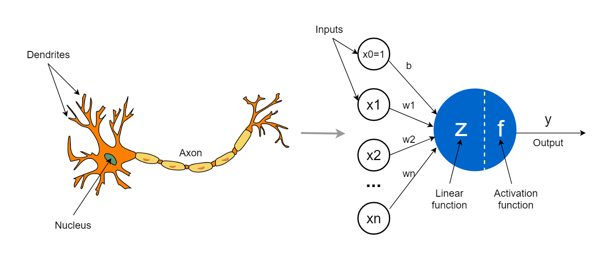
Схема нейрона МакКаллока-Питтса: входы $x_i$ умножаются на веса $w_i$, сумматор складывает результаты, пороговая функция превращает сумму в 0 или 1. Нейрон выполняет ровно две операции.
Взвешенная сумма: $z = \sum\limits_{i=1}^{n} w_i x_i - \theta$. Здесь $x_i$ — значение $i$-го входа, $w_i$ — его вес, $\theta$ — порог срабатывания. Вычитание порога — это способ сказать «нас интересует не сама сумма, а то, насколько она больше $\theta$».
Бинарная активация: $y = 1$, если $z \geq 0$, и $y = 0$, если $z < 0$.
То есть: сложили голоса с учётом их веса, сравнили с порогом, выдали «да» или «нет».
Пусть у нейрона два входа, каждый принимает значение 0 или 1. Возьмём $w_1 = w_2 = 1$ и порог $\theta = 1.5$. Считаем $z = x_1 + x_2 - 1.5$:
- $x = (0, 0)$: $z = -1.5 < 0$, значит $y = 0$;
- $x = (1, 0)$: $z = -0.5 < 0$, значит $y = 0$;
- $x = (0, 1)$: $z = -0.5 < 0$, значит $y = 0$;
- $x = (1, 1)$: $z = 0.5 \geq 0$, значит $y = 1$.
Единица получилась только тогда, когда сработали оба входа — этот набор весов и порога реализует логическое И. Поменяем порог на $\theta = 0.5$ — и тот же самый нейрон превратится в логическое ИЛИ: теперь достаточно одного включённого входа.
Реальный нейрон в мозге получает сигналы от тысяч соседей через синапсы. Синапсы разной силы: какой-то вход возбуждает сильно, какой-то еле-еле, а какой-то тормозит. Если суммарный входящий сигнал превысил порог, нейрон «выстреливает» импульсом (спайком); если нет — молчит. Импульс при этом всегда одинаковой амплитуды — нейрон либо стреляет, либо нет.
МакКаллок и Питтс взяли ровно эти три черты — веса как сила синапсов, суммирование, порог с ответом «всё или ничего» — и записали их формулой. Всё остальное в биологическом нейроне (химия, время, форма импульса) они отбросили как несущественное для логики вычислений.
Условие $\sum w_i x_i = \theta$ — это уравнение прямой (при двух входах), плоскости (при трёх) или гиперплоскости (гиперплоскость — обобщение плоскости на пространство любой размерности). Нейрон просто смотрит, по какую сторону от этой границы лежит точка $x$: с одной стороны выдаёт 1, с другой — 0.
Отсюда жёсткое ограничение одного нейрона: он умеет разделять только линейно разделимые множества — те, между которыми можно провести одну прямую.
Классический контрпример — XOR («исключающее ИЛИ»): точки $(0,0)$ и $(1,1)$ надо отнести к нулю, а $(0,1)$ и $(1,0)$ — к единице. Нули и единицы лежат по диагоналям квадрата, и никакая одна прямая так плоскость не разрежет — сколько ни подбирай $w_1, w_2, \theta$, решения не существует.
Именно этот факт (подробно разобранный Минским и Папертом в 1969 году) на годы затормозил интерес к нейросетям и одновременно объяснил, зачем нужны слои: два нейрона в скрытом слое строят две прямые, а третий комбинирует их ответы — и XOR решается.
Один нейрон — одна прямая: как её ни крути, минимум одна из четырёх точек XOR остаётся не на своей стороне. Два нейрона скрытого слоя дают две прямые $x_1 + x_2 > 0.5$ и $x_1 + x_2 > 1.5$, а выходной нейрон берёт полосу между ними — граница становится нелинейной, и XOR решается. Главное, что путают новички: в модели МакКаллока-Питтса нет обучаемых параметров. Веса $w_i$ и порог $\theta$ инженер подбирает руками под конкретную логическую функцию, как в примере выше. Модель отвечает на вопрос «что нейрон может вычислить», а не «как он этому научится».
Обучаемые веса появились позже — в перцептроне Розенблатта (1958), где придумали правило, как менять $w_i$ после каждой ошибки.
Сегодняшний нейрон — прямой потомок с двумя изменениями:
- вместо вычитания порога пишут прибавление смещения (bias) $b = -\theta$, то есть $z = w^\top x + b$ — это та же формула, просто удобнее записывать;
- вместо жёсткого порога стоит гладкая функция активации (ReLU, sigmoid, GELU).
Второе изменение — не косметика, а необходимость: у пороговой функции производная равна нулю везде, где она определена, поэтому градиент по весам всегда нулевой и backpropagation с ней не работает. Гладкая активация даёт ненулевой градиент и делает обучение возможным.
Что вычисляет нейрон МакКаллока-Питтса?
Взвешенную сумму входов, сравнённую с порогом: $z = \sum w_i x_i - \theta$; выдаёт 1, если $z \geq 0$, иначе 0. Это пороговая бинарная функция, формализующая «срабатывание» биологического нейрона по принципу «всё или ничего».
Есть ли у него обучаемые параметры?
Нет. Веса $w_i$ и порог $\theta$ задаются вручную. Модель описывает, что нейрон способен вычислить, но не умеет настраиваться по данным. Обучаемые веса появились в перцептроне Розенблатта.
Какие функции умеет один такой нейрон, а какие нет?
Умеет любые линейно разделимые функции — И, ИЛИ, НЕ (подбором весов и порога). Не умеет XOR: его классы нельзя разделить одной гиперплоскостью. Для XOR нужен как минимум ещё один слой нейронов.
Каков геометрический смысл нейрона?
Уравнение $w^\top x = \theta$ задаёт гиперплоскость, а нейрон отвечает, по какую сторону от неё лежит точка входа. Веса задают наклон плоскости, порог — её сдвиг от начала координат.
Почему бинарная активация не подходит для глубокого обучения?
Её производная равна нулю всюду (и не существует в точке порога), поэтому градиент по весам зануляется и backpropagation не может передать сигнал ошибки. Дифференцируемые активации (sigmoid, tanh, ReLU) — обязательное условие градиентного обучения.
Как модель 1943 года связана с современным нейроном?
Структура сохранилась полностью: $y = \sigma(w^\top x + b)$. Изменилось только то, что $\sigma$ стала гладкой, смещение $b$ заменило вычитание порога, а веса теперь настраиваются градиентным спуском, а не человеком.
-
Строение многослойного перцептрона
Многослойный перцептрон (MLP, multilayer perceptron) — нейронная сеть из нескольких полносвязных слоёв нейронов, идущих друг за другом:
- входной слой — сюда подаются признаки объекта (числа, описывающие один объект);
- скрытые слои — промежуточные слои, где данные последовательно преобразуются; их выходы человек напрямую не интерпретирует, отсюда и название «скрытые»;
- выходной слой — выдаёт итоговый ответ: вероятности классов или число для регрессии.
«Полносвязный» (fully connected, dense) значит, что каждый нейрон слоя соединён со всеми нейронами предыдущего слоя.
Если совсем простыми словами: MLP — это конвейер. На каждой станции конвейера объект описывается новым набором чисел, всё более удобным для ответа. Первый слой видит сырые признаки, последний — уже настолько удобное описание, что ответ получается простым взвешенным суммированием.
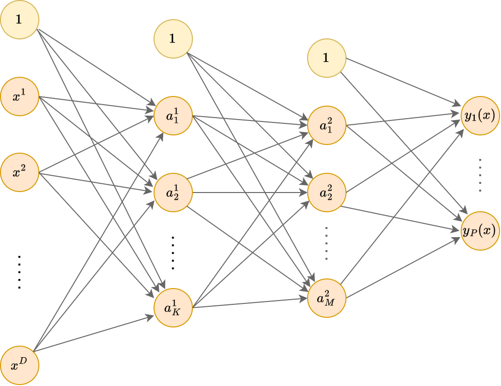
Строение многослойного перцептрона. $x^i$ — входные данные, $a^1_i$ — нейроны первого скрытого слоя, $a^2_i$ — нейроны второго скрытого слоя, $y_i$ — выходные данные. Каждая стрелка — отдельный обучаемый вес. Каждый нейрон MLP выполняет три шага:
- умножает входные значения на свои веса $w_i$ (насколько важен каждый вход);
- складывает результаты и добавляет смещение (bias) $b$ — свободный член, который позволяет сдвинуть порог срабатывания;
- пропускает сумму через функцию активации $\sigma$ — ReLU, sigmoid, tanh и т.п.
Итого: $a = \sigma(w^\top x + b)$. Это тот же нейрон МакКаллока-Питтса, только с гладкой активацией вместо жёсткого порога и с весами, которые настраиваются обучением.
Зачем нужен скрытый слой: один нейрон — это одна прямая, и XOR он не разделит. Два скрытых нейрона задают две прямые, выходной нейрон берёт полосу между ними — композиция линейных границ даёт нелинейную. В слое не один нейрон, а много, и все они смотрят на один и тот же вход $x$. У нейрона номер $j$ свой вектор весов $w_j$; если сложить эти векторы построчно в матрицу $W$, то все нейроны слоя считаются одним матричным умножением:
\[h = \sigma(Wx + b)\]
Здесь $x \in \mathbb{R}^{n}$ — вход слоя, $W \in \mathbb{R}^{m \times n}$ — матрица весов ($m$ нейронов, каждый смотрит на $n$ входов), $b \in \mathbb{R}^{m}$ — вектор смещений, $\sigma$ применяется поэлементно (к каждой координате отдельно).
То есть один слой — это одно матричное умножение плюс сложение плюс поэлементная нелинейность. Именно поэтому нейросети так хорошо ложатся на GPU: видеокарта умеет умножать матрицы тысячами потоков одновременно.
Возьмём сеть с двумя скрытыми слоями. Прогон входного вектора $x$ через неё записывается композицией:
$$y = W_3 \sigma(W_2 \sigma(W_1 x + b_1) + b_2) + b_3$$
Читать её надо изнутри наружу: сначала $W_1x + b_1$ (первый слой), затем активация, затем второй слой, снова активация, и наконец выходной слой — на нём активацию обычно не ставят (либо ставят softmax для классификации).
$W_1, W_2, W_3$ и $b_1, b_2, b_3$ — это и есть все параметры сети, те самые числа, которые подбирает обучение.
Классификация рукописных цифр $28 \times 28$ пикселей, 10 классов. Типичная архитектура $784 \to 128 \to 64 \to 10$:
- вход: картинку «разворачивают» в вектор из $28 \cdot 28 = 784$ чисел;
- слой 1: $W_1$ размера $128 \times 784$ плюс $b_1$ из 128 чисел — это $128 \cdot 784 + 128 = 100\,480$ параметров;
- слой 2: $64 \times 128 + 64 = 8\,256$ параметров;
- слой 3: $10 \times 64 + 10 = 650$ параметров.
Итого около 109 тысяч обучаемых чисел. Полезно запомнить формулу: в полносвязном слое $n_{in} \to n_{out}$ ровно $n_{in} \cdot n_{out} + n_{out}$ параметров — и именно поэтому широкие полносвязные слои так быстро раздувают модель.
MLP даже с одним скрытым слоем может приблизить любую непрерывную функцию на ограниченной области с любой наперёд заданной точностью — при условии, что нейронов в слое достаточно много и активация нелинейна.
Простыми словами: не существует непрерывной зависимости, которую нейросеть в принципе не способна выразить. Это и есть теоретическое обоснование того, почему нейросети применимы к произвольным задачам.
Три вещи, которые из неё не следуют, а новички регулярно вычитывают:
- Сколько нейронов понадобится. «Достаточно много» может означать экспоненциально много от размерности входа — практически недостижимое число.
- Что мы найдём нужные веса. Теорема говорит о существовании весов, а не о том, что градиентный спуск до них дойдёт.
- Что сеть будет обобщать. Приближение гарантировано на обучающей области; на новых данных модель может ошибаться сколько угодно.
Плюс: глубокие сети на практике почти всегда выгоднее широких — та же выразительность достигается заметно меньшим числом параметров, потому что слои переиспользуют признаки, найденные предыдущими.
Если убрать функции активации, то $W_3(W_2(W_1x + b_1) + b_2) + b_3$ раскрывается в $\tilde{W}x + \tilde{b}$, где $\tilde{W} = W_3W_2W_1$. Произведение матриц — снова матрица, значит вся глубокая сеть схлопывается в одно линейное преобразование, эквивалентное обычной линейной регрессии.
Вывод: именно нелинейная активация между слоями — то, что делает глубину осмысленной. Сто линейных слоёв ровно так же выразительны, как один.
Все три — нейросети, но по-разному устроен слой:
- MLP связывает всё со всем и не делает никаких предположений о структуре входа. Поэтому для картинки $224 \times 224 \times 3$ первый же слой на 1000 нейронов потребует 150 миллионов весов, и порядок пикселей для него ничего не значит.
- CNN переиспользует один и тот же небольшой фильтр по всей картинке (разделение весов), закладывая знание о том, что соседние пиксели связаны, а объект может сдвинуться.
- Трансформер заменяет фиксированные связи вниманием: какие элементы последовательности связаны, решается динамически, по самим данным.
При этом MLP никуда не делся — он живёт внутри и CNN (классификационная «голова»), и трансформера (feed-forward-подслой в каждом блоке).
Что такое MLP и из каких слоёв он состоит?
Нейросеть из входного слоя, одного или нескольких скрытых и выходного. Каждый слой полносвязный: выполняет линейное преобразование $Wx + b$ с последующей поэлементной нелинейной активацией.
Что делает один нейрон MLP?
Умножает входы на веса, суммирует, добавляет bias и применяет активацию: $a = \sigma(w^\top x + b)$. Bias позволяет сдвигать порог срабатывания независимо от входов.
Сколько параметров в полносвязном слое $n_{in} \to n_{out}$?
$n_{in} \cdot n_{out}$ весов плюс $n_{out}$ смещений. Например, слой $784 \to 128$ содержит $100\,480$ параметров.
Что утверждает теорема об универсальной аппроксимации и чего она не утверждает?
Утверждает: MLP с одним скрытым слоем достаточной ширины приближает любую непрерывную функцию с произвольной точностью. Не утверждает: сколько нейронов нужно, что обучение эти веса найдёт и что модель будет обобщать на новые данные.
Почему без функций активации глубокая сеть бесполезна?
Композиция линейных преобразований — снова линейное преобразование: $W_3W_2W_1 = \tilde W$. Сеть любой глубины схлопывается в один линейный слой и не может выучить нелинейную зависимость.
Чем MLP отличается от CNN и трансформеров?
MLP не делает предположений о структуре входа и связывает всё со всем, поэтому дорог и не устойчив к сдвигам. CNN разделяет веса между позициями и учитывает локальность, трансформер задаёт связи динамически через attention. Внутри обеих архитектур MLP-подслои по-прежнему используются.
-
Функции активации
Функция активации — нелинейное преобразование, которое применяется поэлементно к выходу линейной части нейрона: сначала считается $z = w^\top x + b$, а затем $a = \sigma(z)$.
Если совсем простыми словами: линейная часть нейрона умеет только «растягивать и сдвигать» — прямая остаётся прямой. Активация — это место, где сеть получает право изгибать пространство: обнулять одни сигналы, пропускать другие, насыщаться на больших значениях. Именно из этих изгибов, наложенных друг на друга слой за слоем, и складывается способность сети описывать сложные зависимости.
Пусть активаций нет. Тогда три слоя дают
\[y = W_3(W_2(W_1x + b_1) + b_2) + b_3 = \tilde{W}x + \tilde{b}, \qquad \tilde{W} = W_3W_2W_1.\]
Произведение матриц — снова матрица, поэтому вся сеть схлопывается в одно линейное преобразование. Сто слоёв выразительны ровно настолько же, насколько один: такая сеть не отличит нелинейную границу от прямой.
С нелинейностью же MLP становится универсальным аппроксиматором — см. пример.
Когда дальше будут перечисляться конкретные функции, смотрите на три вещи — из них следует всё остальное:
- Насыщается ли функция. Если на больших по модулю входах график становится почти горизонтальным, производная там близка к нулю — градиент через такой нейрон почти не проходит («затухающие градиенты»).
- Центрирована ли около нуля. Если выход всегда положительный, все градиенты весов одного нейрона получают одинаковый знак, и обучение идёт «зигзагом».
- Сколько стоит вычислить. ReLU — это одно сравнение; GELU — экспоненты и интегралы. На миллиардах активаций разница заметна.
Популярные функции активации
Tanh
Tanh (гиперболический тангенс): $$ \tanh(x) = \frac{e^x - e^{-x}}{e^x + e^{-x}}, \quad \tanh'(x) = 1 - \tanh^2(x) $$
Диапазон значений: $(-1, 1)$, функция центрирована вокруг нуля ($\tanh(0) = 0$).
Простыми словами: это «плавный ограничитель» — маленькие значения пропускает почти как есть, большие мягко прижимает к $\pm 1$.
$\tanh$ выражается через гиперболические синус и косинус: $$ \tanh(x) = \frac{\sinh(x)}{\cosh(x)} $$ где $\sinh(x) = \frac{e^x - e^{-x}}{2}$ и $\cosh(x) = \frac{e^x + e^{-x}}{2}$. Подставив их, получаем ту же формулу: $$ \tanh(x) = \frac{\sinh(x)}{\cosh(x)} = \frac{e^x - e^{-x}}{e^x + e^{-x}} $$
$$ \frac{d}{dx}\tanh(x) = 1 - \tanh^2(x) $$
Производная выражается через саму функцию. На прямом проходе мы уже посчитали $\tanh(z)$ и сохранили это значение; на обратном проходе достаточно возвести его в квадрат и вычесть из единицы — никаких новых экспонент. Ровно то же верно для sigmoid, и это одна из причин исторической популярности обеих функций.
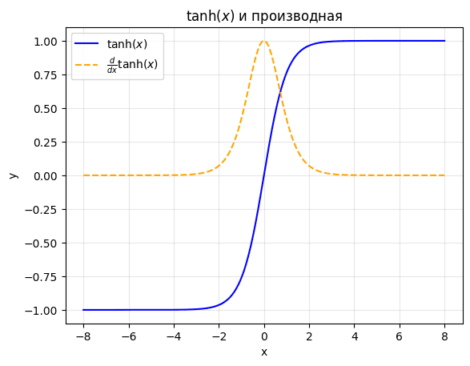
График $\tanh(x)$ и его производной. Обратите внимание: производная максимальна в нуле (равна 1) и быстро падает почти до нуля при $|x| > 3$ — это и есть зона насыщения. Sigmoid
Sigmoid (логистическая функция): $$ \sigma(x) = \frac{1}{1 + e^{-x}}, \quad \sigma'(x) = \sigma(x)(1 - \sigma(x)) $$
Диапазон: $(0, 1)$, поэтому выход можно читать как вероятность.
Простыми словами: сигмоида сжимает любое число, каким бы большим или маленьким оно ни было, в отрезок от 0 до 1. Ноль на входе даёт ровно 0.5 — «полная неуверенность».
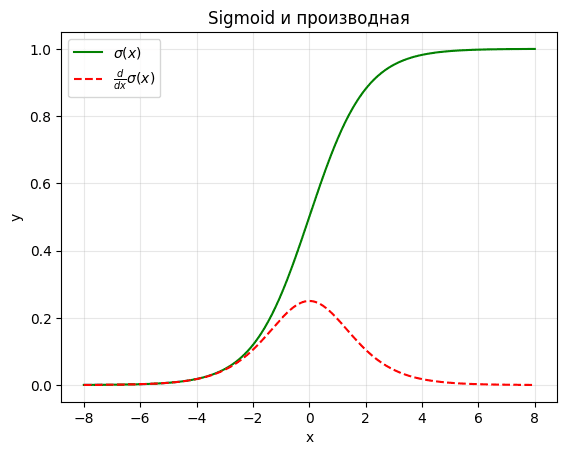
График $\sigma(x)$ и его производной. Максимум производной — всего $0.25$ в точке $x = 0$. Две проблемы, и обе видны прямо на графике.
- Насыщение. Максимум производной равен $0.25$, а при $|x| > 5$ она меньше $0.007$. Backpropagation перемножает производные всех слоёв: даже в лучшем случае за 10 слоёв градиент умножится на $0.25^{10} \approx 10^{-6}$ и практически исчезнет. Это и есть классическая проблема затухающих градиентов.
- Выход не центрирован. $\sigma(x) > 0$ всегда, поэтому у всех весов одного нейрона градиент имеет одинаковый знак — шаги оптимизации идут зигзагом вместо прямого пути к минимуму.
Сегодня sigmoid оставляют там, где она нужна по смыслу: выходной слой бинарной классификации, гейты в LSTM/GRU, механизмы «ворот». В скрытых слоях её заменили ReLU и его родственники.
ReLU
ReLU (Rectified Linear Unit, «выпрямитель»): $$ \mathrm{ReLU}(x) = \max(0, x), \quad \mathrm{ReLU}'(x) = \begin{cases} 1, & x > 0 \\ 0, & x \le 0 \end{cases} $$
Простыми словами: отрицательное — обнуляем, положительное — пропускаем без изменений. Одна операция сравнения, никаких экспонент.
В положительной области производная равна ровно 1. Это значит, что при перемножении по цепочке backpropagation она ничего не уменьшает: градиент проходит через сотню слоёв, не затухая, — в отличие от sigmoid с её множителем $\le 0.25$ на каждом слое.
Второй эффект — разреженность: примерно половина нейронов на любом входе выдаёт ноль. Активные нейроны меняются от объекта к объекту, поэтому каждый нейрон специализируется на своей области входов, а вычисления становятся дешевле.
Именно переход с sigmoid/tanh на ReLU (наряду с большими данными и GPU) сделал возможным обучение по-настоящему глубоких сетей в начале 2010-х.
При $x \le 0$ производная ReLU равна нулю. Если из-за большого шага обучения веса нейрона сместились так, что он выдаёт отрицательное $z$ на всех объектах обучающей выборки, то градиент по его весам всегда нулевой — нейрон навсегда «умер» и уже никогда не восстановится.
На практике при слишком большом learning rate так может отмереть заметная часть слоя: сеть продолжает обучаться, но её фактическая ёмкость молча уменьшилась. Лечение: уменьшить шаг обучения, использовать нормализацию или взять активацию с ненулевым наклоном слева.
Leaky ReLU
Leaky ReLU («протекающая» ReLU): $$ \mathrm{LeakyReLU}(x) = \begin{cases} x, & x > 0 \\ \alpha x, & x \le 0 \end{cases} $$ где $\alpha \approx 0.01$ — небольшой наклон в отрицательной области.
Идея в одну строку: не обнулять отрицательную часть полностью, а оставить ей «щёлку» — тогда производная слева равна $\alpha \neq 0$, градиент продолжает течь и нейрон не может умереть окончательно.
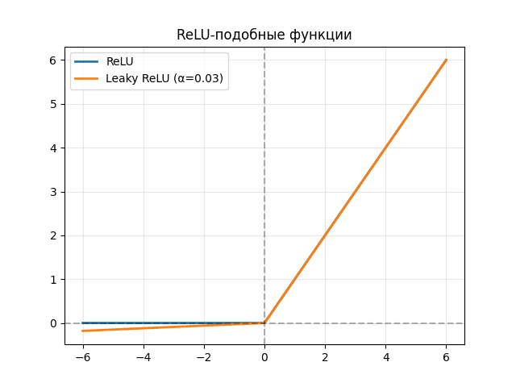
ReLU обнуляет всю отрицательную полуось; Leaky ReLU оставляет ей небольшой наклон $\alpha$, сохраняя ненулевой градиент. - PReLU (Parametric ReLU) — тот же $\alpha$, но обучаемый: сеть сама подбирает наклон, отдельно для каждого канала.
- RReLU (Randomized ReLU) — $\alpha$ случайно семплируется во время обучения, что даёт лёгкий эффект регуляризации.
На практике выигрыш Leaky ReLU над обычной ReLU обычно небольшой; её берут прежде всего тогда, когда есть подозрение на мёртвые нейроны (например, в GAN-ах, где это частая беда).
ELU
ELU (Exponential Linear Unit): $$ \mathrm{ELU}(x) = \begin{cases} x, & x > 0 \\ \alpha(e^x - 1), & x \le 0 \end{cases} $$
Слева функция плавно опускается к $-\alpha$ и там насыщается. В отличие от Leaky ReLU, переход в нуле гладкий (производная не прыгает), а отрицательные значения ограничены снизу.
ReLU выдаёт только неотрицательные числа, поэтому средний выход слоя всегда смещён вверх. Такое смещение накапливается от слоя к слою и мешает оптимизации.
ELU выдаёт и отрицательные значения, так что средняя активация оказывается ближе к нулю — это своего рода «встроенная лёгкая нормализация», за счёт которой ELU иногда сходится быстрее. Плата — экспонента в отрицательной области, то есть более дорогое вычисление.
GELU
GELU (Gaussian Error Linear Unit): $$ \mathrm{GELU}(x) = x \cdot \Phi(x) = x \cdot \frac{1}{\sqrt{2\pi}}\int_{-\infty}^{x}e^{-t^2/2}\,dt $$ где $\Phi(x)$ — кумулятивная функция стандартного нормального распределения, то есть вероятность того, что случайная величина $\mathcal{N}(0,1)$ окажется меньше $x$. Она гладко растёт от 0 до 1.
Используется в большинстве трансформеров (BERT, GPT).
ReLU принимает жёсткое решение: «пропустить целиком или обнулить». GELU принимает мягкое: она умножает вход на вероятность того, что этот вход «достаточно велик».
- при $x = 2$: $\Phi(2) \approx 0.98$, вход проходит почти полностью;
- при $x = 0$: $\Phi(0) = 0.5$, проходит половина;
- при $x = -2$: $\Phi(-2) \approx 0.02$, остаётся лишь 2%.
Получается гладкая кривая, которая на больших значениях совпадает с ReLU, около нуля ведёт себя мягче и даже слегка уходит в минус. Гладкость — не эстетика: она даёт непрерывную производную и заметно более устойчивое обучение больших трансформеров.
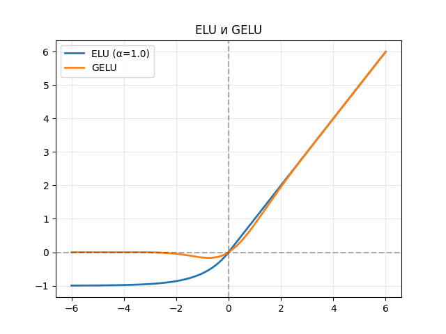
ELU и GELU: обе гладкие, обе допускают небольшие отрицательные значения, обе на положительной полуоси почти совпадают с прямой $y = x$. SiLU
SiLU (Sigmoid Linear Unit, она же Swish-1): $$ \mathrm{SiLU}(x) = x \cdot \sigma(x) = \frac{x}{1 + e^{-x}} $$
Та же идея, что у GELU, но вместо $\Phi(x)$ стоит обычная сигмоида — вычислять дешевле, а графики почти неразличимы. Гладкая, непрерывно дифференцируемая альтернатива ReLU; применяется в EfficientNet и в современных трансформерах.
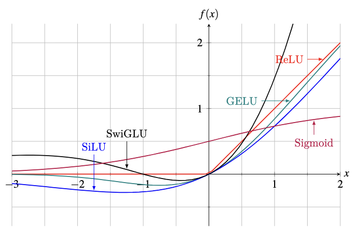
SiLU и SwiGLU: у обеих есть характерный «прогиб» ниже нуля в районе $x \approx -1$, которого нет у ReLU. Swish
Swish (self-gated activation, «самоуправляемая» активация): $$ \mathrm{Swish}(x) = x \cdot \sigma(\beta x) $$ где $\beta$ — параметр, который можно сделать обучаемым. При $\beta = 1$ получается ровно SiLU, при $\beta \to \infty$ функция стремится к ReLU, при $\beta \to 0$ — к линейной $x/2$.
Название «self-gated» означает, что вход сам решает, насколько ему пройти: множитель $\sigma(\beta x)$ вычисляется из того же $x$. Используется в MobileNetV3 и EfficientNet.
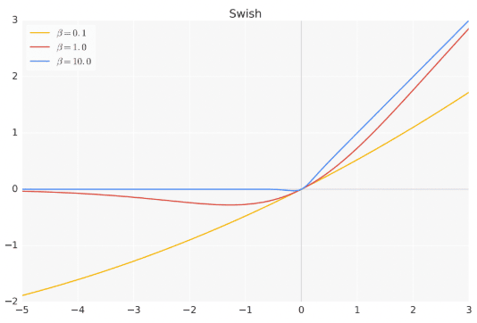
Swish при разных $\beta$: параметр управляет тем, насколько функция похожа на ReLU (большие $\beta$) или на линейную (малые $\beta$). GLU
GLU (Gated Linear Unit): $$ \mathrm{GLU}(x) = x_1 \odot \sigma(x_2), \quad \text{где} \quad x_1 = Wx + b,\; x_2 = Vx + c $$ $\odot$ — поэлементное умножение (каждая координата умножается на свою).
Ключевое отличие от всего предыдущего: здесь берутся два разных линейных преобразования одного и того же входа $x$, и одно из них управляет пропуском другого. Это уже не поэлементная функция одного числа, а небольшой обучаемый механизм.
- $x_1 = Wx + b$ — основной сигнал, «то, что могло бы пройти»;
- $x_2 = Vx + c$ — управляющий сигнал;
- $\sigma(x_2) \in (0,1)$ — сами «ворота»: 0 значит «перекрыть», 1 — «пропустить целиком», промежуточное — «пропустить частично»;
- $x_1 \odot \sigma(x_2)$ — результат: каждая координата сигнала проходит ровно настолько, насколько её пустили ворота.
Смысл в том, что сеть учится решать по самим данным, какие признаки в этом конкретном примере важны, а какие надо погасить. Это тот же приём, что гейты в LSTM (там они регулируют поток информации во времени), только применённый внутри полносвязного слоя.
SwiGLU
SwiGLU (Swish-Gated Linear Unit): $$ \mathrm{SwiGLU}(x_1, x_2) = \mathrm{Swish}(x_1) \odot x_2 $$
Модификация GLU, в которой сигмоида на воротах заменена на Swish. Применяется в feed-forward-подслоях больших языковых моделей (PaLM, T5, Llama): даёт заметно лучшее качество при том же бюджете вычислений.
GLU и SwiGLU требуют двух матриц ($W$ и $V$) вместо одной, то есть примерно вдвое больше параметров и вычислений в этом месте. Поэтому в трансформерах при переходе на SwiGLU обычно уменьшают внутреннюю размерность feed-forward-слоя (типично с $4d$ до $\approx \tfrac{8}{3}d$), чтобы суммарное число параметров осталось прежним — и только тогда сравнение с обычной архитектурой честное.
ReLU, сигмоида, tanh и GELU (синяя) вместе со своими производными (оранжевая). Производная сигмоиды нигде не превышает $0.25$: за десять слоёв градиент сжимается примерно в $10^6$ раз. У ReLU и GELU на положительной части производная около единицы, поэтому градиент проходит сквозь глубокую сеть без затухания. Что выбирать на практике
Где Что брать Почему Скрытые слои CNN/MLP ReLU дёшево, надёжно, проверено; вариант по умолчанию Есть мёртвые нейроны, GAN Leaky ReLU / ELU сохраняют ненулевой градиент слева Трансформеры GELU / SiLU / SwiGLU гладкость даёт устойчивое обучение на больших моделях Выход бинарной классификации Sigmoid выдаёт вероятность в $(0,1)$ Выход многоклассовой классификации Softmax распределение вероятностей по классам Выход регрессии ничего ответ не должен быть ограничен диапазоном Гейты в LSTM/GRU Sigmoid, tanh нужны именно ограниченные значения $(0,1)$ и $(-1,1)$ - Ставить softmax или sigmoid на выход, а потом ещё раз применять их в функции потерь.
CrossEntropyLossв PyTorch иBCEWithLogitsLossпринимают логиты — сырые выходы до активации, потому что численно устойчивее считать логарифм и экспоненту вместе. Двойное применение молча ухудшит обучение. - Ставить активацию на выход регрессии. ReLU на выходе запрещает отрицательные ответы, sigmoid — загоняет всё в $(0,1)$; если это не входит в замысел, модель просто не сможет предсказать нужные значения.
- Перебирать экзотические активации вместо настройки learning rate и нормализации. Выигрыш от смены ReLU на что-то модное обычно измеряется десятыми долями процента, тогда как неверный шаг обучения стоит десятков процентов качества.
Смена функции активации — редкий случай, когда одну строку в архитектуре видно на бенчмарках:
- AlexNet — переход с $\tanh$ на ReLU, с которого началось практическое глубокое обучение.
- Mistral 7B — SwiGLU в рабочей конфигурации: зачем нужен гейт и как из-за него подбирают скрытый размер FFN (14336 при $d = 4096$).
- Gemma — GeGLU, вариант того же гейта с GELU вместо Swish.
Зачем нейронным сетям нелинейные функции активации?
Без них композиция слоёв $W_3W_2W_1x$ схлопывается в одно линейное преобразование, и глубина не даёт ничего. Нелинейность позволяет строить иерархию признаков и приближать произвольные непрерывные зависимости.
В чём проблема затухающих градиентов у sigmoid и tanh?
Обе функции насыщаются: на больших по модулю входах производная близка к нулю (у sigmoid максимум всего $0.25$). Backprop перемножает производные слоёв, поэтому за десяток слоёв градиент уменьшается на порядки и нижние слои перестают обучаться.
В чём проблема «мёртвых» нейронов у ReLU и как её решают?
Если нейрон выдаёт отрицательное $z$ на всех обучающих объектах, его градиент всегда нулевой и он больше не обучается. Помогают меньший learning rate, нормализация и активации с ненулевым наклоном слева: Leaky ReLU, PReLU, ELU.
Чем GELU отличается от ReLU и почему её выбирают в трансформерах?
ReLU жёстко обнуляет отрицательную часть, GELU умножает вход на $\Phi(x)$ — вероятность, что вход «достаточно велик», — и потому гладкая. Непрерывная производная даёт более стабильное обучение очень больших моделей; ценой становится более дорогое вычисление.
Что такое GLU и как это связано с LSTM?
GLU умножает две линейные проекции одного входа: одна несёт сигнал, другая через сигмоиду работает воротами и решает, сколько сигнала пропустить. Это тот же принцип гейтов, что в LSTM, но применённый внутри полносвязного слоя, а не по временной оси.
Почему производные tanh и sigmoid удобны на обратном проходе?
Они выражаются через значение самой функции: $\tanh'(x) = 1 - \tanh^2(x)$, $\sigma'(x) = \sigma(x)(1 - \sigma(x))$. Значение уже посчитано и сохранено на прямом проходе, так что дополнительных экспонент вычислять не нужно.
Какую активацию брать по умолчанию и что ставить на выход?
В скрытых слоях — ReLU (в трансформерах GELU/SwiGLU). На выходе: sigmoid для бинарной классификации, softmax для многоклассовой, ничего — для регрессии. При этом функции потерь вроде
CrossEntropyLossожидают логиты, поэтому активацию на выход отдельно не ставят.
-
Прямой и обратный проход
У нейронной сети есть два основных режима работы:
- Прямое распространение (forward pass) — движение данных от входа к выходу: сеть считает предсказание;
- Обратное распространение ошибки (backward pass) — движение градиента от выхода к входу: сеть считает, насколько каждый вес виноват в получившейся ошибке.
Если совсем простыми словами: forward — «сеть отвечает на вопрос», backward — «сеть разбирается, кто в ошибке виноват и в какую сторону подкрутить каждую ручку». Обновление весов происходит уже после этого, третьим действием.
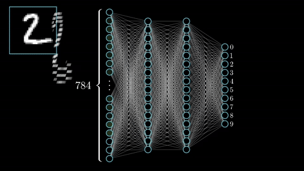
Прямое распространение (forward pass) в MLP: данные проходят через слои, на каждом умножаются на веса, складываются со смещением и пропускаются через функцию активации. Пример на датасете MNIST. Данные MNIST — это изображения цифр от 0 до 9, каждая картинка чёрно-белая, размером $28 \times 28$ пикселей. Чтобы построить простейшую модель, вытянем картинку в плоский вектор длины $28 \times 28 = 784$ (например,
np.flatten(image)) и подадим его на вход MLP.После всех скрытых слоёв получаем вектор
outputдлины $10$ — вероятности того, что на картинке цифра $0, 1, \ldots, 9$. Ответом считаем класс с наибольшей вероятностью (class_idx = np.argmax(output)).# Прямой проход image = np.flatten(image) # развернем картинку в вектор длины 784 output = MLP(image) # пропустим через MLP class_idx = np.argmax(output) # выберем класс с наибольшей вероятностьюПрямой проход — это цепочка преобразований $x \to h_1 \to h_2 \to \ldots \to \hat{y}$, где на каждом шаге считается $h_k = \sigma(W_k h_{k-1} + b_k)$.
Важная деталь, о которой часто забывают: при обучении сеть на прямом проходе сохраняет промежуточные значения — входы слоёв, значения до и после активации. Они понадобятся на обратном проходе: чтобы посчитать производную по весам слоя, нужно знать, что именно приходило на его вход. Эти сохранённые тензоры и есть основной расход видеопамяти при обучении.
Прямой проход выполняется всегда — и при обучении, и при инференсе (применении обученной модели).
Обратный проход нужен только при обучении. После предсказания $\hat{y}$ считается функция потерь $L$ (например, кросс-энтропия) — одно число, показывающее, насколько ответ плох. Дальше по цепному правилу дифференцирования сеть считает $\frac{\partial L}{\partial w}$ для каждого веса — производную потерь по этому весу.
Интуиция за этим числом: «если чуть-чуть увеличить этот вес, ошибка вырастет или упадёт, и насколько сильно?». Нейрон, сильно повлиявший на ошибку, получит большой по модулю градиент и изменится заметно; нейрон, который ни при чём, получит градиент около нуля и почти не сдвинется.
Градиент считается с конца: сначала для последнего слоя, затем результат передаётся на слой ниже — отсюда и «обратное» распространение. Подробный разбор — в следующем вопросе про backpropagation.
Один шаг обучения. Прямой проход (синий): активации идут от входа к выходу, на выходе считается ошибка $L$. Обратный проход (красный): градиент $\partial L / \partial W$ идёт от ошибки назад, слой за слоем — сначала $W_3$, затем $W_2$, затем $W_1$. Шаг оптимизатора (зелёный): веса обновляются, и цикл повторяется. Один шаг (итерация) обучения состоит из четырёх действий:
- forward pass — прогнать батч через сеть, получить $\hat{y}$;
- loss — сравнить $\hat{y}$ с правильными ответами, получить одно число $L$;
- backward pass — посчитать градиенты $\frac{\partial L}{\partial w}$ для всех параметров;
- шаг оптимизатора — обновить веса, например $w \leftarrow w - \eta \frac{\partial L}{\partial w}$.
В PyTorch это буквально четыре строки:
out = model(x),loss = criterion(out, y),loss.backward(),optimizer.step()(плюсoptimizer.zero_grad()).for x, y in dataloader: optimizer.zero_grad() # обнулить градиенты с прошлого шага out = model(x) # 1. forward pass loss = criterion(out, y) # 2. значение функции потерь loss.backward() # 3. backward pass: заполняет .grad у параметров optimizer.step() # 4. обновление весов- Забыть
optimizer.zero_grad(). PyTorch накапливает градиенты в.grad, а не перезаписывает их. Без обнуления градиенты всех прошедших батчей складываются, шаг получается огромным, и обучение разваливается. (Это же поведение специально используют для gradient accumulation — эмуляции большого батча на маленькой видеокарте.) - Не переключить
model.eval()при валидации. Dropout и BatchNorm ведут себя по-разному в обучении и в инференсе; забытыйeval()даёт заниженные и шумные метрики на валидации. - Не обернуть инференс в
torch.no_grad(). Иначе сеть продолжает строить граф вычислений и хранить активации — память тратится впустую, а на больших моделях это прямой путь к out-of-memory.
Здесь складываются два разных фактора.
- По памяти: при инференсе достаточно хранить активации одного слоя за раз, при обучении — активации всех слоёв до конца backward pass. Для глубокой сети это разница в десятки раз, и именно она обычно ограничивает максимальный размер батча.
- По вычислениям: backward pass примерно вдвое дороже forward, потому что для каждого слоя нужно посчитать два градиента — по весам (чтобы обновить их) и по входу (чтобы передать сигнал ниже). Итого шаг обучения ≈ 3$\times$ стоимости прямого прохода.
Отсюда практический приём gradient checkpointing: часть активаций не хранят, а пересчитывают заново на обратном проходе — платим ~30% временем, экономим кратно память.
Что происходит на прямом проходе (forward pass)?
Данные последовательно преобразуются слоями от входа к выходу, вычисляется предсказание $\hat{y}$ и значение функции потерь. При обучении промежуточные активации сохраняются — они нужны для backward pass.
Что вычисляется на обратном проходе?
Градиенты функции потерь по всем параметрам, $\frac{\partial L}{\partial w}$, — по цепному правилу, начиная с последнего слоя и двигаясь к первому. Сами веса на этом шаге ещё не меняются.
На каком проходе обновляются веса?
Ни на одном: веса обновляет отдельный шаг оптимизатора, который выполняется после backward pass и использует посчитанные им градиенты.
Нужен ли backward pass при инференсе?
Нет, при инференсе выполняется только прямой проход. Поэтому инференс оборачивают в
torch.no_grad()— это отключает построение графа вычислений и экономит память.Почему шаг обучения дороже инференса и по памяти, и по времени?
По памяти — потому что приходится держать активации всех слоёв до обратного прохода. По времени — потому что backward считает два градиента на слой (по весам и по входу) и обходится примерно вдвое дороже forward; суммарно шаг обучения ≈ 3$\times$ прямого прохода.
Что будет, если забыть
optimizer.zero_grad()?Градиенты в PyTorch накапливаются, поэтому к текущему батчу прибавятся все предыдущие: эффективный шаг станет непредсказуемо большим и обучение разойдётся. Осознанно этим пользуются только для gradient accumulation.
-
Обратное распространение ошибки (backpropagation) — алгоритм, который позволяет эффективно вычислить градиенты функции потерь по всем весам нейронной сети за один проход от выхода ко входу. Именно благодаря ему веса можно корректировать так, чтобы сеть училась на данных.
Если совсем простыми словами: сеть ошиблась, и надо понять, кто виноват. Backpropagation раздаёт «долю вины» слой за слоем с конца: последний слой знает, насколько ошибся он сам, и сообщает предыдущему, насколько тот испортил ему вход; тот делает то же самое для слоя ниже — и так до самого начала. В конце у каждого веса есть число: «ошибка вырастет вот настолько, если тебя чуть-чуть увеличить».
- На прямом проходе (forward pass) вычисляется выход сети и значение функции потерь — например, среднеквадратичная ошибка (MSE) или кросс-энтропия.
- На обратном проходе (backward pass) по цепному правилу вычисляются производные функции потерь по всем параметрам (весам и смещениям).
- Полученные градиенты используются для обновления весов градиентным спуском:
$$ w_t = w_{t-1} - \eta \nabla L(w_{t-1}) $$
где $w_t$ — веса на шаге $t$, $\eta$ — скорость обучения (learning rate), $\nabla L(w_{t-1})$ — градиент функции потерь по весам.
Градиент — вектор частных производных; он указывает направление наискорейшего возрастания функции. Мы считаем градиент функции потерь по всем весам модели, поэтому длина этого вектора равна числу весов: у модели на 100 миллионов параметров градиент — это 100 миллионов чисел.
Минус в формуле — потому что мы двигаемся в сторону антиградиента, то есть наискорейшего убывания потерь. Множитель $\eta$ говорит, насколько большой шаг сделать: направление даёт градиент, длину шага — learning rate.
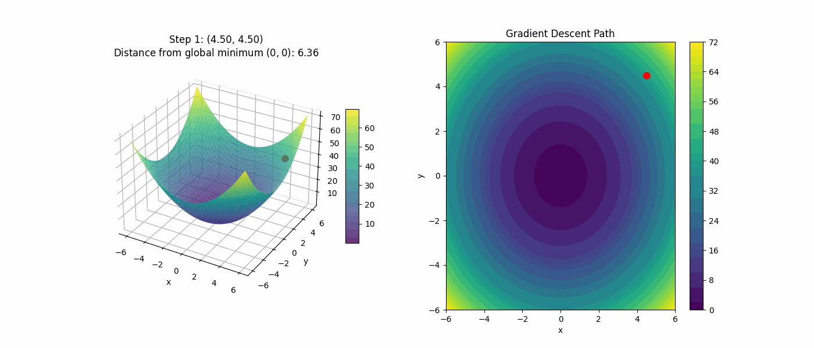
Градиентный спуск для функции двух переменных $f(x,y)=x^2+y^2$: шарик скатывается по поверхности в направлении антиградиента. Глобальный минимум — в точке $(0,0)$. Нейронная сеть — это композиция функций: $L = \ell(f_n(\ldots f_1(x) \ldots))$. Иначе можно переписать так: $$\underbrace{x}_{\text{вход}} \xrightarrow{\overbrace{f_1}^{\text{1-й слой}}}\underbrace{x_1}_{\text{выход 1-го слоя}} \xrightarrow{f_2}x_2 \xrightarrow{f_3}x_3 \xrightarrow{f_4} \dots \xrightarrow{f_{n-1}} x_{n-1}\xrightarrow{f_n}x_{n} \xrightarrow{\ell} \underbrace{\hat{y}}_{\text{ответ}}$$
По цепному правилу производная разворачивается в цепочку множителей: $$ \frac{\partial L}{\partial w_1} = \frac{\partial L}{\partial f_n} \cdot \frac{\partial f_n}{\partial f_{n-1}} \cdot \ldots \cdot \frac{\partial f_1}{\partial w_1}=\underbrace{\prod_{i=2}^n \frac{\partial L}{\partial f_i} \cdot \frac{\partial f_i}{\partial f_{i-1}}}_{\text{очень много произведений}} $$
Backpropagation — это применение цепного правила справа налево, от выхода к входу: промежуточные значения считаются один раз на forward pass и переиспользуются.
Порядок перемножения — не деталь реализации, а суть всей экономии.
Если идти слева направо (от входа к выходу), придётся тащить за собой матрицы производных «выход слоя по входу слоя» целиком: для слоя из 1000 нейронов это матрица $1000 \times 1000$, и перемножать такие матрицы для каждого веса отдельно — безумно дорого.
Если идти справа налево, мы начинаем с одного числа $L$ и на каждом шаге умножаем вектор на матрицу, а не матрицу на матрицу. Стоимость всего обратного прохода получается того же порядка, что и прямого (примерно вдвое дороже), независимо от числа параметров.
Итог: за один backward pass мы получаем градиенты сразу по всем миллионам весов, тогда как «наивный» подсчёт по одному весу за раз потребовал бы миллиона прогонов сети. Именно поэтому обучение больших моделей вообще возможно.
Есть соблазн считать производную «в лоб»: $\frac{\partial L}{\partial w} \approx \frac{L(w + \varepsilon) - L(w)}{\varepsilon}$. Для модели со 100 млн параметров это 100 млн прямых проходов на один шаг обучения — примерно в $10^8$ раз медленнее backpropagation. Плюс такая оценка неточна из-за ошибок округления.
Численные производные всё же применяют, но только для gradient checking — проверки, что руками написанный слой считает градиент правильно, на игрушечной модели.
Однослойная сеть: $\hat{y} = wx$, функция потерь $L = (\hat{y} - y)^2$.
Цепное правило: $$\frac{\partial L}{\partial w} = \frac{\partial L}{\partial \hat{y}} \cdot \frac{\partial \hat{y}}{\partial w} = 2(\hat{y} - y) \cdot x$$
Подставим $x = 2,\ w = 3,\ y = 4$: тогда $\hat{y} = 6$, и $$\frac{\partial L}{\partial w} = 2(6 - 4) \cdot 2 = 8.$$
Шаг обновления при $\eta = 0.1$: $$w_\text{new} = w_\text{old} - \eta \cdot \nabla L = 3 - 0.1 \cdot 8 = 2.2$$
Вес уменьшился, новое предсказание $\hat{y} = 2.2 \cdot 2 = 4.4$ — заметно ближе к $y = 4$, чем прежние 6.
Возьмём цепочку $u = w_1 x$, $\hat{y} = w_2 u$, $L = (\hat{y} - y)^2$ с числами $x = 2$, $w_1 = 3$, $w_2 = 0.5$, $y = 4$.
Forward: $u = 6$, $\hat{y} = 3$, $L = (3-4)^2 = 1$.
Backward, шаг за шагом:
- $\dfrac{\partial L}{\partial \hat{y}} = 2(\hat{y} - y) = -2$ — «сигнал ошибки» на выходе;
- $\dfrac{\partial L}{\partial w_2} = \dfrac{\partial L}{\partial \hat{y}} \cdot u = -2 \cdot 6 = -12$;
- $\dfrac{\partial L}{\partial u} = \dfrac{\partial L}{\partial \hat{y}} \cdot w_2 = -2 \cdot 0.5 = -1$ — это и есть та самая «вина», переданная на слой ниже;
- $\dfrac{\partial L}{\partial w_1} = \dfrac{\partial L}{\partial u} \cdot x = -1 \cdot 2 = -2$.
Обратите внимание на шаг 3: сигнал ошибки, идущий вниз, умножился на $w_2 = 0.5$ и уменьшился вдвое. Если так пойдёт слой за слоем, до первых слоёв дойдут исчезающе малые градиенты — вот откуда берётся проблема затухающих градиентов. Если же веса больше единицы, сигнал будет так же быстро расти — это взрывающиеся градиенты.
- Все операции дифференцируемы (хотя бы почти всюду). Поэтому в сетях не используют жёсткий порог и
argmax: их производная равна нулю или не существует, и сигнал ошибки через них не проходит. Там, где дискретный выбор всё-таки нужен, придумывают обходные приёмы — Gumbel-softmax, straight-through-оценки. - Граф вычислений — ациклический: каждое промежуточное значение вычисляется до того, как понадобится. Рекуррентные сети этому не противоречат — их просто «разворачивают» во времени в длинную цепочку слоёв (BPTT, backpropagation through time).
- Он не оптимизирует. Backprop только считает градиенты; шаг делает оптимизатор (SGD, Adam). Это два разных этапа, и путать их на собеседовании — типичная ошибка.
- Он не гарантирует нахождение глобального минимума. Поверхность потерь невыпуклая; градиентный спуск сходится к какому-то локальному минимуму или седловой области. На практике этого оказывается достаточно: в больших сетях большинство локальных минимумов дают близкое качество.
- Он не спасает от плохой архитектуры и плохого шага обучения. Если активации насыщены или learning rate слишком велик, градиенты будут корректными, но обучение всё равно не пойдёт.
Что такое backpropagation и какую задачу он решает?
Это эффективное применение цепного правила для вычисления градиентов функции потерь по всем параметрам сети за один проход от выхода ко входу. Он позволяет получить миллионы частных производных ценой примерно двух прямых проходов.
Что такое цепное правило и как оно применяется в сети?
Правило дифференцирования сложной функции: производная композиции равна произведению производных её частей. В сети это значит, что градиент по слою получается умножением градиента следующего слоя на производную текущего.
Почему градиенты считают от выхода ко входу, а не наоборот?
При движении справа налево мы на каждом шаге умножаем вектор на матрицу, а не матрицу на матрицу. Стоимость обратного прохода получается сравнимой с прямым и не зависит от числа параметров; обратный порядок был бы вычислительно неподъёмным.
Почему нужно запоминать промежуточные активации с forward pass?
Производные слоёв выражаются через их входы и выходы (например, $\sigma' = \sigma(1-\sigma)$). Сохранённые активации позволяют не пересчитывать forward заново — обмен памяти на время; при нехватке памяти применяют gradient checkpointing и идут на обратный размен.
Как связаны backpropagation и градиентный спуск?
Backprop вычисляет направление (градиент), градиентный спуск делает в этом направлении шаг: $w \leftarrow w - \eta \nabla L$. Первое — дифференцирование, второе — оптимизация.
Почему backprop не работает с недифференцируемыми операциями?
Цепное правило требует производных на каждом шаге. У ступенчатой функции или
argmaxпроизводная равна нулю либо не определена, поэтому сигнал ошибки через них не проходит и обучение останавливается.Откуда берутся затухающие и взрывающиеся градиенты?
Градиент — это произведение множителей по всем слоям. Если типичный множитель меньше единицы, произведение экспоненциально стремится к нулю; если больше — экспоненциально растёт. Отсюда и лечение: подходящие активации, нормализация, skip-connections, клиппинг градиентов.
-
Оптимизаторы в глубоком обучении
На практике градиентный спуск в том виде, как он описан выше, использовать неудобно. Причин несколько:
- градиент считается по всем объектам датасета — на выборке из миллиона картинок один-единственный шаг обучения потребует прогнать через сеть весь миллион;
- такой спуск детерминирован: он послушно скатывается в ближайший локальный минимум или застревает на плоских участках (плато и сёдлах), и выбраться оттуда ему нечем;
- он не учитывает, что у разных параметров разный масштаб градиентов, и один общий learning rate для всех оказывается либо слишком большим, либо слишком маленьким.
Поэтому на практике используют оптимизаторы — модификации градиентного спуска, снимающие эти проблемы.
Оптимизатор — алгоритм, который по градиентам, посчитанным backpropagation, решает, как именно изменить параметры сети (веса и смещения), чтобы уменьшить функцию потерь.
Если совсем простыми словами: backprop говорит «вот в какую сторону склон», а оптимизатор решает «какой длины шаг сделать и стоит ли учитывать, куда я шёл раньше». Разные оптимизаторы отвечают на этот вопрос по-разному: одни просто идут по склону, другие разгоняются как шарик с инерцией, третьи для каждого параметра держат свой персональный размер шага.
Первое различие между методами — по скольким объектам считается градиент на одном шаге:
- Full-batch (batch) gradient descent — по всей выборке. Оценка градиента точная, но один шаг стоит целой эпохи вычислений.
- Стохастический градиентный спуск (SGD) в исходном смысле — по одному случайному объекту. Шаг мгновенный, но оценка градиента крайне шумная.
- Mini-batch gradient descent — по случайной подвыборке (мини-батчу) из $B$ объектов, обычно $B$ от 32 до 512. Золотая середина.
Выборка из 1 000 000 картинок, батч 256.
- Full-batch: один проход по данным = один шаг обновления весов. За 10 эпох веса изменятся 10 раз — модель не успеет обучиться ничему.
- Mini-batch: один проход = $1\,000\,000 / 256 \approx 3906$ шагов. За те же 10 эпох веса обновятся почти 40 000 раз при том же объёме вычислений.
Вывод, который стоит запомнить: цена вычислений одинаковая, а прогресс обучения отличается на три порядка. Точность оценки градиента почти никогда не стоит того, чтобы ради неё отказываться от частых шагов.
- SGD по одному объекту — очень шумный и нестабильный, плохо использует GPU (видеокарта простаивает на одном примере).
- Mini-batch — золотая середина: оценка градиента уже приличная, шаги частые, а батч из сотен объектов считается параллельно и загружает GPU полностью.
- Full-batch — точно, но слишком долго и дорого; вдобавок весь датасет должен помещаться в память.
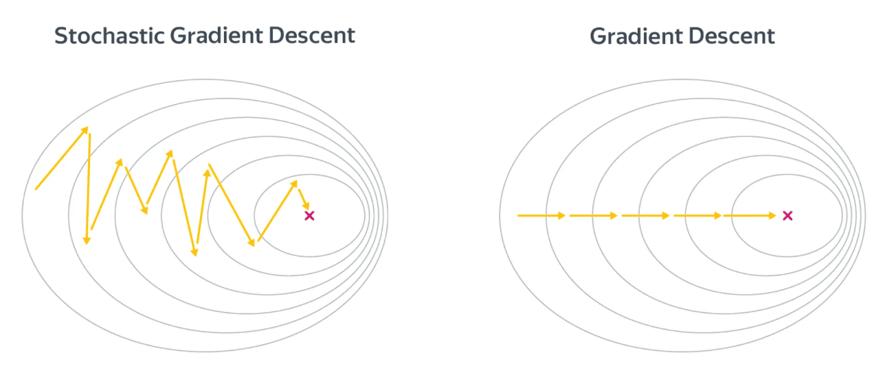
Иллюстрация градиентного спуска по мини-батчам: траектория заметно «дрожит» по сравнению с гладким полным градиентным спуском, но в среднем идёт в ту же сторону. Градиент по батчу — несмещённая оценка истинного градиента: в среднем он указывает туда же, куда полный, но с случайным отклонением. Это отклонение оказывается полезным сразу по двум причинам.
- Побег из сёдел и плато. В многомерных пространствах основная беда не локальные минимумы, а седловые точки — места, где градиент почти нулевой, но в некоторых направлениях всё же есть спуск. Детерминированный спуск может там надолго зависнуть; случайный шум выталкивает из такой точки.
- Обобщение. Шум мешает оптимизатору залезть в узкий «острый» минимум — такой, где потери резко растут при малейшем изменении весов. Широкие, пологие минимумы обычно дают лучшее качество на новых данных, и шумный SGD склонен находить именно их.
Отсюда неочевидный практический факт: слишком большой батч (десятки тысяч объектов) может ухудшить итоговое качество, хотя каждый отдельный шаг станет точнее.
Сегодня под словом SGD почти всегда имеют в виду именно градиентный спуск по мини-батчам, а не по одному объекту. В коде
torch.optim.SGD— тоже мини-батчевый: батч задаётся даталоадером, а не оптимизатором. Дальше в этом разделе мы используем такое же обозначение.Оценка градиента — только половина дела. Дальше оптимизаторы расходятся по тому, как они превращают градиент в шаг:
- простой шаг по антиградиенту — обычный SGD;
- накопление инерции: усреднить градиенты по последним шагам, чтобы гасить дрожание и разгоняться в устойчивом направлении — Momentum, Nesterov;
- свой шаг для каждого параметра: параметры, у которых градиенты стабильно большие, двигать осторожнее, а редкие — смелее — AdaGrad, RMSProp;
- и то, и другое сразу — Adam, AdamW, NAdam.
Все эти приёмы строятся на одном инструменте — экспоненциальном скользящем среднем, с которого начинается следующий вопрос.
- «Оптимизатор считает градиенты». Нет: градиенты считает backpropagation, оптимизатор только решает, как их применить. В PyTorch это буквально разные вызовы:
loss.backward()иoptimizer.step(). - «Батч побольше — всегда лучше». Больший батч даёт более точный градиент и лучше грузит GPU, но требует пересчёта learning rate (при росте батча в $k$ раз шаг обычно увеличивают примерно в $k$ или $\sqrt{k}$ раз) и может ухудшить обобщение.
- «Хороший оптимизатор компенсирует плохой learning rate». Не компенсирует. Learning rate остаётся самым важным гиперпараметром обучения; смена оптимизатора влияет на результат заметно слабее.
Зачем нужны оптимизаторы, если есть обычный градиентный спуск?
Полный градиентный спуск делает один шаг на целый проход по данным, застревает на плато и сёдлах и использует один и тот же шаг для всех параметров. Оптимизаторы считают градиент по мини-батчу и добавляют инерцию либо адаптивный масштаб шага, ускоряя и стабилизируя обучение.
Чем SGD отличается от полного градиентного спуска?
Batch GD использует всю выборку для одного обновления, SGD — один объект или мини-батч. При том же объёме вычислений мини-батчевый SGD делает в тысячи раз больше шагов и хорошо параллелится на GPU.
Почему mini-batch — золотая середина?
Один объект даёт слишком шумную оценку градиента и не загружает GPU; весь датасет — точную, но неподъёмно дорогую. Батч из 32–512 объектов даёт приемлемую точность оценки, частые шаги и полную загрузку железа.
Почему шум мини-батчей полезен?
Он выталкивает оптимизацию из седловых точек и плато, где градиент почти нулевой, и мешает сойтись в узкий острый минимум. Широкие минимумы, которые находит шумный SGD, обычно лучше обобщаются на новые данные.
Что значит «оптимизатор учитывает историю градиентов»?
Он хранит скользящие статистики прошлых градиентов: Momentum — их среднее (первый момент), RMSProp — среднее квадратов (второй момент), Adam — оба. Эти статистики корректируют направление и длину текущего шага.
Что произойдёт, если увеличить размер батча в 4 раза и ничего больше не менять?
Шагов за эпоху станет вчетверо меньше, а каждый шаг — той же длины, поэтому обучение фактически замедлится. Обычно вместе с батчем увеличивают learning rate (в $k$ или $\sqrt{k}$ раз) и добавляют warmup.
-
Экспоненциальное скользящее среднее
Экспоненциальное скользящее среднее (EMA, exponential moving average) — способ усреднить последовательность так, чтобы свежие значения весили больше старых. Это базовый кирпич, на котором построены почти все современные оптимизаторы.
Пусть есть последовательность $x_1, x_2, \ldots, x_n$. Тогда $$ e_t = \beta e_{t-1} + (1 - \beta)x_t $$ где $\beta \in [0,1]$ — коэффициент памяти, $e_t$ — экспоненциальное среднее на шаге $t$, $x_t$ — текущее значение.
Если совсем простыми словами: на каждом шаге мы говорим «моё новое мнение — это $\beta$ долей старого мнения плюс $(1-\beta)$ долей того, что я только что увидел». При $\beta = 0.9$ новое наблюдение меняет оценку лишь на 10%, поэтому случайные выбросы почти не сдвигают её, а устойчивый тренд постепенно её перетягивает.
Почему экспоненциальное?
$$ \begin{aligned} e_1 &= \textcolor{blue}{\beta e_0 + (1-\beta)x_1} \\ \\ e_2 &= \beta e_1 + (1-\beta)x_2 = \\ &= \beta(\textcolor{blue}{\beta e_0 + (1-\beta)x_1}) + (1-\beta)x_2 = \\ &= \textcolor{red}{\beta^2 e_0 + (1-\beta)(\beta x_1 + x_2)} \\ \\ e_3 &= \beta e_2 + (1-\beta)x_3 = \\ &= \beta(\textcolor{red}{\beta^2 e_0 + (1-\beta)(\beta x_1 + x_2)}) + (1-\beta)x_3 = \\ &= \beta^3 e_0 + (1-\beta)(\beta^2 x_1 + \beta x_2 + x_3) \\ \\ \dots \end{aligned} $$
С каждым шагом в сумме учитывается всё больше прошлых значений, но наблюдение «возраста» $k$ входит с весом $\beta^k$ — то есть экспоненциально затухает. Отсюда и название. Условное число значимых слагаемых в этой сумме называют размером окна.
Шумный ряд и его EMA при $\beta = 0.9$ и $\beta = 0.99$: чем больше $\beta$, тем глаже кривая и тем сильнее она запаздывает. Без поправки EMA с $\beta = 0.99$ стартует с нуля и первые десятки шагов занижена; деление на $1 - \beta^t$ (bias correction, зелёная) чинит старт, а дальше кривые совпадают. Полезная приближённая формула: $$ \text{размер окна} \approx \frac{1}{1 - \beta} $$
- $\beta = 0.5$ $\to$ окно $\approx 2$ шага: почти мгновенная реакция, сглаживания почти нет;
- $\beta = 0.9$ $\to$ окно $\approx 10$ шагов — значение по умолчанию для momentum;
- $\beta = 0.99$ $\to$ окно $\approx 100$ шагов;
- $\beta = 0.999$ $\to$ окно $\approx 1000$ шагов — так усредняют квадраты градиентов в Adam.
Читать это надо так: «EMA примерно равно среднему по последним $\frac{1}{1-\beta}$ значениям». Отсюда видно, чем платят за сглаживание — запаздыванием: чем длиннее окно, тем позже EMA отреагирует на реальное изменение.
Пусть $\beta = 0.9$, $e_0 = 0$, и приходят значения $x = 1, 1, 1, 10, 1, 1$ (четвёртое — случайный выброс):
$t$ $x_t$ $e_t = 0.9 e_{t-1} + 0.1 x_t$ 1 1 $0.1$ 2 1 $0.19$ 3 1 $0.271$ 4 10 $1.24$ 5 1 $1.22$ 6 1 $1.20$ Два наблюдения. Первое: выброс в 10 сдвинул оценку всего до $1.24$ вместо десятки — шум подавлен. Второе: первые шаги оценка сильно занижена (при истинном уровне 1 мы видим $0.1$, $0.19$, $0.27$) — потому что стартовали с нуля. Это и есть проблема, ради которой в Adam вводят поправку на смещение.
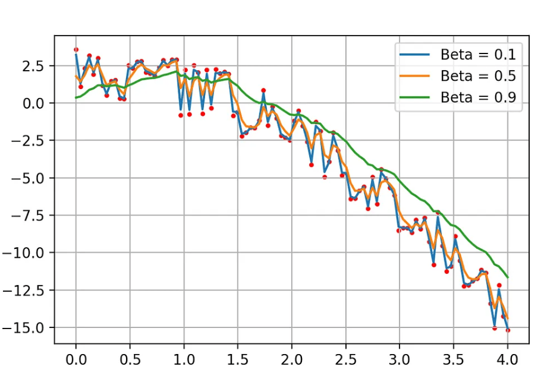
Экспоненциальное скользящее среднее: красные точки — исходный шумный ряд, линии — EMA с тремя значениями $\beta$. Синяя ($\beta = 0.1$) почти повторяет каждую точку вместе с шумом, оранжевая ($\beta = 0.5$) уже сглаживает скачки, зелёная ($\beta = 0.9$) самая спокойная и повторяет только общую форму ряда, но отстаёт от него и в начале занижена — стартует с нуля, как в примере с числами выше. 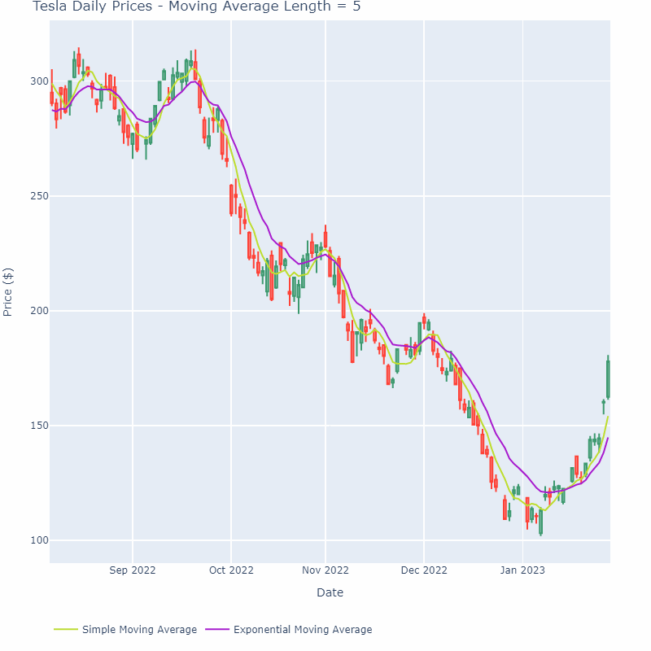
Экспоненциальное скользящее среднее при разных размерах окна: чем больше $\beta$, тем глаже кривая — и тем сильнее она отстаёт от реальных изменений. EMA сглаживает график и уменьшает колебания, а $\beta$ задаёт баланс между двумя нежелательными эффектами:
- малое $\beta$ — оценка чуткая, но шумная: она честно повторяет все случайные скачки;
- большое $\beta$ — оценка гладкая, но инертная: если процесс действительно изменился, EMA узнает об этом с задержкой в десятки шагов.
Универсально «правильного» $\beta$ нет: чем шумнее данные, тем больше $\beta$ имеет смысл брать, но не настолько, чтобы пропустить реальный тренд.
Как видно из примера, старт с $e_0 = 0$ занижает оценку на первых шагах. Исправляется это делением на $1 - \beta^t$: $$ \hat{e}_t = \frac{e_t}{1 - \beta^t} $$
Проверим на шаге 1: $\hat{e}_1 = \frac{0.1}{1 - 0.9} = 1$ — ровно то значение, которое и пришло. При больших $t$ множитель $\beta^t$ стремится к нулю, поправка становится единицей и перестаёт что-либо менять.
Именно эта формула стоит в Adam, и без неё первые шаги обучения делались бы неоправданно маленькими.
Один и тот же приём применяется к четырём совершенно разным величинам — это стоит держать в голове, чтобы не путать их на собеседовании:
- EMA градиентов — momentum (первый момент). Гасит дрожание, разгоняет по устойчивому направлению.
- EMA квадратов градиентов — RMSProp и второй момент Adam. Даёт каждому параметру персональный масштаб шага.
- EMA статистик активаций — running mean и running variance в BatchNorm: во время обучения они накапливаются, во время инференса используются вместо статистик батча.
- EMA самих весов модели — отдельный «теневой» набор весов $\theta_{EMA} \leftarrow \beta\theta_{EMA} + (1-\beta)\theta_t$, который на валидации часто даёт качество лучше, чем последние веса обучения. Так делают в диффузионных моделях, в self-supervised-подходах (BYOL, MoCo) и в полу-обучении (Mean Teacher).
- Путать EMA с обычным скользящим средним. Обычное усредняет фиксированное окно с равными весами и требует хранить всё окно; EMA хранит одно число и весит прошлое экспоненциально. Для миллионов параметров это принципиально: momentum-буфер стоит ровно столько же памяти, сколько сами веса.
- Забывать про запаздывание. Если по EMA-сглаженному лоссу решать, когда останавливать обучение, момент фактического выхода на плато будет определён с задержкой в размер окна.
- Не сохранять EMA-веса в чекпойнт. Если модель валидируется по EMA-весам, а сохраняются обычные, при загрузке качество внезапно окажется хуже — классический источник «модель на инференсе хуже, чем в логах обучения».
Что такое EMA и чем оно отличается от обычного скользящего среднего?
EMA присваивает прошлым значениям экспоненциально убывающие веса $\beta^k$ и вычисляется рекуррентно, храня одно число. Обычное скользящее среднее усредняет фиксированное окно с равными весами и требует хранить всё окно целиком.
Как связаны $\beta$ и размер окна?
Приближённо размер окна равен $\frac{1}{1-\beta}$: при $\beta = 0.9$ это ~10 последних значений, при $\beta = 0.999$ — ~1000. Чем больше $\beta$, тем глаже оценка и тем сильнее её запаздывание.
Что происходит при $\beta \to 1$ и при $\beta \to 0$?
При $\beta \to 1$ оценка почти не обновляется — максимальная инерция и нулевая реакция на изменения. При $\beta \to 0$ EMA совпадает с текущим значением, то есть сглаживания нет вовсе.
Почему EMA называется экспоненциальным?
При раскрытии рекуррентной формулы наблюдение возраста $k$ входит с весом $\beta^k$ — экспоненциально убывающей функцией от давности значения.
Зачем нужна поправка на смещение и как она устроена?
Инициализация $e_0 = 0$ занижает оценку на первых шагах. Деление на $1 - \beta^t$ компенсирует это ровно настолько, насколько нужно, и с ростом $t$ само сходит на нет. Эта поправка используется в Adam.
Как EMA применяется в Momentum и Adam?
Momentum усредняет по EMA сами градиенты (первый момент). Adam дополнительно ведёт EMA квадратов градиентов (второй момент) и использует оба, с поправкой на смещение, для адаптивного шага по каждому параметру.
Что такое EMA весов модели и зачем оно нужно?
Это отдельная копия параметров, обновляемая как $\theta_{EMA} \leftarrow \beta\theta_{EMA} + (1-\beta)\theta_t$. Усреднение траектории обучения гасит её колебания и обычно даёт на валидации более высокое и стабильное качество, чем последняя точка обучения.
-
Stochastic Gradient Descent (SGD)
Stochastic Gradient Descent (SGD, стохастический градиентный спуск) — метод оптимизации, который обновляет веса, делая шаг против градиента функции потерь, оценённого по одному объекту или мини-батчу: $$ w_t = w_{t-1} - \eta \nabla L(w_{t-1}) \quad\quad \text{(обновление весов)} $$
Слово «стохастический» здесь означает ровно одно: градиент считается не по всей выборке, а по случайной её части, поэтому он случаен — на каждом шаге чуть-чуть другой.
Если совсем простыми словами: вы спускаетесь с горы в густом тумане. Видно только землю под ногами, поэтому вы щупаете, куда идёт уклон, и делаете шаг вниз длиной $\eta$. Повторяете. То, что уклон вы оцениваете по маленькому участку под ногами (мини-батчу), а не по всей горе, и делает спуск стохастическим.
Классический градиентный спуск считает точный градиент по всей выборке на каждом шаге — это точно, но неподъёмно при больших данных. SGD оценивает градиент по подмножеству:
Вариант Размер батча Качество градиента Скорость шага Batch GD вся выборка Точный Медленно SGD 1 объект Шумный Быстро Mini-batch SGD $B$ объектов Компромисс Практично На практике почти всегда используют mini-batch SGD: батч из 32–512 объектов даёт достаточно точную оценку градиента и хорошо параллелизуется на GPU.
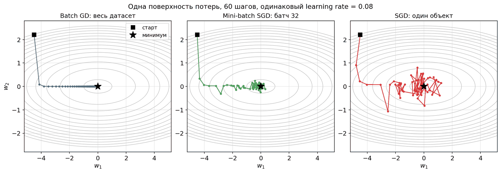
Три режима на одной и той же вытянутой поверхности потерь: 60 шагов с одинаковым $\eta = 0.08$ из общей стартовой точки (чёрный квадрат), звезда — минимум. Слева точный градиент по всему датасету даёт гладкую траекторию. В центре мини-батч добавляет шум: путь дрожит, но общее направление сохраняется. Справа градиент по одному объекту настолько шумный, что траектория хаотично блуждает вокруг минимума и не может в него сесть. Именно поэтому шум мини-батча — не только беда (нужно уменьшать шаг к концу), но и польза: он помогает выбираться из плохих точек. Пусть у нас один вес $w = 3$, learning rate $\eta = 0.1$, и на текущем батче градиент получился $\nabla L = 8$.
$$w_{new} = 3 - 0.1 \cdot 8 = 2.2$$
Знак важнее величины: градиент положительный значит «увеличение $w$ увеличит ошибку», поэтому мы $w$ уменьшаем. На следующем батче градиент будет уже другим — например, $6.5$ вместо $8$, — потому что батч другой. Именно это дрожание оценки и называется шумом SGD.
- $\eta$ слишком большой — шаги крупные, оптимизация «перепрыгивает» минимум, лосс скачет или уходит в
NaN(расходится); - $\eta$ слишком маленький — сходимость очень медленная, обучение займёт в разы больше эпох, а на плато может встать совсем;
- практическое правило: начинать с $\eta \approx 10^{-3}$ (для чистого SGD часто $10^{-2}$), затем уменьшать по расписанию (learning rate schedule).
Диагностика по графику лосса: расходящийся или пилообразный лосс — шаг велик; лосс, который почти горизонтален с самого начала, — шаг мал.
Представьте поверхность потерь в виде вытянутого оврага: вдоль оврага спуск пологий, поперёк — крутые стенки.
- Чтобы не улетать от стенки к стенке, шаг $\eta$ должен быть маленьким — под самое крутое направление.
- Но тогда вдоль дна оврага, где уклон слабый, продвижение окажется черепашьим.
Один и тот же $\eta$ не может устроить оба направления сразу, и SGD в такой геометрии зигзагообразно бьётся между стенками, медленно сползая вперёд. Именно из этой проблемы выросли и momentum (гасит колебания поперёк), и адаптивные методы (дают каждому параметру свой масштаб шага).
- Прост в реализации и понятен: одна строка формулы.
- Минимальный расход памяти — не хранит никаких дополнительных буферов, в отличие от Adam, которому нужно два буфера размером с саму модель.
- Шум мини-батчей помогает выбираться из седловых точек и склоняет решение к широким минимумам, которые лучше обобщаются.
- Не учитывает историю градиентов: каждый шаг «забывает» всё, что было раньше.
- Сильно колеблется на овражных ландшафтах.
- Медленно сходится и требует аккуратной ручной настройки $\eta$ и расписания.
Из «недостатков» часто делают вывод, что SGD — исторический артефакт. Это не так: SGD с momentum до сих пор остаётся стандартом в компьютерном зрении, и сильнейшие результаты на ImageNet годами получали именно им, а не Adam.
Причина: адаптивные методы сходятся быстрее, но нередко находят решения, которые чуть хуже обобщаются. Практическое правило сегодня: свёрточные сети — SGD с momentum, трансформеры и NLP — AdamW.
SGD — основа, но на практике используют и адаптивные методы, которые учитывают историю градиентов и подбирают индивидуальный шаг для каждого параметра:
Оптимизатор Адаптивный шаг Момент SGD Нет Опционально Adam Да Да AdamW Да Да RMSProp Да Нет Об этих и других оптимизаторах — в следующих вопросах.
Что такое SGD и как он обновляет веса?
SGD оценивает градиент функции потерь по мини-батчу и делает шаг в направлении антиградиента: $w_t = w_{t-1} - \eta \nabla L(w_{t-1})$. Слово «стохастический» относится к случайности выбора батча.
Что произойдёт при слишком большом и слишком маленьком learning rate?
Слишком большой — шаги перелетают минимум, лосс скачет или расходится в
NaN. Слишком маленький — обучение идёт неоправданно медленно и может застрять на плато. Разумный старт — $\eta \approx 10^{-3}$ с последующим уменьшением по расписанию.В чём разница между Batch GD, SGD и Mini-batch SGD?
Batch GD использует весь датасет — точно, но один шаг стоит эпохи. SGD берёт один объект — быстро, но очень шумно и без загрузки GPU. Mini-batch (32–512 объектов) сочетает приемлемую точность оценки с частыми шагами.
Почему единый learning rate для всех параметров плох?
На вытянутых («овражных») ландшафтах шаг приходится подбирать под самое крутое направление, и вдоль пологого направления движение становится крайне медленным. Отсюда зигзаги SGD и мотивация для адаптивных методов.
Какой главный плюс SGD по памяти?
Он не хранит дополнительных состояний вовсе. Adam держит два буфера размером с модель, поэтому при переходе с SGD на Adam суммарная память под веса и состояние оптимизатора вырастает примерно втрое.
Правда ли, что SGD вытеснен Adam?
Нет. SGD с momentum остаётся выбором по умолчанию в компьютерном зрении, поскольку часто даёт лучшее обобщение. Adam и AdamW доминируют в NLP и трансформерах, где сходимость без адаптивного шага крайне капризна.
- $\eta$ слишком большой — шаги крупные, оптимизация «перепрыгивает» минимум, лосс скачет или уходит в
-
Momentum
Momentum (метод импульса) — модификация SGD, в которой шаг делается не по текущему градиенту, а по экспоненциальному скользящему среднему градиентов: $$ \begin{aligned} &\textcolor{red}{v_t} = \beta v_{t-1} + (1-\beta)\nabla L(w_{t-1}) \quad\quad \text{(EMA градиентов, «инерция»)}\\ &w_t = w_{t-1} - \eta \textcolor{red}{v_t} \quad\quad \text{(обновление весов)} \end{aligned} $$
Если совсем простыми словами: обычный SGD — это человек, который на каждом шаге заново решает, куда идти, и мгновенно меняет направление. Momentum — это тяжёлый шар, катящийся по той же поверхности: у него есть инерция, поэтому случайный толчок вбок его почти не сворачивает, а постоянный уклон в одну сторону постепенно разгоняет.
- $\beta \in [0,1]$ — коэффициент запоминания (чаще всего $0.9$): насколько сильно учитывается накопленная история. При $\beta = 0$ формула превращается в обычный SGD, при $\beta$ близком к 1 — очень большая инерция;
- $v_t$ — «скорость», накопленное направление движения (буфер размером ровно с набор весов);
- $\eta$ — скорость обучения (learning rate);
- $\nabla L(w_{t-1})$ — градиент функции потерь по текущим весам.
По смыслу $\beta = 0.9$ означает усреднение примерно по последним $\frac{1}{1-\beta} = 10$ градиентам.
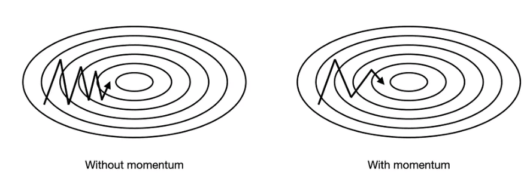
Градиентный спуск без momentum (много поперечных колебаний) и с momentum: колебания поперёк оврага гасятся, а движение вдоль дна ускоряется. Вернёмся к «оврагу». Пусть по поперечной оси градиенты чередуются по знаку — на последовательных шагах $+1, -1, +1, -1$ (нас кидает от стенки к стенке), а по продольной оси градиент стабильно небольшой: $+0.1$ на каждом шаге.
- Поперёк: EMA от знакопеременного ряда стремится к нулю — слагаемые взаимно гасятся, и колебание почти исчезает.
- Вдоль: EMA от постоянного ряда $0.1$ сходится к тому же $0.1$, но накапливается устойчиво, шаг за шагом.
Итог: momentum подавляет ровно те компоненты, которые «дёргаются», и сохраняет те, что стабильны. Это и есть основной механизм ускорения.
Если градиент долго остаётся одинаковым и равным $g$, то $v_t$ сходится к $g$, а с формулировкой без множителя $(1-\beta)$ — к $\frac{g}{1-\beta}$.
Во втором случае это буквально означает, что эффективный шаг вырастает в $\frac{1}{1-\beta}$ раз: при $\beta = 0.9$ — в десять раз по сравнению с обычным SGD с тем же $\eta$. Отсюда практическое следствие: включая momentum, обычно приходится уменьшать learning rate, иначе обучение разойдётся.
Физическая аналогия точная: шар не просто движется по уклону, он на нём разгоняется.
В учебниках (и выше) пишут $v_t = \beta v_{t-1} + (1-\beta)g_t$ — это честное EMA, и «скорость» имеет масштаб самого градиента.
В PyTorch (
torch.optim.SGD(momentum=0.9)) реализована другая, классическая формулировка: $$v_t = \beta v_{t-1} + g_t, \qquad w_t = w_{t-1} - \eta v_t$$Здесь множителя $(1-\beta)$ нет, поэтому при постоянном градиенте $v$ накапливается до $\frac{g}{1-\beta}$ — то есть эффективный шаг в 10 раз больше, чем можно было бы подумать. Практический вывод: значения $\eta$ не переносятся между двумя формулировками напрямую, и при переходе от SGD к SGD+momentum шаг обычно надо уменьшать примерно на порядок.
- Быстрее сходится, чем обычный SGD, особенно на вытянутых («овражных») ландшафтах.
- Гасит шум мини-батчей: случайные отклонения градиента усредняются.
- Помогает проходить плато и мелкие локальные минимумы — накопленная инерция протаскивает через области, где градиент почти нулевой.
- Использует одинаковый learning rate $\eta$ для всех параметров.
- Может «перелетать» минимум: разогнавшийся шар проскакивает дно и потом возвращается (перерегулирование).
- Добавляет второй гиперпараметр $\beta$ и буфер памяти размером с модель.
Разным весам сети может требоваться разная скорость обучения: какие-то параметры получают большие градиенты, какие-то — крошечные. Это уже лечится адаптивными методами.
Формулировку «momentum выбирается из локальных минимумов» стоит понимать буквально и ограниченно: инерции хватает, чтобы проскочить мелкую ямку или плато, но она никак не гарантирует нахождение глобального минимума. В глубоких сетях главная польза momentum — не побег из минимумов, а гашение поперечных колебаний и ускорение вдоль устойчивого направления.
В чём основная идея Momentum и чем он отличается от SGD?
Шаг делается не по текущему градиенту, а по EMA градиентов. Это сглаживает шумные обновления, гасит колебания поперёк «оврага» и ускоряет движение по направлениям, где знак градиента устойчив.
Что означает параметр $\beta$?
Коэффициент запоминания истории: он задаёт окно усреднения $\approx \frac{1}{1-\beta}$. При $\beta = 0$ получается обычный SGD, при типичном $\beta = 0.9$ усредняются примерно последние 10 градиентов.
Почему при включении momentum обычно уменьшают learning rate?
При устойчивом градиенте накопленная скорость в классической формулировке достигает $\frac{g}{1-\beta}$, то есть эффективный шаг вырастает примерно в 10 раз при $\beta = 0.9$. Без уменьшения $\eta$ обучение может разойтись.
Как momentum помогает на плато и в шумных областях?
Даже когда текущий градиент мал или случаен, накопленная скорость продолжает вести оптимизацию в ранее найденном направлении, не давая застрять и уменьшая влияние отдельных «плохих» батчей.
В чём главный недостаток Momentum по сравнению с Adam?
Momentum масштабирует все параметры одним и тем же $\eta$. Adam дополнительно ведёт EMA квадратов градиентов и подбирает индивидуальный размер шага для каждого параметра.
Чем отличается формула momentum в учебнике и в PyTorch?
В учебной версии $v_t = \beta v_{t-1} + (1-\beta)g_t$ — нормированное EMA. В PyTorch $v_t = \beta v_{t-1} + g_t$ — без нормировки, поэтому эффективный шаг в $\frac{1}{1-\beta}$ раз больше. Значения learning rate между этими вариантами напрямую несопоставимы.
-
Nesterov Accelerated Momentum (NAG)
Nesterov Accelerated Momentum (NAG) — вариант momentum, в котором градиент вычисляется не в текущей точке, а в точке, куда нас уже унесёт инерция: $$ \begin{aligned} &\textcolor{red}{\hat{w}_t} = w_{t-1} - \beta v_{t-1} \quad\quad \text{(«заглядывание вперёд»: где мы окажемся по инерции)}\\ &\textcolor{blue}{v_t} = \beta v_{t-1} + (1-\beta)\nabla L(\textcolor{red}{\hat{w}_t}) \quad\quad \text{(EMA градиентов, «инерция»)}\\ &w_t = w_{t-1} - \eta \textcolor{blue}{v_t} \quad\quad \text{(обновление весов)} \end{aligned} $$
Отличие от обычного momentum ровно одно: точка, в которой берётся градиент. Всё остальное совпадает.
Обычный momentum — это шар, который смотрит под ноги: он оценивает уклон там, где находится сейчас, и только потом сдвигается по инерции. Если впереди подъём, шар узнает об этом лишь после того, как в него въедет, — и проскочит минимум.
NAG — шар, который сначала прикидывает, куда его вынесет инерция, и смотрит на уклон там. Если в предсказанной точке склон уже пошёл вверх, градиент развернётся заранее и погасит скорость до того, как минимум будет перелетён.
Отсюда главный практический эффект: меньше перерегулирования (проскакивания минимума) и более плавная траектория, особенно на последних этапах сходимости.
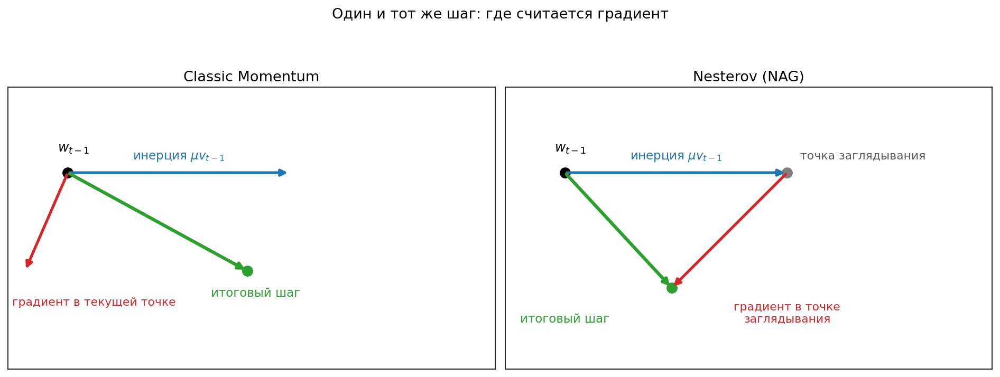
Разбор одного шага в ситуации, когда впереди по ходу инерции поверхность идёт вверх. Синяя стрелка — накопленная инерция $\mu v_{t-1}$, красная — поправка по градиенту, зелёная — итоговый шаг. Слева классический momentum берёт градиент в текущей точке $w_{t-1}$, где про подъём впереди ещё ничего не известно, и шаг уносит далеко вправо. Справа Nesterov считает градиент уже в точке заглядывания, куда инерция принесёт модель (серый кружок) — там градиент разворачивает шаг назад, и зелёная стрелка получается заметно короче. NAG успевает притормозить на шаг раньше. Пусть $L(w) = w^2$, значит $\nabla L(w) = 2w$. Мы находимся в $w = 1$ и уже движемся влево: $v_{t-1} = 0.5$ (то есть инерция уносит нас на $0.5$ в сторону уменьшения $w$). Возьмём $\beta = 0.9$.
- Обычный momentum: градиент берётся в $w = 1$, он равен $2$. Направление «двигаться влево» подтверждено — и мы продолжаем разгоняться, хотя минимум в нуле уже близко.
- NAG: сначала смотрим в предсказанную точку $\hat{w} = 1 - 0.9 \cdot 0.5 = 0.55$; там градиент равен $1.1$ — почти вдвое меньше. Сигнал «склон выполаживается, скоро дно» приходит на шаг раньше, и разгон получается слабее.
Если бы инерция была больше и предсказанная точка оказалась отрицательной, скажем $\hat{w} = -0.3$, градиент сменил бы знак и начал бы тормозить движение — ровно за шаг до того, как мы перелетим минимум.
Формула выше требует считать градиент в точке $\hat{w}_t$, которая не совпадает с текущими весами, — неудобно для автоматического дифференцирования. Поэтому в библиотеках используют эквивалентную перезапись, где градиент берётся в обычной точке, а «заглядывание» переносится в формулу обновления.
В PyTorch это просто флаг:
torch.optim.SGD(params, lr=..., momentum=0.9, nesterov=True). Никакого дополнительного расхода памяти по сравнению с обычным momentum нет.- Меньше перерегулирования: траектория аккуратнее подходит к минимуму.
- Обычно чуть более быстрая и стабильная сходимость, чем у обычного momentum, при тех же гиперпараметрах.
- Реализация ничего не стоит по памяти и почти ничего — по вычислениям.
- Выигрыш на практике часто скромный: единицы процентов по скорости сходимости, а не качественный скачок.
- По-прежнему один общий learning rate для всех параметров — адаптивности нет.
- Чувствителен к подбору $\eta$ и $\beta$ ровно в той же мере, что и momentum.
NAG не «видит будущее» и не знает, где находится минимум. Он всего лишь вычисляет градиент на полшага вперёд по уже известному направлению инерции. Если инерция мала ($v \approx 0$), NAG вырождается в обычный SGD и никакого преимущества не даёт.
Кроме того, теоретическое ускорение метода Нестерова доказано для выпуклых задач с точным градиентом. У нейросетей задача невыпуклая, а градиент шумный, поэтому теоретическая гарантия на них строго не переносится — на практике речь идёт об эмпирическом улучшении, а не о доказанном.
В чём ключевая идея Nesterov Momentum?
Градиент вычисляется не в текущей точке, а в предсказанной $\hat{w}_t = w_{t-1} - \beta v_{t-1}$ — там, куда уносит инерция. Это позволяет заранее заметить смену уклона и притормозить перед минимумом.
Чем NAG отличается от обычного Momentum математически?
Ровно одной деталью: точкой вычисления градиента. В momentum это $w_{t-1}$, в NAG — $w_{t-1} - \beta v_{t-1}$. Формулы накопления скорости и обновления весов идентичны.
Почему NAG сходится аккуратнее?
Он получает информацию о склоне на полшага раньше, поэтому при подходе к минимуму градиент успевает погасить скорость. Результат — меньше перерегулирования и меньше колебаний вокруг оптимума.
В каком случае NAG не даёт никакого выигрыша?
Когда накопленная скорость близка к нулю: тогда предсказанная точка совпадает с текущей, и метод вырождается в обычный SGD. Также выигрыш мал при очень маленьком $\beta$.
Как NAG связан с Nadam?
Nadam — это Adam, в котором к первому моменту применена та же поправка «заглядывания вперёд». Как NAG улучшает momentum, так Nadam пытается улучшить Adam.
Переносится ли теоретическое ускорение Нестерова на нейросети?
Строго — нет: оно доказано для выпуклых задач с точным градиентом, а обучение сети невыпукло и использует шумные оценки градиента по батчам. На практике NAG обычно чуть лучше momentum, но это эмпирическое наблюдение, а не гарантия.
-
AdaGrad
AdaGrad (adaptive gradient) — первый популярный оптимизатор с персональным размером шага для каждого параметра: $$ \begin{aligned} &\textcolor{red}{g_t} = g_{t-1} + \nabla L^2(w_{t-1}) \quad\quad \text{(сумма квадратов градиентов)}\\ &w_t = w_{t-1} - \frac{\eta}{\sqrt{\textcolor{red}{g_t} + \varepsilon}} \nabla L(w_{t-1}) \quad\quad \text{(обновление весов)} \end{aligned} $$
Если совсем простыми словами: для каждого веса заводится персональный счётчик — «сколько всего этот вес уже потрясло». Чем больше накопилось, тем меньше становится его шаг. Веса, которые постоянно получают большие градиенты, тормозятся; редкие веса, которые почти не обновлялись, сохраняют право на крупные шаги.
Здесь и далее под $L^2$ понимается покомпонентное возведение в квадрат: $$ L^2(w) = L(w) \odot L(w) $$ Операция $\odot$ — покомпонентное умножение (произведение Адамара, Hadamard product). Это важно: $g_t$ — не одно число, а вектор той же длины, что и веса, поэтому и деление в формуле обновления идёт покоординатно. Отсюда и берётся «свой шаг для каждого параметра».
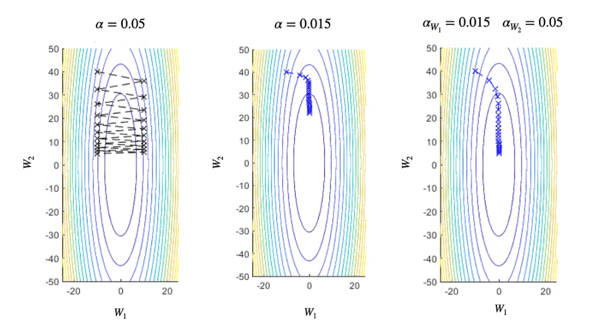
Эффект адаптивной скорости обучения в AdaGrad: у каждого параметра свой эффективный learning rate, поэтому по крутым направлениям шаг мельче, а по пологим — крупнее. Ключ — в знаменателе $\sqrt{g_t}$, где $g_t$ — накопленная сумма квадратов градиентов этого конкретного параметра.
- Если по параметру градиенты стабильно большие, сумма растёт быстро, знаменатель большой — эффективный шаг $\frac{\eta}{\sqrt{g_t}}$ маленький.
- Если градиенты маленькие или редкие, сумма растёт медленно — эффективный шаг остаётся крупным.
Иначе говоря, AdaGrad автоматически выравнивает масштаб обновлений: все параметры движутся сопоставимыми по величине шагами, независимо от того, насколько разного размера у них градиенты. Ровно это и решает проблему «оврага», из-за которой обычному SGD приходится выбирать один компромиссный $\eta$ на всех.
Роль $\varepsilon$ (обычно $10^{-8}$) чисто техническая: не дать знаменателю обратиться в ноль на первых шагах.
Задача классификации текстов, признаки — слова. Слово «и» встречается почти в каждом документе, слово «эмфизема» — в одном из тысячи.
- Вес при слове «и» получает ненулевой градиент на каждом батче. За 1000 шагов его $g_t$ накопится, скажем, до 1000, знаменатель $\sqrt{1000} \approx 31.6$, и эффективный шаг составит $\eta/31.6$.
- Вес при «эмфиземе» обновлялся лишь пару раз, $g_t \approx 2$, знаменатель $\approx 1.4$, эффективный шаг $\eta/1.4$ — примерно в 22 раза больше.
Это ровно то, что нужно: редкое, но информативное слово не должно обучаться в тысячу раз медленнее только потому, что оно редкое. Отсюда и репутация AdaGrad как метода для разреженных данных.
$g_t$ — это сумма, а слагаемые в ней неотрицательны. Значит, $g_t$ только растёт и никогда не уменьшается, а эффективный шаг $\frac{\eta}{\sqrt{g_t}}$ монотонно падает к нулю.
На длинном обучении это фатально: через десятки тысяч шагов шаг становится настолько малым, что обучение фактически останавливается — даже если модель ещё далеко не сошлась. И «разогнать» её обратно уже нечем: накопленную сумму AdaGrad забывать не умеет.
Именно эта проблема и породила RMSProp, где сумма заменена на экспоненциальное скользящее среднее.
- Адаптивная скорость обучения для каждого параметра по отдельности.
- Отлично работает на разреженных данных (тексты, категориальные признаки высокой мощности, рекомендательные системы).
- Меньше чувствителен к выбору исходного $\eta$, чем чистый SGD.
- Эффективный шаг монотонно затухает — метод плохо подходит для долгого обучения глубоких сетей.
- Не имеет инерции (первого момента), поэтому не гасит шум мини-батчей.
- Требует буфер $g_t$ размером с модель.
В чём суть адаптивности AdaGrad?
Для каждого параметра накапливается сумма квадратов его градиентов, и шаг делится на корень из этой суммы. Параметры с большими градиентами обновляются мельче, с редкими и маленькими — крупнее.
Почему в знаменателе стоит $\varepsilon$?
Чтобы не делить на ноль, пока сумма квадратов градиентов близка к нулю (например, на первых шагах). Типичное значение — $10^{-8}$.
Что означает покомпонентность формулы?
$g_t$ — вектор той же длины, что и веса, и деление выполняется покоординатно. Поэтому у каждого параметра получается собственный эффективный learning rate, а не общий на всю модель.
В чём главный недостаток AdaGrad и как его исправляет RMSProp?
Сумма квадратов только растёт, поэтому шаг монотонно затухает до нуля и обучение застревает. RMSProp заменяет сумму на EMA, что позволяет «забывать» старые градиенты и удерживать шаг на разумном уровне.
Для каких данных AdaGrad особенно полезен?
Для разреженных: NLP с мешком слов, рекомендательные системы, признаки-категории. Там редкие признаки нуждаются в больших шагах, а частые — в маленьких, и AdaGrad делает это автоматически.
Почему AdaGrad не гасит шум мини-батчей?
Он адаптирует только длину шага, но использует текущий градиент как направление — без усреднения по истории. Инерции (первого момента) в нём нет; она появляется у Adam.
-
RMSProp
RMSProp (Root Mean Square Propagation) — это AdaGrad, в котором сумма квадратов градиентов заменена на экспоненциальное скользящее среднее: $$ \begin{aligned} &\textcolor{red}{g_t} = \beta g_{t-1} + (1-\beta)\nabla L^2(w_{t-1}) \quad\quad \text{(EMA квадратов градиентов)}\\ &w_t = w_{t-1} - \frac{\eta}{\sqrt{\textcolor{red}{g_t} + \varepsilon}} \nabla L(w_{t-1}) \quad\quad \text{(обновление весов)} \end{aligned} $$
Если совсем простыми словами: AdaGrad помнил всю историю градиентов и от этого постепенно замирал. RMSProp помнит только последние примерно $\frac{1}{1-\beta}$ шагов (при типичном $\beta = 0.999$ — около тысячи) и потому не «устаёт»: старые большие градиенты со временем забываются, и шаг восстанавливается.
В AdaGrad $g_t$ — сумма, она монотонно растёт, и шаг $\frac{\eta}{\sqrt{g_t}}$ падает к нулю безвозвратно.
В RMSProp $g_t$ — среднее, а не сумма. Если градиенты по параметру всё время примерно одинаковой величины $g$, то EMA сходится к $g^2$ и стабилизируется — знаменатель перестаёт расти. Если градиенты стали меньше, EMA тоже уменьшится, и шаг автоматически увеличится обратно.
Название «RMS» ровно про это: $\sqrt{g_t}$ — это среднеквадратичная величина недавних градиентов, то есть их типичный масштаб. Формула обновления читается как «шаг $\eta$, поделённый на типичный размер градиента этого параметра» — то есть шаг измеряется не в абсолютных единицах, а в единицах характерного градиента.
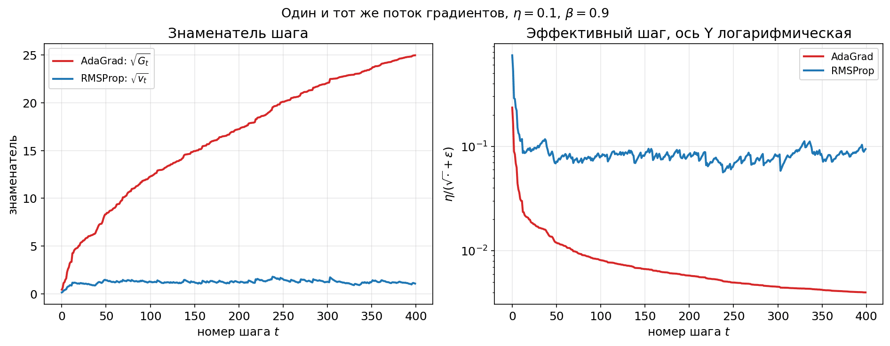
Один и тот же поток градиентов, поданный в AdaGrad и в RMSProp ($\eta = 0.1$, $\beta = 0.9$). Слева на линейной шкале: у AdaGrad (красная) знаменатель $\sqrt{G_t}$ монотонно растёт и за 400 шагов доходит до 25, у RMSProp (синяя) $\sqrt{v_t}$ колеблется около 1.2 и никуда не уходит. Справа то же самое в терминах эффективного шага, ось Y логарифмическая: шаг AdaGrad сполз примерно с 0.2 до 0.004, то есть в полсотни раз, а у RMSProp держится в районе 0.1 всё время. Замена суммы на скользящее среднее убирает затухание шага до нуля. Пусть у параметра сначала были большие градиенты $|\nabla L| \approx 10$, а затем модель прошла крутой участок и градиенты упали до $\approx 0.1$. Возьмём $\beta = 0.99$.
- AdaGrad: сумма квадратов уже накопила, скажем, $100 \cdot 500 = 50\,000$; знаменатель $\approx 224$, и он таким и останется — шаг навсегда остался крошечным, хотя ситуация изменилась.
- RMSProp: EMA после смены режима за несколько сотен шагов сползёт с $100$ к $0.01$, знаменатель — с $10$ до $0.1$, то есть эффективный шаг вырастет в 100 раз и снова станет адекватным новому масштабу градиентов.
Именно это свойство и называют устойчивостью к нестационарным градиентам — таким, чьё типичное значение меняется по ходу обучения.
$\beta$ задаёт длину памяти, окно $\approx \frac{1}{1-\beta}$:
- $\beta = 0.9$ — окно 10 шагов: быстрая адаптация, но знаменатель сам становится шумным, и шаг дёргается;
- $\beta = 0.99$ — окно 100 шагов, разумный компромисс;
- $\beta = 0.999$ — окно 1000 шагов, значение по умолчанию во многих реализациях (в PyTorch параметр называется
alpha, по умолчанию0.99).
Полезно помнить: слишком маленькое $\beta$ превращает знаменатель в оценку по нескольким последним батчам, и деление на такой шумный масштаб само по себе дестабилизирует обучение.
У RMSProp нет первого момента — он не усредняет сами градиенты, а только их квадраты. Значит:
- он адаптирует длину шага, но берёт направление прямо из текущего батча, со всем его шумом;
- инерции, которая тащит через плато и гасит поперечные колебания, здесь тоже нет.
Добавьте к RMSProp momentum и поправку на смещение — и получится Adam. Исторически именно так его и придумали.
- Быстрее и стабильнее AdaGrad, шаг не затухает до нуля.
- Хорошо переносит нестационарные градиенты, когда их типичный масштаб меняется по ходу обучения.
- Популярен в обучении с подкреплением (RL), где распределение данных меняется вместе с политикой агента и иногда оказывается стабильнее Adam.
- Дёшев: один буфер размером с модель.
- Обычно уступает Adam по скорости сходимости и итоговому качеству.
- Нет инерции, поэтому траектория остаётся шумной.
- Добавляет гиперпараметр $\beta$, к которому метод довольно чувствителен.
В чём ключевое улучшение RMSProp над AdaGrad?
AdaGrad копит сумму квадратов градиентов, и шаг монотонно затухает до нуля. RMSProp заменяет сумму на EMA: старые градиенты забываются, знаменатель стабилизируется, и обучение не останавливается.
Что означает «RMS» в названии?
Root Mean Square — корень из среднего квадрата недавних градиентов, то есть их типичная величина. Шаг делится на неё, поэтому обновление измеряется в единицах характерного градиента данного параметра.
Что регулирует параметр $\beta$?
Длину памяти, окно $\approx \frac{1}{1-\beta}$. Большое $\beta$ — длинная история и медленная, но гладкая адаптация; маленькое — быстрая реакция ценой шумного знаменателя и нестабильного шага.
Почему RMSProp популярен в RL?
В обучении с подкреплением распределение данных нестационарно: агент меняет политику, и масштаб градиентов плывёт. EMA в знаменателе автоматически подстраивается под текущую дисперсию градиентов.
Как RMSProp соотносится с Adam?
Adam = RMSProp (EMA квадратов градиентов, второй момент) + momentum (EMA самих градиентов, первый момент) + поправка на смещение. RMSProp — его упрощённый предшественник без инерции.
Может ли RMSProp застрять так же, как AdaGrad?
Нет: его знаменатель не растёт монотонно, а следует за текущим масштабом градиентов. Если градиенты уменьшились, эффективный шаг автоматически увеличится обратно.
-
Adam
Adam (Adaptive Moment Estimation) — оптимизатор, объединяющий обе идеи сразу: инерцию из Momentum и адаптивный масштаб шага из RMSProp. $$ \begin{aligned} &\textcolor{red}{m_t} = \beta_1 m_{t-1} + (1-\beta_1)\nabla L(w_{t-1}) \quad\quad \text{(EMA градиентов, первый момент)}\\ &\textcolor{blue}{v_t} = \beta_2 v_{t-1} + (1-\beta_2)\nabla L^2(w_{t-1}) \quad\quad \text{(EMA квадратов градиентов, второй момент)}\\ &\textcolor{green}{\hat{m}_t} = \frac{\textcolor{red}{m_t}}{1-\beta_1^t} \quad\quad \text{(bias correction)}\\ &\textcolor{orange}{\hat{v}_t} = \frac{\textcolor{blue}{v_t}}{1-\beta_2^t} \quad\quad \text{(bias correction)}\\ &w_t = w_{t-1} - \eta \frac{\textcolor{green}{\hat{m}_t}}{\sqrt{\textcolor{orange}{\hat{v}_t}}+\varepsilon} \quad\quad \text{(обновление весов)} \end{aligned} $$
Разберём последнюю строку по частям — в ней вся суть метода.
- Числитель $\hat{m}_t$ — усреднённый градиент: куда идти. Усреднение по последним $\approx 10$ шагам гасит шум мини-батчей, как в Momentum.
- Знаменатель $\sqrt{\hat{v}_t}$ — типичная величина градиента этого параметра: в каких единицах мерить шаг. Как в RMSProp.
- Их отношение — безразмерная величина порядка единицы: «на сколько своих типичных градиентов сдвинуться».
Отсюда важное свойство: если умножить функцию потерь на 1000, градиенты вырастут в 1000 раз, но числитель и знаменатель вырастут одинаково — и шаг Adam не изменится. У SGD он вырос бы в 1000 раз. Именно поэтому Adam гораздо менее чувствителен к масштабу лосса и к плохо подобранному $\eta$.
Из той же формулы следует полезная оценка: величина обновления по каждому параметру примерно ограничена сверху числом $\eta$.
Действительно, $\frac{\hat m_t}{\sqrt{\hat v_t}}$ — это отношение среднего к среднеквадратичному, и по модулю оно почти всегда не превосходит единицы. Значит, за один шаг ни один вес не сдвинется больше чем на $\approx \eta$, независимо от того, насколько огромным оказался градиент.
Это своего рода встроенная страховка от взрывающихся градиентов — одна из причин, почему Adam «просто работает» там, где SGD требует долгой настройки.
Инициализируем $m_0 = 0$, $v_0 = 0$ и делаем первый шаг, на котором градиент равен $g$.
- $m_1 = (1 - 0.9) \cdot g = 0.1g$ — оценка занижена в 10 раз;
- $v_1 = (1 - 0.999) \cdot g^2 = 0.001g^2$ — занижена в 1000 раз.
Без поправки отношение $\frac{m_1}{\sqrt{v_1}} = \frac{0.1g}{0.0316|g|} \approx 3.16$ — шаг оказался бы втрое больше положенного, и это ещё оптимистичный случай.
С поправкой: $\hat{m}_1 = \frac{0.1g}{1 - 0.9} = g$, $\hat{v}_1 = \frac{0.001g^2}{1 - 0.999} = g^2$, отношение равно $\pm 1$ — ровно то, что нужно. С ростом $t$ множители $\beta^t$ стремятся к нулю, и поправка сама собой перестаёт действовать.
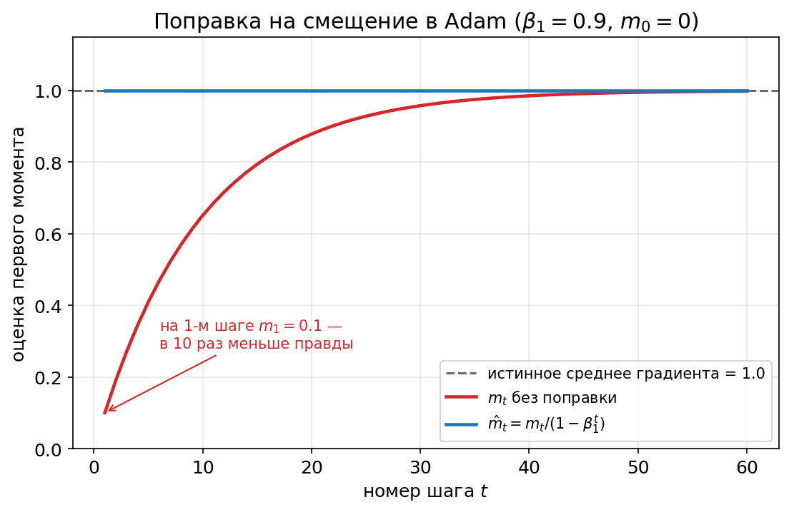
По горизонтали — номер шага, по вертикали — оценка первого момента, когда истинный градиент всё время равен 1 (серый пунктир). Красная кривая $m_t$ стартует с нуля и на первом шаге даёт всего 0.1 — в десять раз меньше правды, а к верному значению подбирается только к 40-50 шагу. Синяя кривая $\hat m_t = m_t/(1-\beta_1^t)$ равна единице уже на первом шаге: деление на $1-\beta_1^t$ ровно компенсирует холодный старт. Без поправки первые десятки шагов Adam делал бы неоправданно маленькие обновления. - $\beta_1 = 0.9$ — окно усреднения градиентов ≈ 10 шагов;
- $\beta_2 = 0.999$ — окно усреднения квадратов ≈ 1000 шагов (масштаб меняется медленнее направления, поэтому окно длиннее);
- $\varepsilon = 10^{-8}$ — защита от деления на ноль;
- $\eta \approx 10^{-3}$ для обычных сетей, $10^{-4}$ и ниже для больших трансформеров.
Эти значения работают в большинстве задач без всякой настройки — и именно поэтому Adam стал вариантом по умолчанию. Из них реально стоит трогать только $\eta$; иногда в больших языковых моделях уменьшают $\beta_2$ до $0.95$, чтобы метод быстрее реагировал на скачки масштаба градиентов.
- Адаптивная скорость обучения для каждого параметра плюс инерция — обе идеи сразу.
- Быстрая сходимость на первых эпохах и устойчивость к плохому масштабу лосса.
- Хорошие значения гиперпараметров «из коробки», минимум ручной настройки.
- Практически безальтернативен для трансформеров и NLP, где SGD часто не сходится вовсе.
- Требует два буфера ($m$ и $v$) размером с модель, тогда как чистый SGD не хранит ничего: вместе с самими весами получается втрое больше памяти. Для модели на 7 млрд параметров в fp32 одно только состояние оптимизатора занимает около 56 ГБ.
- Иногда обобщает хуже, чем SGD с momentum, — особенно в компьютерном зрении.
- Наивно скомбинированный с $L_2$-регуляризацией работает не так, как ожидается (это чинит AdamW).
Классическая $L_2$-регуляризация добавляет $\lambda w$ к градиенту. В Adam этот добавок проходит через оба момента и делится на $\sqrt{\hat v_t}$ — то есть у параметров с большими градиентами регуляризация оказывается ослабленной, а у параметров с маленькими — усиленной. Получается не тот эффект, которого мы хотели: сила регуляризации становится разной для разных весов без всякого на то основания.
AdamW решает это, применяя затухание весов напрямую к $w$, отдельно от адаптивного шага. На практике для трансформеров используют именно AdamW, а не Adam.
Какие два метода объединяет Adam?
Momentum (EMA градиентов — первый момент, задаёт направление) и RMSProp (EMA квадратов градиентов — второй момент, задаёт масштаб шага). Плюс поправка на смещение для обоих моментов.
Зачем нужна коррекция смещения?
Моменты инициализируются нулями, поэтому на первых шагах сильно занижены, причём по-разному ($\beta_1$ и $\beta_2$ различны), и их отношение искажается. Деление на $1-\beta^t$ убирает это смещение и с ростом $t$ перестаёт влиять.
Почему Adam слабо чувствителен к масштабу функции потерь?
Обновление равно отношению $\hat m_t / \sqrt{\hat v_t}$: при умножении лосса на константу числитель и знаменатель масштабируются одинаково, и шаг не меняется. У SGD шаг изменился бы пропорционально.
Каков типичный набор гиперпараметров Adam?
$\beta_1 = 0.9$, $\beta_2 = 0.999$, $\varepsilon = 10^{-8}$, $\eta \approx 10^{-3}$. На практике настраивают в основном $\eta$; для больших LLM иногда снижают $\beta_2$ до $0.95$.
Сколько дополнительной памяти требует Adam?
Два буфера размером с набор параметров модели. У SGD без momentum состояния нет вовсе, поэтому суммарно «веса + состояние оптимизатора» вырастает с однократного размера модели до трёхкратного. На больших моделях это часто становится решающим ограничением.
Почему Adam иногда обобщает хуже, чем SGD с momentum?
Адаптивный шаг склонен приводить в узкие («острые») минимумы, где качество на новых данных ниже. Шумный SGD с постоянным шагом чаще оказывается в широких минимумах, которые лучше переносятся на тест.
Как Adam связан с AdamW и зачем эта модификация?
В Adam $L_2$-регуляризация добавляется к градиенту и проходит через адаптивное масштабирование, из-за чего действует на разные веса по-разному. AdamW выносит weight decay из моментов и применяет его прямо к весам — это стандарт для трансформеров.
-
AdamW
AdamW — это Adam с отвязанным (decoupled) затуханием весов. Формулы моментов те же: $$ \begin{aligned} &\textcolor{red}{m_t} = \beta_1 m_{t-1} + (1-\beta_1)\nabla L(w_{t-1}) \quad\quad \text{(EMA градиентов)}\\ &\textcolor{blue}{v_t} = \beta_2 v_{t-1} + (1-\beta_2)\nabla L^2(w_{t-1}) \quad\quad \text{(EMA квадратов градиентов)}\\ &\textcolor{green}{\hat{m}_t} = \frac{\textcolor{red}{m_t}}{1-\beta_1^t} \quad\quad \text{(bias correction)}\\ &\textcolor{orange}{\hat{v}_t} = \frac{\textcolor{blue}{v_t}}{1-\beta_2^t} \quad\quad \text{(bias correction)} \end{aligned} $$ а вот обновление весов другое: $$ w_t = w_{t-1} - \eta \left( \frac{\textcolor{green}{\hat{m}_t}}{\sqrt{\textcolor{orange}{\hat{v}_t}}+\varepsilon} + \underbrace{\lambda w_{t-1}}_{\text{weight decay}} \right) \quad\quad \text{(обновление весов)} $$
Ключевое слово — отвязанное: слагаемое $\lambda w_{t-1}$ стоит снаружи дроби и не проходит ни через моменты, ни через деление на $\sqrt{\hat v_t}$.
Weight decay (затухание весов) — приём, который на каждом шаге чуть-чуть тянет все веса к нулю: $w \leftarrow w - \eta\lambda w$, то есть умножает их на $(1 - \eta\lambda)$.
Смысл простой: чем меньше веса по модулю, тем «спокойнее» функция, которую задаёт сеть, и тем меньше она склонна подгоняться под шум в обучающих данных. Это одна из основных форм регуляризации в глубоком обучении; типичное $\lambda$ — от $0.01$ до $0.1$ для трансформеров.
Классическая $L_2$-регуляризация добавляет $\lambda w$ к градиенту: $\tilde{g}_t = \nabla L + \lambda w$. В обычном SGD это в точности то же самое, что weight decay, — два названия одного действия.
В Adam — уже не то же самое. Добавка проходит через оба момента и в конце делится на $\sqrt{\hat v_t}$:
- у параметра с большими градиентами знаменатель большой, и регуляризация оказывается ослабленной;
- у параметра с маленькими градиентами знаменатель мал, и регуляризация усиливается.
Получается, что сила штрафа зависит от того, насколько шумный градиент у веса, — а это не имеет никакого отношения к тому, насколько сильно мы на самом деле хотим его регуляризовать. AdamW убирает эту связь: затухание применяется ко всем весам одинаково.
Пусть $\lambda = 0.01$, $\eta = 10^{-3}$, и есть два веса, оба равны $w = 1$:
- вес A получает крупные градиенты, $\sqrt{\hat v} \approx 1$;
- вес B — мелкие, $\sqrt{\hat v} \approx 0.01$.
В Adam с $L_2$ добавка $\lambda w = 0.01$ делится на $\sqrt{\hat v}$: для A эффект $0.01$, для B — $\frac{0.01}{0.01} = 1$, то есть в 100 раз сильнее. Регуляризация «съезжает» на веса с маленькими градиентами.
В AdamW оба веса получают ровно одинаковое затухание $\eta\lambda w = 10^{-5}$, независимо от их градиентов. Именно это и означает «отвязанный» weight decay.
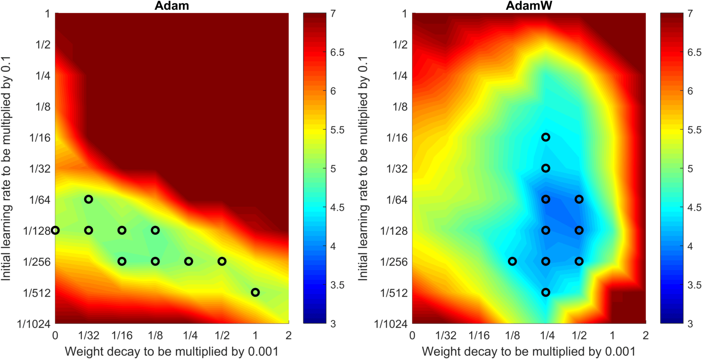
Рисунок из статьи про AdamW. Цвет — ошибка на тесте, шкала справа: синий около 3%, тёмно-красный 7% и хуже; кружками отмечены 10 лучших конфигураций. По вертикали — начальный learning rate, по горизонтали — коэффициент weight decay, обе оси в долях (множители 0.1 и 0.001 указаны в подписях). У Adam слева зелёная область хороших настроек вытянута по диагонали: увеличили шаг — надо уменьшать decay, две ручки жёстко связаны. У AdamW справа синяя область идёт вертикальной полосой около одного значения decay при самых разных шагах — параметры расцепились, и подбирать их можно независимо. - Корректная, предсказуемая регуляризация: сила штрафа не зависит от масштаба градиентов.
- Лучшее обобщение, особенно у больших моделей — трансформеров и NLP-архитектур.
- Де-факто стандарт для BERT, GPT, Vision Transformers и практически всех современных крупных сетей.
- $\lambda$ и $\eta$ настраиваются почти независимо друг от друга (в Adam с $L_2$ они переплетены, и изменение одного меняло оптимальное значение другого).
- Все прочие ограничения Adam остаются: два буфера памяти, склонность к «острым» минимумам.
- Появляется ещё один гиперпараметр $\lambda$, который всё же приходится подбирать.
Adam(weight_decay=...)— это не AdamW. В PyTorchtorch.optim.Adamс параметромweight_decayреализует именно старую $L_2$-схему (добавку к градиенту). Нужен отвязанный вариант — беритеtorch.optim.AdamW.- Не все параметры стоит регуляризовать. Из weight decay обычно исключают смещения (bias) и параметры нормализации (
gamma,betaв LayerNorm/BatchNorm): тянуть их к нулю бессмысленно и вредно — например, обнулениеgammaглушит выход слоя целиком. В коде это делают через параметрические группы. - $\lambda$ в AdamW и $\lambda$ в Adam несопоставимы. При переходе с одного на другой значение приходится подбирать заново; типичные значения для AdamW заметно больше (например, $0.01$–$0.1$).
В чём принципиальное отличие AdamW от Adam?
В Adam $L_2$-штраф добавляется к градиенту и проходит через моменты и адаптивное деление, из-за чего его сила зависит от масштаба градиентов. AdamW применяет затухание $\lambda w_{t-1}$ напрямую к весам, вне адаптивной части.
Почему $L_2$-регуляризация и weight decay совпадают в SGD, но не в Adam?
В SGD добавка $\lambda w$ к градиенту умножается на тот же $\eta$, что и всё остальное, — получается ровно $w \leftarrow w(1 - \eta\lambda)$. В Adam обновление дополнительно делится на $\sqrt{\hat v_t}$, поэтому добавка масштабируется по-разному для разных весов.
Почему AdamW стал стандартом для трансформеров?
Большие модели сильно зависят от регуляризации, а Adam с $L_2$ регуляризовал веса неравномерно и плохо предсказуемо. AdamW даёт равномерное затухание, лучшее обобщение и позволяет настраивать $\eta$ и $\lambda$ независимо.
Как задать AdamW в PyTorch?
torch.optim.AdamW(model.parameters(), lr=1e-3, weight_decay=0.01). Параметрweight_decayсоответствует $\lambda$;torch.optim.Adam(weight_decay=...)— это другая, связанная схема.При каком $\lambda$ AdamW вырождается в Adam?
При $\lambda = 0$: слагаемое weight decay исчезает и формула обновления совпадает с обычным Adam.
Какие параметры обычно исключают из weight decay и почему?
Смещения и параметры нормализации. Их значения не отвечают за сложность модели, а стягивание масштабирующего коэффициента нормализации к нулю просто гасит сигнал слоя, ухудшая обучение.
-
Nadam
Nadam (Nesterov-accelerated Adaptive Moment Estimation) — это Adam, в котором первый момент заменён на «нестеровскую» версию, то есть с заглядыванием вперёд: $$ \begin{aligned} &\textcolor{red}{m_t} = \beta_1 m_{t-1} + (1-\beta_1)\nabla L(w_{t-1}) \quad\quad \text{(EMA градиентов)}\\ &\textcolor{blue}{v_t} = \beta_2 v_{t-1} + (1-\beta_2)\nabla L^2(w_{t-1}) \quad\quad \text{(EMA квадратов градиентов)}\\ &\textcolor{green}{\hat{m}_t} = \frac{\textcolor{red}{m_t}}{1-\beta_1^t} \quad\quad \text{(bias correction)}\\ &\textcolor{magenta}{\hat{v}_t} = \frac{\textcolor{blue}{v_t}}{1-\beta_2^t} \quad\quad \text{(bias correction)}\\ &\textcolor{orange}{\hat{m}_t^{NAG}} = \beta_1\textcolor{green}{\hat{m}_t} + \frac{1-\beta_1}{1-\beta_1^t}\nabla L(w_{t-1}) \quad\quad \text{(NAG-версия первого момента)}\\ &w_t = w_{t-1} - \eta \frac{\textcolor{orange}{\hat{m}_t^{NAG}}}{\sqrt{\textcolor{magenta}{\hat{v}_t}}+\varepsilon} \quad\quad \text{(обновление весов)} \end{aligned} $$
Всё отличие от Adam спрятано именно там. Сравните:
- Adam идёт по $\hat{m}_t$ — усреднённому направлению последних градиентов;
- Nadam идёт по смеси $\beta_1 \hat{m}_t + (\text{доля}) \cdot \nabla L(w_{t-1})$, то есть даёт дополнительный вес свежему градиенту.
Идея та же, что в NAG: не ждать следующего шага, чтобы применить только что полученную информацию, а учесть её прямо сейчас — как если бы мы уже сместились по инерции и посмотрели на склон оттуда. При $\beta_1 = 0.9$ это означает: 90% шага задаёт накопленная история, а вклад текущего градиента усиливается по сравнению с обычным Adam.
Практический эффект: чуть более быстрая реакция на смену направления склона и чуть меньше перерегулирования у минимума.
В PyTorch метод доступен как
torch.optim.NAdam(params, lr=2e-3, betas=(0.9, 0.999)), в Keras —tf.keras.optimizers.Nadam. Дополнительной памяти по сравнению с Adam не требуется: те же два буфера, $m$ и $v$; отличается только формула сборки шага.- Шаг делается в направлении «предсказанного» момента, а не только накопленного, — сходимость иногда чуть быстрее.
- Более плавные траектории оптимизации, меньше проскакивания минимума.
- Никакой дополнительной стоимости по памяти относительно Adam.
- Выигрыш над Adam обычно мал и непостоянен: на одних задачах есть, на других его нет.
- Формула менее прозрачна, интуитивно понять её сложнее.
- Может быть менее устойчив на очень шумных градиентах: усиленный вклад текущего градиента означает и усиленный вклад его шума.
- Как следствие всего перечисленного — заметно менее популярен, чем AdamW.
Nadam — не тот рычаг, за который стоит хвататься, если обучение идёт плохо. Порядок приоритетов на практике такой:
- подобрать learning rate и расписание (warmup + cosine) — это даёт основной эффект;
- взять AdamW и настроить weight decay;
- и только если всё перечисленное исчерпано и хочется выжать последние доли процента, экспериментировать с Nadam, RAdam, Lion и прочими вариациями.
AdamW решает реальную и болезненную проблему (некорректная регуляризация), а Nadam — тонкую и малозаметную, поэтому первый стал стандартом, а второй остался нишевым.
Что такое Nadam и какие два метода он объединяет?
Adam (адаптивный шаг, два момента, поправка на смещение) и Nesterov Accelerated Gradient (заглядывание вперёд). Шаг делается по «предсказанному» первому моменту, а не только по накопленному.
Чем Nadam отличается от Adam математически?
Только формулой первого момента: вместо $\hat m_t$ используется $\hat m_t^{NAG} = \beta_1\hat m_t + \frac{1-\beta_1}{1-\beta_1^t}\nabla L(w_{t-1})$, где свежий градиент получает дополнительный вес. Второй момент и всё остальное идентичны.
Требует ли Nadam больше памяти, чем Adam?
Нет. Те же два буфера размером с модель; отличается лишь способ сборки шага из уже имеющихся величин.
В чём практический эффект «заглядывания вперёд» здесь?
Информация из текущего градиента влияет на шаг сильнее и раньше, поэтому оптимизация быстрее реагирует на смену уклона и меньше проскакивает минимум.
Почему Nadam менее популярен, чем AdamW?
Его выигрыш над Adam мал и нестабилен, а формула сложнее. AdamW же устраняет конкретный и существенный дефект — искажение регуляризации адаптивным шагом, — поэтому именно он стал стандартом для больших моделей.
Когда Nadam может быть нестабилен?
На сильно зашумлённых градиентах: усиленный вклад текущего градиента усиливает и его случайную составляющую, поэтому траектория может стать более дёрганой, чем у Adam.
-
Сравнение оптимизаторов
Все оптимизаторы ниже — не восемь независимых изобретений, а одна цепочка улучшений, где каждый следующий метод добавляет ровно одну мысль к предыдущему:
- SGD — просто шаг против градиента.
- + инерция (усреднить градиенты по истории) $\to$ Momentum, а с заглядыванием вперёд $\to$ NAG.
- + свой масштаб шага для каждого параметра (делить на корень из накопленных квадратов) $\to$ AdaGrad, а с забыванием старого $\to$ RMSProp.
- + и то, и другое сразу $\to$ Adam; с корректным затуханием весов $\to$ AdamW; с нестеровской поправкой $\to$ Nadam.
Если держать эту лестницу в голове, все формулы ниже читаются как варианты одного и того же выражения «направление, делённое на масштаб».
SGD $$ w_t = w_{t-1} - \eta \nabla L(w_{t-1}) $$
Momentum $$ \begin{aligned} &\textcolor{red}{v_t} = \beta v_{t-1} + (1-\beta)\nabla L(w_{t-1}) \\ &w_t = w_{t-1} - \eta \textcolor{red}{v_t} \end{aligned} $$
NAG $$ \begin{aligned} &\textcolor{red}{\hat{w}_t} = w_{t-1} - \beta v_{t-1} \\ &\textcolor{blue}{v_t} = \beta v_{t-1} + (1-\beta)\nabla L(\textcolor{red}{\hat{w}_t}) \\ &w_t = w_{t-1} - \eta \textcolor{blue}{v_t} \end{aligned} $$
AdaGrad $$ \begin{aligned} &\textcolor{red}{g_t} = g_{t-1} + \nabla L^2(w_{t-1}) \\ &w_t = w_{t-1} - \frac{\eta}{\sqrt{\textcolor{red}{g_t} + \varepsilon}} \nabla L(w_{t-1}) \end{aligned} $$
RMSProp $$ \begin{aligned} &\textcolor{red}{g_t} = \beta g_{t-1} + (1-\beta)\nabla L^2(w_{t-1}) \\ &w_t = w_{t-1} - \frac{\eta}{\sqrt{\textcolor{red}{g_t} + \varepsilon}} \nabla L(w_{t-1}) \end{aligned} $$
Adam $$ \begin{aligned} &\textcolor{red}{m_t} = \beta_1 m_{t-1} + (1-\beta_1)\nabla L(w_{t-1}) \\ &\textcolor{blue}{v_t} = \beta_2 v_{t-1} + (1-\beta_2)\nabla L^2(w_{t-1}) \\ &\textcolor{green}{\hat{m}_t} = \frac{\textcolor{red}{m_t}}{1-\beta_1^t} \\ &\textcolor{orange}{\hat{v}_t} = \frac{\textcolor{blue}{v_t}}{1-\beta_2^t} \\ &w_t = w_{t-1} - \eta \frac{\textcolor{green}{\hat{m}_t}}{\sqrt{\textcolor{orange}{\hat{v}_t}}+\varepsilon} \end{aligned} $$
AdamW $$ w_t = w_{t-1} - \eta \left( \frac{\textcolor{green}{\hat{m}_t}}{\sqrt{\textcolor{orange}{\hat{v}_t}}+\varepsilon} + \lambda w_{t-1} \right) $$
Nadam $$ \begin{aligned} &\textcolor{orange}{\hat{m}_t^{NAG}} = \beta_1\textcolor{green}{\hat{m}_t} + \frac{1-\beta_1}{1-\beta_1^t}\nabla L(w_{t-1}) \\ &w_t = w_{t-1} - \eta \frac{\textcolor{orange}{\hat{m}_t^{NAG}}}{\sqrt{\textcolor{magenta}{\hat{v}_t}}+\varepsilon} \end{aligned} $$
Как это выглядит в движении
Чтобы сравнивать оптимизаторы, нужен ландшафт, на котором они ведут себя по-разному. На простой круглой ямке все методы доходят до дна одинаково скучно, поэтому часто берут функцию Розенброка — стандартный тестовый «овраг»:
$$L(w_1, w_2) = (1 - w_1)^2 + b\,(w_2 - w_1^2)^2$$
Разберём формулу по частям:
- Второе слагаемое $b\,(w_2 - w_1^2)^2$ огромно везде, кроме узкой полосы вдоль параболы $w_2 = w_1^2$. Оно и вырезает в поверхности длинную изогнутую канаву — то самое «дно оврага».
- Первое слагаемое $(1 - w_1)^2$ мягко тянет вдоль этой канавы к точке $w_1 = 1$. Минимум всей функции — $(1, 1)$, где оба слагаемых равны нулю.
- Коэффициент $b$ задаёт, насколько круты стенки: чем он больше, тем уже и злее овраг (в классическом варианте $b=100$, здесь взято $b=5$ — помягче, чтобы траектории были различимы).
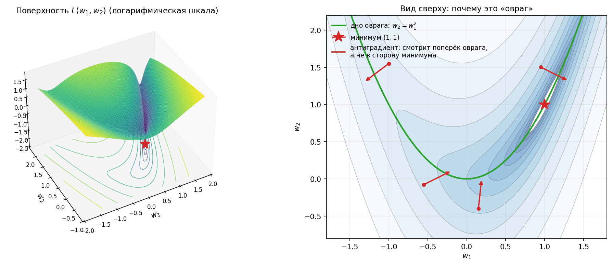
Слева — сама поверхность в логарифмическом масштабе: хорошо видна узкая изогнутая долина и её плоское дно, внизу — проекция линий уровня. Справа — вид сверху: зелёная парабола $w_2 = w_1^2$ — дно оврага, красная звезда — минимум $(1,1)$, а красные стрелки показывают направление антиградиента в четырёх точках: он смотрит поперёк оврага, на ближайшее дно, а вовсе не в сторону минимума. Ключевая проблема видна на правой панели: направление наискорейшего спуска почти нигде не совпадает с направлением к минимуму. Скатившись на дно за пару шагов, метод оказывается в почти плоской изогнутой канаве, где градиент крошечный и всё время разворачивается вслед за изгибом.
Отсюда две беды, которые и различают оптимизаторы:
- большой шаг — метод перелетает канаву и начинает скакать между стенками;
- маленький шаг — метод ползёт по дну мучительно медленно.
Именно с этим по-разному справляются инерция (momentum) и адаптивный шаг (AdaGrad/RMSProp/Adam). И то же самое, только в миллионах измерений, происходит при обучении настоящей нейросети — овраги в её ландшафте потерь встречаются постоянно.
Все восемь оптимизаторов запущены из одной точки на том самом овраге, который мы только что разобрали. Каждый идёт по своим правилам обновления весов — и именно на этой геометрии разница между ними становится наглядной.
- Слева — траектории весов $(w_1, w_2)$ на линиях уровня функции потерь: чёрная точка — старт, звезда — минимум.
- Справа — значение функции потерь по шагам в логарифмической шкале: чем ниже кривая, тем лучше сошёлся метод.
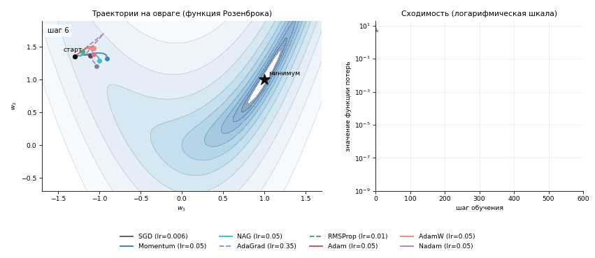
Восемь оптимизаторов из одной стартовой точки на овраге Розенброка. Learning rate подобран для каждого метода отдельно — иначе сравнение было бы нечестным: то, что нормально для Adam, разносит SGD. - SGD (серый) ползёт медленнее всех: он честно идёт по градиенту, а градиент в овраге почти перпендикулярен нужному направлению, поэтому шаг за шагом он лишь слегка продвигается вдоль долины.
- Momentum и NAG (синий, голубой) разгоняются вдоль долины: накопленная инерция складывает шаги в одном направлении и гасит колебания поперёк. Видно, как они «проскакивают» повороты — это цена инерции.
- AdaGrad (фиолетовый пунктир) стартует бодро, но его кривая на правой панели постепенно выполаживается: накопленная сумма квадратов градиентов только растёт, поэтому эффективный шаг монотонно затухает.
- RMSProp (зелёный пунктир) той же проблемы лишён — он усредняет квадраты градиентов через EMA и «забывает» старое, но на дне долины заметно дрожит около минимума.
- Adam и Nadam (красный, розовый) сочетают инерцию и адаптивный шаг и уходят вниз быстрее всех: их кривые падают на несколько порядков раньше остальных.
- AdamW (оранжевый) идёт почти по следу Adam, но останавливается чуть выше — weight decay дополнительно тянет веса к нулю, а минимум здесь находится не в нуле. На задаче без регуляризации AdamW и Adam совпадают; разница проявляется именно как штраф за большие веса.
Красивая гонка на двумерной игрушке — не доказательство, что метод лучше на реальной нейросети:
- Learning rate решает больше, чем сам оптимизатор. Здесь для каждого метода он подобран отдельно; при одном общем lr порядок мест поменялся бы полностью.
- Два параметра — не миллионы. В настоящей сети ландшафт многомерный, градиенты шумные (мини-батчи), а адаптивность работает по каждому параметру отдельно — эффекты совсем другого масштаба.
- Быстрее сойтись ≠ лучше обобщить. Именно поэтому SGD + Momentum до сих пор жив на vision-бенчмарках, хотя на такой анимации он выглядит аутсайдером.
- SGD: простота, низкие вычислительные требования
- Momentum / NAG: ускорение и уменьшение колебаний
- AdaGrad / RMSProp: адаптивный шаг для каждого параметра
- Adam / AdamW / Nadam: быстрый и практичный стандарт для многих DL-задач
- SGD: шумность, медленная сходимость на сложном ландшафте
- Momentum / NAG: чувствительность к $\eta$ и $\beta$
- AdaGrad: шаг может затухать слишком сильно
- Adam-семейство: нужна аккуратная настройка гиперпараметров
Оптимизатор Инерция (1-й момент) Адаптивный шаг (2-й момент) Буферов памяти Типичный $\eta$ SGD нет нет 0 $10^{-2}$ Momentum / NAG да нет 1 $10^{-2}$ AdaGrad нет да (сумма) 1 $10^{-2}$ RMSProp нет да (EMA) 1 $10^{-3}$ Adam / AdamW / Nadam да да (EMA) 2 $10^{-3}$…$10^{-4}$ «Буферов памяти» — сколько дополнительных тензоров размером с модель хранит оптимизатор. Для модели на 1 млрд параметров в fp32 каждый такой буфер стоит около 4 ГБ, поэтому переход с SGD на Adam — это не только про качество, но и про то, влезет ли обучение в видеокарту.
- Базовый выбор для большинства задач: AdamW
- Для строгой генерализации на vision/NLP-бенчмарках часто тестируют SGD + Momentum
- Для RL или нестационарных градиентов нередко полезен RMSProp
Лучший оптимизатор зависит от архитектуры, размера батча, scheduler и задачи, поэтому финальное решение обычно принимают после сравнения на валидации.
Какой оптимизатор рекомендуется как базовый выбор для большинства DL-задач?
AdamW — де-факто стандарт для трансформеров и большинства современных архитектур. Он сочетает адаптивный шаг, инерцию и корректную регуляризацию.
Когда SGD с Momentum может быть лучше Adam?
В задачах Computer Vision и NLP на строгих бенчмарках SGD + Momentum иногда даёт лучшую финальную точность. Он менее склонен попадать в "острые" минимумы с плохим обобщением.
Почему AdaGrad не используют в глубоком обучении?
Накопленная сумма квадратов градиентов монотонно растёт, что приводит к затуханию learning rate до нуля. RMSProp и Adam решают эту проблему через EMA.
Что такое "нестационарные градиенты" и почему RMSProp подходит для RL?
В RL цель обучения меняется со временем (нестационарная среда), и распределение градиентов нестабильно. EMA в RMSProp автоматически "забывает" старые градиенты, адаптируясь к текущей ситуации.
Почему на «овраге» адаптивные методы и momentum обгоняют обычный SGD?
В узкой изогнутой долине градиент направлен преимущественно поперёк оврага, а не вдоль него. Momentum накапливает инерцию вдоль долины и гасит поперечные колебания, а адаптивные методы масштабируют шаг по каждой координате отдельно, увеличивая его там, где градиенты стабильно малы. Чистый SGD такой возможности не имеет и продвигается вдоль долины очень медленно.
Какова роль $\varepsilon$ в адаптивных оптимизаторах (Adam, RMSProp)?
$\varepsilon$ в знаменателе предотвращает деление на ноль и ограничивает максимальный шаг при очень маленьких квадратах градиентов. Типичное значение: $10^{-8}$.
-
Переобучение и недообучение
- Переобучение (overfitting) — модель запомнила обучающие данные вместе с их случайными особенностями и плохо работает на новых.
- Недообучение (underfitting) — модель слишком проста или недостаточно обучена, чтобы уловить настоящую зависимость.
Если совсем простыми словами: представьте студента, который готовится к экзамену по сборнику задач. Недоучившийся не разобрался даже в этих задачах и решает их плохо. Зазубривший вызубрил ответы наизусть — на знакомых задачах у него идеально, но чуть изменённое условие ставит его в тупик. Нам же нужен третий: тот, кто понял принцип и потому решает и новые задачи тоже.
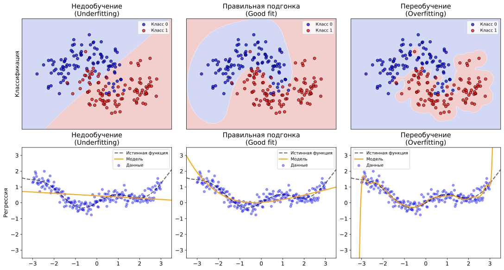
Сравнение на примере SVM и линейной регрессии: недообучение — слишком простая модель (слева), хорошее обобщение — оптимальная сложность (в центре), переобучение — слишком сложная модель (справа), чья граница извивается, чтобы правильно классифицировать каждую точку, включая шумные. 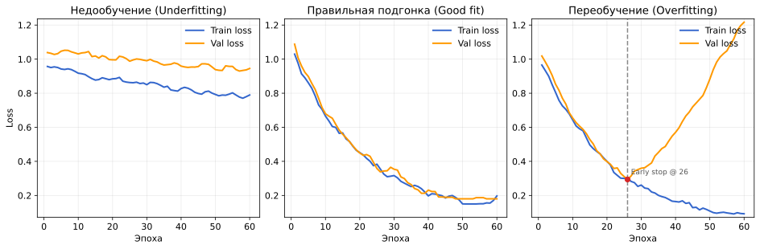
То же самое, но на кривых обучения нейросети: слева обе кривые высоко (недообучение), в центре обе низко и рядом (хорошо), справа train падает, а validation разворачивается вверх (переобучение). Диагноз ставится по двум числам — ошибке на train и ошибке на validation:
- train мала, validation велика $\to$ переобучение;
- обе ошибки велики $\to$ недообучение;
- обе ошибки малы и близки $\to$ хорошее обобщение;
- train велика, validation мала $\to$ так почти не бывает; это признак ошибки в коде (перепутаны выборки, включён dropout на валидации, разная предобработка).
Разрыв между кривыми называют gap. Само по себе его наличие не катастрофа — важно, растёт ли валидационная ошибка. Если она стоит на месте или медленно падает, модель просто уверена в себе; если она пошла вверх — обучение пора останавливать.
Маленький MLP учится на 40 зашумлённых точках. Слева фон --- вероятность класса, которую даёт сеть; с ростом эпох граница из плавной превращается в изрезанную, обходя каждую шумную точку. Справа кривые loss: train падает до конца, validation после некоторого момента разворачивается вверх. Зелёная точка --- эпоха ранней остановки, минимум validation loss. Классификация отзывов на позитивные и негативные, 5000 обучающих примеров.
Эпоха Accuracy train Accuracy validation 1 0.72 0.71 5 0.91 0.86 10 0.98 0.87 20 1.00 0.83 Читаем: до пятой эпохи обе метрики растут — всё хорошо. К десятой train почти достиг единицы, а validation остановился на $0.87$. К двадцатой train равен ровно $1.00$ — модель выучила обучающую выборку наизусть, — а validation просел до $0.83$: она начала опираться на признаки, которые работают только на этих 5000 примерах.
Правильный вывод: лучшая модель была примерно на 10-й эпохе, и именно её чекпойнт надо было сохранить. Это и есть логика early stopping.
Обязательно ведите историю ошибок и метрик и на train, и на validation по эпохам — без этого диагноз поставить невозможно.
Полезно смотреть именно на функцию потерь, а не только на accuracy: лосс на валидации часто начинает расти на несколько эпох раньше, чем падает accuracy, потому что модель сначала становится чрезмерно уверенной в своих ответах и только потом начинает ошибаться в самих ответах.
Классический способ объяснить, откуда берутся оба явления. Ошибку модели раскладывают на три части:
- смещение (bias) — систематическая ошибка из-за того, что модель в принципе неспособна выразить нужную зависимость (прямой не описать параболу);
- разброс (variance) — насколько сильно модель меняется, если её переобучить на другой случайной выборке того же размера;
- неустранимый шум — то, что не предсказать никакой моделью.
Простая модель: высокое смещение, низкий разброс — недообучение. Сложная модель: низкое смещение, высокий разброс — переобучение. Классический вывод — искать баланс где-то посередине.
Классическая картинка с U-образной кривой ошибки от сложности модели описывает не всё. У современных сетей наблюдают двойной спуск (double descent): при дальнейшем росте числа параметров, уже после точки, где модель способна идеально запомнить обучающую выборку, ошибка на тесте снова начинает падать.
Именно поэтому LLM с сотнями миллиардов параметров, обучаемые на конечных данных, не «переобучаются насмерть», как предсказывала бы наивная теория. Практический вывод: «модель слишком большая, значит переобучится» — рассуждение ненадёжное; надёжнее смотреть на реальные кривые обучения.
- Путать переобучение с дрейфом данных. Если качество упало в проде, а на валидации всё было хорошо, вероятнее не переобучение, а изменение распределения входных данных — см. data drift.
- Подбирать гиперпараметры по тестовой выборке. Если крутить настройки, глядя на тест, вы переобучитесь уже на нём: оценка станет оптимистично завышенной. Для подбора нужен отдельный validation-набор, тест трогают один раз в конце.
- Утечка данных между train и validation. Дубликаты записей, признаки, посчитанные до разбиения выборки, объекты одного пользователя в обеих частях — всё это даёт неправдоподобно маленький gap и создаёт иллюзию отличного обобщения.
Как диагностировать переобучение по кривым обучения?
Train-ошибка продолжает падать, а validation-ошибка перестала падать или начала расти. Растущий разрыв между кривыми — главный признак; лосс на валидации обычно разворачивается раньше, чем ухудшается accuracy.
Как диагностировать недообучение?
Обе ошибки высоки, и разрыва между ними практически нет: модель плохо справляется даже с обучающими данными.
Что такое компромисс смещения и разброса?
Ошибку можно разложить на смещение (модель неспособна выразить зависимость), разброс (модель слишком чувствительна к конкретной выборке) и неустранимый шум. Простые модели дают большое смещение, сложные — большой разброс; ищется баланс.
Почему нейросети склонны к переобучению и как с этим борются?
У них миллионы параметров, которых хватает, чтобы запомнить всю обучающую выборку целиком. Борются регуляризацией (weight decay, dropout), аугментацией данных, ранней остановкой и увеличением объёма данных.
Что такое двойной спуск и почему он важен?
Явление, при котором после точки полного запоминания обучающих данных дальнейший рост модели снова уменьшает тестовую ошибку. Он показывает, что классическая U-образная кривая не описывает поведение очень больших сетей, и что судить нужно по фактическим кривым, а не по числу параметров.
Что означает ситуация, когда ошибка на train выше, чем на validation?
Почти всегда — ошибку в коде или в разбиении: dropout и BatchNorm в разных режимах, разная предобработка, слишком лёгкая валидационная выборка либо утечка данных. Такое «слишком хорошее» соотношение нужно расследовать, а не радоваться ему.
-
Методы борьбы с недообучением
Недообучение (underfitting) — ситуация, когда модель недостаточно хорошо описывает зависимости в данных, и потому ошибается и на обучающем, и на тестовом наборе.
Если совсем простыми словами: модели «не хватило сил или времени» выучить закономерность. Причина может быть в ней самой (слишком простая), в условиях обучения (мало эпох, слишком сильный штраф за сложность) или в данных (признаки не содержат нужной информации).
Причины недообучения Признаки недообучения Методы борьбы - Слишком простая модель
- Недостаточно информативных признаков
- Слишком сильная регуляризация (большое $\lambda$ в $L_1/L_2$)
- Недостаточно данных
- Недостаточно эпох обучения
- Низкая точность и на train, и на test/validation
- Высокая ошибка и на train, и на test/validation
- Модель плохо предсказывает даже на train
- Использовать более сложную модель
- Добавить/улучшить признаки (feature engineering)
- Увеличить объем данных
- Ослабить регуляризацию (уменьшить $\lambda$)
- Увеличить число эпох
- Улучшить архитектуру (больше слоев/нейронов)
Высокая ошибка на train гораздо чаще означает ошибку в коде, чем нехватку ёмкости модели. Прежде чем добавлять слои, проверьте:
- перепутанные метки или сдвиг меток относительно объектов;
- отсутствие нормализации входа (сеть на сырых пикселях 0–255 обучается заметно хуже, чем на отмасштабированных);
- забытый
optimizer.zero_grad()или неправильно собранный список параметров в оптимизаторе; - функцию потерь, не соответствующую задаче (например, MSE для многоклассовой классификации);
- слишком большой learning rate: лосс скачет и никуда не сходится — снаружи это выглядит ровно как недообучение.
Практическое правило: сначала убедитесь, что обучение вообще работает, и только потом наращивайте модель.
Самая полезная проверка перед долгим обучением. Возьмите один батч из 8–32 примеров и обучайте модель только на нём, без аугментаций и регуляризации, сотню-другую шагов.
- Лосс ушёл почти в ноль, accuracy на этом батче — 100%: пайплайн исправен, значит дело действительно в ёмкости, данных или гиперпараметрах.
- Лосс застрял: где-то баг. Модель, неспособная запомнить 16 примеров, не выучит и миллион, — и никакое увеличение числа слоёв это не исправит.
Тест занимает минуту и экономит часы обучения впустую.
Действуйте по возрастанию цены, а не наугад:
- Learning rate. Слишком маленький — модель ползёт и не успевает выучиться за отведённые эпохи; слишком большой — расходится. Это самый дешёвый и самый частый источник улучшения.
- Дольше учить. Просто увеличить число эпох, добавив расписание с затуханием шага.
- Ослабить регуляризацию. Уменьшить weight decay, убавить dropout, убрать часть аугментаций.
- Увеличить модель. Больше нейронов в слое, больше слоёв, больше каналов.
- Улучшить признаки и данные. Добавить информативные признаки, взять более сильный предобученный backbone, собрать больше данных.
Регуляризация — это намеренное ограничение свободы модели: weight decay тянет веса к нулю, dropout выключает часть нейронов, аугментации искажают вход.
Если давление слишком велико, ограничение начинает мешать выучить даже настоящую зависимость. Крайний случай: при очень большом $\lambda$ выгоднее всего обнулить все веса — тогда штраф равен нулю, а предсказание становится константой. Модель формально «оптимальна» и полностью бесполезна.
Диагностический признак: убавили dropout или weight decay — и обе ошибки, train и validation, пошли вниз. Значит, регуляризации было слишком много.
Частая ошибка новичка: при высокой train-ошибке идти собирать данные. Если модель не справляется с теми примерами, что уже есть, добавление новых сделает задачу только труднее.
Больше данных — лекарство от переобучения (разрыв между train и validation), а не от недообучения. При недообучении работают ровно противоположные шаги: увеличить ёмкость модели, ослабить регуляризацию, учить дольше.
Иногда модель достаточно велика по числу параметров, но структурно неспособна выразить нужную зависимость:
- MLP на сырых пикселях плохо распознаёт объекты, которые могут сдвигаться по кадру, — нужна свёрточная сеть;
- обычная RNN не удерживает длинные зависимости из-за затухающих градиентов — нужны LSTM/GRU или трансформер;
- очень глубокая сеть без skip-connections обучается хуже, чем более мелкая, — вырожденный случай, ради которого и придумали ResNet.
Здесь «добавить нейронов» не поможет: нужна другая архитектура, а не более широкая старая.
Как распознать недообучение по кривым обучения?
Обе ошибки, train и validation, высоки и почти не снижаются, а разрыва между ними практически нет — модель плохо описывает даже обучающие данные.
Каковы основные причины недообучения нейросети?
Слишком простая архитектура, слишком мало эпох, чрезмерная регуляризация ($L_2$, dropout, агрессивные аугментации), неудачный learning rate, неинформативные признаки — и очень часто просто баг в пайплайне.
Что нужно проверить в первую очередь при высокой ошибке на train?
Исправность пайплайна: нормализацию входа, соответствие меток объектам, функцию потерь,
zero_grad()и learning rate. Быстрая проверка — попытаться переобучиться на одном батче; если это не удаётся, дело в коде, а не в ёмкости модели.Как увеличение глубины помогает при недообучении?
Каждый дополнительный слой добавляет нелинейное преобразование, повышая выразительность модели: глубокая сеть приближает более сложные функции, недоступные мелкой. Но помогает это только если проблема действительно в ёмкости.
Почему чрезмерная регуляризация приводит к недообучению?
Она ограничивает свободу модели, а при слишком большом штрафе выгоднее всего обнулить веса и предсказывать константу. Признак: ослабили регуляризацию — и обе ошибки пошли вниз одновременно.
Поможет ли увеличение объёма данных при недообучении?
Нет: больше данных лечит переобучение. При недообучении нужно наращивать ёмкость модели, ослаблять регуляризацию и учить дольше.
-
Методы борьбы с переобучением
Регуляризация — общее название для приёмов, которые намеренно ограничивают модель, чтобы она не запоминала обучающую выборку, а выучивала закономерность, работающую и на новых данных.
Если совсем простыми словами: мы специально мешаем модели учиться «слишком хорошо». Штрафуем за большие веса, случайно выключаем нейроны, портим входные картинки, останавливаем обучение раньше срока. Каждая такая помеха делает запоминание конкретных примеров невыгодным, а вот устойчивая закономерность её переживает — именно поэтому в итоге выучивается она.
Метод Описание Особенности / пояснения Dropout Случайное отключение нейронов при обучении Уменьшает ко-адаптацию нейронов $L_1/L_2$ регуляризация Штраф за большие веса в функции потерь $L_1$ стремится обнулять неважные веса, $L_2$ пропорционально уменьшает веса Data Augmentation Искусственное расширение датасета преобразованиями Особенно эффективно в CV Early Stopping Остановка обучения при деградации валидации или длительном плато Помогает выбрать момент остановки до переобучения Batch Normalization Нормализация активаций внутри сети Стабилизирует и ускоряет обучение, дает мягкий регуляризующий эффект Cross-validation Усреднение результатов на разных разбиениях Позволяет оценить стабильность модели Большие веса означают, что маленькое изменение входа даёт большое изменение выхода: функция становится «крутой» и способна проходить ровно через каждую обучающую точку, включая шумные.
Штраф $\lambda\|w\|^2$ делает такую крутизну дорогой: чтобы оправдать большой вес, признак должен приносить достаточное уменьшение основной части лосса. Признак, полезный лишь на нескольких обучающих примерах, этого не окупает, и его вес стягивается к нулю.
Отсюда и разница между $L_1$ и $L_2$: $L_1$ штрафует за сумму модулей и «дожимает» неважные веса ровно до нуля (получается отбор признаков), $L_2$ штрафует за сумму квадратов и уменьшает все веса пропорционально, никогда не обнуляя их полностью.
$L_2$-регуляризация в глубоком обучении почти всегда задаётся не отдельным слагаемым в лоссе, а параметром оптимизатора:
torch.optim.AdamW(params, lr=1e-3, weight_decay=0.01)— отвязанное затухание весов, стандарт для трансформеров;torch.optim.SGD(params, lr=0.1, momentum=0.9, weight_decay=5e-4)— типичные значения для свёрточных сетей.
Из-под weight decay при этом обычно исключают смещения и параметры нормализации — см. AdamW.
Вернёмся к примеру с отзывами: validation-лосс падал до 10-й эпохи, а затем начал расти. Early stopping формализует «остановиться вовремя» двумя параметрами:
- patience (терпение) — сколько эпох подряд разрешено не улучшаться, прежде чем остановиться. Типично 3–10: без запаса вы остановитесь на случайном шуме;
- сохранение лучшего чекпойнта — на диск кладут веса той эпохи, где validation-метрика была лучшей, а не последней.
Второй пункт важнее первого: даже если обучение шло до конца, взять лучший чекпойнт — это уже почти весь эффект early stopping.
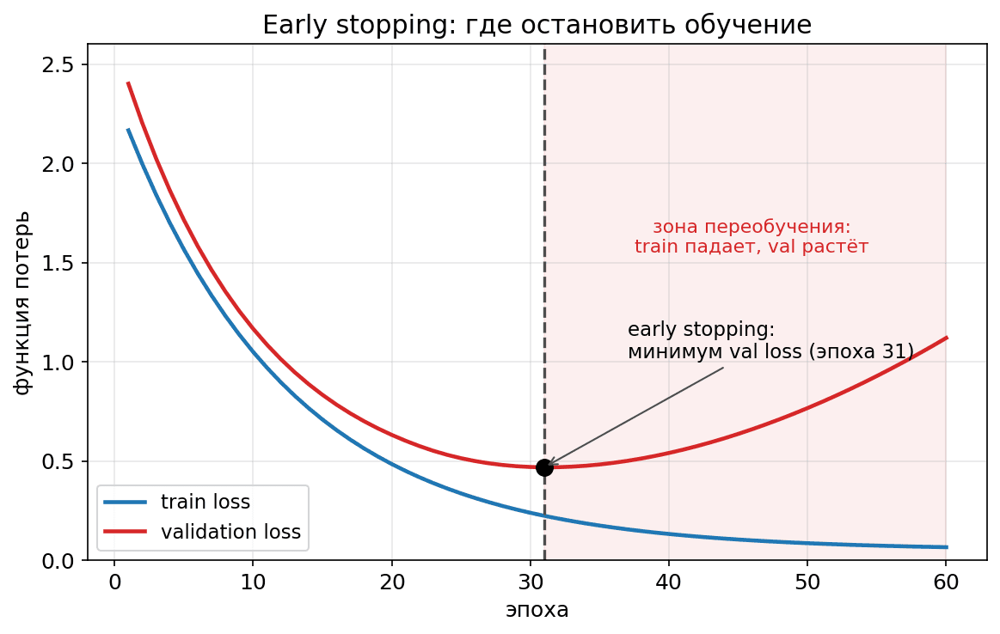
Синяя кривая — лосс на обучении, красная — на валидации. До 31-й эпохи падают обе. Дальше train продолжает снижаться (модель всё лучше запоминает обучающую выборку), а val разворачивается вверх — это и есть переобучение, розовая зона. Early stopping фиксирует веса в точке минимума валидационного лосса, чёрная точка на 31-й эпохе. К 60-й эпохе val вырос от своего минимума более чем вдвое, хотя train к этому моменту почти обнулился — по одной только кривой train ничего бы не заподозрили. На практике методы почти всегда применяют вместе, потому что они бьют по разным механизмам переобучения:
- weight decay ограничивает величину весов;
- dropout мешает нейронам «сговариваться» и полагаться друг на друга;
- аугментация увеличивает разнообразие данных;
- early stopping ограничивает время, за которое можно успеть запомнить выборку;
- нормализация слоёв даёт небольшой побочный регуляризующий эффект за счёт шума в статистиках батча.
Типичный рецепт для свёрточной сети: аугментация + weight decay + early stopping; для трансформера: dropout + weight decay + warmup с косинусным затуханием.
Каждый её вид имеет цену, и переборщить так же легко, как недодать.
- Слишком большой dropout или weight decay уводит модель в недообучение: падают обе ошибки сразу — и train, и validation.
- Слишком агрессивные аугментации меняют смысл примера: если при распознавании цифр разрешить поворот на 180°, шестёрка станет девяткой, и метка станет неверной.
- Early stopping со слишком маленьким patience остановит обучение на случайной флуктуации валидации, задолго до реального оптимума.
Правильная сила регуляризации — это гиперпараметр, который подбирают по валидации, а не «чем больше, тем безопаснее».
В классическом ML $k$-fold — стандарт, но в DL обучение одной модели может занимать дни, а $k$-fold требует обучить её $k$ раз. Поэтому обычно обходятся одним фиксированным разбиением train/val/test.
Кросс-валидацию в DL берут в двух случаях: очень маленький датасет (медицинские данные, где каждый пример дорог) и соревнования, где решают доли процента метрики и параллельно получают ансамбль из $k$ моделей.
Больше данных. Никакая регуляризация не заменит увеличения обучающей выборки: она уменьшает разброс модели напрямую, не ограничивая её выразительность.
Если собрать новые данные нельзя, ближайшие по эффекту приёмы — аугментация (дешёвое искусственное разнообразие) и предобучение на большом стороннем корпусе с последующим дообучением на своей задаче (pretraining + fine-tuning). Второе часто даёт больший выигрыш, чем любые настройки регуляризации.
Назовите основные методы борьбы с переобучением в нейросетях.
Dropout, $L_1/L_2$-регуляризация (weight decay), аугментация данных, early stopping, нормализация слоёв, кросс-валидация и увеличение объёма данных. На практике их комбинируют, поскольку они ограничивают модель по-разному.
В чём разница между $L_1$ и $L_2$?
$L_1$ штрафует сумму модулей весов и зануляет неважные — получается отбор признаков. $L_2$ штрафует сумму квадратов и пропорционально уменьшает все веса, не обнуляя их. В глубоком обучении почти всегда используют $L_2$ в виде weight decay.
Почему ограничение величины весов улучшает обобщение?
Большие веса делают функцию резкой и позволяют ей проходить через каждую обучающую точку вместе с шумом. Штраф делает такую резкость невыгодной, и выживают только признаки, дающие достаточный выигрыш в основной части лосса.
Что такое early stopping и какие у него параметры?
Остановка обучения, когда валидационная метрика перестала улучшаться. Ключевые параметры — patience (сколько эпох ждать) и сохранение лучшего чекпойнта; второе само по себе даёт почти весь эффект метода.
Почему аугментация особенно эффективна в компьютерном зрении?
Изображения допускают много преобразований, не меняющих метку: сдвиги, отражения, изменения яркости, кропы. Каждое такое преобразование даёт новый обучающий пример и заодно учит модель инвариантности к этим факторам.
Может ли регуляризация навредить?
Да: чрезмерные dropout, weight decay или аугментации приводят к недообучению — обе ошибки растут одновременно. Кроме того, аугментация, меняющая смысл объекта (поворот цифры на 180°), делает метку неверной.
Почему кросс-валидацию редко используют в глубоком обучении?
Она требует обучить модель $k$ раз, а одно обучение может занимать дни. Обходятся фиксированным разбиением; $k$-fold берут лишь на очень маленьких датасетах и в соревнованиях, где важны доли процента.
-
Label Smoothing
Label smoothing — метод регуляризации, который делает модель менее уверенной в предсказаниях, "размывая" one-hot метки в более мягкое распределение: $$ \tilde{y}_i = (1 - \varepsilon)\cdot y_i + \frac{\varepsilon}{K} $$ где $K$ — число классов, $\varepsilon \in [0,1]$ — коэффициент сглаживания, $y_i$ — исходная жёсткая метка (1 у правильного класса, 0 у остальных).
Если совсем простыми словами: вместо «это точно кошка, и ничем другим быть не может» мы говорим модели «это кошка процентов на 92, а на оставшиеся проценты — что угодно ещё». Разница кажется косметической, но именно она убирает у модели стимул наращивать уверенность до бесконечности.
Пять классов, верный --- первый. При $\varepsilon=0$ вся масса на нём. С ростом $\varepsilon$ доля $\varepsilon/K$ уходит в каждый из остальных классов, а у верного остаётся $1-\varepsilon+\varepsilon/K$. Целевое распределение больше не требует бесконечного логита, поэтому у cross-entropy появляется конечный оптимум. Пусть $K=3$, правильный класс — первый, логиты равны $[a,b,c]$.
Без smoothing метка: $[1,0,0]$, и модель стремится к $a \gg b,c$.
Например, для $[10,0,0]$ после softmax получим примерно $[0.9999,0,0]$.С label smoothing при $\varepsilon=0.1$: $$ [1,0,0] \rightarrow [0.9333,0.0333,0.0333] $$ Тогда уже более умеренные логиты (например, около $[3.33,0,0]$) дают близкое распределение.
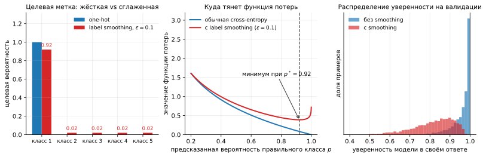
Слева: жёсткая метка $[1,0,0,0,0]$ против сглаженной при $\varepsilon=0.1$ и $K=5$. В центре: обычная cross-entropy падает до самого $p=1$, поэтому модель бесконечно наращивает логит; сглаженная версия имеет минимум внутри — ровно при $p^*=1-\varepsilon+\varepsilon/K=0.92$. Справа: как из-за этого меняется распределение уверенности модели на валидации. - Левая панель. Вся разница в метке: правильный класс получает не 1, а $1-\varepsilon+\varepsilon/K = 0.92$, а каждый неправильный — по $\varepsilon/K = 0.02$ вместо нуля. Модель больше не учат, что неправильные классы абсолютно невозможны.
- Центральная панель — самая важная. Обычная cross-entropy $-\log p$ убывает вплоть до $p=1$: сколько бы модель ни была уверена, лосс всегда просит "ещё увереннее", и логит правильного класса растёт неограниченно. У сглаженной версии есть точка минимума внутри отрезка: как только модель дошла до $p^*=0.92$, дальнейший рост уверенности начинает штрафоваться. Отсюда и берётся эффект "ограничивает рост максимального логита".
- Правая панель. Результат на валидации: без сглаживания предсказания сбиваются в кучу у 1.0 (модель почти всегда "уверена на 100%", в том числе когда ошибается), со сглаживанием распределение уверенности сдвигается влево и становится ближе к реальной точности — модель лучше калибрована.
Точку минимума легко получить руками. При сглаженной метке лосс равен
$$L(p) = -\left(1-\varepsilon+\tfrac{\varepsilon}{K}\right)\ln p - \tfrac{\varepsilon}{K}\sum_{j \neq i}\ln q_j$$
Если неправильные классы делят остаток $1-p$ поровну, приравнивание производной к нулю даёт ровно $p^* = 1-\varepsilon+\frac{\varepsilon}{K}$ — то есть оптимально предсказывать в точности сглаженную метку, не больше и не меньше.
- Label smoothing ограничивает рост максимального логита и повышает устойчивость модели
- Обычная cross-entropy часто делает модель чрезмерно уверенной, smoothing это смягчает
- Типичные значения: $\varepsilon \in [0.05, 0.1]$
В PyTorch отдельная реализация не нужна — это параметр функции потерь:
criterion = nn.CrossEntropyLoss(label_smoothing=0.1)Внутри происходит ровно то, что описано выше: жёсткая метка заменяется на сглаженную, и относительно неё считается обычная кросс-энтропия. Никаких изменений в архитектуре или инференсе не требуется — метку меняем только во время обучения.
- При дистилляции знаний. Учитель со сглаживанием даёт менее информативные «мягкие» вероятности: сглаживание стягивает все неправильные классы к одному значению $\varepsilon/K$ и стирает информацию о том, какие классы похожи между собой, — а именно она и ценна для ученика.
- Когда важны сами вероятности как оценка риска. Сглаживание улучшает калибровку по одним метрикам, но систематически занижает уверенность даже там, где модель права. Если выход используется как вероятность в бизнес-правиле («отказать, если $p > 0.95$»), пороги придётся пересматривать.
- В задачах с обучением представлений (метрическое обучение, поиск похожего). Там сглаживание сжимает эмбеддинги классов в более компактные кластеры и может ухудшить разделимость на новых, невиданных классах.
- При очень зашумлённой разметке большая $\varepsilon$ — не решение. Она равномерно размазывает вероятность по всем классам, тогда как реальный шум разметки обычно направленный (путают конкретные пары классов). Здесь лучше работают специальные robust-лоссы.
Мягкие метки в сегментации
В сегментации метка задаётся для каждого пикселя, то есть это те же one-hot метки, только миллионами штук. И здесь у жёстких меток есть отдельная беда: разметка границы объекта неточна по своей природе. Где именно заканчивается кошка и начинается фон на конкретном пикселе — не знает и сам разметчик, а соседние аннотаторы проведут контур по-разному.
Требуя от модели уверенности 1.0 ровно до последнего пикселя контура и 0.0 сразу за ним, мы заставляем её выучивать шум разметки. Поэтому маску размывают по краям — обычно гауссовым фильтром с параметром $\sigma$: внутри объекта цель остаётся 1, снаружи 0, а в узкой полосе вокруг границы метка плавно спадает.
Это тот же label smoothing, но $\varepsilon$ теперь не константа, а функция расстояния до границы: в глубине объекта сглаживания нет вовсе, а у самого контура оно максимально — ровно там, где разметке и не стоит доверять.
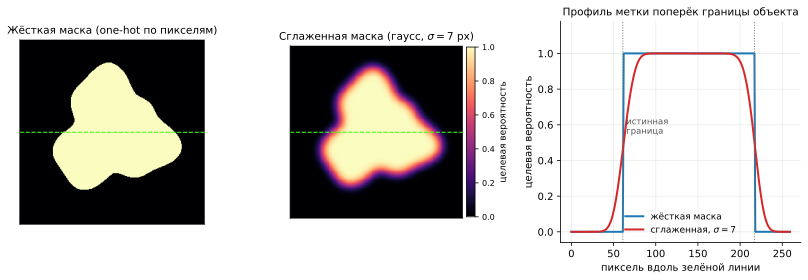
Слева — жёсткая бинарная маска: каждый пиксель либо «объект», либо «фон». В центре — та же маска после гауссова размытия ($\sigma=7$ px): значения остаются 1 внутри и 0 снаружи, а у границы плавно переходят. Справа — профиль метки вдоль зелёной линии: вместо разрыва-ступеньки получается плавный спад шириной порядка $\sigma$. - $\sigma$ подбирают под масштаб неточности разметки, а не «на глаз по красоте»: чем грубее размечены контуры, тем шире стоит делать переход.
- Такие мягкие маски используют не только для регуляризации: на них же строят weighted loss, где пиксели у границы получают больший вес — граница обычно и есть самое сложное место для модели. Разбор самих функций потерь сегментации — на странице задач CV.
- Метрики (IoU, Dice) при этом всё равно считают по жёсткой маске: сглаживание — свойство обучающей цели, а не оценки качества.
- Inception v2–v4 — работа, в которой label smoothing был предложен и измерен на ImageNet.
- DeiT — label smoothing в связке с дистилляцией и тяжёлыми аугментациями при обучении ViT на небольшом датасете.
Что такое label smoothing и зачем он нужен?
Label smoothing "размывает" жёсткие метки: вместо $[1, 0, \ldots]$ используется распределение, где правильный класс получает $1-\varepsilon$, а остальные — $\varepsilon/K$. Это снижает самоуверенность модели.
Какую проблему решает label smoothing?
Обычная cross-entropy стремится сделать логит правильного класса бесконечно большим. Label smoothing ограничивает этот рост, предотвращая переобучение и повышая устойчивость.
Как label smoothing влияет на функцию потерь?
Вместо log-правдоподобия правильного класса модель оптимизирует взвешенную комбинацию всех классов. Это мягко штрафует за слишком уверенные предсказания.
Какие типичные значения $\varepsilon$ используют на практике?
Обычно $\varepsilon \in [0.05, 0.1]$. Значение 0.1 хорошо работало в оригинальных экспериментах с трансформерами (Attention Is All You Need).
Почему label smoothing ограничивает рост логитов — что происходит с функцией потерь?
Обычная cross-entropy $-\log p$ монотонно убывает вплоть до $p=1$, поэтому модель бесконечно наращивает логит правильного класса. У сглаженной версии минимум находится внутри отрезка — ровно при $p^*=1-\varepsilon+\varepsilon/K$, и дальнейший рост уверенности уже штрафуется.
Как label smoothing применяют в задачах сегментации?
Маску размывают по краям (например, гауссовым фильтром с параметром $\sigma$): внутри объекта цель остаётся 1, снаружи 0, а у границы плавно спадает. Это то же сглаживание, но с $\varepsilon$, зависящим от расстояния до границы — сильнее всего там, где разметка контура наименее надёжна. Метрики (IoU, Dice) при этом считают по жёсткой маске.
-
Инициализация весов — способ задать начальные значения весов перед обучением. От неё зависят скорость сходимости и сама возможность обучить глубокую сеть.
Если совсем простыми словами: обучение — это спуск с горы, а инициализация решает, в какой точке горы вас высадят. Высадят в удачном месте — спуск пойдёт сразу; высадят на плоской вершине или в пропасти — вы либо не сдвинетесь с места (затухшие градиенты), либо сорвётесь (взрыв активаций). Особенно чувствительны к этому глубокие сети: там ошибка масштаба на каждом слое перемножается.
Под «масштабом сигнала» понимают амплитуду (дисперсию) активаций и градиентов. Хорошая инициализация обеспечивает, чтобы:
- активации не затухали и не взрывались при прямом проходе;
- градиенты имели сопоставимый масштаб при обратном проходе.
Формально масштаб удобно измерять как $$ \text{scale} = \sqrt{\mathbb{E}[x^2]} $$ где $x$ — активации или градиенты. Требование звучит так: масштаб на выходе слоя должен быть примерно равен масштабу на его входе.
Пусть каждый слой умножает масштаб сигнала на коэффициент $c$. После $L$ слоёв масштаб умножится на $c^L$.
- $c = 0.9$, $L = 50$: $0.9^{50} \approx 0.005$ — сигнал ослаб в 200 раз, до последних слоёв доходит почти ноль;
- $c = 1.1$, $L = 50$: $1.1^{50} \approx 117$ — сигнал вырос в сотню раз, дальше
infиNaN; - $c = 1.0$: всё в порядке на любой глубине.
Отклонение в 10% на слой — казалось бы, мелочь — оборачивается разницей в четыре порядка. Отсюда и вся возня с точными формулами дисперсии: они подбираются так, чтобы $c$ был ровно единицей.
Случайный вход прогоняется через шесть слоёв по 256 нейронов, для каждого слоя показана гистограмма активаций. Нулевые веса --- все активации равны нулю, нейроны неразличимы. Слишком малые веса ($\sigma=0.01$) --- гистограмма схлопывается в точку уже на втором слое. Xavier под tanh и He под ReLU держат разброс активаций примерно одинаковым от слоя к слою. $$ w = 0 $$ Недостатки:
- Нейроны в слое стартуют одинаково
- Градиенты совпадают
- Симметрия не нарушается, обучение фактически не идёт
Если все веса слоя равны между собой (не обязательно нулю — любой одинаковой константе), то все нейроны слоя вычисляют одно и то же число. На обратном проходе они получают одинаковый градиент, а значит, обновляются одинаково — и остаются идентичными навсегда.
Слой из 512 таких нейронов эквивалентен слою из одного нейрона: вся его ёмкость потеряна. Поэтому инициализация обязана быть случайной — она нужна, чтобы «разломать симметрию» и дать нейронам возможность специализироваться на разных признаках.
Оговорка: смещения (bias) инициализировать нулями можно и нужно — симметрию уже сломали веса.
Для слоёв с $n_{in}$ входами и $n_{out}$ выходами: $$ \mathbb{E}(w)=0,\quad \mathbb{D}(w)=\frac{2}{n_{in}+n_{out}},\quad w \sim \mathcal{N}\!\left(0,\frac{2}{n_{in}+n_{out}}\right) $$ Плюсы:
- Хорошо работает с sigmoid/tanh
- Сохраняет масштаб сигнала
Выход нейрона — сумма $n_{in}$ слагаемых $w_i x_i$. Если слагаемые независимы и имеют нулевое среднее, дисперсии складываются: $$\mathbb{D}(z) = n_{in} \cdot \mathbb{D}(w) \cdot \mathbb{D}(x)$$
Чтобы масштаб не менялся ($\mathbb{D}(z) = \mathbb{D}(x)$), нужно $\mathbb{D}(w) = \frac{1}{n_{in}}$ — вот и вся идея. Интуиция: чем больше слагаемых мы складываем, тем меньше должен быть каждый вес, иначе сумма разрастётся.
Xavier делает то же самое, но требует сохранения масштаба в обе стороны — и для активаций (нужно $\frac{1}{n_{in}}$), и для градиентов на обратном проходе (нужно $\frac{1}{n_{out}}$). Идеально выполнить оба условия сразу нельзя, поэтому берут компромисс — среднее гармоническое: $\frac{2}{n_{in}+n_{out}}$.
Для слоя с $n_{in}$ входами: $$ \mathbb{E}(w)=0,\quad \mathbb{D}(w)=\frac{2}{n_{in}},\quad w \sim \mathcal{N}\!\left(0,\frac{2}{n_{in}}\right) $$ Плюсы:
- Оптимален для ReLU-подобных активаций
- Лучше сохраняет масштаб сигнала в глубоких сетях
ReLU обнуляет примерно половину значений. Для симметричного распределения с нулевым средним это уменьшает дисперсию выхода ровно вдвое: половина значений превратилась в нули.
Значит, чтобы скомпенсировать потерю, дисперсию весов надо удвоить: $\frac{2}{n_{in}}$ вместо $\frac{1}{n_{in}}$. Вот и весь вывод формулы He — это Xavier с поправкой на «половину сигнала съедает ReLU».
Практическое правило: ReLU/GELU/SiLU $\to$ He, sigmoid/tanh $\to$ Xavier. Взять Xavier для глубокой ReLU-сети — значит терять по множителю $\sqrt{2}$ на слой, и на 30 слоях сигнал ослабнет примерно в $2^{15}$ раз.
Плюсы:
- Ускоряют сходимость
- Часто улучшают качество на малых данных
- База для transfer learning и fine-tuning
import timm model = timm.create_model("resnet34", pretrained=True)В современных фреймворках инициализация уже разумная по умолчанию:
nn.Linearиnn.Conv2dв PyTorch инициализируются вариантом Kaiming (He). Явно её задают в трёх случаях:- нестандартная активация — тогда используют
gain(поправочный множитель под конкретную нелинейность), напримерnn.init.xavier_normal_(w, gain=nn.init.calculate_gain('tanh')); - очень глубокие сети без нормализации — там масштаб критичен и требует ручной настройки;
- специальные приёмы: в residual-блоках последний слой (или
gammaпоследней нормализации) часто инициализируют нулями, чтобы блок стартовал как тождественное отображение и глубокая сеть в начале обучения вела себя как мелкая.
Xavier и He гарантируют правильный масштаб только на первом шаге. Дальше веса меняются, и распределение активаций уплывает.
Именно поэтому BatchNorm и LayerNorm не отменили инициализацию, а инициализация — их: первая задаёт хороший старт, вторые удерживают масштаб на протяжении всего обучения. В сетях с нормализацией чувствительность к выбору инициализации заметно ниже, но она не исчезает — особенно в первых слоях и в очень глубоких моделях.
- ResNet — почему архитектура, в которой тождественное отображение достигается обнулением весов блока, гораздо менее чувствительна к инициализации: нужное решение совпадает с тем, откуда стартует обучение.
- Pre-Norm и Post-Norm в LLM — как выбор схемы нормализации меняет требования к инициализации на глубине в сотню слоёв.
- Kimi — оптимизатор Muon и то, почему на больших моделях рост логитов внимания приходится ограничивать явно, иначе обучение расходится.
Почему нельзя инициализировать все веса нулями?
Тогда все нейроны слоя выдают одинаковые значения и получают одинаковые градиенты: симметрия не нарушается, нейроны навсегда остаются идентичными, и слой из 512 нейронов работает как один. Смещения нулями инициализировать при этом можно.
Что означает «сохранение масштаба сигнала» и почему это важно?
Дисперсия активаций (и градиентов) на выходе слоя должна быть близка к дисперсии на входе. Иначе множитель $c \neq 1$ возводится в степень числа слоёв, и сигнал экспоненциально затухает или взрывается.
Откуда в формулах берётся деление на $n_{in}$?
Выход нейрона — сумма $n_{in}$ независимых слагаемых, поэтому $\mathbb{D}(z) = n_{in}\mathbb{D}(w)\mathbb{D}(x)$. Чтобы дисперсия не изменилась, нужно $\mathbb{D}(w) = 1/n_{in}$: чем больше входов, тем мельче должны быть веса.
Для каких активаций подходит Xavier?
Для функций, линейных около нуля и симметричных: sigmoid, tanh. Дисперсия $\frac{2}{n_{in}+n_{out}}$ — компромисс между сохранением масштаба на прямом и на обратном проходе.
Почему для ReLU нужен He, а не Xavier?
ReLU обнуляет примерно половину значений и вдвое уменьшает дисперсию выхода. He компенсирует это, удваивая дисперсию весов: $\frac{2}{n_{in}}$. С Xavier глубокая ReLU-сеть теряет по $\sqrt{2}$ на слой.
В чём преимущество предобученных весов?
Они уже кодируют полезные признаки — края, текстуры, семантику, — поэтому обучение сходится быстрее и даёт лучшее качество, особенно на малых данных. Это и есть основа transfer learning.
Отменяет ли нормализация (BatchNorm/LayerNorm) необходимость хорошей инициализации?
Нет, лишь снижает к ней чувствительность. Инициализация отвечает за корректный масштаб на старте, нормализация — за его удержание в процессе обучения; в очень глубоких сетях важны обе.
-
Предобучение, дообучение и Fine-tuning
- Предобучение (pretraining) — обучение модели на большой общей выборке, часто без ручной разметки: предсказывать следующий токен, восстанавливать замаскированные слова, различать аугментации одной картинки.
- Дообучение — продолжение обучения на данных конкретной задачи.
- Transfer learning / fine-tuning — перенос знаний на новую задачу: обычно с меньшим learning rate и иногда с заморозкой части слоёв.
Если совсем простыми словами: не нужно каждый раз учить модель видеть мир с нуля. Сначала кто-то (обычно крупная лаборатория, за большие деньги) обучает модель на миллионах картинок или терабайтах текста — она выучивает общие вещи: края, текстуры, формы, грамматику, факты о мире. Вы берёте эту модель и доучиваете её под свою задачу на своих нескольких тысячах примеров. Это как нанять человека с высшим образованием и обучить его специфике вашей компании, а не растить специалиста с младенчества.
В CV часто берут ResNet, предобученный на ImageNet, и дообучают последние слои под свою задачу классификации.
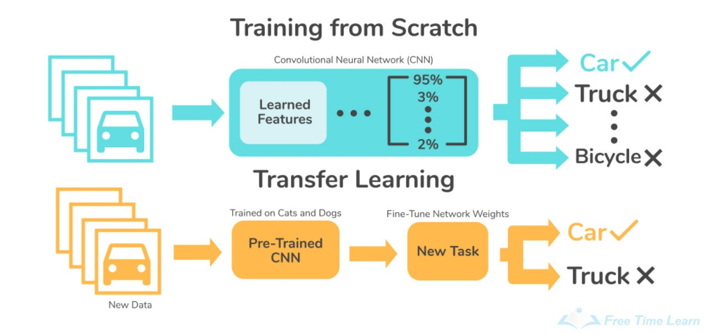
Перенос обучения: нижние слои предобученной сети сохраняют общие признаки, а верхние заменяются и переобучаются под новую задачу. Свёрточная сеть выучивает признаки слоями, от общего к частному:
- первые слои — края, углы, цветовые пятна. Они одинаково полезны для распознавания кошек, опухолей и дефектов на производстве: это просто устройство зрительного сигнала;
- средние слои — текстуры, детали, части объектов (глаз, колесо, буква);
- последние слои — целые объекты и классы конкретно той задачи, на которой модель обучалась.
Общее — внизу, специфичное — наверху. Отсюда стандартный рецепт: нижние слои сохраняем, верхние заменяем и переобучаем. В языковых моделях иерархия похожая: нижние слои отвечают за морфологию и синтаксис, верхние — за смысл и задачу.
- Инициализировали веса (He, Xavier и т.д.)
- Обучили модель
- Требуется много данных и времени
- Уже есть модель, обученная на похожей задаче
- Мы адаптируем её под свою задачу (например, с 1000 классов на 2 класса)
- Скрытые слои уже извлекают полезные признаки, что ускоряет адаптацию
Задача: классификация 2000 снимков на «дефект / нет дефекта».
- С нуля: ResNet-34 на 2000 картинках почти наверняка переобучится — у неё 21 млн параметров на 2000 примеров. Ожидаемая точность — 70–80% при долгом подборе регуляризации.
- С предобучением на ImageNet: та же сеть, заменённая последняя «голова» на 2 класса, обучается за считанные минуты и обычно даёт 90%+.
Разница не в архитектуре — она одна и та же. Разница в том, что во втором случае модель начинает не со случайных чисел, а с уже готового «зрения».
На практике выбирают между тремя вариантами по объёму своих данных:
- Linear probing (только голова). Всё тело сети заморожено, обучается лишь новый выходной слой. Быстро, почти не переобучается, годится когда данных совсем мало (сотни примеров) и домен близок к исходному.
- Частичная разморозка. Заморожены нижние слои, дообучаются верхние блоки и голова. Разумный компромисс при тысячах примеров.
- Полный fine-tuning. Обучаются все слои, но с маленьким learning rate. Даёт лучшее качество при десятках тысяч примеров и когда домен сильно отличается от исходного (медицинские снимки, спутниковые снимки, чертежи).
Популярный приём: задать разный learning rate для разных слоёв — маленький для нижних, побольше для верхних (например, $10^{-5}$ для первых блоков и $10^{-3}$ для головы).
Логика прямая: нижние слои содержат общие признаки, которые почти не нужно менять, а верхние — специфичные, их и надо переучивать. В PyTorch это делается через параметрические группы оптимизатора.
Если дообучать с большим learning rate, первые же шаги на новых данных «сотрут» предобученные признаки: градиенты по случайно инициализированной голове огромны и тянут за собой всё тело сети. Модель теряет знания, ради которых её и брали, — это называют катастрофическим забыванием.
Защита:
- learning rate при fine-tuning на 1–2 порядка меньше, чем при предобучении;
- warmup первых сотен шагов;
- прогреть сначала только голову (несколько эпох с замороженным телом), а уже потом размораживать остальное.
Для больших языковых моделей полный fine-tuning непозволительно дорог: нужно хранить градиенты и состояния оптимизатора для миллиардов параметров. Отсюда семейство методов PEFT (parameter-efficient fine-tuning):
- LoRA — исходные веса заморожены, а рядом обучается низкоранговая добавка $\Delta W = BA$, где матрицы $B$ и $A$ узкие. Обучаемых параметров получается менее 1% от модели, а качество близко к полному дообучению.
- Adapters — небольшие обучаемые блоки, вставленные между слоями замороженной сети.
- Prompt / prefix tuning — обучаются только специальные векторы, добавляемые ко входу.
Общая идея одна: не менять предобученную модель, а добавить к ней маленькую обучаемую часть. Бонусом получается, что для десяти задач нужны десять маленьких адаптеров и одна общая базовая модель, а не десять её копий.
- Слишком далёкий домен. Признаки ImageNet мало что дают для спектрограмм звука или сырых показаний датчиков — там предобучение на своём типе данных полезнее, чем на чужом.
- Несовпадение предобработки. Предобученная модель ожидает то же разрешение и ту же нормализацию (для ImageNet — конкретные mean/std), с которыми её учили. Забыть об этом — типичная причина «предобученная модель работает хуже случайной».
- Утечка через предобучение. Если тестовые данные попали в предобучающий корпус (актуально для LLM и открытых бенчмарков), оценка качества окажется завышенной.
- Chinchilla и законы масштабирования — сколько токенов нужно на предобучение и почему «оптимальный» ответ для обучения и для продакшена разный.
- Llama — предобучение на 15 трлн токенов и разница между base- и instruct-версиями.
- ResNet и ViT — классический перенос в зрении: предобучение на большом корпусе, дообучение на своей задаче.
- Claude — что происходит после предобучения: выравнивание через Constitutional AI и RLAIF.
Что такое предобучение и fine-tuning?
Предобучение — обучение на большом общем корпусе (ImageNet, Common Crawl), часто без ручной разметки. Fine-tuning — дообучение полученной модели на целевой задаче, обычно с меньшим learning rate и иногда с заморозкой части слоёв.
Почему fine-tuning работает лучше обучения с нуля на малых данных?
Нижние слои уже выучили общие признаки — края, текстуры, синтаксис, — которые не зависят от конкретной задачи. Остаётся адаптировать верхние слои, а для этого достаточно небольшой выборки.
Что такое заморозка слоёв и когда её применяют?
Веса замороженных слоёв не обновляются. Это ускоряет обучение, экономит память и защищает предобученные признаки. Чем меньше своих данных и чем ближе домен, тем большую часть сети имеет смысл заморозить.
Почему при fine-tuning берут меньший learning rate?
Большой шаг разрушает предобученные признаки — происходит катастрофическое забывание. Маленький шаг (обычно на 1–2 порядка меньше, чем при предобучении) плавно адаптирует веса, сохраняя общие представления.
Что такое discriminative learning rates?
Разные значения learning rate для разных слоёв: маленькие для нижних (общие признаки почти не меняем) и большие для верхних и головы (их переучиваем). Задаются через параметрические группы оптимизатора.
Как fine-tuning применяют к LLM?
BERT предобучают на маскированном языковом моделировании и дообучают под классификацию, NER, QA. GPT предобучают на предсказании следующего токена, затем проводят instruction tuning и выравнивание (RLHF/DPO). Из-за размера моделей вместо полного дообучения обычно используют PEFT — LoRA и адаптеры.
Что такое LoRA и почему она дешевле полного fine-tuning?
Исходные веса замораживаются, а обучается низкоранговая добавка $\Delta W = BA$ с узкими матрицами. Обучаемых параметров меньше 1% от модели, поэтому резко падает расход памяти на градиенты и состояния оптимизатора, а качество остаётся близким к полному дообучению.
-
Warm-up и Schedulers
- Warm-up — постепенное увеличение learning rate в начале обучения (обычно от почти нуля до целевого значения за первые несколько сотен или тысяч шагов).
- Scheduler — алгоритм изменения learning rate по ходу обучения.
Если совсем простыми словами: learning rate — не константа, которую задают один раз и забывают, а ручка громкости, которую крутят по ходу обучения. В начале её выводят с нуля плавно (warm-up), чтобы не сорвать модель на случайных весах; в конце — приглушают, чтобы аккуратно устроиться в найденном минимуме, а не топтаться вокруг него.
Cosine— уменьшение learning rate по косинусуStepLR— ступенчатое уменьшениеLinear— линейное изменениеExponential— экспоненциальное изменениеPolynomial— полиномиальное изменениеSequential— комбинация нескольких scheduler-ов
Формы расписаний learning rate: ступенчатое падение, линейное и экспоненциальное затухание, косинусное затухание. Общее у всех одно — шаг со временем уменьшается. Наглядная аналогия: вы ищете самую низкую точку на холмистой местности в темноте.
- В начале имеет смысл делать крупные шаги: нужно быстро дойти до правильной впадины, точность здесь неважна.
- В конце крупный шаг уже вреден: он раз за разом переносит вас через дно, и вы бесконечно скачете вокруг минимума, не попадая в него. Мелкий шаг позволяет спуститься точно на дно.
Формально: величина шума в SGD пропорциональна learning rate. Пока шаг большой, оптимизация «дрожит» в области размером порядка $\eta$ и не может сойтись точнее. Уменьшая $\eta$, мы уменьшаем и амплитуду этого дрожания.
- Помогает избежать слишком больших градиентов в начале обучения
- Даёт модели постепенно адаптироваться к данным
- Снижает риск нестабильности оптимизации и колебаний лосса
- Подготавливает оптимизатор к работе с более крупным learning rate
Сверху три расписания learning rate: ступенчатое, косинусное и one-cycle; у первых двух есть линейный warm-up в начале. Снизу --- как под каждое расписание ведёт себя loss: пока шаг велик, кривая шумит, а когда шаг спадает к концу, loss гладко доходит до минимума. Три причины складываются вместе именно на первых шагах.
- Веса случайны, а значит, предсказания случайны. Градиенты на первом батче огромны и указывают в почти произвольном направлении — большой шаг по такому градиенту утаскивает модель в область, из которой трудно выбраться.
- Оценки моментов в Adam ещё не набраны. Второй момент $\hat v_t$ на первых шагах опирается буквально на один-два батча, поэтому знаменатель адаптивного шага — крайне шумная оценка. Делить на шум опасно: отдельные параметры могут получить непропорционально огромные обновления.
- LayerNorm и residual-связи чувствительны к старту. Один слишком большой шаг ломает согласованность масштабов между слоями, и обучение уже не восстанавливается.
Warm-up просто даёт этим трём вещам время устаканиться: пока шаг мал, ущерб от плохих градиентов и шумных моментов ограничен.
Схема «warmup + cosine», по которой обучали GPT, BERT, LLaMA:
- Warm-up: learning rate растёт линейно от 0 до $\eta_{max}$ (например, $3 \cdot 10^{-4}$) за первые 2000 шагов;
- Косинусное затухание: дальше плавно спадает по косинусу до $0.1\,\eta_{max}$ или до нуля к концу обучения.
Ориентиры на практике: длина warm-up — от 1% до 5% всех шагов обучения; чем больше модель и батч, тем длиннее warm-up обычно нужен.
- Ускоряет сходимость: в начале шаг может быть больше, чтобы быстрее войти в область минимума
- Повышает качество: в конце шаг уменьшается для более аккуратной настройки весов
- Снижает риск переобучения: плавное уменьшение шага делает оптимизацию стабильнее
На последних эпохах learning rate обычно снижается до очень маленького значения, чтобы модель зафиксировалась около минимума.
В PyTorch scheduler — отдельный объект поверх оптимизатора:
torch.optim.lr_scheduler.CosineAnnealingLR(optimizer, T_max=num_steps)torch.optim.lr_scheduler.OneCycleLR(...)— популярная схема «разогнаться и затухнуть», включающая warm-up внутри себяSequentialLR— склейка нескольких расписаний, например линейного warm-up и косинуса.
Важная деталь:
scheduler.step()вызывают послеoptimizer.step(), и обязательно ровно с той периодичностью, на которую расписание рассчитано — на каждый шаг либо на каждую эпоху. Перепутать эти два режима — самая частая ошибка: расписание, задуманное на 100 000 шагов, отработает за 100 эпох и обнулит learning rate почти сразу.- Считать warm-up обязательным всегда. Для небольших свёрточных сетей с SGD он обычно не нужен: там нет ни адаптивных моментов, ни хрупких LayerNorm. Warm-up критичен для трансформеров, больших батчей и адаптивных оптимизаторов.
- Затухать до нуля слишком рано. Если расписание рассчитано на меньшее число шагов, чем реально идёт обучение, последние эпохи пройдут с $\eta \approx 0$ — модель просто перестанет учиться, а по графику лосса это выглядит как «сошлась».
- Реагировать на плато только вручную.
ReduceLROnPlateauуменьшает шаг автоматически, когда валидационная метрика перестала улучшаться, — это разумный вариант по умолчанию, если заранее неизвестно, сколько эпох потребуется.
- Pre-Norm и Post-Norm в LLM — почему Post-LN-трансформер вообще невозможно обучить без warmup и как Pre-LN снимает это требование.
- OPT — что делают с расписанием на практике, когда лосс разошёлся: откат к чекпоинту и снижение learning rate.
Что такое warm-up и зачем он нужен?
Постепенное увеличение learning rate с почти нуля до целевого значения за первые шаги. Он защищает от нестабильности, когда веса ещё случайны, градиенты велики, а оценки моментов адаптивного оптимизатора ненадёжны.
Что такое scheduler и какую задачу он решает?
Алгоритм изменения learning rate по ходу обучения: крупный шаг в начале для быстрого продвижения и мелкий в конце для точной настройки весов около минимума.
Почему в конце обучения шаг обязательно уменьшают?
Амплитуда «дрожания» оптимизации пропорциональна learning rate: при большом шаге модель бесконечно скачет вокруг минимума, не попадая в него. Уменьшение шага снижает этот шум и позволяет сойтись точнее.
Какое расписание наиболее популярно для трансформеров?
Линейный warm-up (1–5% шагов) с последующим косинусным затуханием до нуля или до малой доли максимума. Именно так обучали GPT, BERT и LLaMA.
Что произойдёт при обучении трансформера с AdamW без warm-up?
С высокой вероятностью обучение разойдётся или застрянет на плохом решении: первые шаги делаются по случайным градиентам и делятся на шумную оценку второго момента, что даёт непропорционально большие обновления отдельных параметров.
Нужен ли warm-up всегда?
Нет. Небольшим свёрточным сетям с SGD он обычно не нужен. Его роль растёт с размером модели, размером батча и при использовании адаптивных оптимизаторов.
Какая типичная ошибка при настройке scheduler в коде?
Перепутать шаговый и эпохальный режимы вызова
scheduler.step(). Расписание, рассчитанное на десятки тысяч шагов, при вызове раз в эпоху (или наоборот) обнулит learning rate раньше времени, и обучение молча остановится.
-
Гиперпараметры — параметры, которые задаются до начала обучения и определяют его условия, но сами при обучении не оптимизируются.
Если совсем простыми словами: параметры — это то, что модель узнаёт сама (веса, смещения); их подбирает градиентный спуск. Гиперпараметры — это то, что вы задаёте руками до запуска: скорость обучения, размер батча, глубина сети. Проверить их можно только одним способом — обучить модель и посмотреть на валидационную метрику; градиента по ним у нас нет.
learning ratebatch size- вероятность
dropout weight decayдля регуляризации- число эпох и параметры расписания (warmup, тип затухания)
- Глубина нейронной сети
kernel sizepaddingstridepooling- ширина слоёв, число голов внимания, размерность эмбеддингов
Гиперпараметров десятки, а времени мало, поэтому важен порядок:
- Learning rate — влияет сильнее всего. Неверный на порядок $\eta$ обесценивает любые другие настройки.
- Batch size — вместе с $\eta$ образует пару: меняя одно, надо менять и другое.
- Регуляризация — weight decay, dropout, набор аугментаций. Настраивается по величине разрыва между train и validation.
- Расписание — длина warm-up, форма затухания, число эпох.
- Архитектура — глубина, ширина, размер ядра. Обычно берут из проверенной работы и трогают в последнюю очередь.
Типичная ошибка новичка — начинать с перебора архитектур при неподобранном learning rate.
Дешёвый и очень эффективный приём — LR range test: запустить короткое обучение, экспоненциально увеличивая $\eta$ от $10^{-7}$ до $10$ за несколько сотен шагов, и построить график лосса от $\eta$.
График получается характерной формы: сначала лосс почти не меняется (шаг слишком мал), затем начинает уверенно падать, потом достигает минимума и резко взмывает вверх (шаг слишком велик). Брать надо значение примерно на порядок меньше точки взлёта — то есть из середины падающего участка.
Весь тест занимает минуты и заменяет часы слепого перебора.
batch size— единственный гиперпараметр, который ограничен не качеством, а железом: он напрямую задаёт, сколько активаций надо держать в видеопамяти.- Не влезает в GPU — используют gradient accumulation: делают несколько forward/backward подряд, накапливая градиенты, и лишь потом один
optimizer.step(). Это даёт эффект большого батча при памяти маленького. - Увеличили батч в $k$ раз — увеличьте и learning rate (примерно в $k$ или $\sqrt{k}$ раз), иначе обучение фактически замедлится.
- Очень большие батчи (десятки тысяч) требуют warm-up и иногда ухудшают обобщение.
Обычно гиперпараметры сохраняются в
config-файлах (.yaml,.json) для воспроизводимости.Это не бюрократия: через месяц вы не вспомните, с каким weight decay обучался чекпойнт, показавший лучший результат. Конфиг вместе с зафиксированным random seed и версией данных — минимум, необходимый для того, чтобы эксперимент можно было повторить.
- Grid Search — полный перебор по сетке, например
GridSearchCVизsklearn. - Random Search — случайные комбинации.
Optuna— байесовская оптимизация: следующая точка выбирается с учётом уже полученных результатов.
Неочевидный, но важный результат (Bergstra & Bengio, 2012): при одном и том же бюджете запусков random search почти всегда выигрывает у grid search.
Причина: из десятка гиперпараметров реально важны один-два, остальные почти не влияют. Сетка $5\times5$ по двум параметрам тратит 25 запусков, но проверяет всего 5 различных значений каждого параметра — остальное дублируется. Случайный поиск при тех же 25 запусках даст 25 различных значений важного параметра.
Ещё практичнее подход Optuna: она не только выбирает точки с учётом прошлых результатов, но и умеет прунинг — досрочно останавливать заведомо неудачные запуски, экономя большую часть бюджета.
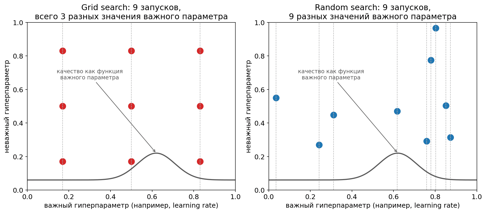
Девять запусков, потраченных двумя способами. По горизонтали — гиперпараметр, от которого качество реально зависит (серая кривая с горбом внизу панели), по вертикали — параметр, который ни на что не влияет. Grid search слева при сетке 3x3 проверяет всего три различных значения важного параметра: вертикальные пунктиры показывают, что запуски идут тройками поверх друг друга по единственной значимой оси. Random search справа за те же девять запусков пробует девять разных значений и попадает близко к горбу. Чем больше в задаче неважных параметров, тем сильнее этот перевес. - Подбирать гиперпараметры по тестовой выборке. Так вы переобучитесь на тест, и его оценка перестанет быть честной. Для подбора нужен validation-набор; тест смотрят один раз, в самом конце.
- Перебирать learning rate по линейной сетке. Он логарифмичен по своей природе: разумно перебирать $10^{-5}, 10^{-4}, 10^{-3}$, а не $0.1, 0.2, 0.3$.
- Менять несколько вещей сразу. Если поменяли одновременно архитектуру, шаг и аугментации, вы не узнаете, что именно дало эффект.
- Не фиксировать seed. Разброс между запусками с одинаковыми настройками бывает сопоставим с разницей между разными настройками; без нескольких запусков и фиксации seed выводы делать нельзя.
- Chinchilla и законы масштабирования — главный гиперпараметр большой модели: как поделить бюджет вычислений между размером и числом токенов.
- RoBERTa — наглядная демонстрация того, что перенастройка обучения даёт больше, чем новая архитектура.
- OPT — как гиперпараметры правят прямо по ходу обучения, когда лосс расходится.
Чем гиперпараметры отличаются от параметров модели?
Параметры (веса, смещения) оптимизируются градиентным спуском при обучении. Гиперпараметры задаются до обучения и задают его условия; градиента по ним нет, поэтому их подбирают перебором с оценкой на валидации.
Почему learning rate — самый важный гиперпараметр?
Слишком большой шаг ведёт к расхождению, слишком маленький — к бесконечно медленной сходимости; ошибка на порядок обесценивает все остальные настройки. Быстро найти разумное значение помогает LR range test.
Как batch size влияет на обучение?
Большой батч даёт точную оценку градиента и лучше грузит GPU, но требует памяти и может ухудшить обобщение. Маленький — шумит, что даёт лёгкий регуляризующий эффект, но требует больше шагов. При изменении батча нужно менять и learning rate.
Что делать, если нужный batch size не помещается в память?
Использовать gradient accumulation: несколько forward/backward подряд с накоплением градиентов и один шаг оптимизатора. Также помогают mixed precision и gradient checkpointing.
Почему random search обычно эффективнее grid search?
Реально важны один-два гиперпараметра из многих. Сетка тратит бюджет на дублирование значений важного параметра, тогда как случайный поиск при том же числе запусков покрывает его гораздо большим числом различных значений.
Чем Optuna лучше случайного поиска?
Она использует байесовскую оптимизацию — выбирает следующую точку с учётом уже полученных результатов — и умеет досрочно прерывать бесперспективные запуски (прунинг), экономя большую часть вычислительного бюджета.
Почему гиперпараметры нельзя подбирать по тестовой выборке?
Многократный выбор по тесту — это его неявная оптимизация: итоговая оценка станет завышенной и перестанет отражать качество на новых данных. Тест используют один раз, после того как все решения приняты по валидации.
-
Data Drift
Data drift (дрейф данных, covariate shift) — изменение распределения входных признаков $P(x)$ во времени: $P_{train}(x) \neq P_{prod}(x)$, при этом зависимость $P(y \mid x)$ остаётся прежней.
Если совсем простыми словами: мир, из которого приходят данные, изменился, а правила игры — нет. Модель училась на одних данных, а в продакшене ей приносят другие: другие пользователи, другие суммы, другие города, другие камеры. Логика "какой ответ правильный" не поменялась — поменялось то, что именно модель видит на входе.
Вы обучили модель предсказывать спрос на товары интернет-магазина. Обучали на данных 2023 года: средний чек 3000 ₽, 70% заказов из Москвы и Питера, покупатели в основном 25–35 лет.
Через год магазин запустил рекламу в регионах и добавил дешёвый сегмент товаров. Теперь: средний чек 1200 ₽, доля Москвы упала до 30%, много покупателей 45+.
Признаки
сумма_заказа,город,возрастстали распределены совсем иначе, чем на обучении. При этом связь осталась той же: чем дороже товар и чем больше просмотров, тем выше вероятность покупки — это правило не изменилось. Просто модель почти не видела на обучении таких клиентов, и в этой области признакового пространства она предсказывает наугад.Модель — это интерполятор: она хорошо работает там, где видела достаточно обучающих примеров, и плохо там, где их почти не было.
- Обучаясь, модель "покрывает" ту область признакового пространства, где лежала обучающая выборка.
- Когда распределение входа смещается, всё больше продовых объектов попадают в области, где обучающих примеров было мало или не было вовсе.
- Формально оптимальное правило $P(y\mid x)$ не изменилось, но выученное моделью приближение этого правила в новой области никто не проверял — там оно может быть каким угодно.
Отсюда важный вывод: качество падает не потому, что модель "устарела логически", а потому что её всё чаще спрашивают о том, чего она не изучала.
Это два разных явления, которые постоянно путают:
- Data drift — сдвиг входа: $P(x)$ меняется, $P(y\mid x)$ — нет. Пришли другие клиенты, но "хороший клиент" определяется по-прежнему.
- Concept drift — сдвиг зависимости: $P(y\mid x)$ меняется. Клиенты те же самые, но теперь то, что раньше считалось признаком надёжности, им уже не является.
Симптом у обоих один — метрики в продакшене падают. А лечение разное: при data drift часто достаточно дособрать данные из новой области и переобучить; при concept drift нужно пересматривать сам таргет и признаки. Подробнее — в следующем вопросе.
Слева data drift: облако входов уезжает из области, на которой модель обучалась (серый прямоугольник); правило разметки то же, но качество на новых $x$ никто не проверял. Справа concept drift: те же самые $x$, но метки переопределились по новому правилу (зелёная линия), и старая граница ошибается на трети объектов. Первое ловится мониторингом $P(x)$ без меток, второе — только по новым размеченным данным. Как детектировать дрейф
Базовая идея у всех методов одна: берём два набора данных и проверяем, "из одного ли они мира".
- Reference window (реперное окно) — эталон: обычно обучающая выборка или последний период, когда модель точно работала хорошо.
- Current window (текущее окно) — свежие продовые данные, например за последнюю неделю.
Дальше по каждому важному признаку сравниваем два распределения статистическим тестом. Если тест говорит "эти выборки слишком непохожи, чтобы быть случайностью" — это сигнал о дрейфе.
Отличаются методы только тем, как именно они измеряют непохожесть двух распределений: по максимальному разрыву CDF (KS), по разнице долей в бинах (PSI), по "расстоянию" между распределениями (дивергенции) или вообще через обучение отдельной модели (C2ST).
Тест Колмогорова-Смирнова (KS-test)
KS-тест сравнивает эмпирические функции распределения (CDF — "какая доля наблюдений меньше данного значения") двух выборок:
$$D = \sup_x |F_{ref}(x) - F_{cur}(x)|$$
То есть строим две накопленные кривые и берём максимальный вертикальный разрыв между ними. Чем больше $D$, тем сильнее различаются распределения. По значению $D$ и размерам выборок считается p-value; если оно ниже порога (обычно 0.05) — это сигнал о дрейфе.
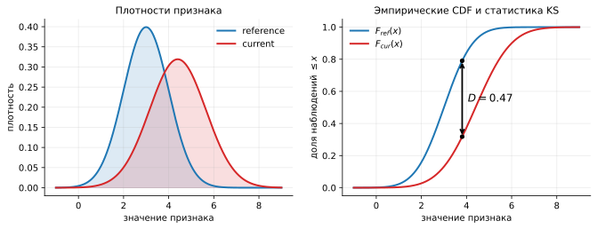
Слева — плотности признака в reference и current: распределение сдвинулось вправо и стало шире. Справа — те же данные в виде накопленных кривых (CDF); статистика KS $D$ — это длина чёрной стрелки, максимальный вертикальный разрыв между кривыми. KS-тест работает только для одномерных непрерывных признаков и очень чувствителен к размеру выборки: на миллионах строк даже мизерная, практически незначимая разница даст "статистически значимый" p-value и завалит вас ложными алертами. Поэтому в продакшене на больших объёмах чаще смотрят на размер эффекта (сам $D$ или PSI), а не на p-value.
Population Stability Index (PSI)
Самый популярный на практике вариант. Признак бьётся на бины (обычно 10 квантилей reference-выборки), и сравниваются доли наблюдений, попавших в каждый бин:
$$PSI = \sum_i (p_i - q_i)\ln\frac{p_i}{q_i}$$
где $p_i$ — доля наблюдений в $i$-м бине у reference, $q_i$ — у current. Каждое слагаемое тем больше, чем сильнее разошлись доли в конкретном бине; сумма даёт одно число по всему признаку.
Готовые пороги интерпретации, которые используют почти везде:
- PSI < 0.1 — дрейфа нет, распределение стабильно;
- 0.1 – 0.25 — умеренный дрейф, стоит присмотреться;
- > 0.25 — сильный дрейф, нужна реакция.
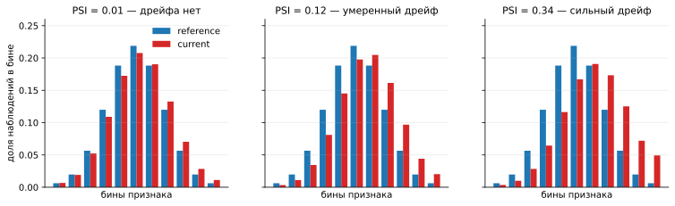
Один и тот же признак, разбитый на 10 бинов: синие столбики — доли в reference, красные — в current. Слева распределения почти совпадают, справа current заметно сдвинут — и PSI растёт вместе с этим расхождением, переходя пороги 0.1 и 0.25. В отличие от p-value, PSI не зависит от размера выборки — это мера величины расхождения, а не статистической значимости. Поэтому его можно считать на любых объёмах, сравнивать между признаками и показывать бизнесу как понятную "температуру" признака. Пришёл PSI из кредитного скоринга, где им десятилетиями следят за стабильностью скоркарт.
Дивергенции распределений
Более общий способ сказать "насколько два распределения различаются" — посчитать между ними дивергенцию (меру расхождения):
- KL-дивергенция $KL(P\|Q) = \sum_i p_i \ln\frac{p_i}{q_i}$ — сколько "лишней" информации мы платим, описывая данные из $P$ моделью $Q$. Асимметрична: $KL(P\|Q) \neq KL(Q\|P)$, поэтому надо явно решать, что считать эталоном. Обращается в бесконечность, если у $Q$ нулевая вероятность там, где у $P$ она ненулевая.
- Jensen-Shannon divergence — симметричная и сглаженная версия KL: сравнивает оба распределения не друг с другом, а со "смесью" $M = \frac{1}{2}(P+Q)$. Ограничена сверху ($\ln 2 \approx 0.69$), поэтому её значение легко интерпретировать и сравнивать между признаками.
- Wasserstein (Earth Mover's) distance — "сколько земли и на какое расстояние надо перевезти, чтобы одна гистограмма превратилась в другую". Главное её достоинство: она осмысленна даже когда распределения не пересекаются, где KL уходит в бесконечность, а JS упирается в максимум.
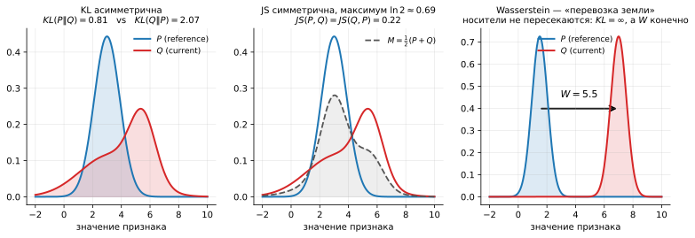
Слева: KL асимметрична — два числа для одной и той же пары распределений. В центре: JS сравнивает $P$ и $Q$ со смесью $M$ (пунктир), симметрична и ограничена сверху $\ln 2$. Справа: распределения вообще не пересекаются — KL бесконечна, а Wasserstein честно измеряет сдвиг как расстояние переноса массы. Категориальные признаки
Для категорий CDF не построишь, поэтому сравнивают частоты категорий в reference и current — обычно chi-squared тестом (или тем же PSI, где бинами выступают сами категории).
Отдельно стоит следить за появлением новых категорий, которых не было на обучении: новый регион, новая модель телефона, новый канал привлечения. Это тот случай, когда тест на частотах может ничего не показать (новая категория пока редкая), а модель споткнётся сразу — она не знает, что с таким значением делать, и энкодер отправит его в "прочее" либо вообще упадёт.
Многомерный и скрытый дрейф
Иногда каждый признак по отдельности выглядит идеально стабильным, а изменилось их совместное распределение. Классический пример: раньше высокий доход встречался в основном у клиентов 40+, а теперь — у 20-летних. Гистограмма дохода прежняя, гистограмма возраста прежняя, а связь между ними перевернулась — и модель, выучившая старую связь, ломается.
Признак-за-признаком такой дрейф не поймать в принципе: нужны методы, смотрящие на все признаки сразу.
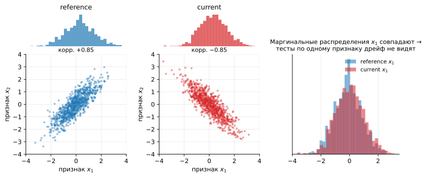
Reference и current: у обоих признаков маргинальные распределения совпадают (справа гистограммы $x_1$ ложатся друг на друга), но корреляция сменила знак с $+0.85$ на $-0.85$. Ни KS, ни PSI по отдельным признакам такого дрейфа не увидят. Красивый и очень практичный трюк: обучаем классификатор отличать reference-выборку от current, где меткой служит сам источник данных ("0 — старые данные, 1 — свежие").
- Если распределения одинаковы, отличить объекты невозможно, и AUC будет около 0.5 — классификатор угадывает наугад.
- Если AUC значимо выше 0.5 — данные различимы, а значит дрейф есть.
- Бонусом feature importance такого классификатора показывает, из-за каких именно признаков он их различает, то есть сразу указывает, куда смотреть.
Для текста и картинок сравнивать сырые токены или пиксели бессмысленно — там "распределение признака" не имеет смысла. Поэтому объекты прогоняют через модель, получают эмбеддинги (векторные представления) и сравнивают уже распределения этих векторов — например, через Maximum Mean Discrepancy (MMD) или тот же C2ST поверх эмбеддингов.
- Батчевый мониторинг: по расписанию (ежедневно или ежечасно) джоба считает метрики дрейфа для каждого признака между reference-окном и свежим окном продовых данных, результат пишется в БД метрик и на дашборд.
- Помимо теста по каждому признаку отдельно считают агрегированный drift score по всему датасету (например, долю признаков с обнаруженным дрейфом) — чтобы был один число-индикатор "всё ли в порядке".
- Готовые инструменты: Evidently AI, NannyML, whylogs, Alibi Detect — считают все перечисленные тесты из коробки и строят отчёты. Свой велосипед писать обычно не нужно.
- Алерты: превышение PSI или низкий p-value триггерит уведомление (например, через Prometheus/Grafana) и/или запуск пайплайна переобучения.
- Логирование: без сохранения сырых входных признаков (а не только предсказаний) детектировать дрейф постфактум невозможно. Это надо закладывать в систему с первого дня — иначе, когда метрики упадут, разбираться будет попросту не в чем.
- Реагировать на любой дрейф. Дрейф входа — это не поломка, а сигнал "посмотри сюда". Признак может уехать, но если он почти не влияет на предсказание, качество не пострадает. Смотрите на дрейф важных признаков (по feature importance) и всегда проверяйте, просела ли реальная метрика.
- Путать дрейф с багом в данных. Резкий скачок распределения чаще означает не изменение мира, а сломанный ETL, смену единиц измерения, новую версию API или пропуски, заполненные нулями. Сначала проверьте пайплайн, потом уже говорите о дрейфе.
- Не учитывать сезонность. Декабрьские данные "дрейфуют" относительно ноябрьских каждый год. Reference-окно нужно выбирать с оглядкой на сезонный цикл.
- Ставить порог по p-value на больших данных. См. ограничение KS-теста: возьмите PSI или метрику размера эффекта, иначе будете тонуть в ложных алертах.
Что такое data drift и чем он отличается от concept drift?
Data drift — изменение распределения входных признаков $P(x)$ при неизменной зависимости $P(y\mid x)$: приходят "другие" объекты, но правило, по которому определяется ответ, прежнее. Concept drift — изменение самой зависимости $P(y\mid x)$.
Почему при data drift падает качество, если оптимальное правило не изменилось?
Модель — приближение истинной зависимости, надёжное только там, где было достаточно обучающих примеров. При сдвиге входа всё больше продовых объектов попадает в области признакового пространства, слабо покрытые обучающей выборкой, где выученное приближение никем не проверялось.
Как работает тест Колмогорова-Смирнова для детекции дрейфа и какие у него ограничения?
KS-test сравнивает эмпирические CDF reference- и current-выборок по статистике $D = \sup_x |F_{ref}(x) - F_{cur}(x)|$ (максимальный разрыв между кривыми); низкий p-value сигнализирует о дрейфе. Работает для одномерных непрерывных признаков и чувствителен к размеру выборки — на больших объёмах ловит статистически значимые, но практически неважные различия.
Что такое PSI и как интерпретировать его значения?
Population Stability Index — метрика сдвига распределения по бинам: $PSI = \sum_i (p_i - q_i)\ln(p_i/q_i)$, где $p_i$, $q_i$ — доли наблюдений в бине для reference и current. PSI < 0.1 — стабильно, 0.1–0.25 — умеренный дрейф, > 0.25 — существенный. В отличие от p-value, не зависит от размера выборки.
Чем отличаются KL, JS и Wasserstein и когда какую брать?
KL-дивергенция асимметрична ($KL(P\|Q) \neq KL(Q\|P)$) и уходит в бесконечность, если у одного распределения нулевая вероятность там, где у другого ненулевая. JS — симметричная сглаженная версия KL через смесь $M=\frac{1}{2}(P+Q)$, ограничена сверху $\ln 2$, поэтому её удобно сравнивать между признаками. Wasserstein измеряет "стоимость переноса массы" и остаётся осмысленным даже для непересекающихся распределений — его берут, когда сдвиг большой или носители разошлись.
Какие есть способы детекции дрейфа для категориальных признаков и для многомерного/скрытого дрейфа?
Для категориальных — Chi-squared тест на частотах категорий плюс отдельный контроль появления новых категорий. Для дрейфа, скрытого в совместном распределении, — Classifier Two-Sample Test (классификатор "reference vs current", AUC > 0.5 означает дрейф) или сравнение распределений эмбеддингов через MMD.
Как мониторинг дрейфа устроен в production и какие инструменты используют?
Батчевый расчёт метрик дрейфа по расписанию для reference vs current окна, агрегированный drift score, алерты при превышении порога, специализированные инструменты (Evidently AI, NannyML, whylogs, Alibi Detect) и обязательное логирование сырых признаков, без которого детекция постфактум невозможна.
Всегда ли обнаруженный дрейф — повод переобучать модель?
Нет. Сначала проверяют, важен ли уехавший признак и просела ли реальная метрика качества, а также исключают баг в данных и сезонность. Иначе можно регулярно переобучать модель "на шум".
-
Concept Drift
Concept drift (дрейф концепта) — изменение самой зависимости между признаками и целевой переменной $P(y\mid x)$ во времени, при этом распределение входа $P(x)$ может оставаться прежним.
Простыми словами: данные приходят те же самые, но правильный ответ на них стал другим. Модель училась по одним правилам, а мир переписал эти правила и никого не предупредил. Объект с точно такими же признаками, который год назад был "хорошим", сегодня оказывается "плохим".
Кредитный скоринг. Модель училась на данных до кризиса и выучила правило: заёмщик с зарплатой 80 тысяч и стажем 3 года почти никогда не уходит в дефолт.
Наступает экономический спад. Приходят ровно такие же заёмщики — та же зарплата, тот же стаж, то же распределение всех признаков (data drift нулевой!). Но теперь каждый пятый из них перестаёт платить, потому что массово сокращают штаты.
Признаки прежние — ответ изменился. Модель уверенно выдаёт "надёжный", потому что честно воспроизводит правило, которое больше не работает.
Ещё примеры: спам-фильтр (спамеры целенаправленно меняют тактику, чтобы обойти модель), рекомендации (сменилась мода — те же пользователи хотят другого), антифрод (мошенники подстраиваются под ваши правила — здесь дрейф вообще враждебный, он создаётся намеренно).
- Data drift: изменился вход. "Пришли другие люди."
- Concept drift: изменилась зависимость. "Пришли те же люди, но правильный ответ про них — другой."
Слева data drift: облако входов уезжает из области обучения при том же правиле. Справа concept drift: те же $x$, но метки переопределены новым правилом (зелёная линия), и старая граница (чёрная) ошибается на трети объектов — оранжевые кружки. 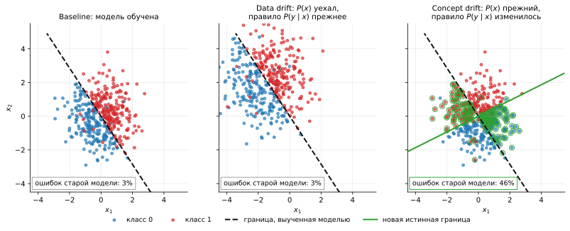
Слева — модель обучена, чёрная пунктирная линия — выученная ею граница между классами, ошибок 3%. В центре — data drift: облако данных уехало в другую область, но правило прежнее, и граница по-прежнему разделяет классы верно. Справа — concept drift: точки те же самые, но метки переопределились по новому правилу (зелёная линия), и старая граница ошибается почти на половине объектов — зелёными кружками обведены её ошибки. Это самая важная иллюстрация темы, потому что она разводит два явления, которые в жизни постоянно смешивают.
- Центральная панель (data drift). Точки переехали в другую часть пространства признаков — гистограммы $x_1$ и $x_2$ изменились бы, и любой тест из прошлого вопроса (KS, PSI) это заметит. Но метки расставлены по тому же самому правилу, поэтому старая граница остаётся правильной, и доля ошибок не выросла. Опасность здесь косвенная: модель работает в области, где почти не обучалась, и её приближение там никем не проверено.
- Правая панель (concept drift). Облако точек не сдвинулось ни на пиксель — ни один тест на распределение входа ничего не покажет. Изменилось правило: то, что раньше относилось к синему классу, теперь красное. Старая граница мгновенно стала неверной, и ошибка подскочила с 3% до почти 50%.
Отсюда и главный практический вывод: мониторинг входных признаков ловит только левый случай. Для правого нужны метки — и с этого начинается вся сложность детекции.
Симптом у обоих один — метрики в продакшене падают. А лечение разное: при data drift обычно достаточно дособрать данные из новой области и переобучить, при concept drift старые размеченные данные становятся частично вредными — они учат правилу, которого больше нет. На практике часто случаются оба сразу, и понимание, какой именно перед вами, определяет, выбрасывать историю или дополнять её.
Типы concept drift
Дрейф различают по тому, как быстро и по какой траектории старое правило сменяется новым. Это не занудная классификация: от типа зависит, что вообще сработает как реакция.
- Sudden (внезапный) — резкая одномоментная смена зависимости. Вступила в силу новая регуляция, начался локдаун, конкурент обрушил цены. Ловится легко (метрика падает обрывом), лечится переобучением на свежих данных.
- Gradual (постепенный) — старая и новая концепции какое-то время чередуются: часть потока уже живёт по новым правилам, часть по старым. Коварен тем, что метрика деградирует рвано, и алерт легко списать на шум.
- Incremental (инкрементальный) — плавный непрерывный переход без чередования. Медленная инфляция сдвигает границу «дорогого» товара. Тихий и опасный: качество сползает так медленно, что порог алерта может не сработать годами.
- Recurring (периодический) — старая концепция со временем возвращается. Сезонность: каждый декабрь работает «предновогоднее» правило.
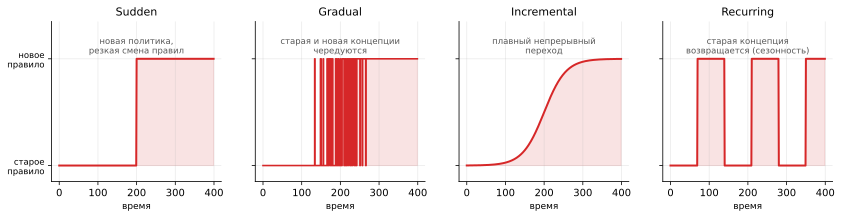
По горизонтали — время, по вертикали — какое правило действует в этот момент. Sudden: обрыв. Gradual: старое и новое правило чередуются, пока новое не вытеснит старое. Incremental: плавный переход. Recurring: правила сменяют друг друга циклически и старое возвращается. Периодический дрейф часто путают с настоящим и запускают переобучение на каждый цикл, а через полгода — обратно. Так модель всё время догоняет прошлое. Правильные ответы другие: добавить сезонные признаки (месяц, день недели, флаг праздников), держать отдельные модели под режимы или обучать на данных за тот же период прошлого года. Признак того, что перед вами именно recurring, — дрейф уже случался раньше с той же периодичностью.
Как детектировать concept drift
Чтобы понять, что правильный ответ изменился, нужно знать правильный ответ. По одним входным признакам concept drift не ловится в принципе — мы только что видели это на картинке: облако точек не сдвинулось.
Поэтому детекция почти всегда идёт с задержкой, а конкретная стратегия зависит от одного вопроса: как быстро к вам приходит разметка. Дальше — четыре подхода, от самого надёжного к самому раннему.
1. Мониторинг по ground truth
Как только становятся известны реальные ответы, считаем качество (accuracy / AUC / MAE) по скользящему окну и сравниваем с baseline «здорового» периода. Просела метрика при стабильном входе — это concept drift.
Самый надёжный способ: он измеряет ровно то, что нас волнует. Но применим, только если метки приходят за часы или дни — клик по рекламе, доставка заказа, отмена подписки.
2. Алгоритмы детекции по потоку ошибок
Эти методы автоматизируют одну идею: следим за частотой ошибок модели и ловим момент, когда она значимо выросла — не случайным скачком, а устойчиво.
- DDM (Drift Detection Method) и EDDM — отслеживают частоту ошибок и расстояние между ними, сигнализируя при выходе за контрольные границы. По духу это контрольные карты Шухарта из управления качеством: пока процесс в пределах $\mu \pm k\sigma$ — всё нормально, вышли за границу — тревога.
- ADWIN (Adaptive Windowing) — держит адаптивное окно данных и режет его надвое, если статистики в двух половинах значимо разошлись; заодно сам решает, какие старые данные пора забыть.
- Page-Hinkley test — классический тест на разладку: копит накопленное отклонение среднего от исторического уровня и срабатывает при превышении порога.
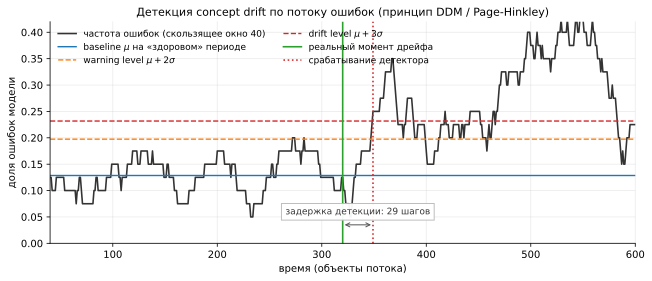
Частота ошибок в скользящем окне. Пока модель в порядке, она колеблется вокруг baseline $\mu$. После реального дрейфа (зелёная линия) ошибка растёт, пересекает warning level $\mu+2\sigma$, а затем drift level $\mu+3\sigma$ — детектор срабатывает. Важное: между реальным дрейфом и сигналом всегда есть задержка, потому что рост нужно ещё отличить от случайного скачка. Два порога вместо одного — типичный приём: warning level ещё не повод переобучать модель, но повод начать копить свежие размеченные данные «на всякий случай». Если поток ошибок дошёл до drift level — данные уже собраны и переобучение можно запустить сразу. Если же ошибка вернулась к норме, накопленный буфер просто выбрасывают как ложную тревогу.
3. Прокси-метрики при отложенных метках
Дефолт по кредиту наступает через год, отток клиента виден через полгода. Ждать реальных меток означает узнать о дрейфе, когда убытки уже понесены. Тогда мониторят косвенные сигналы, доступные сразу:
- уверенность модели — растущая энтропия предсказаний, сползание вероятностей к 0.5: модель «перестала понимать» объекты;
- сдвиг распределения предсказаний — доля предсказанных классов поехала, хотя вход прежний;
- бизнес-метрики — конверсия, отклик, доля одобрений: они часто просаживаются раньше, чем появится честная разметка.
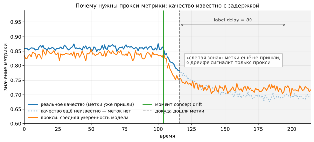
Синяя линия — реальное качество, но известно оно только там, где метки уже пришли; правее серой границы она превращается в пунктир — этих чисел у нас ещё нет. Оранжевая линия — прокси (средняя уверенность модели) — доступна в реальном времени и просаживается сразу после дрейфа. Серая зона и есть «слепая зона» шириной в label delay, где прокси — единственный сигнал. Падение уверенности модели или сдвиг доли предсказанных классов не доказывают дрейф: то же самое даёт баг в фичах, изменившийся трафик или новая версия препроцессинга. Правильная реакция — не переобучать по прокси-алерту, а идти разбираться: проверить пайплайн, посмотреть срезы, при необходимости срочно доразметить кусок свежих данных вручную, чтобы получить настоящую метрику раньше срока.
4. Сегментный анализ
Разбиваем ошибку по срезам: регион, канал привлечения, сегмент клиента, тип устройства, версия приложения.
Дрейф очень часто начинается локально — в одном сегменте качество уже рухнуло, а в среднем по всем данным этого ещё не видно, потому что здоровые сегменты его размывают. Если сегмент даёт 5% трафика и его точность упала на 30 процентных пунктов, агрегированная метрика просядет всего на полтора — легко ниже порога алерта.
Поэтому мониторинг качества по ключевым срезам — не «дополнительная опция», а способ увидеть дрейф на недели раньше.
- Мониторинг: предсказания и (по мере поступления) реальные метки складываются по временным окнам; алерт срабатывает при деградации ключевых метрик за порог.
- Реакция на подтверждённый дрейф: пересматривают признаки и определение таргета, собирают свежие размеченные данные, переобучают модель. Важный нюанс — окно обучения: старые данные отражают устаревшее правило, поэтому их либо отбрасывают, либо взвешивают ниже свежих.
- Безопасная раскатка: новую версию сначала пускают в shadow-режиме (модель считает предсказания параллельно, но на решения не влияет — сравниваем её с текущей на живом трафике) или через canary / A-B тест на части трафика. Только убедившись, что новая модель действительно лучше, переключаются полностью.
- Частое дообучение: для быстро меняющихся доменов (реклама, антифрод, маркетплейсы) вместо редких больших переобучений используют online learning или регулярное дообучение на скользящем окне.
- Автоматизация: пайплайн переобучения держат максимально автоматизированным (CI/CD для моделей + проверки качества перед раскаткой), чтобы реакция на дрейф занимала часы или дни, а не недели. Это и есть основная разница между "у нас модель в проде" и "у нас работающая ML-система".
- Обратная связь модели на данные. Модель сама меняет мир, в котором работает: рекомендации формируют вкусы, отказы в кредитах меняют состав заявок, антифрод-правила меняют поведение мошенников. Часть "дрейфа" — это последствия ваших же решений (feedback loop).
- Смещённая разметка. Если модель отказала клиенту, вы никогда не узнаете, вернул бы он кредит. Реальные метки приходят только по одобренным — и на этой смещённой выборке легко сделать ложный вывод о дрейфе.
- Дрейф ≠ баг. Прежде чем объявлять concept drift, убедитесь, что не сломался пайплайн разметки и что метрика считается на сопоставимых данных.
Чем concept drift отличается от data drift?
Concept drift — изменение зависимости $P(y\mid x)$: вход тот же, но правильный ответ стал другим. Data drift — изменение распределения входа $P(x)$ при неизменном $P(y\mid x)$. Ключевое практическое отличие: data drift видно по входным данным сразу, concept drift не виден без реальных меток.
Какие типы concept drift бывают?
Sudden (резкая одномоментная смена), gradual (чередование старой и новой концепции), incremental (плавный непрерывный переход), recurring (периодическое возвращение старой концепции, например сезонность).
Почему concept drift сложнее детектировать, чем data drift?
Потому что для него нужен таргет: понять, что правильный ответ изменился, можно только сравнив предсказания с реальными метками. Метки приходят с задержкой (label delay), поэтому детекция запаздывает, а на входных признаках дрейф никак не проявляется.
Как детектировать concept drift, если реальные метки приходят с большой задержкой?
Использовать прокси-метрики, доступные сразу: уверенность модели (энтропия предсказаний), сдвиг распределения предсказанных классов, бизнес-метрики (конверсия, отклик). Плюс сегментный анализ ошибки по срезам, чтобы поймать локальный дрейф раньше, чем он проявится в агрегированном качестве.
Какие алгоритмы используются для детекции дрейфа по потоку ошибок модели?
DDM, EDDM, ADWIN, Page-Hinkley test — отслеживают статистики потока ошибок (частоту ошибок, расстояние между ними, накопленное отклонение среднего) и сигнализируют при значимом отклонении от контрольных границ.
Как обычно реагируют на подтверждённый concept drift в production?
Пересматривают признаки и таргет, собирают свежую разметку и переобучают модель, отбрасывая или занижая вес устаревших данных, а новую версию раскатывают через shadow-режим или canary/A-B тест перед полным переключением. В быстро меняющихся доменах — online learning или дообучение на скользящем окне.
Почему в системе с моделью дрейф может возникать сам по себе, без внешних причин?
Из-за обратной связи (feedback loop): модель влияет на мир, в котором работает — рекомендации меняют поведение пользователей, отказы меняют состав заявок, антифрод заставляет мошенников менять тактику. Часть наблюдаемого дрейфа порождена решениями самой модели.
-
Batch Normalization (BN) — слой, который нормализует активации внутри мини-батча: приводит их к нулевому среднему и единичной дисперсии, а затем масштабирует и сдвигает обучаемыми параметрами.
Если совсем простыми словами: каждый слой сети учится на том, что ему подают снизу. Но нижние слои постоянно меняются, и «шкала», в которой приходит сигнал, всё время плывёт — то значения около 0.1, то около 50. BN ставит на входе каждого слоя автоматический регулятор громкости: что бы ни пришло, слой получает сигнал в предсказуемом масштабе. Учиться на стабильной шкале намного проще.
Пусть батч $B=\{x_1,\dots,x_m\}$. Тогда:
Статистики батча $$ \mu_B=\frac{1}{m}\sum_{i=1}^m x_i,\quad \sigma_B^2=\frac{1}{m}\sum_{i=1}^m(x_i-\mu_B)^2 $$
Нормализация $$ \hat{x}_i=\frac{x_i-\mu_B}{\sqrt{\sigma_B^2+\varepsilon}} $$
Масштабирование и сдвиг $$ y_i=\gamma \hat{x}_i+\beta $$
Здесь $\varepsilon$ (порядка $10^{-5}$) защищает от деления на ноль, а $\gamma$ и $\beta$ — обучаемые параметры, по одному на каждый признак (канал).
Ключевая деталь, которую часто упускают: BN усредняет по объектам батча, а не по признакам одного объекта.
- Для полносвязного слоя с $d$ признаками получается $d$ пар $(\mu, \sigma^2)$: каждый признак нормализуется по своему столбцу батча.
- Для свёрточного слоя с $C$ каналами статистики считаются по осям $(N, H, W)$ — то есть по всем объектам батча и всем пространственным позициям. Пар $(\mu, \sigma^2)$ получается ровно $C$, по одной на канал.
Отсюда и название: нормализация «по батчу». Именно эта зависимость от других объектов батча порождает все дальнейшие особенности метода.
Один и тот же тензор $B \times D$ (строки — объекты батча, столбцы — признаки). BatchNorm считает $\mu$ и $\sigma$ по столбцу: для каждого признака усредняет по всем объектам батча. LayerNorm — по строке: для каждого объекта усредняет по всем его признакам. Поэтому BN зависит от состава батча и ломается при малом $B$, а LN — нет. Куб активаций свёрточной сети: по горизонтали — каналы $C$, в глубину — объекты батча $N$, по вертикали — свёрнутые в одну ось пространственные размеры $H, W$. Синим показано, по каким элементам считается одна пара «среднее и дисперсия». BatchNorm берёт один канал и усредняет по всем объектам батча — отсюда его зависимость от размера батча. LayerNorm, наоборот, берёт один объект и усредняет по всем его каналам, поэтому батч ему не нужен вовсе. Instance Norm — один канал одного объекта, Group Norm — группа каналов одного объекта. Пусть в батче из 4 объектов один конкретный признак принимает значения $[10, 12, 14, 16]$.
- $\mu_B = 13$, $\sigma_B^2 = 5$, $\sigma_B \approx 2.24$;
- после нормализации: $[-1.34, -0.45, 0.45, 1.34]$ — среднее 0, дисперсия 1;
- при $\gamma = 2$, $\beta = 1$ выход слоя: $[-1.68, 0.11, 1.89, 3.68]$.
Обратите внимание: значение $10$ превратилось в $-1.34$ не само по себе, а из-за трёх соседей по батчу. Попади оно в другой батч — получилось бы другое число. Это и есть источник как регуляризующего эффекта BN, так и его проблем на маленьких батчах.
Логичный вопрос: мы аккуратно привели активации к $\mathcal{N}(0,1)$ — зачем тут же разрешать их сдвигать и растягивать?
Затем, что жёсткая нормировка отнимает у слоя выразительность. Например, сигмоида в окрестности нуля почти линейна, и загнав туда все активации, мы лишим сеть нелинейности. Пара $(\gamma, \beta)$ возвращает свободу: если оптимальный масштаб не единичный, сеть его выучит. Более того, при $\gamma = \sigma_B$ и $\beta = \mu_B$ слой воспроизводит тождественное преобразование — то есть BN может отменить сам себя, если это выгодно.
Итог: нормализация задаёт хорошую точку старта, а обучаемые параметры оставляют выбор за сетью.
Авторы объясняли эффект борьбой с internal covariate shift — «съезжанием» распределения активаций внутри сети по мере обучения нижних слоёв.
Более поздние работы показали, что дело скорее в другом: BN сглаживает ландшафт функции потерь. Градиенты становятся более предсказуемыми, и обучение перестаёт разваливаться от чуть большего шага. Практические следствия видны сразу:
- можно взять learning rate в разы больше и обучаться быстрее;
- падает чувствительность к инициализации весов;
- глубокие сети вообще становятся обучаемыми — до BN сети глубже двух десятков слоёв тренировались с большим трудом.
На собеседовании корректно упомянуть обе версии: исходную мотивацию (covariate shift) и современное уточнение (сглаживание ландшафта).
- Ускоряет обучение и позволяет использовать больший learning rate
- Снижает чувствительность к инициализации
- Даёт мягкий регуляризующий эффект (может немного снижать переобучение)
Выход BN для объекта зависит от того, с кем этот объект попал в батч. Батчи формируются случайно, значит на каждой эпохе один и тот же объект нормализуется чуть по-разному — это шум, встроенный в обучение.
По механизму это ровно то же, что и dropout: случайное возмущение, из-за которого модель не может выучить признак, работающий только при одном конкретном сочетании значений. Отсюда практическое следствие: при использовании BN обычно нужен меньший dropout, а часто он и вовсе не нужен.
Train vs Inference
Использование BN при обучении и инференсе отличается.
Обучение (train) Инференс (eval) Среднее и дисперсия Считаются на текущем батче Используются накопленные скользящие статистики Параметры $\gamma$, $\beta$ Обновляются через backprop Фиксированы Зависимость от батча Есть (разные батчи $\to$ разная нормализация) Нет (предсказания детерминированы) Накопление статистик Скользящие mean/var накапливаются Применяются накопленные mean/var Представьте продакшен: пользователь прислал один запрос. Считать по нему среднее и дисперсию бессмысленно — дисперсия одного значения равна нулю, и нормализация развалится.
Хуже того, при батчевом инференсе предсказание для объекта зависело бы от того, какие другие запросы оказались рядом. Один и тот же клиент получал бы разные ответы в зависимости от соседей по очереди — неприемлемо.
Поэтому во время обучения BN накапливает скользящие (running) оценки: $\mu_{run} \leftarrow (1-\alpha)\mu_{run} + \alpha\mu_B$, и то же для дисперсии. Это обычное EMA; в PyTorch коэффициент называется
momentumи по умолчанию равен $0.1$. На инференсе используются именно эти накопленные значения — предсказание становится детерминированным и не зависит от соседей.При увеличении
batch_sizeобычно нужно пересматриватьlearning_rate. На практике часто масштабируют шаг по правилу $\sqrt{k}$ при увеличении батча в $k$ раз; на очень больших батчах помогает warm-up.- Маленькие батчи. При
batch_size2–4 оценки $\mu_B$ и $\sigma_B^2$ крайне шумные, и обучение деградирует. Особенно болезненно для детекции и сегментации, где в память влезает мало картинок. Лечится GroupNorm или «замороженным» BN (statistics frozen). - Забытый
model.eval(). Тогда на валидации используются статистики батча вместо накопленных: метрики шумят и зависят от порядка данных. Одна из самых частых практических ошибок. - Переменная длина последовательности. В NLP объекты в батче разной длины и дополняются паддингом; статистики по батчу оказываются бессмысленными. Поэтому в трансформерах используют LayerNorm.
- Расхождение train/eval при дообучении. Если дообучать модель на маленьком датасете, накопленные running-статистики могут не соответствовать новым данным. Часто BN-слои при fine-tuning просто замораживают.
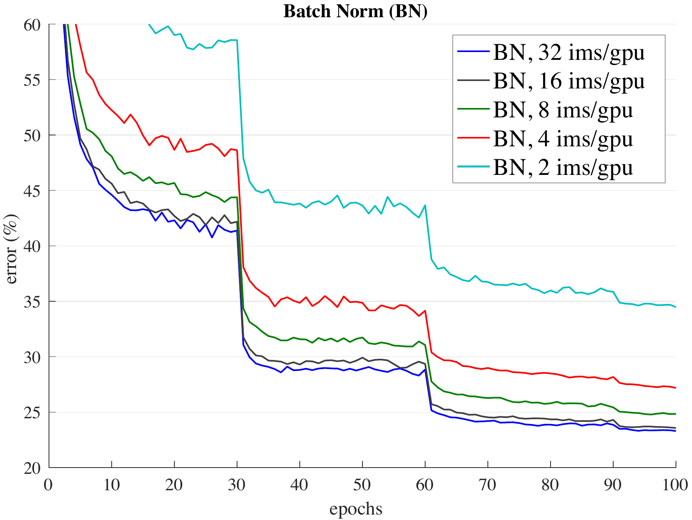
ResNet-50 на ImageNet, рисунок из статьи про Group Normalization: ошибка на валидации в процентах по эпохам при разном числе картинок на GPU. Две ступеньки на 30-й и 60-й эпохах — плановое снижение learning rate. Пока в батче 32 или 16 объектов (синяя и серая кривые), результат почти одинаков, около 23.5%. При 8 объектах (зелёная) уже 24.8%, при 4 (красная) — 27.2%, при 2 (голубая) — 34.5%. Это и есть главная слабость BatchNorm: среднее и дисперсия по крошечному батчу становятся шумными, и качество разваливается. В режиме eval BN — это фиксированное линейное преобразование $y = \frac{\gamma}{\sqrt{\sigma^2_{run}+\varepsilon}}(x - \mu_{run}) + \beta$, то есть просто умножение на константу и сдвиг.
Такое преобразование можно вложить в веса предыдущего свёрточного слоя (BN folding / fusion): пересчитать веса и смещения свёртки один раз, а слой BN из графа убрать. Модель ускоряется на 10–30% без какой-либо потери точности — стандартный шаг при подготовке модели к продакшену (TensorRT, ONNX,
torch.fx).Это частый и любимый вопрос на собеседованиях по ML! Осознай и запомни этот материал особенно тщательно. Особенно любят делать акцент на отличии BatchNorm на train и inference, есть ли там обучаемые и необучаемые параметры. Умей пояснить каждый момент по BatchNorm
- ResNet — BatchNorm в каждом остаточном блоке; связка «свёртка $\to$ BN $\to$ ReLU» стала стандартом на годы.
- Inception v2–v4 — работа, в которой BatchNorm и был предложен.
- Layer Normalization — почему в трансформерах BatchNorm не прижился и его место занял LayerNorm, нормирующий каждый вектор признаков по его собственным координатам.
Что делает Batch Normalization и зачем он нужен?
Нормализует активации внутри мини-батча к нулевому среднему и единичной дисперсии, затем масштабирует их обучаемыми $\gamma$ и $\beta$. Это стабилизирует масштаб сигнала между слоями, позволяет брать больший learning rate и ускоряет обучение.
Какие параметры BN обучаемые, а какие нет?
Обучаемые — $\gamma$ (масштаб) и $\beta$ (сдвиг), по одному на канал; они оптимизируются backprop. Необучаемые — скользящие среднее и дисперсия: они накапливаются по ходу обучения как EMA и используются на инференсе.
По какой оси считаются статистики?
По объектам батча: для полносвязного слоя — по каждому признаку отдельно, для свёрточного — по осям $(N, H, W)$ отдельно для каждого канала. То есть нормализация зависит от других объектов в батче.
Зачем нужны $\gamma$ и $\beta$, если активации уже нормализованы?
Жёсткая нормировка отнимает у слоя выразительность (например, загоняет сигмоиду в почти линейную область). Обучаемые параметры позволяют сети вернуть нужный масштаб и сдвиг, вплоть до полной отмены нормализации.
Как меняется поведение BN при переходе от train к inference?
На train статистики берутся из текущего батча, на inference — накопленные running-оценки. Иначе предсказание для объекта зависело бы от случайных соседей по батчу, а при батче из одного элемента нормализация вообще была бы невозможна.
Почему BN плохо работает при маленьком батче и в трансформерах?
Оценки среднего и дисперсии по 2–4 объектам слишком шумные, а при переменной длине последовательности с паддингом статистики по батчу теряют смысл. В этих случаях применяют GroupNorm или LayerNorm.
Какой регуляризующий эффект даёт BN и откуда он берётся?
Выход объекта зависит от случайного состава батча, что вносит шум — по механизму это близко к dropout. Поэтому вместе с BN обычно требуется меньше дополнительной регуляризации.
Что такое BN folding?
На инференсе BN — фиксированное линейное преобразование, которое можно вложить в веса предыдущей свёртки и удалить сам слой. Это ускоряет модель без потери точности и является стандартным шагом оптимизации перед продакшеном.
-
DropOut
DropOut — метод регуляризации, который во время обучения случайно «выключает» (зануляет) часть нейронов слоя. На каждом шаге маска новая, поэтому сеть каждый раз учится в слегка изменённой конфигурации.
Если совсем простыми словами: представьте команду, где на каждой планёрке случайным образом отсутствует половина сотрудников. Незаменимых в такой команде не остаётся: каждый вынужден разбираться в чужой зоне ответственности, и знания дублируются. Сеть с dropout по той же причине не может поставить всё на один «звёздный» нейрон — он с вероятностью $p$ просто не придёт на работу.
DropOut не имеет обучаемых параметров, но его поведение зависит от режима
train/eval.- На каждом шаге обучения случайно отключается часть нейронов
- Снижается ко-адаптация и зависимость от конкретных признаков
- Обычно улучшается устойчивость и обобщающая способность модели
Ко-адаптация — ситуация, когда нейрон полезен только в паре с другим конкретным нейроном: один выучил «половину» признака, второй компенсирует его ошибку, и по отдельности оба бесполезны.
Такие связки отлично работают на обучающей выборке (они под неё и подогнаны), но хрупки: чуть изменились данные — и вся конструкция рассыпается. Dropout делает их невыгодными: партнёр в любой момент может исчезнуть, поэтому каждому нейрону приходится нести самостоятельный смысл.
Побочный эффект — избыточность представлений: информация дублируется несколькими нейронами, и модель становится устойчивее к шуму.
У слоя из $n$ нейронов существует $2^n$ вариантов маски отключений. Каждый шаг обучения тренирует одну из этих «подсетей», причём все они делят общие веса.
На инференсе, когда включены все нейроны и активации отмасштабированы, сеть работает примерно как усреднение всех этих подсетей. А усреднение большого числа моделей — классический способ снизить разброс, то есть та же идея, что стоит за бэггингом и случайным лесом.
Разница в том, что честный ансамбль из $2^n$ моделей обучать невозможно, а dropout даёт похожий эффект ценой одного обучения.
Три шага обучения с $p=0.5$: на каждом шаге случайная маска выключает свои нейроны, а вместе с ними исчезают и все их связи — сеть каждый раз другая. Активные выходы делятся на $1-p$ (inverted dropout), чтобы ожидание не менялось. На инференсе dropout выключен: работают все нейроны, масштабировать ничего не нужно. Пусть на вход слоя приходит 4 значения $[2, 4, 6, 8]$, их сумма $= 20$, и $p_{drop} = 0.5$.
- Без масштабирования: после отключения половины нейронов сумма в среднем равна $10$ — вдвое меньше, чем ожидает следующий слой. Если так обучать, а на инференсе включить все нейроны, слой внезапно получит вдвое больший сигнал, и предсказания сломаются.
- Inverted dropout (современный вариант): выжившие активации умножают на $\frac{1}{1-p_{drop}} = 2$. Тогда, например, из $[0, 8, 0, 16]$ сумма снова равна $24 \approx 20$ — масштаб в среднем сохраняется, и на инференсе ничего дополнительно делать не нужно.
Правило, которое стоит запомнить: математическое ожидание выхода слоя должно быть одинаковым в train и в eval. Всё масштабирование существует ровно ради этого.
Train vs Inference
В оригинальной работе Srivastava et al., 2014 использовался классический DropOut (масштабирование на инференсе). В современных фреймворках чаще применяют inverted DropOut (масштабирование на обучении).
Обучение (train) Инференс (eval) Классический DropOut Нейрон выключается с вероятностью p, масштабирования нетВсе нейроны активны, активации умножают на 1-pInverted DropOut Нейрон оставляют с вероятностью p, активные масштабируют на1/pВсе нейроны активны, масштабирование не нужно Детерминизм Стохастическое поведение (разный поднабор нейронов на каждом батче) Детерминированное поведение Причина чисто инженерная: инференс должен быть быстрым и простым. В inverted-варианте вся дополнительная арифметика вынесена в обучение, а в проде слой dropout — это буквально «ничего не делать», его можно просто выкинуть из графа.
Осторожно с обозначениями: в
torch.nn.Dropout(p=0.5)параметрp— вероятность выключения, а в оригинальной статье $p$ обозначала вероятность сохранения. Это классический источник путаницы при чтении формул.- Полносвязные слои: $p = 0.5$ — классическое значение из оригинальной статьи, работает по сей день.
- Свёрточные слои: обычный dropout там малоэффективен — соседние пиксели сильно скоррелированы, и зануление отдельных из них информацию не убирает. Используют либо маленькие $p$ (0.1–0.2), либо Dropout2d (SpatialDropout), который выключает канал целиком.
- Трансформеры: $p = 0.1$ на выходах внимания и feed-forward-подслоёв.
- Порядок слоёв: dropout ставят после активации; помещать его между свёрткой и BatchNorm не стоит — это искажает статистики нормализации.
- Никогда не ставят dropout на выходной слой: он бы просто случайно портил готовые ответы.
- DropPath / Stochastic Depth — с вероятностью $p$ выключается весь residual-блок целиком (остаётся только skip-connection). Стандарт для глубоких трансформеров и ConvNeXt.
- DropConnect — зануляются не нейроны, а отдельные веса.
- DropBlock — зануляется связная прямоугольная область карты признаков; вариант для свёрточных сетей, где точечное зануление неэффективно.
Общая идея у всех одна: внести структурированный шум так, чтобы модель не могла опереться на одну конкретную деталь.
- Забыть
model.eval(). Тогда на валидации dropout продолжает выключать нейроны: метрики занижены и меняются от запуска к запуску. Симптом — валидация хуже обучения при явно недообученной модели. - Ставить большой dropout вместе с BatchNorm. Их шум складывается, а на переходе train$\to$eval получается рассогласование статистик — известный эффект «дисгармонии dropout и BN». Практика: либо небольшой $p$, либо dropout только в голове сети, после всех BN-слоёв.
- Лечить дропаутом недообучение. Если разрыва между train и validation нет, dropout только ухудшит обе метрики: регуляризация нужна там, где есть что регуляризовать.
- Ожидать эффекта в трансформерах как в старых CNN. Там основная регуляризация — weight decay в AdamW и аугментации; dropout играет вспомогательную роль с малым $p$.
Это частый и любимый вопрос на собеседованиях по ML! Осознай и запомни этот материал особенно тщательно. Особенно любят делать акцент на отличии DropOut на train и inference, есть ли там обучаемые и необучаемые параметры. Умей пояснить каждый момент по DropOut
- AlexNet — модель, которая ввела dropout в полносвязных слоях и показала его эффект на ImageNet.
- Inception v2–v4 — почему после появления BatchNorm потребность в сильном dropout заметно снизилась.
- DeiT — чем регуляризуют трансформеры зрения вместо dropout: Mixup, CutMix, агрессивная обрезка и дистилляция от CNN.
Что такое Dropout и как он снижает переобучение?
Он случайно зануляет часть нейронов на каждом шаге обучения. Это разрушает ко-адаптацию — связки нейронов, полезные только вместе, — и заставляет сеть распределять информацию избыточно, что улучшает устойчивость к новым данным.
Есть ли у Dropout обучаемые параметры?
Нет. Единственный гиперпараметр — вероятность отключения $p$, задаваемая вручную. Маска на каждом шаге случайна и ничему не обучается.
Как Dropout ведёт себя на train и на inference?
На train часть нейронов выключается случайно, на inference активны все и поведение детерминированное. Чтобы математическое ожидание выхода совпадало в обоих режимах, нужен масштабирующий множитель.
В чём разница между классическим и inverted Dropout?
В классическом активации умножают на $(1-p)$ на инференсе, в inverted — выжившие активации делят на $(1-p)$ во время обучения. Современные фреймворки используют inverted, чтобы инференс оставался максимально простым и быстрым.
Почему Dropout можно считать ансамблем?
Каждая маска задаёт свою подсеть, и обучение перебирает эти подсети, разделяющие общие веса. Инференс с полным набором нейронов приближает усреднение по всем таким подсетям — то есть даёт эффект ансамбля ценой одного обучения.
Почему обычный dropout плохо работает в свёрточных слоях?
Соседние пиксели карты признаков сильно скоррелированы, поэтому зануление отдельных значений почти не убирает информацию. Работают структурные варианты: Dropout2d (канал целиком), DropBlock (связная область).
Почему в трансформерах dropout играет меньшую роль, чем в старых CNN?
Там основную регуляризацию обеспечивают weight decay в AdamW, LayerNorm и аугментации, а слишком большой dropout мешает обучению на длинных последовательностях. Обычно используют $p = 0.1$.
-
Мультиколлинеарность
Мультиколлинеарность — ситуация, когда один признак почти полностью выражается через другие: между признаками есть сильная (почти линейная) зависимость. Из-за неё модели, особенно линейные, оценивают коэффициенты неустойчиво.
Если совсем простыми словами: вы просите модель определить, сколько вклада в цену квартиры даёт «площадь в метрах» и сколько — «площадь в футах». Это одна и та же информация в двух обличьях, и разделить их вклад невозможно: любое сочетание вида «$+1000$ за метры и $-925$ за футы» даёт ровно тот же ответ. Модель вынуждена выбирать наугад, и достаточно чуть-чуть поменять данные, чтобы выбор оказался совсем другим.
Пусть матрица признаков $X \in \mathbb{R}^{m \times n}$ ($m$ объектов, $n$ признаков). Мультиколлинеарность означает, что существует ненулевая линейная комбинация $$ \sum_{i=1}^{n} a_i x^{(i)} \approx \mathbf{0} $$ то есть признаки почти линейно зависимы. Подробнее о линейной зависимости: ссылка.
- $x^{(i)}$ — вектор значений $i$-го признака по всем объектам (длины $m$)
- $a_i$ — коэффициенты линейной комбинации
- $\approx \mathbf{0}$ — комбинация почти равна нулевому вектору в $\mathbb{R}^m$
Читать это стоит так: «сложив признаки с некоторыми весами, можно почти всё взаимно сократить». А значит, в наборе есть избыточная, дублирующая информация.
Два признака: $x_1$ — доход в рублях, $x_2$ — доход в тысячах рублей, то есть $x_2 = x_1/1000$. Истинная зависимость: $y = 0.002 \cdot x_1$.
Модель может выразить её бесконечным числом способов:
- $w = (0.002,\ 0)$;
- $w = (0,\ 2)$;
- $w = (1000,\ -999998)$ — и это тоже даёт ровно тот же ответ!
Все три варианта идеально описывают обучающие данные. Но третий чудовищно неустойчив: погрешность в $x_1$ на $0.001$ изменит предсказание на единицу. Именно такие «взрывные» пары коэффициентов с огромными значениями противоположного знака и есть характерная примета мультиколлинеарности.
Аналитическое решение линейной регрессии — $w = (X^\top X)^{-1}X^\top y$. При почти линейной зависимости признаков матрица $X^\top X$ близка к вырожденной: её определитель почти нулевой, а обратная матрица содержит огромные значения.
Отсюда всё остальное: маленькое изменение $y$ (шум, один новый объект) умножается на эти огромные числа и даёт большое изменение $w$. Формально это называют плохой обусловленностью, и измеряют числом обусловленности — отношением наибольшего собственного значения к наименьшему. Значения выше $\sim 30$ обычно считают тревожными.
Истинная зависимость $y = x_1 + x_2 + \varepsilon$, обучаем регрессию 14 раз на разных реализациях шума. Слева $x_2 \approx x_1$: оценки $(w_1, w_2)$ разбегаются вдоль прямой $w_1 + w_2 = 2$ — сумма весов стабильна, а каждый по отдельности гуляет на порядок. Справа независимые признаки: оценки кучно сидят у истинной точки $(1, 1)$. Мультиколлинеарность не всегда ухудшает качество предсказаний, но делает модель менее устойчивой и затрудняет интерпретацию коэффициентов.
- При сильной корреляции признаков модель «не понимает», какой из них важнее
- Оценки коэффициентов становятся нестабильными
- Растут стандартные ошибки и доверительные интервалы
- Интерпретация ломается: коэффициент может даже сменить знак на противоположный «здравому смыслу»
- Критично для интерпретации. Если вы объясняете бизнесу, что «каждый лишний год стажа даёт +5% к одобрению», а коэффициент нестабилен и меняет знак между запусками, ваши выводы недостоверны. В скоринге, медицине и эконометрике это блокирующая проблема.
- Малозначимо для чистого предсказания. Если нужен только прогноз, а не объяснение, коллинеарные признаки часто можно оставить: точность на новых данных обычно почти не страдает, особенно при регуляризации.
- В нейросетях проблема мягче, но не исчезает. Из-за нелинейности и SGD аналитического обращения матрицы нет, поэтому «взрыв» коэффициентов не происходит напрямую. Но избыточные признаки по-прежнему тратят ёмкость модели, замедляют сходимость (ландшафт становится вытянутым «оврагом») и делают анализ важности признаков ненадёжным.
Обнаружение и решение
Подходы к работе с мультиколлинеарностью делят на этап обнаружения и этап коррекции.
- Матрица корреляций признаков
- Feature importance
- VIF (variance inflation factor)
- Число обусловленности матрицы $X^\top X$
VIF (variance inflation factor, «коэффициент раздувания дисперсии») отвечает на вопрос: насколько хорошо данный признак предсказывается всеми остальными?
$$VIF_i = \frac{1}{1 - R_i^2}$$
где $R_i^2$ — коэффициент детерминации регрессии признака $x_i$ на все остальные признаки (то есть доля его изменчивости, объяснённая остальными).
Как читать значения:
- $VIF = 1$ — признак совсем не связан с остальными;
- $VIF = 5$ означает $R^2 = 0.8$: 80% информации в признаке уже содержится в других;
- $VIF > 10$ ($R^2 > 0.9$) — общепринятый порог «серьёзной проблемы».
Чем VIF лучше матрицы корреляций: попарная корреляция ловит только зависимости пар. Если $x_3 = x_1 + x_2$, все попарные корреляции могут быть умеренными, а зависимость при этом идеальная — VIF её увидит, корреляционная матрица нет.
- Удаление или объединение сильно коррелирующих признаков
- Использование регуляризации
- Применение методов снижения размерности
- Удалить дубликат — когда признаки действительно про одно и то же (доход в рублях и в тысячах, рост в см и в дюймах). Самое честное решение, оно же улучшает интерпретируемость.
- Ridge ($L_2$). Добавка $\lambda I$ к $X^\top X$ буквально «чинит» вырожденность: матрица снова хорошо обусловлена, а коэффициенты коллинеарных признаков делятся между ними примерно поровну вместо «$+1000$ / $-999998$». Работает, когда все признаки нужно сохранить.
- Lasso ($L_1$). Из группы коллинеарных признаков оставит один, остальные занулит. Хорошо для отбора признаков, но выбор внутри группы неустойчив — при другой выборке останется другой признак.
- PCA. Заменяет исходные признаки на ортогональные (по построению некоррелированные) компоненты. Проблема исчезает полностью, но исчезает и интерпретируемость: компоненты — это смеси исходных признаков.
PCA убирает коллинеарность, но выбирает направления по максимальной дисперсии признаков, ничего не зная о целевой переменной. Компонента с наименьшей дисперсией — та, которую отбрасывают первой, — вполне может оказаться именно той, что предсказывает $y$.
Поэтому применять PCA «на всякий случай» перед моделью не стоит; это осознанный размен интерпретируемости и части сигнала на устойчивость и уменьшение размерности.
Что такое мультиколлинеарность и почему она проблема для линейных моделей?
Сильная линейная зависимость между признаками. Матрица $X^\top X$ становится почти вырожденной, обратная к ней — огромной по значениям, и оценки коэффициентов делаются неустойчивыми и плохо интерпретируемыми.
Влияет ли мультиколлинеарность на качество предсказаний?
Не обязательно: предсказания могут оставаться точными. Страдает прежде всего устойчивость и интерпретация — коэффициенты сильно меняются при малом изменении данных и могут иметь «неправильный» знак.
Как регуляризация помогает?
$L_2$ (Ridge) добавляет $\lambda I$ к $X^\top X$, делая её хорошо обусловленной, и распределяет вес между коллинеарными признаками вместо огромных значений противоположного знака. $L_1$ (Lasso) оставляет из группы один признак, но выбор внутри группы неустойчив.
Что такое VIF и как его интерпретировать?
$VIF_i = \frac{1}{1-R_i^2}$, где $R_i^2$ — качество предсказания признака $i$ по всем остальным. $VIF > 10$ (то есть $R^2 > 0.9$) считается признаком серьёзной мультиколлинеарности.
Почему матрицы корреляций недостаточно?
Она видит только попарные зависимости. Если признак выражается через сумму нескольких других, все попарные корреляции могут быть умеренными, а зависимость — полной; такой случай ловит только VIF или анализ обусловленности.
Актуальна ли мультиколлинеарность для нейросетей?
В меньшей степени: аналитического обращения матрицы нет, а нелинейности и регуляризация сглаживают эффект. Но избыточные признаки тратят ёмкость модели, вытягивают ландшафт потерь в «овраг» и делают оценки важности признаков ненадёжными.
В чём риск использования PCA для борьбы с коллинеарностью?
PCA выбирает компоненты по дисперсии признаков, не глядя на целевую переменную, поэтому вместе с шумом можно отбросить и полезный сигнал. Кроме того, теряется интерпретируемость: компоненты — линейные смеси исходных признаков.
-
Свёртка (convolution) — операция, которая сканирует входной объект небольшим окном (ядром, или фильтром) и в каждой позиции вычисляет взвешенную сумму значений под этим окном, формируя карту признаков.
Для изображений обычно используют
Conv2D, для последовательностей —Conv1D, для объёмных данных —Conv3D.Если совсем простыми словами: фильтр — это маленький шаблон, например «вертикальная граница» размером $3\times3$. Мы прикладываем его ко всем местам картинки по очереди и в каждом месте записываем, насколько хорошо он туда подошёл. Получается новая «картинка», где яркие точки означают «здесь есть вертикальная граница». Один фильтр — один тип искомого узора; фильтров в слое десятки, и все они ищут разное.
До обучаемых фильтров ядра свёртки подбирал человек: например, фильтр Собеля — это конкретные девять чисел, которые дают отклик на границу. Свёрточная сеть учит такие ядра сама, но первый её слой получается очень похожим на классические детекторы краёв.
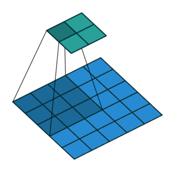
Свертка с padding=0,stride=1: фильтр $3\times3$ перемещается по изображению и формирует карту признаков.Пусть вход имеет форму $(H_{in} \times W_{in} \times C_{in})$. Один фильтр имеет форму $(K_h \times K_w \times C_{in})$ и движется по входу с шагом
stride; по краям можно добавлятьpadding. Если фильтров $C_{out}$, то выход имеет форму $(H_{out} \times W_{out} \times C_{out})$.Самая частая путаница у новичков: фильтр $3\times3$ на самом деле имеет размер $3\times3\times C_{in}$ — он захватывает все входные каналы сразу.
Для RGB-картинки фильтр «$3\times3$» — это на самом деле $3\times3\times3 = 27$ весов. Для слоя, к которому пришло 64 канала, тот же «$3\times3$» — уже $3\times3\times64 = 576$ весов. Двумерность относится только к перемещению окна по высоте и ширине; по глубине фильтр всегда покрывает вход целиком, и потому результат его применения в одной позиции — одно число, а не срез.
kernel_size$(K_h, K_w)$ — размер фильтраstride$(S_h, S_w)$ — шаг окнаpadding— дополнение по краям (valid,same)
Формула размера выхода: $$H_{out} = \left\lfloor \frac{H_{in} + 2P - K_h}{S_h} \right\rfloor + 1$$
Читается так: из доступной длины вычитаем ширину окна, делим на шаг (сколько раз можно сдвинуться) и прибавляем единицу за исходную позицию. Проверка на примере: $H_{in}=32$, $K=3$, $P=1$, $S=1$ даёт $\frac{32+2-3}{1}+1 = 32$ — размер сохранился, это и есть режим
same.Одно и то же ядро $3 \times 3$ на входе $7 \times 7$ в четырёх режимах. Без padding выход $5 \times 5$; padding 1 сохраняет размер $7 \times 7$; stride 2 даёт $3 \times 3$; dilation 2 растягивает ядро до $5 \times 5$ и тоже даёт $3 \times 3$. Один выходной пиксель «видит» область входа — receptive field. Каждая свёртка $3 \times 3$ добавляет к нему по 2: $3 \to 5 \to 7$. Pooling удваивает шаг, и за ним поле растёт вдвое быстрее: с одним pooling 2 после первой свёртки та же глубина даёт 12 пикселей вместо 7. На один фильтр: $$ K_h \cdot K_w \cdot C_{in} + 1 $$ (включая
bias).Для всего слоя: $$ (K_h \cdot K_w \cdot C_{in} + 1)\cdot C_{out} $$
Обратите внимание: в формуле нет $H$ и $W$. Число параметров не зависит от размера картинки — одна и та же свёртка применима и к $32\times32$, и к $4000\times3000$.
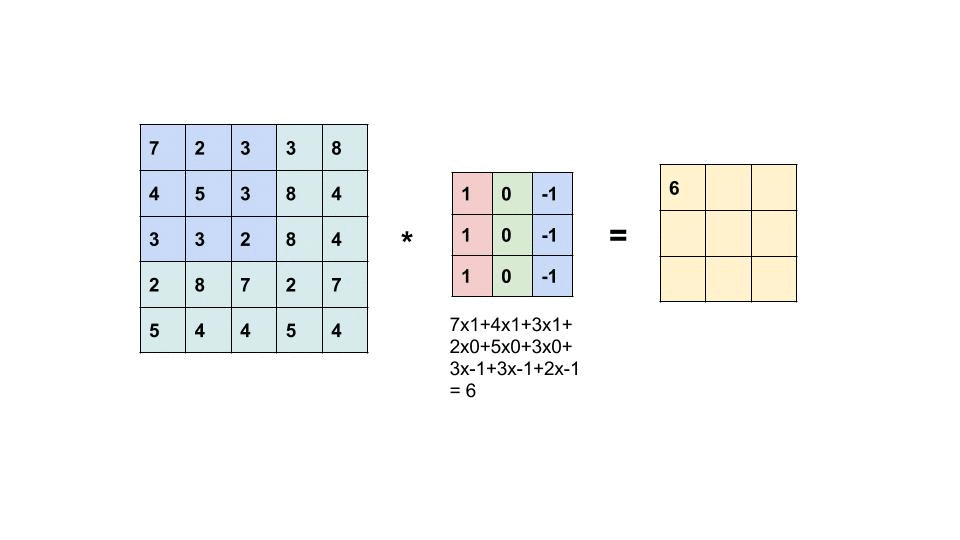
Применение свертки: по всем позициям окна вычисляется взвешенная сумма. - Вход: $32 \times 32 \times 3$
- Conv2D: ядро $5 \times 5$,
stride=1,padding=2(same), $C_{out}=64$ - Выход: $32 \times 32 \times 64$
- Параметры: на один фильтр $5\cdot5\cdot3+1=76$, всего $76\cdot64=4864$
Сравним на том же примере. Полносвязный слой, отображающий $32\times32\times3 = 3072$ входа в $32\times32\times64 = 65\,536$ выходов, потребовал бы
$$3072 \cdot 65\,536 \approx 201\ \text{млн}$$
параметров. Свёртка делает то же преобразование размерностей за 4864 параметра — примерно в 41 000 раз меньше.
Экономия берётся из двух ограничений, которые мы наложили сознательно: локальность (каждый выход смотрит лишь на окно $5\times5$, а не на всю картинку) и разделение весов (одни и те же 25 чисел используются во всех позициях). Для изображений оба ограничения соответствуют реальности, поэтому качество от них не страдает — наоборот, растёт.
- Локальные шаблоны (края, текстуры) выделяются малыми фильтрами
- Параметры переиспользуются по всем позициям, поэтому их меньше, чем в полносвязных слоях
- Несколько фильтров дают несколько карт признаков
Второе важное следствие разделения весов: если объект сдвинулся на 10 пикселей вправо, отклик фильтра сдвинется ровно так же — на 10 пикселей вправо, но никуда не пропадёт.
Полносвязному слою пришлось бы учить распознавание кошки в левом верхнем углу и в правом нижнем как две разные задачи, каждую со своими весами и своими примерами в обучающей выборке. Свёртке достаточно выучить признак один раз, и он автоматически работает во всех позициях.
Это свойство называют эквивариантностью к сдвигу: сдвиг входа даёт такой же сдвиг выхода. Полную инвариантность (когда выход вообще не меняется) добавляют уже pooling и глобальное усреднение в конце сети.
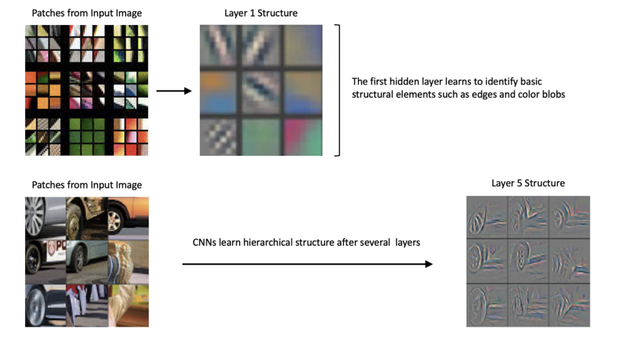
Извлечение признаков с помощью свертки: нижние слои реагируют на края и цветовые переходы, более глубокие — на текстуры и части объектов. Один фильтр $3\times3$ смотрит лишь на 9 пикселей. Как же сеть распознаёт объект целиком?
За счёт накопления глубины. Каждый следующий слой смотрит на выходы предыдущего, поэтому его «зона видимости» в исходной картинке расширяется:
- после 1-го слоя $3\times3$: рецептивное поле $3\times3$;
- после 2-го: $5\times5$;
- после 3-го: $7\times7$;
- после $n$ слоёв $3\times3$ со
stride=1: $(2n+1) \times (2n+1)$.
Отсюда практический вывод, ставший стандартом после VGG: два слоя $3\times3$ дают то же рецептивное поле, что один $5\times5$, но требуют меньше параметров ($2 \cdot 9 = 18$ против $25$ на канал) и содержат две нелинейности вместо одной. Поэтому большие ядра почти вышли из употребления, а сети стали глубокими и узкими. Ускоряет рост рецептивного поля также
stride > 1и pooling.Кажется, что окно $1\times1$ ничего не делает — оно ведь смотрит на один пиксель. Но помните: фильтр покрывает все каналы. Значит, свёртка $1\times1$ — это полносвязный слой, применённый к вектору каналов в каждой позиции независимо.
Зачем это нужно:
- менять число каналов, не трогая пространственный размер: сжать 256 каналов до 64 перед дорогой свёрткой $3\times3$ (bottleneck в ResNet, Inception) и тем самым сократить вычисления в разы;
- смешивать информацию между каналами, добавляя нелинейность почти бесплатно.
Свёртки существуют в разных размерностях:
Conv1D,Conv2D,Conv3D. Принципы одинаковые, меняется только размерность данных: Conv1D сканирует текст или временной ряд по одной оси, Conv3D — видео или томографию по трём.- Строго говоря, это корреляция, а не свёртка. Математическая свёртка требует разворота ядра на 180°; фреймворки этого не делают. Поскольку веса всё равно обучаются, разницы для результата нет — но знать различие полезно.
- Padding нулями искажает края. У граничных пикселей часть окна попадает на искусственные нули, поэтому статистики на краю отличаются от центра. Иногда используют отражающий или реплицирующий padding.
- Свёртка не инвариантна к повороту и масштабу. Инвариантность есть только к сдвигу. Устойчивость к поворотам приходится добавлять аугментациями.
Свёрточные архитектуры — это, по сути, история о том, как менялся один и тот же слой:
- AlexNet — крупные ядра $11\times11$ в первом слое, с которых начиналось обучение свёрточных сетей.
- VGG — почему три свёртки $3\times3$ выгоднее одной $7\times7$ при равном рецептивном поле: меньше весов, больше нелинейностей.
- GoogLeNet / Inception — свёртки $1\times1$ как способ удешевить канальную размерность.
- MobileNet — depthwise separable свёртка: разложение обычной свёртки на пространственную и канальную части.
- ConvNeXt — свёрточная сеть, переписанная по рецептам трансформеров.
Что такое свёртка и в чём её ключевая идея по сравнению с полносвязным слоем?
Свёртка сканирует вход небольшим фильтром, вычисляя взвешенную сумму в каждом окне. Ключевые идеи — локальность (окно вместо всего входа) и разделение весов: один фильтр применяется ко всем позициям, резко сокращая число параметров.
Как вычислить число параметров в слое Conv2D?
На один фильтр $K_h \cdot K_w \cdot C_{in} + 1$ с учётом bias, на весь слой — умножить на $C_{out}$. Размер изображения в формулу не входит.
Какую форму на самом деле имеет фильтр $3\times3$?
$3\times3\times C_{in}$: он покрывает все входные каналы сразу, и результат его применения в одной позиции — одно число. Двумерность относится только к перемещению окна по высоте и ширине.
Что означают stride и padding и как считать размер выхода?
Stride — шаг окна: чем он больше, тем меньше выход. Padding добавляет обрамление по краям. Размер выхода: $\left\lfloor \frac{H_{in} + 2P - K}{S} \right\rfloor + 1$; режим
sameподбирает $P$ так, чтобы размер сохранился.Что такое рецептивное поле и как оно растёт?
Область исходного изображения, влияющая на один выходной элемент. С каждым слоем $3\times3$ (stride 1) оно растёт на 2 по каждой стороне; stride и pooling ускоряют рост. Поэтому глубокие слои «видят» объект целиком, хотя каждый фильтр мал.
Почему два слоя $3\times3$ предпочтительнее одного $5\times5$?
У них одинаковое рецептивное поле, но меньше параметров ($18$ против $25$ на канал) и две нелинейности вместо одной, что повышает выразительность. Именно поэтому современные сети глубокие и используют маленькие ядра.
Зачем нужна свёртка $1\times1$?
Она работает как полносвязный слой по оси каналов в каждой позиции: меняет число каналов и смешивает их между собой. Используется в bottleneck-блоках, чтобы удешевить последующие свёртки.
Почему свёртки хорошо подходят для изображений?
Изображения локальны (соседние пиксели связаны) и эквивариантны к сдвигу (объект может оказаться где угодно). Свёртка использует оба свойства, тогда как полносвязный слой вынужден учить каждую позицию отдельно.
-
Pooling
Pooling — операция понижения пространственного разрешения карты признаков: значения в локальных окнах агрегируются (берётся максимум или среднее), из-за чего тензор уменьшается, а вычисления дешевеют.
Если совсем простыми словами: свёртка ответила на вопрос «есть ли здесь вертикальная граница?» в каждой из тысяч точек. Такая детальность избыточна — для распознавания кошки не важно, в пикселе 104 или 106 нашлось ухо. Pooling огрубляет ответ до «в этом районе граница есть», выбрасывая точные координаты и оставляя факт наличия признака.
Для входа $H \times W \times C$ pooling применяется независимо в каждом канале — каналы не смешиваются и их число не меняется. Обычные параметры:
kernel_size— размер окнаstride— шаг окнаpadding— дополнение по краям
Чаще всего используют
MaxPool(берём максимум) иAvgPool(берём среднее). Стандартная конфигурация — окно $2\times2$ соstride=2: она уменьшает высоту и ширину ровно вдвое, а число элементов — в четыре раза.- Снизить размер признаков и память
- Повысить устойчивость к небольшим сдвигам и шуму
- Выделить наиболее значимые активации
- Быстрее увеличить рецептивное поле: после каждого pooling следующий слой «видит» вдвое большую область исходной картинки
Окно $2\times2$ с шагом $2$ проходит по карте признаков $6\times6$; из каждого окна получается одно число: максимум (max pooling) или среднее (average pooling). На выходе карта $3\times3$ — в четыре раза меньше. Пусть вход $32 \times 32 \times 64$, применим
MaxPool2Dсkernel_size=2,stride=2. Тогда выход: $$ 16 \times 16 \times 64 $$ Число каналов не меняется, уменьшаются только пространственные размеры.Возьмём окно $2\times2$ со значениями $$\begin{pmatrix} 1 & 8 \\ 3 & 2\end{pmatrix}$$ MaxPool вернёт $8$.
Теперь сдвинем картинку на один пиксель, и пусть в окне окажется $$\begin{pmatrix} 8 & 2 \\ 1 & 4\end{pmatrix}$$ MaxPool снова вернёт $8$ — выход не изменился, хотя вход изменился полностью.
Вот и весь механизм: пока сильнейший отклик остаётся внутри того же окна, результат один и тот же. Сеть перестаёт различать сдвиги в пределах окна — ровно то, что нужно для классификации, где важно наличие признака, а не его точный адрес.
- Max Pooling — сохраняет наиболее сильный отклик в окне
- Average Pooling — усредняет значения в окне
- Global Average Pooling (GAP) — усреднение по всей карте признаков каждого канала
Разница в том, какой вопрос вы задаёте карте признаков.
- Max отвечает «есть ли здесь признак?». Один сильный отклик доминирует, слабый фон игнорируется. Поэтому max лучше подходит для распознавания: наличие уха важнее, чем то, что вокруг него пустота.
- Average отвечает «насколько в среднем выражен признак в этой области». Он не теряет слабые сигналы, но и размывает сильные: единственный яркий отклик среди трёх нулей превратится в четверть своей величины.
Исторически в свёрточных сетях победил MaxPool. Average сохранился главным образом в виде GAP в конце сети, а также там, где важна плавность (некоторые генеративные и сегментационные архитектуры).
GAP усредняет всю карту признаков каждого канала до одного числа: тензор $H \times W \times C$ превращается в вектор длины $C$.
Сравните с классической альтернативой — «вытянуть в вектор и подать в полносвязный слой» (как в AlexNet и VGG):
- Flatten + Dense: карта $7\times7\times512$ разворачивается в $25\,088$ чисел, и слой на 4096 нейронов стоит 103 млн параметров — это была основная масса весов всей сети и главный источник переобучения.
- GAP: те же $7\times7\times512$ превращаются в 512 чисел, ноль обучаемых параметров, а классификатор поверх — всего $512 \times n_{classes}$.
Бонусом GAP делает сеть независимой от размера входа: картинка любого разрешения даст вектор длины $C$. Именно поэтому все современные архитектуры (ResNet, EfficientNet, ConvNeXt) заканчиваются GAP, а не Flatten.
Pooling не имеет обучаемых параметров (в отличие от свёртки), но сильно влияет на информационную ёмкость признаков: слишком агрессивный pooling может удалить полезные детали.
Он необратимо теряет точные координаты, и это плохо там, где координаты и есть ответ:
- сегментация — нужна метка для каждого пикселя, поэтому в U-Net потерянные детали возвращают через skip-connections из энкодера в декодер;
- детекция — нужны точные рамки объектов, поэтому используют признаки нескольких масштабов (FPN);
- мелкие объекты — после нескольких pooling они могут исчезнуть с карты признаков совсем.
Есть и альтернатива самому pooling: свёртка со
stride=2уменьшает размер точно так же, но делает это обучаемым образом — сеть сама решает, что именно выбросить. Многие современные архитектуры (ResNet начиная с блоков downsample, ConvNeXt) идут именно по этому пути и обычного MaxPool почти не используют.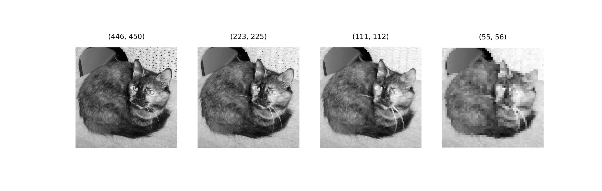
Пример max pooling: из каждого окна выбирается максимальное значение, картинка становится вдвое меньше по каждой стороне, а крупные структуры сохраняются. Обучаемых параметров у pooling нет, но градиент через него проходить обязан.
- MaxPool: весь градиент уходит только тому элементу, который оказался максимумом; остальным достаётся ноль. Для этого при прямом проходе запоминают позиции максимумов.
- AvgPool: градиент делится поровну между всеми элементами окна.
Отсюда попутное наблюдение: MaxPool разрежён по градиенту — на каждом шаге обучаются лишь «победившие» позиции.
Пулинг — хороший пример слоя, от которого архитектуры постепенно уходили:
- VGG — классическая схема «блок свёрток $\to$ max-pooling».
- GoogLeNet — global average pooling вместо огромных полносвязных слоёв в конце сети.
- ResNet — типичная схема современной сети: max pooling один раз в стеме, дальше понижение разрешения свёртками со stride, а в конце снова global average pooling.
Что такое pooling и зачем он нужен?
Операция агрегации значений в локальных окнах, уменьшающая пространственный размер карты признаков. Она снижает вычислительную стоимость и память, ускоряет рост рецептивного поля и добавляет устойчивость к небольшим сдвигам.
Чем Max Pooling отличается от Average Pooling?
Max берёт максимум и отвечает на вопрос «есть ли признак», игнорируя фон; average усредняет и отвечает «насколько он выражен в среднем», но размывает сильные отклики. В классификации исторически преобладает max.
Как pooling даёт инвариантность к сдвигу?
Пока сильнейший отклик остаётся внутри того же окна, выход MaxPool не меняется. Сдвиги в пределах окна перестают влиять на результат — сеть реагирует на наличие признака, а не на его точное положение.
Что такое Global Average Pooling и почему он вытеснил Flatten + Dense?
GAP усредняет карту каждого канала до одного числа, превращая $H\times W\times C$ в вектор длины $C$ без обучаемых параметров. Это убирает десятки миллионов весов полносвязной головы, снижает переобучение и делает сеть нечувствительной к размеру входа.
Есть ли у pooling обучаемые параметры и как через него идёт градиент?
Параметров нет. У MaxPool градиент целиком уходит элементу-максимуму (его позицию запоминают на forward), у AvgPool — делится поровну между всеми элементами окна.
Когда pooling вреден и чем его заменяют?
В сегментации, детекции и при мелких объектах он безвозвратно теряет точные координаты. Решения: skip-connections (U-Net), многомасштабные признаки (FPN) или замена pooling на свёртку со
stride=2, где уменьшение размера становится обучаемым.
-
Взрыв и затухание градиентов — две зеркальные проблемы обучения глубоких сетей: градиенты по весам становятся либо чудовищно большими (взрыв), либо почти нулевыми (затухание). В первом случае обучение разваливается, во втором — не идёт вовсе.
Если совсем простыми словами: сигнал об ошибке передаётся от последнего слоя к первому по цепочке, как испорченный телефон. Если каждый участник цепочки говорит чуть тише предыдущего, до начала не дойдёт ничего — первые слои не узнают, что они ошиблись. Если каждый говорит чуть громче, к началу цепочки дойдёт оглушительный крик — веса первых слоёв улетят в бесконечность.
В backprop градиенты вычисляются по цепному правилу, то есть перемножаются по всем слоям:
- Взрыв градиентов: если множители часто больше 1, произведение растёт экспоненциально;
- Затухание градиентов: если множители меньше 1, произведение экспоненциально убывает.
Обратите внимание: проблема именно в умножении, а не в сложении. Складывались бы — ничего страшного не происходило бы.
Пусть в сети 50 слоёв, и типичный множитель на слой равен $c$.
- $c = 0.8$: $0.8^{50} \approx 1.4 \cdot 10^{-5}$. Градиент в первом слое в 70 000 раз меньше, чем в последнем: при разумном learning rate первые слои фактически заморожены.
- $c = 1.2$: $1.2^{50} \approx 9100$. Градиент в первом слое в девять тысяч раз больше — один шаг оптимизации выбрасывает веса в бессмысленную область, а лосс превращается в
NaN. - $c = 1.0$: всё в порядке.
Мораль: устойчив только очень узкий коридор вокруг единицы, и чем глубже сеть, тем он уже. Именно поэтому до появления нормализации и skip-connections сети глубже 20 слоёв обучались с огромным трудом.
Множитель на слое складывается из двух частей:
- производная активации. У sigmoid она не превышает $0.25$ — то есть каждый слой гарантированно уменьшает градиент минимум вчетверо. У tanh максимум равен 1, но лишь в самой окрестности нуля; при насыщении она стремится к нулю. У ReLU производная равна ровно 1 в положительной области — она ничего не портит, и в этом её главная заслуга.
- норма матрицы весов. Если веса в среднем малы, градиент сжимается; если велики — растягивается. Отсюда и требования к инициализации: He и Xavier подбирают дисперсию так, чтобы этот множитель был близок к единице.
Десять слоёв, ось Y логарифмическая, единица отмечена пунктиром. Градиент идёт от слоя 10 к слою 1 и на каждом шаге умножается на локальный множитель. Множитель $\approx 0.3$ (сигмоида) --- столбики уходят вниз, до входа доходит $10^{-5}$. Множитель $\approx 1.6$ (большие веса) --- столбики растут вверх, к первому слою норма в сотни раз больше. ReLU с инициализацией He даёт множитель около единицы: норма держится у пунктира. - Очень глубокие архитектуры
- Проблемы с предобработкой входных данных (ненормализованные признаки сразу дают перекос масштабов)
- Выбор активаций (sigmoid/tanh чаще дают затухание, чем ReLU-подобные)
- Неудачная инициализация весов
- Рекуррентные сети: там один и тот же слой применяется десятки раз подряд, поэтому один и тот же множитель возводится в большую степень
- Взрыв: нормы градиентов огромные, веса «разлетаются»,
lossстановитсяNaN/Inf - Затухание: нормы около нуля, обновления почти прекращаются, обучаются только последние слои
Проблемы диагностируются по-разному, и лечатся тоже по-разному.
Взрыв заметить легко: лосс внезапно подскакивает или превращается в
NaN, обычно за считанные шаги. Виноват чаще всего слишком большой learning rate или отсутствующее ограничение градиента.Затухание гораздо коварнее: ничего не ломается, обучение просто идёт «как-то вяло». Лосс медленно снижается и рано выходит на плато, а метрики застревают. Внешне это неотличимо от недообучения — модель выглядит слабой, хотя на самом деле её нижние слои просто не получают сигнала. Проверяется прямо: залогировать нормы градиентов по слоям и посмотреть, отличаются ли они на порядки между первым и последним.
- Логгировать нормы градиентов по слоям
- Использовать gradient clipping
- Применять корректную инициализацию весов (He, Xavier)
- Использовать Batch/Layer Normalization
- Выбирать подходящие активации (ReLU, LeakyReLU, ELU)
- Добавлять skip connections (ResNet, U-Net, трансформеры)
Простое и надёжное лекарство именно от взрыва. Считаем норму всего вектора градиентов и, если она превысила порог, масштабируем весь вектор:
$$g \leftarrow g \cdot \frac{\text{clip\_norm}}{\|g\|}, \qquad \text{если } \|g\| > \text{clip\_norm}$$
Важная деталь: направление сохраняется, урезается только длина. Мы не искажаем информацию о том, куда идти, — лишь запрещаем сделать безумно большой шаг.
В PyTorch:
torch.nn.utils.clip_grad_norm_(model.parameters(), max_norm=1.0)— вызывается междуloss.backward()иoptimizer.step(). Типичное значение порога — от $0.5$ до $5$; это стандартная практика при обучении RNN и больших трансформеров.Пусть блок вычисляет $y = F(x) + x$. Тогда производная по входу равна $$\frac{\partial y}{\partial x} = \frac{\partial F}{\partial x} + 1$$
Ключевое здесь — единица. Даже если $\frac{\partial F}{\partial x}$ близка к нулю (блок «умер»), множитель не обнуляется, а остаётся равным примерно 1. Произведение таких множителей по всем слоям больше не убывает экспоненциально: у градиента появляется прямая «магистраль» от последнего слоя к первому.
Именно поэтому ResNet сделал обучаемыми сети из сотен слоёв — и почему та же конструкция стоит в каждом блоке трансформера.
- ResNet — остаточные связи как решение проблемы затухания на глубине.
- Pre-Norm и Post-Norm в LLM — Pre-LN и сквозной путь для градиента, без которых трансформеры на 100+ слоёв не обучаются.
- OPT — как выглядит «взрыв» лосса на реальном прогоне и что с ним делают.
Почему в глубоких сетях возникают затухание и взрыв градиентов?
На обратном проходе градиенты перемножаются по всем слоям. Если типичный множитель меньше единицы, произведение экспоненциально убывает; если больше — экспоненциально растёт. Устойчивым остаётся только узкий коридор вокруг единицы.
Из чего складывается множитель на одном слое?
Из производной функции активации и нормы матрицы весов. Поэтому лечение идёт по обоим направлениям: активации без насыщения (ReLU) и инициализация, подобранная так, чтобы масштаб сигнала сохранялся.
Какие активации особенно склонны к затуханию?
Sigmoid (производная не больше $0.25$) и tanh при насыщении. ReLU в положительной области имеет производную ровно 1 и градиент не ослабляет, поэтому вытеснила их из скрытых слоёв.
Что такое gradient clipping и почему он не портит обучение?
Ограничение нормы градиента: при превышении порога вектор масштабируется. Направление шага сохраняется, урезается только длина, поэтому информация о том, куда двигаться, не теряется. Стандартная практика для RNN и больших трансформеров.
Как skip connections помогают с затуханием?
При $y = F(x) + x$ производная по входу равна $\frac{\partial F}{\partial x} + 1$, и эта единица не даёт множителю обнулиться. Градиент получает прямой путь к ранним слоям, а произведение по глубине перестаёт затухать экспоненциально.
Почему рекуррентные сети особенно уязвимы?
В них один и тот же слой применяется на каждом временном шаге, поэтому один и тот же множитель возводится в степень длины последовательности. На 100 шагах даже небольшое отклонение от единицы даёт катастрофический эффект — отсюда LSTM, GRU и обязательный клиппинг.
Как отличить затухание градиентов от обычного недообучения?
По нормам градиентов, залогированным послойно: при затухании они различаются на порядки между первыми и последними слоями. Внешне же оба случая выглядят одинаково — медленное обучение и раннее плато.
-
Остаточная связь (skip connection, residual connection) — соединение, по которому вход блока передаётся прямо на его выход, минуя промежуточные преобразования.
Если совсем простыми словами: вместо того чтобы просить слой «перерисовать картину заново», мы просим его «дорисовать поправку к тому, что уже есть». Если поправка не нужна, слой может выдать ноль — и картина пройдёт дальше нетронутой. Именно эта возможность «ничего не делать» и делает очень глубокие сети обучаемыми.
Классический пример — ResNet: $$ y = F(x) + x $$ где $F(x)$ — преобразование входа несколькими слоями (например,
Conv + BN + ReLU).Сеть учит не саму целевую функцию, а остаток $F(x) = y - x$, что облегчает оптимизацию и помогает бороться с затуханием и взрывом градиентов в глубоких сетях.
Виды skip connections:
- Суммирование (residual): $y = F(x) + x$
- Конкатенация (dense): $y = [F(x), x]$
До ResNet наблюдался парадокс. Сеть из 56 слоёв работала хуже, чем сеть из 20 слоёв, — причём хуже и на тесте, и на обучающей выборке. Значит, дело было не в переобучении: сеть просто не могла обучиться.
Парадоксально это потому, что 56-слойная сеть заведомо способна повторить 20-слойную: достаточно, чтобы 36 лишних слоёв научились тождественному отображению $y = x$. Раз результат хуже, значит градиентный спуск такое решение не находит.
Причина: выучить тождественное отображение через стопку
Conv + BN + ReLUна удивление трудно — надо подобрать веса очень точно. Идея ResNet снимает проблему одним движением: тождественность встроена в архитектуру, а слой должен лишь выучить отклонение от неё. Не нужна поправка — обнули $F$, и это легко: обнулённые веса как раз то, к чему тянет weight decay.Задача: превратить вектор $x = [1.0,\ 2.0,\ 3.0]$ в $y = [1.1,\ 2.0,\ 2.9]$.
- Без skip: блок обязан воспроизвести целиком все три числа — научиться и «переписывать» $1.0 \to 1.1$, и точно сохранять $2.0 \to 2.0$.
- Со skip: блоку нужно выдать всего лишь $F(x) = [0.1,\ 0,\ -0.1]$ — маленькую поправку около нуля, а всё остальное перенесётся само.
Второе радикально проще: искомая функция мала по величине, близка к нулю и не требует точного воспроизведения входа. По той же причине последний слой residual-блока часто инициализируют нулями — тогда в начале обучения блок в точности тождественен, и глубокая сеть стартует как мелкая, постепенно «включая» блоки.
- Облегчают обучение глубоких сетей
- Снижают риск затухания и взрыва градиентов
- Позволяют переиспользовать ранние признаки
- Делают ландшафт функции потерь более гладким
Блок учит поправку $F(x)$, а вход идёт в обход и прибавляется: $y = x + F(x)$. При обратном проходе $\partial y/\partial x = I + \partial F/\partial x$ — единица проходит через skip напрямую. График: без skip-связей норма градиента затухает по глубине геометрически, со skip — остаётся почти постоянной. 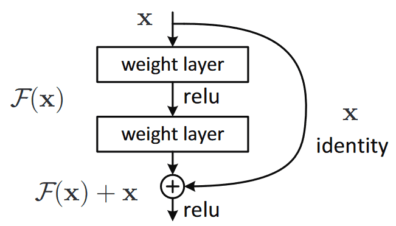
Блок ResNet: вход обходит два свёрточных слоя и складывается с их выходом. Именно это сложение и даёт градиенту прямой путь назад. 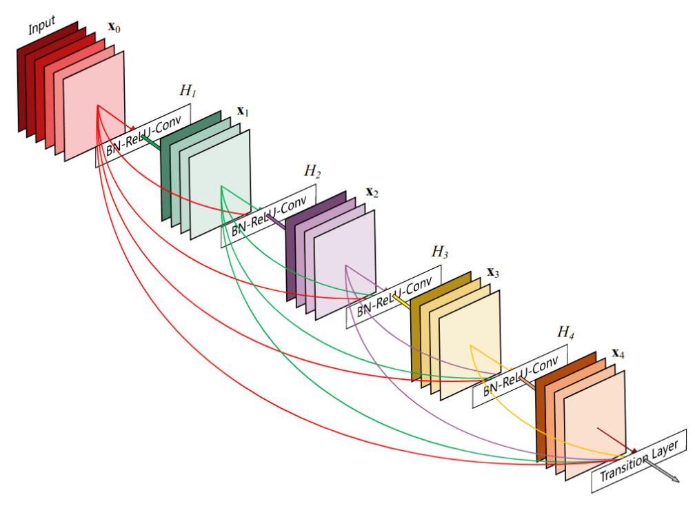
Блоки DenseNet: выход каждого слоя конкатенируется со всеми предыдущими, поэтому каждый слой видит признаки всех предшественников. - ResNet (сложение) требует, чтобы $F(x)$ и $x$ имели одинаковую форму. Когда меняется число каналов или пространственный размер, в обходной путь добавляют свёртку $1\times1$ (projection shortcut). Размер выхода не растёт, память экономится.
- DenseNet (конкатенация) ничего не смешивает: признаки сохраняются как есть и остаются доступными всем последующим слоям. Параметров нужно меньше (каждый слой добавляет лишь несколько каналов), зато память расходуется сильно: карты всех предыдущих слоёв надо хранить.
- U-Net (конкатенация через всю сеть) соединяет соответствующие уровни энкодера и декодера, возвращая точные пространственные детали, потерянные при pooling. Для сегментации это критично: без таких связей границы объектов размываются.
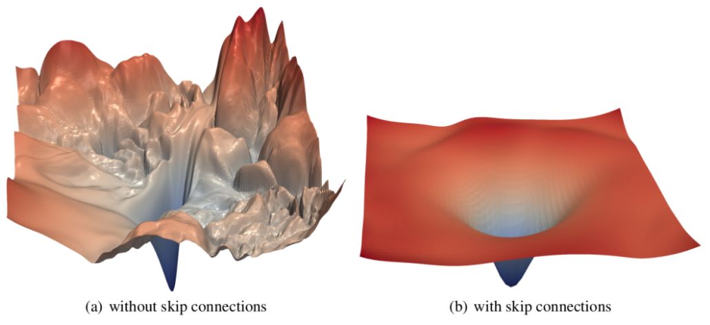
Визуализация поверхности функции потерь для модели ResNet: слева сеть без skip-связей — изрезанный ландшафт с множеством локальных ям, справа та же сеть с ними — гладкая воронка, по которой градиентный спуск доходит до минимума. В трансформере остаточная связь есть в каждом подслое: и вокруг внимания, и вокруг feed-forward-блока:
$$\text{output} = \text{LayerNorm}(x + \text{Sublayer}(x))$$
Это вариант post-norm (нормализация после сложения), использованный в оригинальной статье. Современные большие модели чаще используют pre-norm:
$$\text{output} = x + \text{Sublayer}(\text{LayerNorm}(x))$$
Разница принципиальна: в pre-norm остаточный путь остаётся абсолютно «чистым» — от входа до выхода сети идёт непрерывная цепочка сложений без единой нормализации между ними. Это делает обучение очень глубоких моделей заметно устойчивее и позволяет обходиться более коротким warm-up.
- «Skip-связь — это отдельный слой с весами». Нет: сложение не имеет обучаемых параметров вовсе. Веса появляются только в projection shortcut, когда нужно согласовать формы.
- «Skip полностью решает проблему затухания». Он даёт градиенту прямой путь, но не отменяет ни нормализацию, ни клиппинг, ни разумную инициализацию. В очень глубоких трансформерах без всего этого обучение всё равно нестабильно.
- «Чем больше связей, тем лучше». DenseNet платит за плотные связи памятью, а не параметрами; на больших разрешениях это становится основным ограничением.
Остаточные связи стоит смотреть сразу в двух семействах — там, где они появились, и там, где от их расположения зависит обучаемость:
- ResNet — работа, которая ввела остаточный блок и сделала возможными сети на 100+ слоёв.
- DenseNet — альтернатива: не сложение, а конкатенация признаков со всех предыдущих слоёв.
- Pre-Norm и Post-Norm в LLM — как Pre-LN превращает остаточную связь в сквозной путь для градиента и почему без этого глубокие трансформеры не обучаются.
Что такое остаточная связь и как она работает?
Вход блока пробрасывается напрямую на его выход: $y = F(x) + x$. Блок учит не всё преобразование, а лишь остаток — поправку к входу, что заметно упрощает оптимизацию.
Какую проблему решил ResNet и почему она возникала?
Проблему деградации: с ростом глубины ошибка росла даже на обучающей выборке. Причина в том, что стопке слоёв трудно выучить тождественное отображение; skip-связь встраивает его в архитектуру, и лишним блокам достаточно выдать ноль.
Как skip connections решают проблему затухания градиентов?
Производная $y = F(x) + x$ по входу равна $\frac{\partial F}{\partial x} + 1$: единица не даёт множителю обнулиться, и градиент получает прямой путь ко всем ранним слоям без экспоненциального затухания.
В чём разница между residual (ResNet) и dense (DenseNet) связями?
ResNet складывает вход и выход блока, требуя совпадения форм и не увеличивая размер тензора. DenseNet конкатенирует выходы всех предыдущих слоёв: параметров нужно меньше, но расход памяти существенно выше.
Как skip connections используются в трансформерах?
Вокруг каждого подслоя — внимания и feed-forward. В post-norm варианте $\text{LayerNorm}(x + \text{Sublayer}(x))$, в современном pre-norm — $x + \text{Sublayer}(\text{LayerNorm}(x))$; второй оставляет остаточный путь чистым и обучается устойчивее.
Зачем skip-связи в U-Net?
Чтобы вернуть декодеру точные пространственные детали, потерянные при pooling в энкодере. Без них границы сегментов получаются размытыми, поскольку по огрублённой карте признаков восстановить точное положение невозможно.
Есть ли у skip-связи обучаемые параметры?
У обычной — нет, это просто сложение. Параметры появляются лишь в projection shortcut ($1\times1$ свёртка), когда надо согласовать число каналов или пространственный размер.
-
Аугментация данных
Аугментация данных — искусственное расширение обучающей выборки: из имеющихся примеров создаются изменённые версии, у которых сохраняется правильный ответ. Цель — улучшить обобщение и снизить переобучение.
Если совсем простыми словами: перевёрнутая, затемнённая и обрезанная фотография кошки — всё ещё фотография кошки. Показывая модели все эти варианты, мы бесплатно получаем «новые» обучающие примеры и одновременно объясняем ей: освещение, ракурс и положение в кадре к ответу отношения не имеют — смотри на суть.
Идея в том, чтобы показать модели больше валидных вариаций входа, сохранив смысл данных. Тип преобразований зависит от модальности:
- Изображения: геометрические, фотометрические, пространственные и генеративные трансформации;
- Текст: синонимизация, перефразирование, перестановка слов, back-translation, генерация LLM.
Полезно понимать аугментацию не как «фокус для увеличения датасета», а как способ явно задать инвариантности — то, что модель обязана игнорировать.
Горизонтальное отражение говорит: «класс не зависит от того, смотрит объект влево или вправо». Изменение яркости: «класс не зависит от освещения». Random crop: «класс не зависит от того, какая часть объекта попала в кадр».
Отсюда главное правило выбора аугментаций: берите те преобразования, которые реально встречаются в ваших данных на инференсе. Если камера у вас всегда закреплена и снимает сверху, случайные повороты на 90° только собьют модель с толку — таких кадров она никогда не увидит.
- Увеличивает эффективный размер датасета без нового сбора данных
- Снижает переобучение
- Повышает устойчивость к шуму и вариациям входа
- Улучшает обобщающую способность
- Особенно полезна, когда данных мало
- Повороты, отражения, масштабирование, сдвиги
- Изменение яркости/контраста/насыщенности
- Добавление шума
- Random crop
- Mixup, CutMix
Самая опасная ошибка: применить преобразование, при котором метка перестаёт быть верной.
- Цифры и буквы: поворот на 180° превращает 6 в 9, а вертикальное отражение делает из «b» «d». Метка при этом остаётся старой — модель учат на неверных данных.
- Медицинские снимки: горизонтальное отражение меняет левую и правую стороны; при поиске патологии конкретного органа это может быть критично.
- Дорожные знаки: отражение превращает «поворот направо» в несуществующий знак.
- Цвет как признак: если вы отличаете спелые помидоры от зелёных, агрессивный color jitter уничтожает сам различающий признак.
Проверка простая: посмотрите на аугментированные картинки глазами и спросите себя, поставили бы вы им ту же метку. Если сомневаетесь вы — сомневаться будет и модель.
- Замена слов синонимами
- Перефразирование
- Перестановка слов
- Удаление/добавление слов
- Back-translation
- Генерация новых примеров языковыми моделями
В картинке сдвиг на пять пикселей ничего не меняет. В тексте замена одного слова легко меняет смысл: «фильм не был плохим» и «фильм был плохим» отличаются на одно слово и имеют противоположные метки тональности.
Поэтому в NLP:
- перестановка слов часто ломает синтаксис и меняет смысл;
- синонимизация по словарю игнорирует контекст («ключ» как инструмент и как источник);
- back-translation остаётся самым надёжным вариантом — модель перевода сохраняет смысл целиком, а не по словам;
- на практике эффект аугментации в NLP обычно скромнее, чем в CV, и большие предобученные модели дают гораздо больший выигрыш.
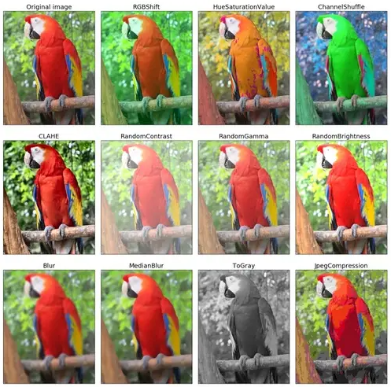
Один исходный снимок и несколько его аугментированных версий: меняются ракурс, кадрирование и цветовая гамма, а класс остаётся прежним. 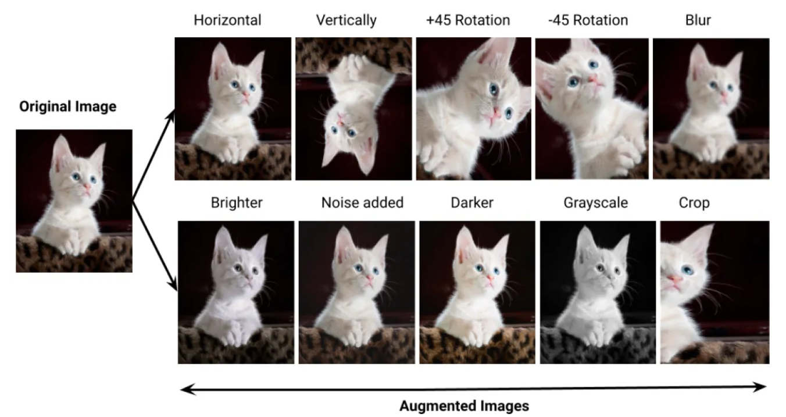
Примеры аугментации изображений. 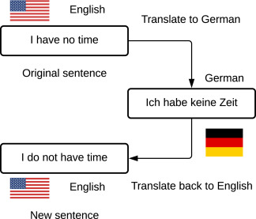
Машинный перевод туда и обратно (back-translation): предложение переводится на другой язык и возвращается обратно, получая иную формулировку при сохранённом смысле. Отдельное семейство, работающее не по принципу «сохранить ответ», а по принципу «смешать два примера вместе с их метками».
- Mixup: новое изображение — взвешенная сумма двух: $\tilde{x} = \lambda x_1 + (1-\lambda)x_2$, и метка тоже смешивается: $\tilde{y} = \lambda y_1 + (1-\lambda)y_2$. При $\lambda = 0.7$ получается полупрозрачное наложение кошки на собаку с меткой «70% кошка, 30% собака».
- CutMix: из одного изображения вырезается прямоугольник и вставляется в другое, а метки смешиваются пропорционально площади вставки.
Зачем это работает: модель учат вести себя линейно между обучающими примерами, а не выдавать резко уверенный ответ в каждой точке. Побочный эффект — более мягкие, лучше калиброванные вероятности, как при label smoothing. Оба приёма входят в стандартный рецепт обучения современных vision-моделей.
- Аугментация применяется только к train. На валидации и тесте данные должны быть «настоящими», иначе метрики не отражают реальное качество.
- Аугментация делается на лету, при формировании батча, а не заранее на диск: тогда каждая эпоха видит новые варианты, и разнообразие практически бесконечно.
- Готовые наборы политик. RandAugment, AutoAugment, TrivialAugment — подобранные исследователями последовательности преобразований; обычно они работают лучше, чем набор, собранный вручную наугад.
- TTA (test-time augmentation). На инференсе объект прогоняют в нескольких вариантах (например, оригинал и отражение) и усредняют предсказания. Даёт небольшую, но почти бесплатную прибавку качества ценой кратного роста времени инференса.
- AlexNet — случайные кропы и отражения как обязательная часть рецепта ещё в 2012 году.
- EfficientNetV2 — прогрессивное обучение: аугментации усиливают по ходу обучения вместе с ростом разрешения, а не держат фиксированными.
- DeiT — набор аугментаций, который позволил обучить ViT на одном ImageNet-1k без гигантского предобучения.
Для классификации метка при повороте или отражении не меняется, а вот в детекции и сегментации к рамкам и маскам нужно применить то же самое аффинное преобразование, что и к изображению — иначе разметка «уедет» относительно объекта. Отдельно не переносятся Mixup и CutMix: метку-вектор можно смешать по формуле $\lambda y_1 + (1-\lambda) y_2$, а рамку или маску — нельзя, поэтому в детекции сохраняют оба набора объектов и взвешивают их лоссы, а в CutMix ещё и режут рамки по границе вставки.
Что такое аугментация данных и какова её цель?
Создание изменённых версий обучающих примеров с сохранением правильного ответа. Цель — увеличить разнообразие данных, снизить переобучение и явно сообщить модели, к каким преобразованиям она должна быть нечувствительна.
Как выбирать набор аугментаций?
По тому, какие вариации реально встречаются на инференсе. Преобразования, которых в реальных данных не бывает, только усложняют задачу, а меняющие смысл — прямо портят разметку.
Какие виды аугментации используются для изображений?
Геометрические (повороты, отражения, масштаб, сдвиги), фотометрические (яркость, контраст, насыщенность), random crop, добавление шума, а также Mixup и CutMix.
Когда аугментация вредит?
Когда преобразование меняет правильный ответ: поворот цифры 6 на 180°, отражение медицинского снимка, изменение цвета там, где цвет и есть признак класса. Проверять аугментации нужно визуально.
Что такое back-translation и почему в NLP он предпочтительнее простых приёмов?
Перевод текста на другой язык и обратно, дающий перефразировку с сохранением смысла. Простые приёмы вроде перестановки слов или словарной синонимизации легко ломают синтаксис и меняют смысл, а перевод работает с предложением целиком.
Чем Mixup и CutMix отличаются от обычных аугментаций?
Они смешивают два примера вместе с метками: Mixup — взвешенной суммой пикселей, CutMix — вставкой прямоугольника с пропорциональным смешением меток. Модель учится вести себя линейно между примерами и выдаёт лучше калиброванные вероятности.
Применяют ли аугментацию на валидации и тесте?
Обычно нет: метрики должны считаться на реальных данных. Исключение — осознанное применение TTA, когда предсказания по нескольким аугментированным версиям усредняются ради небольшой прибавки качества.
-
Рекуррентные нейросети (RNN) — архитектуры для последовательностей (текст, речь, временные ряды), в которых скрытое состояние $h_t$ передаётся от шага к шагу.
Если совсем простыми словами: сеть читает последовательность по одному элементу, как человек читает текст слово за словом, и держит в голове «конспект» всего прочитанного — вектор $h_t$. На каждом шаге она обновляет конспект с учётом нового слова. Ответ строится по конспекту, а не по всему тексту сразу — поэтому от того, насколько хорошо конспект удерживает важное, зависит всё.
Vanilla RNN — базовая версия RNN без гейтов.
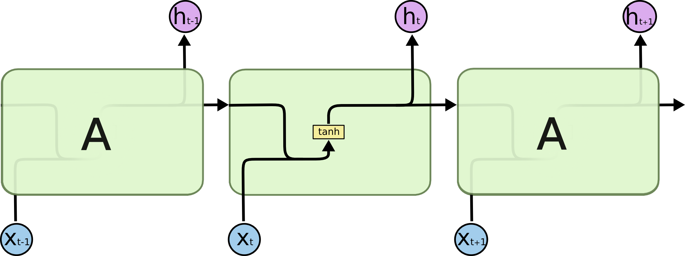
Vanilla RNN: один и тот же блок применяется на каждом шаге, передавая скрытое состояние дальше по цепочке. Матрицы $W_x$ и $W_h$ одни и те же на каждом временном шаге. Это то же разделение весов, что в свёртках, только по оси времени, а не пространства.
Отсюда два следствия. Хорошее: сеть работает с последовательностью любой длины, а число параметров от длины не зависит. Плохое: один и тот же множитель применяется к градиенту десятки раз подряд, и он возводится в степень длины последовательности — именно поэтому RNN так уязвимы к затуханию и взрыву градиентов.
LSTM (Long Short-Term Memory) — RNN с гейтами (
input,forget,output) и отдельным состоянием памяти; лучше сохраняет долгосрочные зависимости.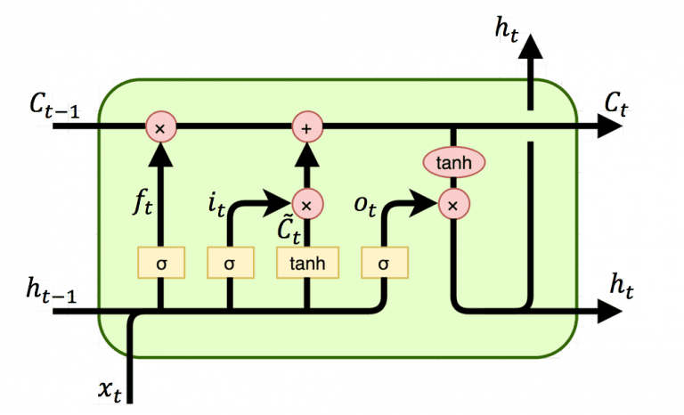
Блок LSTM и его гейты: три сигмоиды управляют тем, что забыть, что записать и что выдать наружу. Цепочка блоков LSTM: верхняя горизонтальная линия — состояние памяти $c_t$, идущее через всю последовательность почти без изменений. GRU (Gated Recurrent Unit) — более компактный вариант gated-RNN, обычно проще и быстрее LSTM.
Блок GRU: два гейта вместо трёх, отдельного состояния памяти нет. На шаге $t$ Vanilla RNN вычисляет: $$ h_t = \tanh(W_x x_t + W_h h_{t-1} + b) $$
То есть новое состояние — это смесь нового входа $x_t$ и прошлого состояния $h_{t-1}$, пропущенная через нелинейность. Без гейтов информация на длинных дистанциях чаще затухает или взрывается, поэтому и появились LSTM и GRU.
Возьмём фразу: «Кошка, которая жила в старом доме на окраине города и часто грелась на подоконнике, спала». Чтобы поставить правильное окончание глагола, нужна информация о слове «кошка» — а между ними 14 слов.
При обратном проходе градиент от «спала» до «кошка» умножается на $W_h$ (точнее, на её производную) 14 раз подряд. Если типичный множитель $0.7$, то $0.7^{14} \approx 0.007$ — сигнал ослаб более чем в сотню раз. Слово «кошка» практически не получает обратной связи, и связь между ними не выучивается.
Практический предел Vanilla RNN — примерно 10–20 шагов. Всё, что дальше, теряется.
Обратное распространение ошибки для RNN
RNN обучаются backpropagation с учётом времени: одни и те же параметры используются на каждом шаге, поэтому градиенты суммируются по всем временным шагам. Это алгоритм Backpropagation Through Time (BPTT).
Схема BPTT: сеть «разворачивают» во времени в глубокую цепочку одинаковых блоков и применяют обычный backprop, а градиенты по общим весам складывают. Разворачивать последовательность из 10 000 шагов целиком невозможно: пришлось бы держать в памяти активации всех шагов, а градиент всё равно затухнет.
Поэтому на практике используют усечённый BPTT: последовательность режут на куски по $k$ шагов (обычно 32–256), градиент считают только внутри куска, а скрытое состояние передают в следующий кусок без градиента (
h.detach()в PyTorch).Компромисс честный: память и время ограничены, состояние продолжает нести информацию дальше, но зависимости длиннее $k$ шагов сеть выучить уже не может.
Сравнение RNN
$$ h_t = \phi(W_xx_t + W_hh_{t-1} + b) $$ Плюсы: простая архитектура, мало параметров. Минусы: плохо держит длинные зависимости, подвержена взрыву и затуханию градиентов.
$$ \begin{aligned} \textcolor{red}{f_t} &= \sigma(W_fx_t + U_fh_{t-1}+b_f) \\ \textcolor{blue}{i_t} &= \sigma(W_ix_t + U_ih_{t-1}+b_i) \\ \textcolor{green}{\tilde{c}_t} &= \tanh(W_cx_t + U_ch_{t-1}+b_c) \\ \textcolor{magenta}{c_t} &= \textcolor{red}{f_t}\odot c_{t-1} + \textcolor{blue}{i_t}\odot \textcolor{green}{\tilde{c}_t} \\ \textcolor{orange}{o_t} &= \sigma(W_ox_t + U_oh_{t-1}+b_o) \\ \textcolor{black}{h_t} &= \textcolor{orange}{o_t}\odot\tanh(\textcolor{magenta}{c_t}) \end{aligned} $$ Плюсы: хорошо держит долгие зависимости. Минусы: сложнее и тяжелее по параметрам.
Читать эти шесть формул стоит как описание работы с блокнотом, где $c_t$ — сам блокнот (состояние памяти), а $h_t$ — то, что мы решаем сказать вслух.
- $f_t$ — гейт забывания: сигмоида даёт число от 0 до 1 для каждой ячейки памяти. 0 — «сотри эту запись», 1 — «сохрани полностью».
- $i_t$ — входной гейт: насколько записывать новую информацию.
- $\tilde{c}_t$ — кандидат на запись: что именно можно было бы записать.
- $c_t = f_t \odot c_{t-1} + i_t \odot \tilde{c}_t$ — обновление блокнота: стёрли ненужное, добавили новое.
- $o_t$ — выходной гейт: какую часть блокнота показать наружу на этом шаге.
- $h_t = o_t \odot \tanh(c_t)$ — то, что уходит дальше по цепочке и в предсказание.
Ключевая идея: сеть сама учится, что запомнить, что забыть и что показать, — вместо жёсткого правила «переписывать состояние целиком каждый шаг», как в Vanilla RNN.
Вся суть в одной строке: $c_t = f_t \odot c_{t-1} + i_t \odot \tilde{c}_t$.
Здесь старое состояние складывается с новым, а не пропускается через матрицу и нелинейность. Производная $c_t$ по $c_{t-1}$ равна просто $f_t$. Если гейт забывания открыт ($f_t \approx 1$), градиент проходит через шаг без ослабления — по цепочке шагов он не затухает экспоненциально.
Это ровно тот же приём, что и в skip-connections: сложение вместо умножения даёт градиенту прямую «магистраль». По этой самой линии — верхней горизонтальной стрелке на схеме — информация и течёт через сотни шагов.
Кстати, отсюда практический совет: смещение гейта забывания $b_f$ часто инициализируют единицей, чтобы в начале обучения память по умолчанию сохранялась, а не стиралась.
$$ \begin{aligned} \textcolor{red}{z_t} &= \sigma(W_zx_t + U_zh_{t-1}+b_z) \\ \textcolor{blue}{r_t} &= \sigma(W_rx_t + U_rh_{t-1}+b_r) \\ \textcolor{green}{\tilde{h}_t} &= \tanh(W_hx_t + U_h(\textcolor{blue}{r_t}\odot h_{t-1}) + b_h) \\ \textcolor{black}{h_t} &= (1-\textcolor{red}{z_t})\odot \textcolor{green}{\tilde{h}_t} + \textcolor{red}{z_t}\odot h_{t-1} \end{aligned} $$ Плюсы: проще и быстрее LSTM, меньше параметров. Минусы: иногда хуже на очень длинных зависимостях.
Два упрощения относительно LSTM:
- Нет отдельного состояния памяти. $c_t$ и $h_t$ объединены в одно состояние $h_t$.
- Гейты забывания и записи объединены в один — гейт обновления $z_t$. Формула $h_t = (1-z_t)\odot\tilde{h}_t + z_t\odot h_{t-1}$ означает: сколько взяли от старого, ровно столько не берём от нового. В LSTM же можно и забыть старое, и не записать новое одновременно.
Гейт сброса $r_t$ решает отдельную задачу: насколько учитывать прошлое состояние при вычислении кандидата $\tilde{h}_t$. Закрытый $r_t$ означает «начинаем мысль с чистого листа» — полезно на границах предложений.
Параметров у GRU примерно на четверть меньше, обучается он быстрее. На практике разница в качестве обычно невелика, и выбор делают эмпирически.
- Последовательные вычисления по времени. Шаг $t$ нельзя посчитать, не посчитав $t-1$, поэтому обучение почти не параллелится — в отличие от трансформера, который обрабатывает всю последовательность сразу. Это главная причина, по которой RNN проиграли, а не качество как таковое.
- Проблемы затухающих и взрывающихся градиентов (у LSTM/GRU смягчены, но не устранены).
- Информация о далёком прошлом сжата в один вектор фиксированного размера — «бутылочное горлышко».
- Bidirectional RNN — две сети, одна читает последовательность слева направо, другая справа налево; их состояния объединяются. Даёт каждому слову контекст с обеих сторон. Годится только там, где вся последовательность известна заранее (классификация, разметка), и не годится для генерации.
- Многослойные (stacked) RNN — выход одного слоя подаётся как вход следующему; нижние слои улавливают локальные закономерности, верхние — более абстрактные.
- Seq2seq — энкодер сжимает вход в вектор, декодер порождает выход. Именно узкое место этого вектора и породило механизм внимания, а из него — трансформеры.
- Ввели идею управляемого потока информации (гейты), которая живёт и сегодня.
- Показали важность дальних зависимостей и сложность их выучивания.
- Обозначили ограничения — последовательность вычислений и «бутылочное горлышко» состояния, — которые прямо привели к attention и трансформерам.
В NLP их почти полностью вытеснили трансформеры. Но списывать RNN со счетов рано:
- на временных рядах и в задачах с малым объёмом данных LSTM/GRU нередко конкурентоспособны и заметно дешевле;
- в потоковых задачах (речь в реальном времени, обработка на устройстве) рекуррентность естественна: состояние обновляется по одному элементу за $O(1)$, тогда как трансформеру нужно держать весь контекст;
- современные state space models (S4, Mamba) — по сути переосмысленные рекуррентные модели, обучаемые параллельно и претендующие на нишу очень длинных последовательностей.
Идея сжимать историю в состояние фиксированного размера не умерла вместе с RNN — она вернулась в другой математической форме:
- SSM: модели пространства состояний — та же рекуррентность, но с параллельной свёрточной формой для обучения и инициализацией HiPPO, снимающей затухание градиента.
- Mamba — селективность: параметры зависят от входа, поэтому модель решает, что запомнить, а что пропустить.
- Рекуррентные трансформеры — третий путь: обычное внимание внутри сегмента плюс перенос состояния между сегментами.
В чём ключевая идея RNN и почему Vanilla RNN плохо работает с длинными последовательностями?
Информация передаётся через скрытое состояние $h_t$ от шага к шагу, а веса общие для всех шагов. Из-за этого при обратном проходе один и тот же множитель возводится в степень длины последовательности, и градиент экспоненциально затухает или взрывается; практический предел — 10–20 шагов.
Как LSTM решает проблему затухания градиентов?
Через состояние памяти с аддитивным обновлением $c_t = f_t \odot c_{t-1} + i_t \odot \tilde c_t$. Производная по предыдущему состоянию равна $f_t$: при открытом гейте забывания градиент проходит шаг без ослабления, получая прямой путь через всю последовательность.
За что отвечают три гейта LSTM?
Forget — что стереть из памяти, input — что в неё записать, output — какую часть памяти выдать наружу на текущем шаге. Все три вычисляются сигмоидой и работают как «краны» от 0 до 1.
Чем GRU проще LSTM?
В нём нет отдельного состояния памяти, а гейты забывания и записи объединены в один гейт обновления $z_t$; добавлен гейт сброса $r_t$. Параметров примерно на четверть меньше, обучение быстрее, качество на средних зависимостях сопоставимо.
Что такое BPTT и зачем его усекают?
Backpropagation Through Time: сеть разворачивают во времени и применяют обычный backprop, суммируя градиенты по общим весам. Усечение (truncated BPTT) ограничивает разворот $k$ шагами, экономя память и время, но делая невозможным выучивание зависимостей длиннее $k$.
Почему трансформеры вытеснили RNN в NLP?
Главное — параллелизм: self-attention обрабатывает все позиции одновременно, тогда как RNN обязана идти шаг за шагом. Плюс прямой доступ к любой позиции за один «переход» вместо цепочки из сотен шагов.
Где RNN всё ещё уместны?
На временных рядах, при малых данных и в потоковых сценариях, где состояние обновляется по одному элементу за $O(1)$ и не нужно держать весь контекст. Их идеи возрождаются в state space models (S4, Mamba).
-
Обучение на CPU и GPU: в чём разница
CPU (central processing unit, центральный процессор) — устройство с небольшим числом очень мощных ядер (обычно 8–64). Каждое ядро умеет быстро выполнять длинную цепочку разных, зависящих друг от друга команд.
Процессор снят со стороны контактных площадок — теми самыми золотыми пятачками он прижимается к сокету, прижимная рамка которого на снимке ещё поднята. Число контактов обманчиво: их сотни, а вычислительных ядер внутри — считанные десятки. Почти вся площадь кремния уходит не на их количество, а на сложность каждого: предсказание переходов, внеочередное исполнение, большие кэши. GPU (graphics processing unit, графический процессор, «видеокарта») — устройство с тысячами простых ядер (у NVIDIA A100 — 6912 CUDA-ядер). Каждое ядро само по себе медленное, но все они одновременно выполняют одну и ту же операцию над разными числами.
Потребительская видеокарта: отдельная плата со своей памятью и своим питанием, которая вставляется в слот PCIe — внизу видна планка с разъёмами HDMI и DisplayPort. Обратите внимание, что упомянутая выше A100 выглядит иначе: у серверных ускорителей вентиляторов нет вовсе, их продувает воздушный поток самого сервера. Общее у них другое — GPU это всегда отдельное устройство со своей памятью, а не блок внутри процессора. Если совсем простыми словами: CPU — это один профессор, который решает задачу любой сложности, но строго по одной за раз. GPU — стадион школьников с калькуляторами: сложную задачу им не поручить, но десять тысяч одинаковых умножений они сделают за один присест.
Почти всё время обучения тратится на умножение матриц. Слой сети — это операция $Y = XW + b$, где $X$ — батч входов, $W$ — матрица весов.
Ключевое свойство: каждый элемент результата $Y_{ij} = \sum_k X_{ik} W_{kj}$ считается независимо от всех остальных. Между ними нет никакого порядка — можно посчитать их все одновременно. Задачи такого вида называют data-parallel: одна и та же операция применяется к большому массиву данных.
CPU выполнит эти умножения последовательно (пусть и с распараллеливанием на 16 ядер). GPU запустит тысячи ядер сразу. Отсюда разница не в проценты, а в десятки раз.
- CUDA-ядро — простейший вычислитель GPU, умеет складывать и умножать числа. Их тысячи.
- Tensor Core (тензорное ядро) — специализированный блок, который за один такт делает умножение маленькой матрицы ($4\times4$) на матрицу. Работает только в пониженной точности (FP16, BF16, TF32) — именно ради него включают mixed precision.
- FLOPS (floating point operations per second) — сколько операций с дробными числами устройство делает в секунду. Метрика «сырой» вычислительной мощности.
- HBM (high bandwidth memory) — тип памяти, припаянный прямо к чипу GPU. Именно она и называется «видеопамятью»; её объём (16, 40, 80 ГБ) — главное ограничение при обучении.
серверный CPU (32 ядра) NVIDIA A100 (80 ГБ) пиковая производительность FP32 ~1–2 TFLOPS ~19,5 TFLOPS на тензорных ядрах, TF32 — ~156 TFLOPS на тензорных ядрах, BF16/FP16 — ~312 TFLOPS пропускная способность памяти ~100 ГБ/с (DDR4) ~2000 ГБ/с (HBM2e) объём памяти 256–1024 ГБ 80 ГБ Это пиковые цифры из спецификации (без учёта разреженности весов, которая в маркетинговых материалах их ещё удваивает); реальный код выжимает из них хорошо если половину. Но даже так разрыв — примерно в 10–20 раз на FP32 и в 100+ раз при использовании тензорных ядер.
Практический ориентир: одна эпоха ResNet-18 на CIFAR-10 — около 20 секунд на A100 и около 10 минут на 8-ядерном ноутбучном CPU.
Обратите внимание на последнюю строку таблицы. У CPU оперативной памяти сотни гигабайт, у GPU — десятки. Поэтому на CPU «не хватило памяти» случается редко, а на GPU CUDA out of memory — самая частая ошибка при обучении. Об этом весь отдельный вопрос про экономию памяти.
Причём расход памяти при обучении — величина не постоянная: внутри каждой итерации он поднимается и опускается, и упереться в лимит можно на пике, которого «в среднем» не видно.
Визуализация того, как изменяется количество потребляемой памяти при обучении модели — выделены этапы прямого и обратного проходов. Видно, что на каждой итерации картина повторяется в точности: плоское «основание» около 220 МБ держится всё время — это веса, градиенты и состояния оптимизатора, они живут между итерациями и от размера батча не зависят. Поверх него на прямом проходе нарастает «холм» до 380–400 МБ: каждый слой докладывает свои активации, которые придётся хранить до backward. На обратном проходе холм осыпается — активации освобождаются сразу после того, как по ним посчитан градиент, — и к началу следующей итерации память возвращается к основанию. Практический вывод: пиковое потребление достигается на стыке прямого и обратного проходов, поэтому CUDA OOM прилетает не в начале эпохи, а на первом же полном шаге, и лечится он в первую очередь уменьшением батча — то есть высоты этого холма, а не его основания. Это встроенный профилировщик памяти PyTorch. Вокруг куска обучения ставится запись истории аллокаций, снимок сохраняется в файл и открывается в браузерном визуализаторе pytorch.org/memory_viz — каждая цветная полоса там соответствует отдельному живому тензору, и по клику видно, какая строка кода его создала.
Это первое, чем стоит воспользоваться, когда OOM непонятен: график сразу показывает, что именно занимает память — активации, забытый кэш или утёкшие тензоры, которые не освобождаются от итерации к итерации (тогда «основание» растёт от холма к холму, а не остаётся плоским).
import torch torch.cuda.memory._record_memory_history(max_entries=100_000) train_one_epoch(...) # достаточно 3-4 итераций torch.cuda.memory._dump_snapshot("snapshot.pickle") torch.cuda.memory._record_memory_history(enabled=None) # выключить записьКак данные попадают на GPU
В PyTorch у каждого тензора есть атрибут
device— где физически лежат его числа:cpuилиcuda:0(нулевая видеокарта в системе).Правило жёсткое: все участники операции должны лежать на одном устройстве. Нельзя умножить тензор на CPU на тензор на GPU — будет ошибка
RuntimeError: Expected all tensors to be on the same device.Перенос делается методом
.to(device). У модели он меняет устройство на месте (model.to(device)достаточно), у тензора — возвращает новый тензор, поэтому обязательно писатьx = x.to(device), а не простоx.to(device).Сам перенос идёт по шине PCIe — её пропускная способность 32–64 ГБ/с против ~2000 ГБ/с у памяти самой видеокарты, то есть в десятки раз меньше. Поэтому гонять данные туда-обратно внутри цикла обучения дорого: копировать нужно один раз за батч и больше не трогать.
import torch # выбираем устройство один раз в начале скрипта device = torch.device("cuda" if torch.cuda.is_available() else "cpu") print(device, torch.cuda.get_device_name(0) if torch.cuda.is_available() else "") model = MyModel().to(device) # модель переезжает на GPU целиком, на месте for x, y in dataloader: x = x.to(device, non_blocking=True) # тензоры — обязательно с присваиванием! y = y.to(device, non_blocking=True) # non_blocking работает вместе с pin_memory out = model(x)Этот флаг разрешает копированию идти асинхронно — CPU не ждёт его окончания и сразу ставит в очередь следующие команды. Но работает он только если память на стороне CPU «закреплена» (
pin_memory=TrueуDataLoader). Безpin_memoryфлаг молча ничего не делает.Асинхронность CUDA и как из-за неё врут замеры
Вызов вроде
out = model(x)не выполняет вычисление. Он только ставит задачу в очередь на GPU и немедленно возвращает управление Python-коду. Реальный счёт идёт в фоне.Это удобно (CPU успевает подготовить следующие команды, пока GPU занята), но ломает наивные измерения времени: между двумя вызовами
time.time()окажется время постановки задачи в очередь, а не время вычисления. Получаются абсурдные результаты вроде «forward занял 0,0001 секунды».Чтобы измерить честно, нужно явно дождаться, пока очередь опустеет, — это делает
torch.cuda.synchronize().import time # неправильно: замеряется только постановка задачи в очередь t0 = time.time() out = model(x) print(time.time() - t0) # ~0.0002 с — бессмысленное число # правильно: ждём реального завершения работы GPU torch.cuda.synchronize() t0 = time.time() out = model(x) torch.cuda.synchronize() print(time.time() - t0) # честное время forward-проходаВсё, что «вытаскивает» число из GPU в Python, синхронизирует очередь принудительно:
loss.item(),tensor.cpu(),float(tensor),print(tensor), любоеif tensor > 0. Один такой вызов на батч — терпимо; десяток внутри внутреннего цикла превращает асинхронность в последовательное ожидание и заметно замедляет обучение.Когда GPU не помогает
Сверху: при num_workers=0батч готовится и считается по очереди, поэтому видеокарта простаивает три четверти времени. Снизу: несколько процессов-воркеров готовят батчи заранее и параллельно с вычислением — те же четыре шага проходят почти втрое быстрее, хотя сама GPU работает ровно столько же. Вывод: «медленное обучение» часто означает не слабую видеокарту, а голодающий вход.Обучение — это конвейер: прочитать файл с диска $\to$ декодировать картинку $\to$ аугментировать $\to$ собрать батч $\to$ скопировать на GPU $\to$ посчитать. Первые четыре шага делает CPU. Если он не успевает, видеокарта простаивает, и покупка более быстрой GPU не даст ничего.
Как проверить: запустить
nvidia-smi -l 1в соседнем терминале и посмотреть на колонкуGPU-Util(разбор вывода этой утилиты — в вопросе GPU: nvidia-smi). Устойчивые 90–100% — упираемся в вычисления, всё в порядке. Скачки 10% $\to$ 80% $\to$ 10% — GPU голодает, лечить надо загрузку данных.num_workers=N— сколько отдельных процессов готовят батчи параллельно. Разумный старт — число физических ядер CPU или 4–8.pin_memory=True— складывать готовые батчи в «закреплённую» память, из которой копирование на GPU идёт быстрее и асинхронно.persistent_workers=True— не убивать воркеров в конце каждой эпохи (иначе на коротких эпохах половина времени уходит на их перезапуск).prefetch_factor— сколько батчей воркер готовит про запас.- Тяжёлый препроцессинг лучше сделать один раз заранее и сохранить в готовом виде, а не пересчитывать каждую эпоху.
- Очень маленькие модели и батчи. Запуск каждого CUDA-ядра стоит несколько микросекунд. Если сама операция короче этого — всё время уходит на накладные расходы. Классический пример: MLP на два слоя с батчем из 8 объектов.
- Классический ML на табличных данных. Градиентный бустинг (LightGBM, CatBoost) на CPU часто быстрее GPU-версии: там много ветвлений и работы с памятью, а не однородных умножений.
- Инференс одного объекта с жёстким требованием к задержке. Копирование на GPU и обратно может стоить дороже самого вычисления.
- Логика на Python внутри цикла (парсинг, работа со строками, обращения к базе) — GPU здесь вообще не участвует.
- Забыть
.to(device)у меток. Модель и картинки перенесли,y— нет. Ошибка вылезет только на строке с функцией потерь, и она обычно сбивает с толку. - Написать
x.to(device)без присваивания. Для тензора это создаёт копию и тут же её выбрасывает —xостаётся на CPU. Для модели, наоборот, присваивание не обязательно. - Копить
lossвместоloss.item(). Строкаlosses.append(loss)сохраняет тензор вместе со всем графом вычислений, который его породил. Граф не освобождается, память течёт, через сотню шагов — OOM. Правильно:losses.append(loss.item()). - Судить о скорости по
nvidia-smiв момент запуска. Первые итерации всегда медленные: прогревается CUDA-контекст, cuDNN подбирает алгоритмы свёрток. Замерять надо начиная со второго-третьего десятка шагов. - Считать, что
nvidia-smiпоказывает занятость вычислителей. КолонкаGPU-Utilозначает «доля времени, когда на GPU выполнялось хоть одно ядро», а не «насколько полно загружены ядра». 100% при мизерном батче — обычное дело.
Кроме
cpuиcudaв PyTorch есть и другие устройства:mps— видеоядро Apple Silicon (M1–M4), даёт ускорение в несколько раз относительно CPU того же Mac, но поддержаны не все операции;xpu— видеокарты Intel; отдельно стоят TPU от Google, работающие через отдельную библиотекуtorch_xla.Подавляющее большинство кода и туториалов написано под CUDA — де-факто это стандарт, и на собеседовании под «обучением на GPU» всегда подразумевают именно её.
Переменная окружения
CUDA_VISIBLE_DEVICESскрывает от процесса все карты, кроме перечисленных: приCUDA_VISIBLE_DEVICES=2 python train.pyскрипт увидит ровно одну видеокарту, и она будет называтьсяcuda:0— физический номер 2 внутри процесса не виден вообще.Это стандартный способ поделить сервер между несколькими экспериментами. Разбор — в вопросе Выбор GPU.
Почему GPU ускоряет обучение нейросетей, а обычный Python-код — нет?
Ускорение даёт не «более быстрый процессор», а массовый параллелизм: тысячи простых ядер одновременно выполняют одну и ту же операцию над разными числами. Обучение нейросети — это в основном умножения матриц, где каждый элемент результата считается независимо от остальных, поэтому задача раскладывается на тысячи параллельных потоков идеально. Обычный Python-код состоит из зависящих друг от друга ветвлений и вызовов — распараллелить его так нельзя, и на GPU он просто не запустится.
Что означает
RuntimeError: Expected all tensors to be on the same deviceи как это чинить?Значит, в одной операции встретились тензоры с разных устройств — например, модель уже на
cuda:0, а меткиyостались на CPU. Лечение: переносить на устройство все участники — и входы, и метки, — причём для тензоров обязательно с присваиванием (x = x.to(device)), потому что.to()возвращает новый тензор, а не меняет старый на месте. У моделиmodel.to(device)работает на месте, присваивание не требуется.Почему замер времени forward-прохода через
time.time()даёт неправдоподобно маленькие числа?Вызовы CUDA асинхронные:
model(x)только ставит задачу в очередь GPU и сразу возвращает управление, не дожидаясь вычисления. Между двумяtime.time()попадает время постановки в очередь, а не счёта. Чтобы измерить честно, нужно поставитьtorch.cuda.synchronize()до и после замеряемого участка — она блокирует Python, пока очередь GPU не опустеет.Видеокарта загружена на 15%, обучение идёт медленно. Что проверять в первую очередь?
Загрузку данных, а не вычисления. Скорее всего CPU не успевает готовить батчи:
num_workers=0, тяжёлая аугментация, чтение мелких файлов с диска. Лечится увеличениемnum_workers,pin_memory=True,persistent_workers=Trueи предварительным препроцессингом данных. Покупка более мощной GPU в этой ситуации не изменит ничего — узкое место находится до неё.Почему
losses.append(loss)внутри цикла обучения приводит к утечке памяти?loss— это тензор, у которого сохранена ссылка на весь граф вычислений, породивший его: активации всех слоёв за этот шаг. Пока ссылка на тензор жива, граф не может быть освобождён. За сотню итераций в памяти накапливаются сотни графов, и обучение падает с CUDA OOM. Правильно сохранять число:losses.append(loss.item())—.item()возвращает обычный Python-float без всякого графа.Всегда ли GPU быстрее CPU для машинного обучения?
Нет. GPU выигрывает там, где много однородных матричных операций над большими массивами. Она проигрывает или не даёт выигрыша на очень маленьких моделях и батчах (накладные расходы на запуск ядра больше самого вычисления), на градиентном бустинге по табличным данным (много ветвлений, мало однородных умножений), на инференсе одиночного объекта с жёстким лимитом задержки и на любой Python-логике внутри цикла. Плюс у GPU в разы меньше памяти, поэтому большие модели упираются в её объём.
-
Обучение нейросети на одной GPU: полный цикл
Любой скрипт обучения, независимо от задачи и архитектуры, собран из одних и тех же семи частей:
- Dataset — объект, умеющий отдать один объект выборки по индексу;
- DataLoader — собирает объекты в батчи, перемешивает, грузит в несколько процессов;
- модель — сама нейросеть, перенесённая на GPU;
- функция потерь (criterion) — превращает предсказание и правильный ответ в одно число;
- оптимизатор — обновляет веса по градиентам (SGD, Adam, AdamW);
- scheduler — меняет learning rate по ходу обучения (warm-up и расписания);
- цикл — эпохи, внутри каждой проход по обучающей выборке и валидация, в конце сохранение чекпоинта.
Механику одного шага (forward $\to$ loss $\to$ backward $\to$ step) разбирает вопрос Прямой и обратный проход. Здесь мы собираем из неё рабочий скрипт целиком.
Всё, что создаётся один раз до начала обучения. Здесь же выбирается устройство и сюда же сразу переезжает модель — переносить её внутри цикла не нужно, она остаётся на GPU до конца работы скрипта.
Отдельно обратите внимание на два разных
DataLoader. У обучающегоshuffle=True— порядок объектов должен меняться каждую эпоху, иначе модель запомнит его. У валидационногоshuffle=False— перемешивать нечего, метрика от порядка не зависит, а фиксированный порядок удобнее для отладки.import torch from torch import nn from torch.utils.data import DataLoader device = torch.device("cuda" if torch.cuda.is_available() else "cpu") train_loader = DataLoader(train_ds, batch_size=64, shuffle=True, num_workers=8, pin_memory=True, persistent_workers=True) val_loader = DataLoader(val_ds, batch_size=128, shuffle=False, num_workers=4, pin_memory=True) model = MyModel().to(device) # модель переезжает на GPU один раз criterion = nn.CrossEntropyLoss() optimizer = torch.optim.AdamW(model.parameters(), lr=3e-4, weight_decay=0.01) scheduler = torch.optim.lr_scheduler.CosineAnnealingLR(optimizer, T_max=EPOCHS)Функция ниже — сердце скрипта. Четыре её строки (обнулить градиенты, forward, backward, шаг оптимизатора) и есть обучение; всё остальное — перенос данных на устройство и накопление статистики.
model.train()в начале обязателен: он переводит dropout и batch normalization в режим обучения. Забыть его после валидации — типовая ошибка, из-за которой модель со второй эпохи перестаёт учиться корректно.def train_one_epoch(model, loader, criterion, optimizer, device): model.train() # включаем dropout и обновление статистик BN running_loss, seen = 0.0, 0 for x, y in loader: x = x.to(device, non_blocking=True) y = y.to(device, non_blocking=True) optimizer.zero_grad(set_to_none=True) # 1. сбросить градиенты прошлого шага out = model(x) # 2. forward loss = criterion(out, y) # 3. значение функции потерь loss.backward() # 4. backward: заполняет .grad у параметров optimizer.step() # 5. обновление весов running_loss += loss.item() * y.size(0) # .item() — число, а не тензор с графом seen += y.size(0) return running_loss / seenСтарое поведение заполняло каждый тензор
.gradнулями. Новое — просто ставитNone, а тензор освобождается. Это чуть быстрее (не нужно записывать нули в память) и экономит память между шагами. С версии PyTorch 2.0 это поведение по умолчанию, но в чужом коде вы часто увидите явный флаг.Побочный эффект, о котором стоит знать: параметры, не получившие градиента на этом шаге, будут иметь
p.grad is Noneвместо нулевого тензора. Если вы вручную обходите градиенты (например, считаете их норму), проверку наNoneпридётся добавить.Валидация отличается от обучения тремя вещами:
model.eval()(dropout выключается, BatchNorm использует накопленные статистики), обёрткаtorch.no_grad()(граф вычислений не строится, активации не сохраняются — памяти нужно в разы меньше) и отсутствиеbackward()/step().В чекпоинт кладут не только веса модели. Состояние оптимизатора обязательно: у Adam это накопленные скользящие средние градиентов, и без них дообучение с чекпоинта стартует фактически заново — первые шаги будут дёргаными. Номер эпохи и состояние scheduler нужны, чтобы learning rate продолжился с правильного места.
@torch.no_grad() # то же самое, что with torch.no_grad(): def evaluate(model, loader, criterion, device): model.eval() # выключаем dropout, BN — на инференс total_loss, correct, seen = 0.0, 0, 0 for x, y in loader: x, y = x.to(device), y.to(device) out = model(x) total_loss += criterion(out, y).item() * y.size(0) correct += (out.argmax(1) == y).sum().item() seen += y.size(0) return total_loss / seen, correct / seenbest_acc = 0.0 for epoch in range(EPOCHS): train_loss = train_one_epoch(model, train_loader, criterion, optimizer, device) val_loss, val_acc = evaluate(model, val_loader, criterion, device) scheduler.step() # шаг расписания — раз в эпоху print(f"epoch {epoch}: train {train_loss:.4f} val {val_loss:.4f} acc {val_acc:.4f}") if val_acc > best_acc: # сохраняем только лучшую модель best_acc = val_acc torch.save({"epoch": epoch, "model": model.state_dict(), "optimizer": optimizer.state_dict(), "scheduler": scheduler.state_dict(), "best_acc": best_acc}, "checkpoint.pt")Загрузка зеркальна сохранению: восстанавливаем веса, состояние оптимизатора и номер эпохи, с которой продолжаем.
Ключевая деталь — аргумент
map_location. Он указывает, на какое устройство класть загружаемые тензоры. Без него PyTorch попробует восстановить их на то же устройство, где они были при сохранении: чекпоинт, снятый сcuda:3, не загрузится на машине с одной видеокартой. Привычка всегда писатьmap_locationэкономит много времени.ckpt = torch.load("checkpoint.pt", map_location=device) model.load_state_dict(ckpt["model"]) optimizer.load_state_dict(ckpt["optimizer"]) scheduler.load_state_dict(ckpt["scheduler"]) start_epoch = ckpt["epoch"] + 1 # продолжаем со следующей эпохиСколько памяти нужно и на что она уходит
- Параметры модели — сами веса. FP32 — 4 байта на параметр.
- Градиенты — по одному числу на каждый параметр, столько же: ещё 4 байта.
- Состояния оптимизатора — самая недооценённая статья. SGD без momentum не хранит ничего, SGD с momentum — один буфер (4 байта), Adam и AdamW — два буфера (первый и второй моменты), то есть 8 байт на параметр.
- Активации — промежуточные выходы всех слоёв, сохранённые на forward-проходе, чтобы посчитать по ним градиенты на backward. Единственная статья, которая растёт вместе с размером батча.
Первые три зависят только от размера модели. Для Adam в FP32 это ровно $4 + 4 + 8 = 16$ байт на параметр.
Модель на 1 миллиард параметров, обучение Adam в FP32:
$$1{,}0 \cdot 10^9 \times 16\ \text{байт} = 16\ \text{ГБ}$$
Шестнадцать гигабайт уходит до того, как посчитан хоть один активационный тензор, и независимо от размера батча. На карте с 24 ГБ на активации остаётся 8 ГБ — то есть батч придётся делать крошечным. На карте с 16 ГБ такая модель не обучится вообще никак, даже с батчем в один объект.
Отсюда и берётся весь арсенал приёмов из вопросов про параллелизм и экономию памяти: для больших моделей проблема не в скорости, а в том, что состояния оптимизатора физически не помещаются на карту.
BERT-base (110M параметров) при обучении Adam в FP32. Три нижних сегмента — параметры, градиенты и состояния оптимизатора — вместе дают фиксированные 1,8 ГБ и не зависят от батча. Всё, что растёт, — активации: при переходе с батча 16 на батч 128 они увеличиваются в 8 раз и упираются в лимит карты. Вывод: при OOM в первую очередь трогают батч, а не модель. 110 миллионов параметров: $110 \cdot 10^6 \times 16 = 1{,}76$ ГБ. На карте с 11 ГБ остаётся около 9 ГБ на активации — этого хватает на батч примерно 64 при длине последовательности 128.
Обратите внимание на пропорцию: сама модель занимает меньше пятой части памяти, всё остальное — активации. Поэтому первый рычаг при CUDA OOM — уменьшить батч или длину последовательности, а не менять архитектуру.
Что ещё стоит включить
torch.compile(model)(PyTorch 2.0+) — компилирует граф вычислений, склеивая мелкие операции в одно ядро. Одна строка, обычно даёт 1,3–2$\times$ ускорения. Плата: долгая первая итерация и перекомпиляция при смене формы входа.torch.backends.cudnn.benchmark = True— cuDNN на первом батче перебирает алгоритмы свёртки и запоминает самый быстрый. Помогает, только если размеры входа фиксированы; при плавающей длине последовательности сделает хуже, потому что перебор запустится заново на каждом новом размере.channels_last— другой порядок осей в памяти для свёрточных сетей, лучше ложится на тензорные ядра.- Смешанная точность (AMP) — обычно даёт наибольший выигрыш из всех перечисленных: и по скорости, и по памяти. Ей посвящён отдельный вопрос.
Чтобы два запуска дали в точности одинаковый результат, недостаточно
torch.manual_seed(42). Источников случайности несколько: инициализация весов, dropout, перемешивание данных, аугментации внутри воркеров (у каждого процесса свой генератор) и сами алгоритмы cuDNN, часть которых недетерминирована из-за неопределённого порядка атомарного сложения на GPU.# ОБЯЗАТЕЛЬНО выставить ДО запуска python, иначе первый же nn.Linear упадёт export CUBLAS_WORKSPACE_CONFIG=:4096:8torch.manual_seed(42) torch.use_deterministic_algorithms(True) # требовать детерминированные реализации torch.backends.cudnn.deterministic = True torch.backends.cudnn.benchmark = False # несовместим с детерминизмомНа CUDA 10.2 и новее
use_deterministic_algorithms(True)требует, чтобы до старта процесса была выставлена переменная окруженияCUBLAS_WORKSPACE_CONFIG=:4096:8(или:16:8). Без неё любое матричное умножение через cuBLAS — то есть первый жеnn.Linear— падает сRuntimeError: Deterministic behavior was enabled … you must set the environment variable CUBLAS_WORKSPACE_CONFIG.Выставлять её из Python через
os.environуже поздно: cuBLAS читает переменную при инициализации контекста. Толькоexportв шелле илиenv CUBLAS_WORKSPACE_CONFIG=:4096:8 python train.py.Детерминированные версии некоторых операций заметно медленнее обычных, а часть операций (например, отдельные виды пулинга и
scatter_add) детерминированной реализации вовсе не имеет —use_deterministic_algorithms(True)бросит на них исключение.Поэтому полный детерминизм включают точечно: при отладке расхождений, при подготовке публикации, при сравнении двух архитектур «в одинаковых условиях». Для обычного обучения фиксируют только seed и мирятся с разбросом в третьем знаке метрики.
- Валидация без
torch.no_grad(). Граф строится, активации сохраняются — память улетает в 3–4 раза, и скрипт падает именно на валидации, хотя обучение проходило. - Забыть вернуть
model.train()послеevaluate(). Начиная со второй эпохи dropout выключен, а BatchNorm не обновляет статистики. Обучение внешне идёт, но результат хуже — и причину ищут долго. - Шагать scheduler'ом не там, где нужно.
CosineAnnealingLRиStepLRрассчитаны на шаг раз в эпоху;OneCycleLRи warm-up-расписания — на шаг после каждого батча. Перепутать местами — значит пройти всё расписание за одну эпоху или не пройти его вовсе. - Считать метрику через
.item()на каждом батче в цикле по одному объекту. Каждый вызов синхронизирует GPU. Накапливайте в тензоре и вызывайте.item()один раз в конце эпохи. - Создавать CUDA-тензоры внутри
Dataset.__getitem__приnum_workers > 0. Дочерние процессы не наследуют CUDA-контекст, будет ошибка инициализации. Данные из воркеров должны приходить на CPU, а на устройство переноситься уже в основном цикле.
Порядок действий, от самого дешёвого к самому трудоёмкому: уменьшить batch size $\to$ включить смешанную точность (BF16) $\to$ включить накопление градиентов, чтобы сохранить прежний эффективный батч $\to$ включить gradient checkpointing $\to$ перейти на несколько GPU. Подробный разбор каждого приёма — в вопросе про экономию видеопамяти.
Чего делать не надо: вставлять
torch.cuda.empty_cache()в цикл. Эта функция возвращает системе кэш аллокатора, но не освобождает ни одного используемого тензора; на OOM от неё толку нет, а обучение она замедляет.- Mistral 7B — 7 млрд параметров: 15 ГБ в fp16 и около 4.5 ГБ после 4-битной квантизации.
- Gemma и Phi — модели, которые проектировались под ограничение «одна карта, а лучше телефон».
- Mixtral 8x7B — обратный пример: активных параметров 13 млрд, но в памяти обязаны лежать все 47 млрд.
Из каких обязательных элементов состоит цикл обучения и в каком порядке они идут?
Внутри батча:
optimizer.zero_grad()$\to$ forward (out = model(x)) $\to$ вычисление потерь $\to$loss.backward()$\to$optimizer.step(). Снаружи:model.train()перед обучающим проходом,model.eval()плюсtorch.no_grad()перед валидацией, шаг scheduler'а и сохранение чекпоинта в конце эпохи. Порядок внутри батча жёсткий: градиенты нужно обнулить до backward, а веса обновлять после него.Почему в чекпоинт кладут не только
model.state_dict()?Потому что состояние оптимизатора — часть процесса обучения. У Adam это два скользящих средних (первого и второго момента градиента), накопленные за тысячи шагов. Если восстановить только веса, оптимизатор стартует с нулевыми моментами, и первые шаги после возобновления будут неадекватно большими — обучение просядет. По той же причине сохраняют состояние scheduler'а и номер эпохи: иначе learning rate начнёт расписание сначала.
Что занимает видеопамять при обучении и что из этого зависит от размера батча?
Четыре статьи: параметры, градиенты, состояния оптимизатора и активации. Первые три пропорциональны числу параметров и от батча не зависят — для Adam в FP32 это ровно 16 байт на параметр ($4+4+8$). Активации — промежуточные выходы слоёв, сохранённые для backward, — растут линейно с размером батча (и с длиной последовательности у трансформеров). Поэтому при OOM первым делом уменьшают батч: это единственный рычаг, который бьёт по самой большой статье расхода.
Сколько памяти нужно на состояния обучения модели с 1 млрд параметров, если обучать её Adam в FP32?
16 гигабайт: 4 байта на сам параметр, 4 на его градиент и 8 на два момента Adam — итого 16 байт на параметр, умножить на $10^9$. Это фиксированный расход, не зависящий от размера батча, и он возникает ещё до того, как посчитан первый активационный тензор. Именно поэтому большие модели не обучают на одной карте, даже если по скорости она устраивает.
Чем
model.eval()отличается отtorch.no_grad()и почему нужны оба?Это про разные вещи.
model.eval()меняет поведение слоёв: dropout перестаёт зануления делать, BatchNorm переключается на накопленные скользящие статистики вместо статистик батча.torch.no_grad()меняет работу autograd: граф вычислений не строится, активации не сохраняются, память экономится в разы. Одно без другого даёт либо неверные предсказания (безeval()), либо верные, но втрое дороже по памяти (безno_grad()).Что такое
set_to_none=Trueвzero_gradи зачем это нужно?Вместо записи нулей в существующие тензоры
.gradони просто заменяются наNone, а память освобождается. Это немного быстрее и экономнее по памяти, и с PyTorch 2.0 стало поведением по умолчанию. Единственный нюанс: параметры, не получившие градиента, теперь имеютp.grad is None, а не нулевой тензор, — код, который вручную обходит градиенты, должен это учитывать.Почему
torch.backends.cudnn.benchmark = Trueиногда ускоряет обучение, а иногда замедляет?Флаг заставляет cuDNN на первом батче перебрать все доступные алгоритмы свёртки и запомнить самый быстрый для данной формы входа. Если формы фиксированы (картинки одного размера), перебор окупается за первые несколько итераций и дальше даёт стабильный выигрыш. Если формы меняются от батча к батчу (переменная длина последовательности), перебор запускается заново на каждом новом размере — и суммарно теряется больше, чем выигрывается.
-
Есть сервер с 8 видеокартами. Обучение, которое на одной карте идёт неделю, хочется уложить в сутки. Что для этого нужно поменять в скрипте?
Базовая идея называется параллелизм по данным (data parallelism): на каждую GPU кладётся полная копия модели, а батч режется на равные части — по одной на карту. Каждая карта считает forward и backward на своём куске, после чего градиенты со всех карт усредняются, и все копии модели делают одинаковый шаг оптимизатора.
Если совсем простыми словами: восемь студентов решают одну задачу, но каждому дали свою десятую часть данных. Посчитав, они складывают результаты и договариваются о едином ответе — поэтому конспекты у всех остаются одинаковыми.
Ключевое ограничение: модель должна помещаться на одну карту целиком. Если не помещается — нужен другой вид параллелизма, об этом следующий вопрос.
Градиент функции потерь по батчу — это среднее градиентов по объектам батча. Значит, среднее из восьми градиентов, посчитанных по восьмушкам батча, равно градиенту по всему батчу целиком.
Отсюда важный вывод: обучение на 8 GPU с
batch_size=32на каждой математически эквивалентно обучению на одной GPU с батчем 256. Это называют эффективным размером батча ($\text{batch\_per\_gpu} \times \text{world\_size}$), и именно он влияет на подбор learning rate.Устаревший способ:
nn.DataParallelИсторически первый способ: один процесс Python управляет всеми картами через потоки.
Что происходит на каждом шаге: батч разрезается на GPU 0 $\to$ веса модели копируются с GPU 0 на все остальные $\to$ каждая карта считает forward $\to$ все выходы собираются обратно на GPU 0 $\to$ там же считается loss и backward $\to$ градиенты стекаются на GPU 0.
Три следствия, из-за которых способ признан устаревшим:
- GIL. Все потоки живут в одном процессе Python, а глобальная блокировка интерпретатора не даёт им по-настоящему работать параллельно — CPU становится узким местом.
- Дисбаланс памяти. GPU 0 держит выходы всех карт и потому забивается первой: на ней доступный batch size вдвое меньше, чем на остальных.
- Лишние копирования. Веса рассылаются заново каждый шаг, а не один раз при старте.
В документации PyTorch у
DataParallelстоит явная рекомендация использовать вместо негоDistributedDataParallel— даже на одной машине. Знать про него стоит только чтобы узнать в чужом коде и понимать, почему его надо переписать.# так писали раньше — одна строка, но медленно и с перекосом по памяти model = nn.DataParallel(model).to(device) # дальше цикл обучения не меняется вообщеРабочий способ:
DistributedDataParallel(DDP)Главное отличие от
DataParallel: на каждую GPU запускается отдельный процесс Python. Восемь карт — восемь независимых процессов, у каждого свой интерпретатор (никакого GIL), своя копия модели и свой кусок данных.Синхронизация происходит ровно в одной точке. Когда
loss.backward()посчитал градиенты, DDP запускает коллективную операцию all-reduce: все процессы обмениваются градиентами так, что у каждого оказывается их сумма (дальше делённая на число процессов, то есть среднее).Почему после этого копии модели не разъезжаются: они стартовали с одинаковых весов (DDP рассылает веса нулевого процесса при создании), на каждом шаге получают одинаковый усреднённый градиент и применяют к нему один и тот же оптимизатор. Значит, шаг получается идентичным, и веса остаются побитово одинаковыми на всех картах всё обучение. Синхронизировать сами веса не нужно — достаточно синхронизировать градиенты.
Градиент делится на $N$ кусков, и обмен идёт по кольцу в две фазы. На первой (reduce-scatter) каждая GPU постепенно накапливает полную сумму по одному «своему» куску. На второй (all-gather) готовые куски расходятся по кольцу всем остальным. Итог: каждая карта передала $\frac{2(N-1)}{N}|g|$ байт — при росте числа GPU эта величина стремится к $2|g|$ и больше не растёт, поэтому схема масштабируется на сотни карт. Наивная реализация — «все шлют всё нулевой карте, она складывает и рассылает обратно» — упирается в канал этой карты: трафик через неё растёт линейно с числом устройств.
Ring all-reduce устроен иначе. Вектор градиентов режется на $N$ кусков по числу устройств, и обмен идёт по кольцу в две фазы:
- reduce-scatter — $N-1$ шагов, на каждом карта отправляет соседу один кусок и прибавляет к своему то, что получила с другой стороны. В конце у каждой карты есть полная сумма ровно по одному куску.
- all-gather — ещё $N-1$ шагов, на которых готовые куски просто расходятся по кольцу, пока у всех не окажется весь вектор.
Каждая карта за обе фазы передала $2(N-1)$ кусков по $|g|/N$ байт, то есть
$$\frac{2(N-1)}{N} \cdot |g| \xrightarrow[N \to \infty]{} 2|g|.$$
Объём данных на карту почти не зависит от числа карт — вот почему схема работает и на 8, и на 512 GPU.
Наивно ждать конца всего backward, а потом гнать градиенты по сети — значит простаивать. DDP так не делает.
Градиенты группируются в buckets (по умолчанию по 25 МБ). Backward идёт от последнего слоя к первому, поэтому градиенты последних слоёв готовы раньше всех. Как только очередной bucket заполнен, DDP немедленно запускает для него all-reduce — параллельно с тем, как backward продолжает считать более ранние слои.
В результате бо́льшая часть обмена прячется за вычислением и почти ничего не стоит по времени. Это одна из главных причин, почему DDP быстрее
DataParallelдаже на одной машине.Словарь распределённого обучения
world_size— общее число процессов во всём задании. При 2 машинах по 8 карт это 16.rank— глобальный номер процесса, от0доworld_size - 1. Процесс сrank == 0традиционно считается «главным»: он пишет логи, сохраняет чекпоинты, отправляет метрики.local_rank— номер процесса внутри своей машины, от 0 до 7. Именно он определяет, какую видеокарту занимает процесс:torch.cuda.set_device(local_rank).- backend — библиотека, через которую идут коллективные операции. NCCL для GPU (написана NVIDIA, умеет NVLink), Gloo для CPU и отладки.
MASTER_ADDR/MASTER_PORT— адрес и порт нулевого процесса. Через него все остальные находят друг друга при старте (это называют rendezvous, «точка сбора»).- коллективная операция — операция, в которой обязаны участвовать все процессы группы:
all_reduce,all_gather,broadcast,barrier. Если хоть один процесс до неё не дошёл, остальные будут ждать его вечно.
Изменений всего пять, и все они механические:
- в начале — инициализация группы процессов и захват своей карты;
DistributedSamplerвместоshuffle=True— он раздаёт каждому процессу непересекающуюся часть данных;- модель заворачивается в
DDP(...)после переноса на устройство; - в начале каждой эпохи —
sampler.set_epoch(epoch); - логи и чекпоинты пишет только процесс с
rank == 0.
Сам цикл обучения (
zero_grad$\to$ forward $\to$ loss $\to$ backward $\to$ step) не меняется ни на строку — all-reduce прячется внутриbackward().import os import torch import torch.distributed as dist from torch.nn.parallel import DistributedDataParallel as DDP from torch.utils.data.distributed import DistributedSampler # torchrun сам выставляет эти переменные окружения для каждого процесса local_rank = int(os.environ["LOCAL_RANK"]) rank = int(os.environ["RANK"]) world_size = int(os.environ["WORLD_SIZE"]) torch.cuda.set_device(local_rank) # СНАЧАЛА занимаем свою карту dist.init_process_group(backend="nccl") # и только потом — точка сбора device = torch.device("cuda", local_rank) sampler = DistributedSampler(train_ds, num_replicas=world_size, rank=rank, shuffle=True) train_loader = DataLoader(train_ds, batch_size=64, # это батч НА ОДНУ карту sampler=sampler, # вместо shuffle=True num_workers=8, pin_memory=True) model = MyModel().to(device) model = DDP(model, device_ids=[local_rank]) # веса rank 0 рассылаются всем optimizer = torch.optim.AdamW(model.parameters(), lr=3e-4)for epoch in range(EPOCHS): sampler.set_epoch(epoch) # без этого порядок данных не меняется! for x, y in train_loader: x, y = x.to(device, non_blocking=True), y.to(device, non_blocking=True) optimizer.zero_grad(set_to_none=True) loss = criterion(model(x), y) loss.backward() # <- all-reduce градиентов происходит здесь optimizer.step() if rank == 0: # пишет только главный процесс torch.save(model.module.state_dict(), "checkpoint.pt") # .module — «развернуть» DDP dist.destroy_process_group() # корректно закрыть группуNCCL привязывает свой коммуникатор к текущему устройству процесса в момент инициализации. Если вызвать
init_process_groupраньше, чемtorch.cuda.set_device(local_rank), все восемь процессов узла проинициализируются противcuda:0.Симптомы: лишние сотни мегабайт на нулевой карте (по контексту от каждого процесса) и ровно то самое зависание «процессы живы,
nvidia-smiпоказывает 100%, шаги не идут», которое разбирается ниже. Ошибку не выдаёт никто — просто перестаёт работать.DDP— это обёртка: настоящая модель лежит внутри, в атрибуте.module. Если сохранитьmodel.state_dict()напрямую, все ключи получат префиксmodule., и такой чекпоинт не загрузится в обычную модель без переименования ключей. Всегда сохраняйтеmodel.module.state_dict().Запуск
Скрипт не запускают восемь раз руками. Это делает утилита
torchrun(раньше —python -m torch.distributed.launch): она порождает нужное число процессов, выставляет каждому переменные окруженияRANK,LOCAL_RANK,WORLD_SIZE,MASTER_ADDR,MASTER_PORTи следит, чтобы при падении одного процесса убились остальные (иначе живые зависнут на первой же коллективной операции).Флаг
--standaloneозначает «всё на одной машине, точку сбора настрой сам». Для нескольких машин команду запускают на каждой из них, меняя только--node_rank, и указывают общий адрес рандеву.# одна машина, 8 видеокарт torchrun --standalone --nproc_per_node=8 train.py # две машины по 8 карт: команду запускаем на обеих, меняя только --node_rank torchrun --nnodes=2 --node_rank=0 --nproc_per_node=8 \ --rdzv_backend=c10d --rdzv_endpoint=10.0.0.1:29500 train.py # на машине 0 torchrun --nnodes=2 --node_rank=1 --nproc_per_node=8 \ --rdzv_backend=c10d --rdzv_endpoint=10.0.0.1:29500 train.py # на машине 1На реальных кластерах
torchrunобычно запускают не руками, а из-под планировщика задач — Slurm (srun), Kubernetes или облачного сервиса. Планировщик выделяет узлы, подставляет адрес нулевого узла в--rdzv_endpointи перезапускает задание при сбое.Отдельные обёртки, которые прячут этот слой целиком: HuggingFace Accelerate (
accelerate launch), PyTorch Lightning, Ray Train. Они удобны, но понимать, что происходит под ними, всё равно нужно — иначе диагностика зависаний превращается в гадание.Что нужно поменять в гиперпараметрах
Переход с 1 GPU на 8 при том же
batch_size=64на карту означает, что эффективный батч стал 512, то есть вырос в 8 раз. Два следствия:- шагов на эпоху стало в 8 раз меньше — то же число эпох даст в 8 раз меньше обновлений весов;
- градиент стал точнее (усреднён по 512 объектам, а не по 64), то есть его дисперсия упала.
Стандартный рецепт — linear scaling rule: увеличивая батч в $k$ раз, увеличиваем learning rate тоже в $k$ раз, $\eta \to k\eta$. Интуиция: раз шагов стало меньше, а направление каждого — надёжнее, можно позволить себе шагать шире.
Резко стартовать с $8\eta$ нельзя: в первые итерации веса ещё случайны, градиенты большие и шумные, и такой шаг легко выбивает обучение в расходимость. Поэтому правило применяют вместе с линейным разогревом (warm-up): первые несколько эпох learning rate плавно поднимается от почти нуля до целевого значения. Подробнее — в вопросе про warm-up и расписания.
Само правило работает в разумном диапазоне — примерно до батча в 8 тысяч объектов. Дальше качество начинает падать: приходится либо переходить на корневое масштабирование $\eta \to \sqrt{k}\,\eta$, либо на специальные оптимизаторы (LARS, LAMB), рассчитанные на очень большие батчи.
- Забыть
sampler.set_epoch(epoch).DistributedSamplerперемешивает данные с seed'ом, зависящим от номера эпохи. Без вызова seed остаётся прежним, и каждая эпоха идёт в одном и том же порядке — качество заметно проседает, а причина совершенно неочевидна. - Писать логи и чекпоинты со всех рангов. Восемь процессов одновременно пишут в один файл — получается каша, а при сохранении ещё и битый чекпоинт. Всё, что пишет наружу, оборачивается в
if rank == 0. - BatchNorm считает статистики только по своему подбатчу. При батче 8 на карту статистики шумные, и результат отличается от обучения на одной карте с батчем 64. Лечится одной строкой:
model = nn.SyncBatchNorm.convert_sync_batchnorm(model)— тогда среднее и дисперсия усредняются по всем картам (ценой дополнительной коммуникации). - Разное число батчей на разных рангах. Если у одного процесса данных на 100 шагов, а у другого на 99, то на сотом шаге первый уйдёт в all-reduce и будет ждать партнёра вечно.
DistributedSamplerпо умолчанию дополняет выборку до кратности (drop_last=False) именно ради этого; собственные семплеры такую гарантию должны давать сами. - Ветвление по
if rank == 0вокруг коллективной операции. Классическая формула зависания: главный процесс что-то считает и вызываетall_reduce, остальные до него не доходят. Коллективные операции обязаны вызываться всеми процессами.
Симптом всегда один: процессы живут,
nvidia-smiпоказывает 100% занятости, но обучение не двигается. Инструменты:TORCH_DISTRIBUTED_DEBUG=DETAIL— PyTorch начнёт проверять согласованность коллективных вызовов между процессами и сообщит, какой ранг отстал.NCCL_DEBUG=INFO— подробный лог установки соединений; сразу видно, если карты не нашли NVLink и откатились на медленный путь или если процесс не смог достучаться до соседнего узла.- таймаут в
init_process_group(timeout=timedelta(minutes=10))— вместо бесконечного ожидания процессы упадут с внятной ошибкой, указав номер зависшей операции. find_unused_parameters=True— параметрDDP, который часто советуют как «лекарство от зависаний». Он действительно спасает, когда часть модели не участвует в forward на некоторых батчах (например, при ветвлениях в графе), но стоит дополнительного обхода графа на каждом шаге. Это костыль: правильнее убрать неиспользуемые ветки из модели.
Идеальное ускорение в 8 раз на 8 картах недостижимо: часть времени уходит на обмен градиентами, часть — на не поддающиеся распараллеливанию куски (загрузка данных, валидация, сохранение).
Реалистичные ориентиры для DDP на одной машине:
конфигурация ускорение против 1 GPU эффективность 8 GPU, NVLink, большая модель $\times$7,0–7,5 88–94% 8 GPU, PCIe, большая модель $\times$5,5–6,5 69–81% 8 GPU, маленькая модель $\times$3–5 38–63% 2 узла $\times$ 8 GPU, InfiniBand $\times$13–15 81–94% 2 узла $\times$ 8 GPU, обычный Ethernet 10 Гбит/с $\times$6–9 38–56% Закономерность: чем больше модель и чем быстрее канал между картами, тем ближе к идеалу. Маленькие модели масштабируются плохо — на обмен уходит больше времени, чем на счёт. NVLink (шина между картами внутри сервера, 300–900 ГБ/с) на порядок быстрее PCIe (32–64 ГБ/с), а межузловой InfiniBand (200–400 Гбит/с) — на порядок быстрее обычной сети.
DDP решает ровно одну проблему: мало вычислительной мощности. Он никак не решает проблему «модель не помещается в память одной карты» — ведь каждая карта хранит полную копию весов, градиентов и состояний оптимизатора.
Как только модель перестаёт влезать (для Adam в FP32 это примерно 1,5 млрд параметров на 24-гигабайтной карте), нужны другие подходы: шардирование состояний (FSDP, ZeRO) или разрезание самой модели между устройствами. Об этом — следующий вопрос.
- Megatron-Turing NLG 530B — сколько памяти на самом деле нужно под обучение модели, которая не помещается ни в одну карту, и как её режут по трём осям.
- OPT — опубликованный логбук обучения: 50+ перезапусков, отказы железа и расходимости лосса как штатная часть работы.
- PaLM — обучение на нескольких подах в разных дата-центрах и метрика MFU.
В чём принципиальная разница между
DataParallelиDistributedDataParallel?DataParallel— один процесс Python и несколько потоков: они упираются в GIL, а нулевая карта дополнительно собирает выходы всех остальных и потому перегружена по памяти; веса рассылаются заново каждый шаг.DistributedDataParallel— по отдельному процессу на карту: GIL не мешает, веса рассылаются один раз при инициализации, а на каждом шаге синхронизируются только градиенты через ring all-reduce, причём параллельно с backward. DDP рекомендован даже на одной машине;DataParallelсчитается устаревшим.Почему после all-reduce градиентов веса на всех картах остаются одинаковыми?
Потому что копии стартуют с одинаковых весов (DDP рассылает веса нулевого ранга при создании), на каждом шаге получают один и тот же усреднённый градиент и применяют к нему один и тот же оптимизатор с одним и тем же learning rate. Значит, шаг обновления идентичен на всех картах, и веса не расходятся. Именно поэтому синхронизировать нужно только градиенты, а не сами веса.
Что такое ring all-reduce и почему объём передаваемых данных не растёт с числом GPU?
Вектор градиентов режется на $N$ кусков, и обмен идёт по кольцу в две фазы: reduce-scatter ($N-1$ шагов, в конце у каждой карты полная сумма по своему куску) и all-gather (ещё $N-1$ шагов, готовые куски расходятся всем). Каждая карта передаёт $2(N-1)$ кусков размера $|g|/N$, то есть $\frac{2(N-1)}{N}|g|$ байт, что при росте $N$ стремится к $2|g|$ и дальше не увеличивается. В наивной схеме «все шлют нулевой карте» трафик через неё рос бы линейно с числом устройств.
Что означают
rank,local_rankиworld_size?world_size— общее число процессов в задании (2 машины по 8 карт $\to$ 16).rank— глобальный номер процесса от 0 доworld_size - 1; процесс сrank == 0считается главным и отвечает за логи и чекпоинты.local_rank— номер процесса внутри своей машины (0–7), он определяет, какую видеокарту процесс занимает черезtorch.cuda.set_device(local_rank). Все три переменные выставляетtorchrun.Забыли вызвать
sampler.set_epoch(epoch). Что произойдёт?DistributedSamplerперемешивает индексы с генератором, seed которого зависит от номера эпохи. Безset_epochэтот номер остаётся нулевым, и каждая эпоха проходит данные в одном и том же порядке. Обучение не падает и не зависает — оно просто даёт заметно худшее качество, потому что теряется эффект перемешивания. Это одна из самых коварных ошибок в DDP: никаких сообщений об ошибке нет.Почему при переходе с 1 GPU на 8 нужно менять learning rate?
Потому что вырос эффективный размер батча: он равен
batch_per_gpu × world_size, то есть при том же батче на карту стал в 8 раз больше. Шагов оптимизатора на эпоху стало в 8 раз меньше, а сам градиент — точнее (усреднён по большему числу объектов). По linear scaling rule learning rate увеличивают во столько же раз, во сколько вырос батч, обязательно вместе с warm-up: резкий старт с восьмикратным LR на случайных весах обычно приводит к расходимости.Обучение на 8 GPU зависло: карты заняты на 100%, но шаги не идут. Где искать причину?
Почти всегда — рассогласование коллективных операций. Типичные варианты: у разных рангов разное число батчей, и кто-то ушёл в all-reduce без партнёра; коллективный вызов оказался внутри
if rank == 0; один процесс упал, а остальные ждут его. Инструменты диагностики:TORCH_DISTRIBUTED_DEBUG=DETAIL(покажет, какой ранг отстал),NCCL_DEBUG=INFO(проблемы с соединениями) и явныйtimeoutвinit_process_group, чтобы вместо вечного ожидания получить осмысленную ошибку.Почему BatchNorm в DDP может дать результат хуже, чем на одной карте?
Обычный
BatchNormсчитает среднее и дисперсию только по тому подбатчу, который попал на его карту. При батче 8 на карту статистики получаются шумными — совсем не то же самое, что статистики по батчу 64 на одной GPU. Лечится заменой наSyncBatchNorm(nn.SyncBatchNorm.convert_sync_batchnorm(model)), который усредняет статистики по всем картам; платой становится дополнительная коммуникация на каждом BN-слое.
-
Когда обучение не помещается в одну карту, есть ровно два способа что-то разделить между устройствами, и все существующие схемы — их комбинации.
- Делить данные. Модель целиком лежит на каждой карте, батч режется на части. Это data parallelism — DDP.
- Делить модель. Каждая карта хранит только часть модели. И тут возникает второй вопрос: как именно резать?
- поперёк — каждый слой разрезан между всеми картами (tensor parallelism);
- вдоль — каждая карта хранит свои целые слои (pipeline parallelism);
- не резать, а раздать на хранение — карта хранит свою долю весов, но перед вычислением собирает нужный слой у соседей (FSDP / ZeRO).
Если совсем простыми словами: представьте книгу, которую должны прочитать 4 человека. Data parallel — у каждого своя копия книги, но читают они разные главы задания. Pipeline parallel — книгу разрезали на 4 части поперёк корешка, и каждый держит свою четверть страниц. Tensor parallel — каждую страницу разрезали на 4 вертикальные полоски. FSDP — у каждого хранится четверть книги, но перед чтением очередной главы все скидываются копиями нужных страниц.
Четыре карты, четырёхслойная модель (цветные полосы) и батч (серая). DDP: у каждой карты полная копия модели, батч делится на четыре части. Tensor parallel: каждый слой режется на четыре куска, у каждой карты --- по кусочку от каждого слоя. Pipeline parallel: у каждой карты один целый слой, активации передаются по цепочке. FSDP: постоянно хранится четверть каждого слоя, а на время вычисления полный слой собирается и потом снова сбрасывается. Data Parallelism — база, с которой начинают
Устройство разобрано в предыдущем вопросе: полная копия модели на каждой карте, батч делится, градиенты усредняются через all-reduce.
Что решает: нехватку вычислительной мощности. Ускорение почти линейное, если модель достаточно велика, а канал между картами быстрый.
Что не решает: нехватку памяти. Каждая карта хранит полный комплект — параметры, градиенты, состояния оптимизатора. Добавление карт эту величину не уменьшает ни на байт.
Порог, за которым DDP перестаёт работать, считается элементарно. Для Adam в FP32 нужно 16 байт на параметр (см. прикидку памяти); на карте с 80 ГБ, если оставить хотя бы четверть на активации, помещается около $60/16 \approx 3{,}7$ млрд параметров. Модель на 7B в DDP уже не обучить.
FSDP / ZeRO — шардирование состояний
Наблюдение, из которого всё выросло: в DDP каждая карта хранит одну и ту же копию градиентов и состояний оптимизатора. Это чистая избыточность: восемь карт хранят восемь идентичных наборов чисел.
ZeRO (Zero Redundancy Optimizer) убирает эту избыточность: каждая карта хранит только $1/N$ часть — свой шард (shard, «осколок»). Всё остальное подтягивается с соседей ровно в тот момент, когда понадобится, и сразу после использования выбрасывается.
Реализации: DeepSpeed ZeRO (от Microsoft, историческая) и FSDP — Fully Sharded Data Parallel, встроенная в PyTorch. Идея одна и та же, отличаются деталями API.
Шардировать можно постепенно, от самого выгодного к самому дорогому по коммуникации:
- ZeRO-1 — шардируются только состояния оптимизатора. Для Adam это 8 байт из 16, то есть больше половины. Коммуникация при этом почти не растёт: моменты нужны только в момент
optimizer.step(), и каждая карта обновляет свой кусок весов сама. - ZeRO-2 — дополнительно шардируются градиенты. All-reduce заменяется на reduce-scatter: карте не нужен весь градиент, ей достаточно суммы по своему куску. Трафик при этом даже падает.
- ZeRO-3 (= FSDP) — шардируются ещё и сами параметры. Перед вычислением каждого слоя карты делают all-gather, собирая его веса целиком; сразу после — освобождают. Экономия максимальная, но добавляется обмен на forward и на backward.
Расход памяти на одну карту при обучении с Adam в FP32 на 4 GPU. В DDP каждая карта держит полный комплект — 16 байт на параметр. ZeRO-1 убирает дублирование состояний оптимизатора (16 $\to$ 10), ZeRO-2 добавляет шардирование градиентов (10 $\to$ 7), ZeRO-3 шардирует и сами параметры (7 $\to$ 4). На $N$ картах предел экономии — деление всех трёх статей на $N$; платой за каждую следующую стадию становится дополнительная коммуникация. Модель на 7 млрд параметров, Adam в FP32, 8 карт по 80 ГБ:
режим на одну карту DDP $7 \cdot 10^9 \times 16 = 112$ ГБ — не влезает ZeRO-1 $7 \cdot 10^9 \times (4 + 4 + 1) = 63$ ГБ — впритык ZeRO-2 $7 \cdot 10^9 \times (4 + 0{,}5 + 1) = 38{,}5$ ГБ — комфортно ZeRO-3 $7 \cdot 10^9 \times (0{,}5 + 0{,}5 + 1) = 14$ ГБ — с большим запасом на активации Здесь на 8 картах каждая шардированная статья делится на 8. Видно, что переход от DDP к ZeRO-3 снимает вопрос «влезет ли» полностью и переводит разговор в плоскость «сколько мы готовы заплатить коммуникацией».
from torch.distributed.fsdp import FullyShardedDataParallel as FSDP, ShardingStrategy from torch.distributed.fsdp.wrap import transformer_auto_wrap_policy import functools # политика: оборачивать каждый блок трансформера отдельным шардом policy = functools.partial(transformer_auto_wrap_policy, transformer_layer_cls={TransformerBlock}) model = FSDP(model, auto_wrap_policy=policy, sharding_strategy=ShardingStrategy.FULL_SHARD, # = ZeRO-3 device_id=local_rank) # цикл обучения дальше не меняется — как и в DDPFSDP шардирует не модель целиком, а каждый обёрнутый им подмодуль отдельно. Гранулярность обёртки напрямую определяет и экономию памяти, и накладные расходы.
Обернуть только модель целиком — значит перед forward собрать все веса на каждой карте, то есть свести экономию к нулю. Обернуть каждый линейный слой — значит получить тысячи мелких all-gather, каждый со своими накладными расходами.
Золотая середина для трансформеров — оборачивать по блоку (один блок = attention + FFN + нормализации): в памяти одновременно живёт максимум один собранный блок, а число коммуникаций равно числу блоков. Именно это делает
transformer_auto_wrap_policy.FULL_SHARDдобавляет два дополнительных all-gather на каждый обёрнутый блок: один на forward, один на backward. На модели, которая и так помещалась в память, это чистое замедление — обычно на 10–25%.Правило: FSDP включают тогда, когда DDP не влезает по памяти, а не «на всякий случай». Промежуточный вариант —
ShardingStrategy.SHARD_GRAD_OP(это ZeRO-2): параметры не шардируются, лишнего обмена на forward нет, а больше половины памяти всё равно экономится.Tensor Parallelism — резать слои поперёк
До сих пор каждая карта считала слой целиком. Tensor parallelism (тензорный параллелизм, он же внутрислойный) делит одну матрицу весов между картами и заставляет их считать один слой сообща.
Основной приём — два вида разрезания линейного слоя $Y = XW$:
- column-parallel (по столбцам): $W = [W_1 \mid W_2]$, карта $i$ считает $Y_i = XW_i$. Каждая карта получает свою часть столбцов результата; вход $X$ нужен обеим целиком.
- row-parallel (по строкам): $W = \begin{bmatrix} W_1 \\ W_2 \end{bmatrix}$, вход тоже разрезан: $X = [X_1 \mid X_2]$. Карта $i$ считает $X_i W_i$, и результат — сумма этих кусков: $Y = X_1W_1 + X_2W_2$. Значит, нужен all-reduce.
FFN — это два линейных слоя подряд: $\text{FFN}(x) = \text{GELU}(xW_1)W_2$, где $W_1$ расширяет размерность в 4 раза, а $W_2$ сжимает обратно.
Хитрость в том, чтобы разрезать их согласованно:
- $W_1$ режем по столбцам. Карта $i$ получает свою четверть выхода: $h_i = \text{GELU}(xW_1^{(i)})$. Коммуникация не нужна — GELU поэлементная, каждая карта применяет её к своему куску сама.
- $W_2$ режем по строкам. Вход $h$ уже разрезан ровно так, как нужно: карта $i$ считает $h_i W_2^{(i)}$.
- Результаты складываются: один all-reduce на весь блок.
Итог: на весь FFN-блок приходится одна коммуникация вместо двух. Ровно та же схема применяется к multi-head attention: головы делятся между картами (column-parallel по $Q$, $K$, $V$), а выходная проекция делается row-parallel — снова один all-reduce на блок. Это и есть подход Megatron-LM.
Обмен происходит на каждом блоке модели: по одному all-reduce на attention и на FFN, и столько же на обратном проходе. У 80-слойного трансформера это порядка 320 коллективных операций за один шаг, причём передаются не веса, а активации, объём которых пропорционален батчу.
NVLink внутри сервера даёт 300–900 ГБ/с — этого хватает, чтобы обмен спрятался за вычислением. Межузловая сеть даёт в лучшем случае 400 Гбит/с (то есть ~50 ГБ/с) — в 10 с лишним раз меньше, и обучение начинает простаивать на коммуникации.
Отсюда практическое правило, которое стоит помнить: степень тензорного параллелизма не превышает числа карт в одном узле — как правило, 8.
Pipeline Parallelism — резать модель вдоль
Модель делится на стадии (stages) по слоям: первые 20 слоёв на GPU 0, следующие 20 на GPU 1 и так далее. Активации передаются по цепочке вперёд, градиенты — назад.
Коммуникация здесь минимальная: передаётся только активация на границе стадий, а не веса и не градиенты всех слоёв. Именно поэтому pipeline parallelism хорошо работает между узлами, там где tensor parallelism не работает вовсе.
Проблема у него другая — простой.
Наивный конвейер работает так: GPU 0 считает первую стадию, остальные три ждут; затем GPU 1 считает вторую, ждут остальные. В любой момент работает одна карта из четырёх. Полезная загрузка — 25%, и она падает с ростом числа стадий. Этот простой называют пузырём (bubble).
Лечение — микробатчи (GPipe): батч разбивается на $M$ маленьких частей и они запускаются в конвейер со сдвигом, как детали на заводском конвейере. Пока GPU 1 считает первый микробатч, GPU 0 уже считает второй.
Доля простоя при этом равна
$$\text{bubble} = \frac{P - 1}{M + P - 1},$$
где $P$ — число стадий, $M$ — число микробатчей. При $P = 4$ и $M = 1$ это $3/4 = 75\%$; при $M = 8$ уже $3/11 \approx 27\%$; при $M = 32$ — около 8%. То есть чем больше микробатчей, тем меньше простой — но тем меньше и каждый микробатч, и на слишком мелких GPU перестаёт эффективно загружаться.
Одна и та же работа на конвейере из 4 стадий. Сверху батч идёт целиком: карта считает свою стадию и потом простаивает — полезная загрузка 25%, а вся эпоха занимает 12 единиц времени. Снизу тот же батч разбит на 4 микробатча, которые входят в конвейер со сдвигом: карты работают внахлёст, загрузка растёт до 57%, а работа заканчивается в 2,3 раза раньше. Пузырь не исчезает совсем — это принципиальная плата за конвейер. GPipe («сначала все forward, потом все backward») — базовая схема, но у неё пик по памяти: активации всех $M$ микробатчей висят в памяти до начала backward.
1F1B (one-forward-one-backward, он же PipeDream-Flush) чередует forward и backward, поэтому в памяти живёт максимум $P$ микробатчей вместо $M$. Пузырь тот же, память меньше — сейчас это стандарт.
Interleaved 1F1B идёт дальше: каждой карте дают не один непрерывный кусок слоёв, а несколько несмежных, что дополнительно уменьшает пузырь ценой большего числа передач.
Ещё два измерения
У трансформера память под активации растёт с длиной контекста, а у attention — квадратично по ней (см. сложность внимания). При контексте в сотни тысяч токенов активации одного слоя перестают влезать в карту, даже если веса влезают отлично.
Sequence parallelism режет тензор активаций по оси длины: каждая карта держит свой отрезок последовательности. Сложность в том, что attention по определению смотрит на всю последовательность, — поэтому карты обмениваются кусками $K$ и $V$ по кольцу (Ring Attention), считая внимание по частям.
Это один из ключевых приёмов при обучении моделей с длинным контекстом — см. увеличение контекста в Transformer.
В MoE-архитектурах слой FFN заменён на набор из $E$ «экспертов», из которых для каждого токена активируется один-два. Экспертов много, они и составляют основную массу параметров, но каждый токен задействует лишь малую их часть.
Expert parallelism раскладывает экспертов по картам: карта хранит несколько экспертов целиком. Токены маршрутизируются на ту карту, где живёт нужный эксперт (операция
all-to-all), считаются там и возвращаются обратно.Особенность: нагрузка между картами получается неравномерной, если маршрутизатор предпочитает одних экспертов другим. Отсюда специальные лоссы за балансировку и ограничения на вместимость эксперта.
Как это комбинируют на практике
Виды параллелизма ортогональны и умножаются. Типичная раскладка для обучения большой модели на 64 узлах по 8 карт:
- TP = 8 — внутри каждого узла, по NVLink. Модель режется поперёк между 8 картами узла.
- PP = 8 — между узлами. Слои модели делятся на 8 стадий; каждая стадия занимает целый узел.
- DP = 8 — поверх всего. Получившаяся «модель на 64 картах» реплицируется 8 раз, и между репликами усредняются градиенты.
Проверка: $8 \times 8 \times 8 = 512$ карт. Каждая карта хранит $\frac{1}{TP \times PP} = \frac{1}{64}$ часть параметров модели.
Логика назначения всегда одна и та же: самый болтливый вид параллелизма — на самый быстрый канал. TP требует обмена на каждом слое $\to$ NVLink внутри узла. PP передаёт только активации на границах стадий $\to$ выдерживает межузловую сеть. DP синхронизируется раз в шаг и умеет прятать обмен за backward $\to$ выдерживает самый медленный уровень.
Схема Что делится между GPU Когда идёт обмен Требования к каналу Когда выбирать DDP только данные (батч) один all-reduce градиентов за шаг низкие: прячется за backward модель влезает в карту ZeRO-1/2 состояния оптимизатора, затем градиенты reduce-scatter вместо all-reduce низкие, почти как DDP не хватает памяти, но немного FSDP / ZeRO-3 + параметры all-gather на каждый блок, дважды за шаг средние модель не влезает в карту Tensor Parallel каждая матрица весов поперёк all-reduce активаций на каждом блоке очень высокие: только NVLink только внутри узла, обычно TP ≤ 8 Pipeline Parallel слои по стадиям активации на границах стадий низкие: работает между узлами очень глубокие модели, много узлов Sequence Parallel активации по длине контекста обмен $K$/$V$ внутри attention высокие длинный контекст - Модель влезает на одну карту? $\to$ DDP. Ничего сложнее не нужно.
- Не влезает, но чуть-чуть? $\to$ ZeRO-2 (
SHARD_GRAD_OP). Убирает больше половины расхода почти без платы за коммуникацию. - Всё равно не влезает? $\to$ FSDP / ZeRO-3 (
FULL_SHARD). Плюс gradient checkpointing и смешанная точность — они часто решают вопрос раньше, чем понадобится резать модель. - Не влезает даже один слой, или FSDP слишком много общается? $\to$ добавить tensor parallel внутри узла (TP = 8), получив 2D-схему FSDP $\times$ TP.
- Десятки миллиардов параметров и десятки узлов? $\to$ добавить pipeline parallel между узлами, получив 3D-схему.
- Контекст в сотни тысяч токенов? $\to$ добавить sequence parallel.
Правило, которое стоит держать в голове: каждая следующая ступень усложняет отладку в разы. Прежде чем резать модель, честно проверьте, что не помогают BF16, gradient checkpointing и уменьшение батча.
- PyTorch FSDP / DTensor / DeviceMesh — встроенные средства. FSDP покрывает ZeRO-3,
DeviceMeshописывает многомерную раскладку карт, аtorch.distributed.tensor.parallel— тензорный параллелизм. - DeepSpeed (Microsoft) — исторический дом ZeRO. Настраивается JSON-конфигом, умеет ZeRO-1/2/3, offload на CPU и NVMe, пайплайн.
- Megatron-LM (NVIDIA) — эталонная реализация tensor и pipeline параллелизма для трансформеров; из неё родились почти все современные схемы.
- HuggingFace Accelerate — тонкая обёртка: тот же скрипт запускается на 1 GPU, в DDP или в FSDP сменой конфига, без правки кода.
- PyTorch Lightning, Ray Train — фреймворки, прячущие launcher и раскладку целиком.
Практический совет: начинать со стандартного PyTorch (DDP $\to$ FSDP) и переходить на DeepSpeed или Megatron только когда упёрлись во что-то конкретное. Отлаживать «магию» фреймворка, не понимая, что под ней, — очень дорого.
- «Tensor parallel мощнее, чем data parallel, значит лучше». Это разные инструменты. TP решает проблему памяти ценой огромной коммуникации; если модель влезает в карту, TP только замедлит обучение.
- «Model parallel и tensor parallel — синонимы». Model parallel — общее название для всего, где модель разрезана; tensor parallel — конкретный способ (поперёк слоя), pipeline parallel — другой (вдоль слоёв).
- «Включу FSDP, хуже не будет». Будет:
FULL_SHARDдобавляет два all-gather на блок и на влезающей модели даёт минус 10–25% скорости. - «Добавим карты — ускорится пропорционально». Не ускорится. Растёт коммуникация, растёт эффективный батч (и его приходится компенсировать learning rate), а часть работы вообще не параллелится. Реальная эффективность 8 карт — 70–90%, и она падает с их числом.
- «Пузырь в пайплайне убирается полностью». Не убирается: $(P-1)/(M+P-1)$ обращается в ноль только при бесконечном числе микробатчей. Его можно сделать маленьким, но не нулевым.
- Megatron-Turing NLG 530B — эталонный разбор 3D-параллелизма на 4480 картах: tensor 8 $\times$ pipeline 35 $\times$ data 16 и «пузырь» конвейера.
- GLaM и Mixtral 8x7B — экспертный параллелизм: ещё одна ось, появляющаяся вместе с MoE.
- DeepSeek — обучение в FP8 и перекрытие коммуникаций вычислениями на железе с урезанным интерконнектом.
Чем tensor parallelism отличается от pipeline parallelism?
Оба режут модель, но в разных направлениях. Tensor parallelism режет каждый слой поперёк: матрица весов делится между картами, и все карты участвуют в вычислении каждого слоя, обмениваясь активациями на каждом блоке. Pipeline parallelism режет модель вдоль: карта хранит свои целые слои, а активации передаются от стадии к стадии. Следствие: TP требует очень быстрого канала и живёт внутри одного узла, PP передаёт мало данных и хорошо работает между узлами, но страдает от простоя («пузыря»).
Что шардируется на каждой из стадий ZeRO?
ZeRO-1 — состояния оптимизатора (для Adam это 8 байт из 16 на параметр, самая выгодная стадия при минимальной плате). ZeRO-2 — дополнительно градиенты; all-reduce при этом заменяется на reduce-scatter, и трафик даже уменьшается. ZeRO-3 (он же FSDP
FULL_SHARD) — дополнительно сами параметры: перед вычислением слоя карты собирают его веса через all-gather и сразу после освобождают. Экономия растёт от стадии к стадии, вместе с ней растёт и объём коммуникации.Почему нельзя запускать tensor parallelism между серверами?
Потому что обмен активациями идёт на каждом блоке модели, и на forward, и на backward — у 80-слойного трансформера это порядка 320 коллективных операций за один шаг, причём передаются активации, объём которых пропорционален размеру батча. NVLink внутри сервера даёт сотни ГБ/с, и обмен успевает спрятаться за вычислением. Межузловая сеть даёт в 10+ раз меньше, и обучение начинает простаивать на передаче. Отсюда практическое правило: степень TP не больше числа карт в одном узле, обычно 8.
Что такое «пузырь» в конвейерном параллелизме и как его уменьшают?
Пузырь — доля времени, когда карты простаивают, потому что ждут результата предыдущей или следующей стадии. В наивной схеме работает одна карта из $P$, то есть простой составляет $(P-1)/P$. Лечится разбиением батча на $M$ микробатчей, которые входят в конвейер со сдвигом: доля простоя падает до $(P-1)/(M+P-1)$. Полностью пузырь не исчезает никогда, а слишком мелкие микробатчи перестают эффективно загружать карту, поэтому $M$ подбирают компромиссно (обычно 4–8 микробатчей на стадию).
Модель на 7B параметров не влезает в карту на 80 ГБ при обучении Adam. Что делать по шагам?
Сначала дешёвое: перейти на BF16 (режет активации почти вдвое; на параметры и градиенты он, вопреки распространённому мнению, не влияет), включить gradient checkpointing, уменьшить батч и компенсировать его накоплением градиентов. Если не хватило — ZeRO-2, который убирает дублирование состояний оптимизатора и градиентов между картами почти без платы за коммуникацию. Дальше — FSDP / ZeRO-3, шардирующий и параметры: для 7B на 8 картах это опускает расход примерно со 112 до 14 ГБ на карту. Тензорный и конвейерный параллелизм для модели такого размера не нужны.
Как раскладывают 3D-параллелизм по уровням железа и почему именно так?
По принципу «самый болтливый вид параллелизма — на самый быстрый канал». Tensor parallel обменивается на каждом слое, поэтому его держат внутри узла на NVLink (обычно TP = 8). Pipeline parallel передаёт только активации на границах стадий — этого мало, поэтому он идёт между узлами. Data parallel синхронизируется один раз за шаг и умеет прятать обмен за backward, поэтому он ставится самым внешним слоем и переживает даже медленную сеть. Итоговое число карт равно $TP \times PP \times DP$.
Почему FSDP не стоит включать «на всякий случай»?
Потому что
FULL_SHARDдобавляет два дополнительных all-gather на каждый обёрнутый блок — один на forward, один на backward, — и на модели, которая и так помещалась в память, это чистое замедление порядка 10–25%. FSDP решает проблему памяти, а не скорости. Если памяти не хватает лишь немного, разумнее взятьSHARD_GRAD_OP(ZeRO-2): он экономит больше половины расхода, не трогая параметры и не добавляя обмена на forward.Что такое
auto_wrap_policyв FSDP и почему от неё зависит эффективность?FSDP шардирует каждый обёрнутый подмодуль отдельно, поэтому политика обёртки задаёт гранулярность. Обернуть модель целиком — значит перед forward собрать все веса на каждой карте и свести экономию памяти к нулю. Обернуть каждый линейный слой — значит получить тысячи мелких коллективных операций с большими накладными расходами. Для трансформеров оптимально оборачивать по блоку (attention + FFN): в памяти одновременно живёт максимум один собранный блок, а число коммуникаций равно числу блоков.
-
Экономия видеопамяти при обучении: AMP, checkpointing, accumulation
Напомним разбивку из вопроса про обучение на одной GPU: видеопамять при обучении уходит на четыре вещи. К каждой из них есть свой приём:
статья расхода сколько (Adam, FP32) чем уменьшают параметры 4 Б/пар. шардирование (FSDP / ZeRO-3) градиенты 4 Б/пар. шардирование (ZeRO-2 и выше) состояния оптимизатора 8 Б/пар. 8-битный оптимизатор, шардирование, offload активации зависит от батча смешанная точность, накопление градиентов, gradient checkpointing, меньший батч Ключевое наблюдение: первые три статьи фиксированы размером модели, четвёртая — единственная, которой управляет сам инженер через батч. Поэтому и приёмы делятся на две группы: «ужать модель» (и это почти всегда означает раздать её части разным картам) и «ужать активации».
Память GPU как столбик из четырёх статей: веса, градиенты, состояния Adam и активации. Смешанная точность уменьшает только активации, checkpointing режет их ещё сильнее за счёт пересчёта, gradient accumulation уменьшает батч и, значит, активации — веса, градиенты и состояния оптимизатора при этом не меняются. Частое заблуждение: «включу BF16 — вся память ужмётся вдвое». Нет. В режиме AMP, как он описан ниже, мастер-веса остаются в FP32, а
.gradнаследует тип параметра, то есть тоже остаётся FP32. Состояния Adam — тем более.AMP режет только активации (и заодно ускоряет счёт за счёт тензорных ядер). Поэтому если у вас 16 Б/пар. фиксированного расхода и модель не влезает именно из-за него, смешанная точность не спасёт — нужны шардирование или offload.
Смешанная точность (AMP)
Смешанная точность (automatic mixed precision, AMP) — режим, в котором вычисления идут в 16-битных числах, а «эталонная» копия весов и обновление оптимизатора остаются в 32-битных.
Зачем это нужно, если можно просто перевести всё в 16 бит: 16-битные числа имеют меньше значащих цифр, и при накоплении маленьких обновлений весов они теряются. Если learning rate такой, что обновление меньше шага дискретизации,
w + update == w— вес просто перестаёт меняться. Поэтому веса хранят в FP32 (это называют мастер-весами), а в 16 бит переводят только вход в каждую операцию.Выигрыш двойной: активации занимают вдвое меньше памяти, и матричные умножения идут на тензорных ядрах, которые в FP32 просто не используются. Ускорение на современных картах — обычно в 1,5–3 раза.
Одна итерация в смешанной точности, схема из статьи Mixed Precision Training. Зелёные стрелки с подписью F16 — это данные в половинной точности: в ней идут forward (FWD), обратный проход по активациям (BWD-Actv) и по весам (BWD-Weight). Чёрные стрелки с подписью F32 — полная точность: мастер-копия весов живёт в FP32 (нижняя строка), перед forward она конвертируется в half ( float2half), а обновление оптимизатором применяется к FP32-копии и в неё же записывается — у блока Weight Update обе стрелки чёрные. Причина в том, что величина обновления бывает на несколько порядков меньше самого веса, и в FP16 такое сложение потерялось бы при округлении. Отсюда же следствие: от смешанной точности худеют активации, а не веса и состояния оптимизатора.Оба формата занимают 16 бит, но делят их по-разному (подробно про форматы — в вопросе Типы данных):
- FP16: 5 бит на экспоненту, 10 на мантиссу. Больше значащих цифр, но узкий диапазон — примерно до $65\,504$. Большой градиент легко даёт
inf, маленький — обнуляется. - BF16: 8 бит на экспоненту, 7 на мантиссу. Диапазон тот же, что у FP32, точность ниже. Переполнений и обнулений практически не бывает.
Практическое следствие: FP16 требует масштабирования потерь (loss scaling), BF16 — не требует. Поэтому если карта поддерживает BF16 (Ampere и новее — A100, H100, RTX 30xx/40xx), выбирают его: обучение стабильнее и код проще. FP16 остаётся для старых карт (V100, T4).
Проблема FP16 в том, что градиенты обычно очень маленькие — порядка $10^{-5}$ и меньше, а всё, что меньше примерно $6 \cdot 10^{-8}$, в FP16 превращается в ноль. Градиент пропал — слой не учится.
Решение простое: перед
backward()умножить loss на большое число $S$ (например, $2^{16}$). По линейности производной все градиенты умножатся на то же $S$ и уедут в нормальный диапазон. Перед шагом оптимизатора их делят обратно на $S$.GradScalerв PyTorch делает это автоматически и подбирает $S$ динамически: если на каком-то шаге градиенты всё-таки переполнились (появилсяinfилиNaN), он пропускает этот шаг и уменьшает $S$ вдвое; если несколько сотен шагов прошли чисто — увеличивает. Поэтому в начале обучения с AMP несколько первых шагов могут быть пропущены — это нормальное поведение, а не ошибка.from torch.amp import autocast, GradScaler scaler = GradScaler("cuda") # нужен именно для FP16 for x, y in train_loader: x, y = x.to(device), y.to(device) optimizer.zero_grad(set_to_none=True) with autocast(device_type="cuda", dtype=torch.float16): out = model(x) # операции внутри идут в 16 битах loss = criterion(out, y) # loss остаётся в FP32 — autocast знает исключения scaler.scale(loss).backward() # домножили на S, посчитали градиенты scaler.step(optimizer) # разделили обратно, шаг (или пропуск при inf) scaler.update() # подстроили S на следующий шагГистограмма величин градиентов активаций при обучении детектора SSD (рисунок из статьи Mixed Precision Training). По горизонтали — $\log_2$ модуля градиента, по вертикали — доля всех значений, шкала логарифмическая, от 1/512% до 64%. Крайний левый столбик — это ровно нули, их около 64%. Красная линия — $2^{-24}$, наименьшее значение, которое FP16 вообще способен представить: всё левее неё превращается в ноль, а туда попадает заметная часть распределения с пиком около $2^{-28}$. Синяя линия $2^{-14}$ отделяет денормализованные числа, и при этом весь правый край диапазона (до $2^{16}$) пустует. Отсюда и идея loss scaling: домножить лосс на константу и сдвинуть всю гистограмму вправо, в занятую часть диапазона. Для BF16 масштабирование не требуется, поэтому
GradScalerне создаётся, аscaler.scale/step/updateзаменяются на обычныеloss.backward()иoptimizer.step(). Удалять одну лишь строку сGradScalerиз примера выше нельзя — остальные три вызова упадут сNameError.# BF16: тот же цикл без всякого масштабирования for x, y in train_loader: x, y = x.to(device), y.to(device) optimizer.zero_grad(set_to_none=True) with autocast(device_type="cuda", dtype=torch.bfloat16): loss = criterion(model(x), y) loss.backward() optimizer.step()model.half()— это не AMP. Такой вызов переводит в FP16 всё, включая мастер-веса и состояния оптимизатора. Обучение почти наверняка разойдётся. AMP не меняет тип весов, он подменяет тип входов у отдельных операций.- Не все операции безопасны в 16 битах.
softmax,log,exp, нормализации и сама функция потерь накапливают суммы, где потеря точности критична, —autocastдержит их в FP32 автоматически. Собственные слои с ручным.half()эту защиту ломают. NaNв loss с первых шагов при FP16. Обычно означает, что где-то произошло переполнение, котороеGradScalerне поймал (например,infвозник внутри forward, а не в градиентах). Первое, что пробуют, — переключиться на BF16.- Ускорения нет вообще. Значит, тензорные ядра не задействованы. Частая причина — размерности слоёв не кратны 8 (для FP16) или 16: тензорные ядра работают блоками, и «некруглые» размеры откатывают вычисление на обычные ядра. Округление скрытой размерности с 4093 до 4096 иногда даёт кратное ускорение.
Накопление градиентов
Иногда качество требует конкретного размера батча (скажем, 512), а в память влезает только 64. Приём называется gradient accumulation — накопление градиентов.
Он опирается на свойство PyTorch, которое обычно считают ловушкой:
backward()прибавляет градиенты к.grad, а не перезаписывает их (именно поэтому нуженzero_grad()). Значит, можно сделать 8 forward-backward подряд без обнуления — градиенты сложатся, — и только потом сделать одинoptimizer.step().Математически это в точности тот же градиент, что и по батчу из 512 объектов — при двух условиях. Первое: loss на каждом микрошаге нужно делить на число шагов накопления, иначе получится не среднее, а сумма, то есть градиент в 8 раз больше нужного. Второе: число батчей в эпохе должно делиться на
ACCUM_STEPSнацело.Цена: время. Восемь forward-backward по 64 объекта считаются примерно столько же, сколько один по 512, — экономится только память, но не вычисления.
ACCUM_STEPS = 8 # эффективный батч = 64 * 8 = 512 optimizer.zero_grad(set_to_none=True) for i, (x, y) in enumerate(train_loader): x, y = x.to(device), y.to(device) loss = criterion(model(x), y) / ACCUM_STEPS # делим, чтобы получить среднее loss.backward() # градиенты НАКАПЛИВАЮТСЯ в .grad if (i + 1) % ACCUM_STEPS == 0: # шаг делаем раз в 8 микробатчей torch.nn.utils.clip_grad_norm_(model.parameters(), 1.0) optimizer.step() optimizer.zero_grad(set_to_none=True)Условие
(i + 1) % ACCUM_STEPS == 0срабатывает только на кратных шагах. Если в эпохе 1003 батча, аACCUM_STEPS = 8, то последние 3 микробатча накопятся в.gradи шага по ним не будет: их градиенты доживут до первогоoptimizer.step()следующей эпохи и подмешаются к ней.Лечится одним из двух способов:
DataLoader(..., drop_last=True), чтобы число батчей всегда было кратно, либо явный «долив» после цикла —if (i + 1) % ACCUM_STEPS != 0: optimizer.step(); optimizer.zero_grad(set_to_none=True).В DDP каждый
backward()запускает all-reduce градиентов. При накоплении из 8 шагов это означает 8 синхронизаций вместо одной — семь из них полностью бесполезны, потому что промежуточные градиенты никому не нужны.Контекстный менеджер
model.no_sync()отключает синхронизацию на промежуточных шагах: обмен произойдёт только на последнемbackward(), где градиент уже накоплен полностью. На медленной сети это экономит десятки процентов времени.import contextlib optimizer.zero_grad(set_to_none=True) # так же, как и в примере выше for i, (x, y) in enumerate(train_loader): x, y = x.to(device), y.to(device) is_last = (i + 1) % ACCUM_STEPS == 0 # на промежуточных шагах отключаем all-reduce — синхронизируемся только на последнем context = model.no_sync() if not is_last else contextlib.nullcontext() with context: loss = criterion(model(x), y) / ACCUM_STEPS loss.backward() if is_last: optimizer.step() optimizer.zero_grad(set_to_none=True)Gradient checkpointing
Обычный forward сохраняет активации всех слоёв — они нужны на backward, чтобы посчитать производные (см. прямой и обратный проход). Для глубокой сети это и есть основная статья расхода памяти.
Gradient checkpointing (он же activation checkpointing) предлагает сделку: сохранять активации не всех слоёв, а только некоторых — «контрольных точек». Всё, что между ними, на backward пересчитывается заново из ближайшей сохранённой точки.
Арифметика выгодна. Если сеть из $L$ слоёв разбить на $\sqrt{L}$ сегментов по $\sqrt{L}$ слоёв, то в памяти одновременно живут границы сегментов ($\sqrt{L}$ активаций) плюс один разворачиваемый сегмент (ещё $\sqrt{L}$). Расход падает с $O(L)$ до $O(\sqrt{L})$ — для 100-слойной сети это примерно в 5 раз.
Плата — один дополнительный forward-проход по пересчитываемым участкам. Поскольку forward примерно вдвое дешевле backward, общее замедление выходит около 20–35%.
# вариант 1: модели из transformers умеют это одной строкой model.gradient_checkpointing_enable() # вариант 2: вручную, для своей модели — оборачиваем тяжёлые блоки from torch.utils.checkpoint import checkpoint class Net(nn.Module): def forward(self, x): for block in self.blocks: x = checkpoint(block, x, use_reentrant=False) # активации внутри не хранятся return xuse_reentrant=Falseобязателен в новом коде. Старая реализация (True) плохо дружит сno_grad, с моделями, где часть параметров не участвует в forward, и с DDP. Это значение по умолчанию сохранено только ради обратной совместимости.- Пересчитываемый блок должен быть детерминированным. Если внутри есть dropout, при пересчёте выпадет другая маска, и градиент будет посчитан не для той функции, которую считали на forward. PyTorch сохраняет и восстанавливает состояние генератора именно ради этого, но собственные источники случайности (например,
randomиз стандартной библиотеки) он не увидит. - Оборачивать надо крупные блоки, а не отдельные слои. Чекпоинт на каждом
nn.Linearдаёт накладные расходы, сравнимые с экономией. Гранулярность «один блок трансформера» — почти всегда правильная.
Остальной арсенал
Состояния Adam — 8 байт на параметр, вторая по величине статья расхода после активаций. Библиотека bitsandbytes хранит их в 8 битах с блочным квантованием, ужимая эти 8 байт до 2.
Для модели на 7B это экономит около 42 ГБ. Качество при этом практически не страдает: моменты — величины сглаженные, к точности не чувствительные. Подключается заменой одной строки:
bnb.optim.AdamW8bit(...)вместоtorch.optim.AdamW(...).ZeRO-Offload и
CPUOffloadв FSDP переносят состояния оптимизатора (а в предельном варианте и параметры) в оперативную память сервера или даже на диск, подгружая их на карту только в момент использования.Это ход отчаяния: оперативная память в 20 с лишним раз медленнее видеопамяти, и обучение замедляется в разы. Но он позволяет обучать модель, которая иначе не влезла бы никуда, — например, дообучить 13B на одной потребительской карте. Применяется, когда альтернатива — не обучать вообще.
fused=Trueу оптимизатора (torch.optim.AdamW(..., fused=True)) — все операции шага выполняются одним CUDA-ядром вместо десятков. Памяти не экономит, но ускоряет шаг на несколько процентов.PYTORCH_CUDA_ALLOC_CONF=expandable_segments:True— переменная окружения против фрагментации. Помогает в характерном случае «свободно 5 ГБ, но выделить 2 ГБ не удаётся»: память есть, но она раздроблена на мелкие куски.- Уменьшить длину последовательности. Для трансформеров активации attention растут квадратично по длине (см. сложность внимания), поэтому сокращение контекста с 2048 до 1024 экономит больше, чем можно ожидать.
torch.compile— помимо ускорения часто уменьшает пиковую память, склеивая операции и убирая промежуточные тензоры.
Приём Что экономит Сколько экономит Чем платим BF16 / AMP только активации активации почти вдвое почти ничем: обычно ещё и ускоряет в 1,5–3 раза Меньший батч активации линейно по батчу качество и стабильность обучения Накопление градиентов активации, сохраняя эффективный батч линейно по числу микрошагов время: N forward-backward вместо одного Gradient checkpointing активации $O(L) \to O(\sqrt{L})$, обычно 3–5$\times$ +20–35% времени 8-битный оптимизатор состояния оптимизатора 8 Б/пар. $\to$ 2 Б/пар. почти ничем FSDP / ZeRO-3 всё, кроме активаций делит на число GPU +10–25% времени, нужно много карт CPU / NVMe offload всё, кроме активаций практически без предела замедление в разы Порядок ровно такой — от дешёвого к дорогому:
- Проверить, что валидация обёрнута в
torch.no_grad(). Если скрипт падает именно на валидации, дело почти всегда в этом. - Проверить, что нигде не копятся тензоры с графом (
losses.append(loss)вместоloss.item()). - Включить BF16. Бесплатно и обычно снимает 30–40% расхода.
- Уменьшить батч вдвое, включить накопление градиентов — эффективный батч сохранится, память упадёт вдвое.
- Включить gradient checkpointing. Отдать 25% скорости и получить кратную экономию.
- Заменить оптимизатор на 8-битный.
- Перейти на FSDP / ZeRO-3 — если карт несколько.
- Включить offload на CPU — если карта одна и всё предыдущее не помогло.
torch.cuda.empty_cache()в цикле. Она возвращает драйверу неиспользуемый кэш аллокатора, но не освобождает ни одного живого тензора. Если памяти не хватает по существу, вызов не поможет; при этом он синхронизирует GPU и замедляет обучение. Единственный осмысленный случай — один вызов между обучением и тяжёлой валидацией.del tensorкак ритуал. Python и так освободит тензор, когда на него не останется ссылок.delполезен ровно в одном случае: когда переменная действительно продолжает жить (например,outиз прошлой итерации не даёт освободить граф).- Уменьшение
num_workers. Воркеры — это процессы на CPU, они занимают оперативную память, а не видеопамять. К CUDA OOM отношения не имеют. gc.collect(). Помогает только при циклических ссылках, которых в обычном цикле обучения не бывает.
И отдельно: не путайте CUDA OOM с обычным OOM операционной системы, когда процесс убивает ядро Linux за перерасход оперативной памяти (см. OOM: нехватка памяти). Симптомы разные: CUDA OOM — это исключение Python с внятным текстом, системный OOM — внезапно убитый процесс без всякого сообщения.
- Megatron-Turing NLG 530B — откуда берутся ~14 байт на параметр и почему состояния Adam весят больше самих весов.
- DeepSeek — обучение в FP8: мелкозернистое квантование, накопление в FP32 и то, какие компоненты приходится оставить в высокой точности.
- Эволюция схем внимания под давлением KV-кэша — вторая большая статья расхода памяти, но уже на инференсе.
Что такое смешанная точность и почему нельзя просто перевести модель в FP16?
Смешанная точность — режим, в котором вычисления идут в 16 битах, а эталонная копия весов и шаг оптимизатора остаются в FP32. Просто перевести всё в FP16 (
model.half()) нельзя из-за накопления: у 16-битного числа мало значащих цифр, и когда обновление веса оказывается меньше шага дискретизации,w + update == w— вес перестаёт меняться, обучение встаёт или расходится. AMP не трогает тип весов, он подменяет тип входов у отдельных операций и держит численно чувствительные места (softmax, нормализации, loss) в FP32.В чём разница между FP16 и BF16 и какой выбирать?
Оба занимают 16 бит, но по-разному их делят: у FP16 5 бит экспоненты и 10 мантиссы, у BF16 — 8 и 7. У BF16 диапазон такой же, как у FP32, поэтому переполнения и обнуления градиентов практически не случаются и loss scaling не нужен. У FP16 больше значащих цифр, но узкий диапазон, из-за чего обязателен
GradScaler. На картах Ampere и новее выбирают BF16: стабильнее и проще; FP16 остаётся для старых карт вроде V100 и T4.Зачем нужен
GradScalerи что он делает динамически?Он борется с обнулением маленьких градиентов в FP16. Перед
backward()loss умножается на большое число $S$, все градиенты по линейности умножаются на то же $S$ и попадают в представимый диапазон; перед шагом оптимизатора их делят обратно.GradScalerподбирает $S$ на ходу: если на шаге появилисьinf/NaN, он пропускает этот шаг и уменьшает $S$ вдвое, а после нескольких сотен чистых шагов увеличивает. Поэтому первые несколько шагов обучения с FP16 могут быть пропущены — это штатное поведение.Как работает накопление градиентов и почему loss нужно делить на число шагов?
backward()в PyTorch прибавляет градиенты к.grad, а не перезаписывает. Значит, можно сделать N forward-backward подряд безzero_grad(), накопив сумму градиентов по N микробатчам, и только потом сделать один шаг оптимизатора — получится в точности градиент по батчу в N раз большему. Делить loss на N нужно потому, что градиент по батчу — это среднее по объектам, а накопление даёт сумму: без деления шаг получится в N раз больше нужного. Экономится память, но не время: N проходов считаются столько же, сколько один большой.Почему при накоплении градиентов в DDP нужен
no_sync()?Потому что в DDP каждый
backward()запускает all-reduce градиентов между картами. При накоплении из 8 микрошагов это даёт 8 синхронизаций, из которых 7 бесполезны: промежуточные, ещё не накопленные градиенты никому не нужны.model.no_sync()отключает обмен на промежуточных шагах, оставляя его только на последнемbackward(), где градиент уже полный. На медленном канале экономия времени доходит до десятков процентов.Что такое gradient checkpointing и какова его цена?
Приём, меняющий память на вычисления: на forward сохраняются активации не всех слоёв, а только «контрольных точек», а участки между ними на backward пересчитываются заново из ближайшей точки. При разбиении $L$ слоёв на $\sqrt{L}$ сегментов расход памяти на активации падает с $O(L)$ до $O(\sqrt{L})$ — обычно в 3–5 раз. Плата — один дополнительный forward по пересчитываемым участкам, что даёт примерно +20–35% ко времени шага.
Скрипт падает с CUDA OOM. Какой порядок действий?
Сначала исключить ошибки: валидация без
torch.no_grad()и накопление тензоров с графом (losses.append(loss)вместоloss.item()) — это самые частые причины. Затем по нарастанию цены: включить BF16, уменьшить батч с компенсацией через накопление градиентов, включить gradient checkpointing, заменить оптимизатор на 8-битный, перейти на FSDP/ZeRO-3 при наличии нескольких карт и в последнюю очередь включить offload на CPU. Вставлятьtorch.cuda.empty_cache()в цикл смысла нет: она освобождает кэш аллокатора, а не живые тензоры.Включили AMP, но обучение не ускорилось. В чём может быть дело?
Скорее всего, не задействованы тензорные ядра. Они работают блоками фиксированного размера, поэтому требуют, чтобы размерности матриц были кратны 8 (FP16) или 16 — «некруглые» размеры вроде скрытой размерности 4093 откатывают вычисление на обычные ядра. Другие возможные причины: узкое место не в вычислениях, а в загрузке данных (проверяется по
GPU-Utilвnvidia-smi); модель слишком мала, и всё время уходит на накладные расходы запуска ядер; карта старше Volta и тензорных ядер у неё просто нет.
- FP16: 5 бит на экспоненту, 10 на мантиссу. Больше значащих цифр, но узкий диапазон — примерно до $65\,504$. Большой градиент легко даёт
-
Эмбеддинги (Embeddings)
Эмбеддинг — векторное представление объекта (слова, изображения, пользователя, товара) в пространстве фиксированной размерности, устроенное так, что близкие по смыслу объекты получают близкие векторы.
Если совсем простыми словами: нейросеть умеет работать только с числами, а «кошка» — не число. Можно было бы просто пронумеровать все слова, но тогда получится, что «кошка» (№ 512) ближе к «квитанции» (№ 513), чем к «собаке» (№ 9000), — номер ничего не говорит о смысле. Эмбеддинг заменяет номер набором координат, и координаты подбираются обучением так, чтобы расстояние между векторами отражало смысловую близость.
Идея в том, чтобы переводить дискретные или сложные данные в плотное (
dense) числовое представление, удобное для ML/DL. Эмбеддинги можно рассматривать как координаты объектов в многомерном пространстве, отражающие семантику или структуру.Слой эмбеддингов — таблица $E \in \mathbb{R}^{V \times d}$: номер токена выбирает строку-вектор. Похожие по смыслу токены оказываются рядом в пространстве, а направления между ними осмысленны: сдвиг от «man» к «woman», приложенный к «king», приводит к «queen». Слова, размещённые в пространстве эмбеддингов: семантически близкие оказываются рядом, а направления между ними соответствуют осмысленным отношениям. Словарь из 50 000 слов.
- One-hot: каждое слово — вектор длины 50 000, где одна единица и 49 999 нулей. Косинусное расстояние между любыми двумя разными словами одинаково: они все ортогональны. То есть «кошка» и «котёнок» так же непохожи, как «кошка» и «бухгалтерия».
- Эмбеддинг: каждое слово — вектор длины, скажем, 300, где все координаты ненулевые и содержательные. Хранение: $50\,000 \times 300 = 15$ млн чисел вместо $50\,000 \times 50\,000 = 2.5$ млрд.
Итого два выигрыша сразу: в 167 раз меньше памяти и, что важнее, появившаяся структура — расстояния между векторами теперь несут смысл.
- Преобразуют данные в формат, пригодный для нейросетей
- Сохраняют семантическую близость объектов
- Дают фиксированную размерность представления
- Обычно экономят память по сравнению с one-hot
- Позволяют работать со сложными типами данных (текст, изображения, графы)
Близкие по смыслу слова имеют близкие векторы в пространстве эмбеддингов.
Проекция эмбеддингов предложений на плоскость (t-SNE): предложения одной тематики собираются в отдельные кластеры, хотя никаких меток тем модели не показывали. nn.Embedding(num_embeddings=50000, embedding_dim=300)— это просто обучаемая матрица размера $50\,000 \times 300$, а обращение к ней — взятие нужной строки по индексу токена.Математически это эквивалентно умножению one-hot вектора на матрицу, но выполнять умножение на вектор из нулей бессмысленно, поэтому реализуется оно как обычный поиск по таблице (lookup). Отсюда важное следствие: эмбеддинги — обычные параметры модели, они получают градиенты и обучаются вместе со всем остальным.
Эмбеддинги обучаются либо вместе с остальными параметрами модели, либо отдельно (предобученные). Идея Word2Vec:
- CBOW (Continuous Bag of Words): по окружению (контексту) предсказываем центральное слово;
- Skip-gram: по центральному слову предсказываем контекст.
Слова, встречающиеся в похожих контекстах, получают близкие векторы. Именно так в пространстве эмбеддингов возникает семантическая структура.
За идеей стоит дистрибутивная гипотеза: «слово характеризуется своим окружением». Если два слова регулярно встречаются в одних и тех же контекстах — «налил в чашку» и «налил в кружку», — то, чтобы одинаково хорошо предсказывать эти контексты, модели выгодно дать им похожие векторы.
Никакой разметки для этого не нужно: сигналом служит сам текст. Именно поэтому эмбеддинги можно обучить на любом объёме сырых данных — и именно эта идея позже выросла в предобучение языковых моделей.
Обученные модели (Word2Vec, GloVe) позволяют выполнять семантическую арифметику:
$$\vec{\text{king}} - \vec{\text{man}} + \vec{\text{woman}} \approx \vec{\text{queen}}$$
$$\vec{\text{Paris}} - \vec{\text{France}} + \vec{\text{Germany}} \approx \vec{\text{Berlin}}$$
Это означает, что пространство кодирует отношения: «столица страны», «мужской/женский род». Разность двух векторов оказывается направлением, которое можно прибавить к третьему слову и получить осмысленный результат — близость в пространстве отражает реальную семантическую близость.
Ключевое различие, которое обязательно спросят на собеседовании.
- Статические (Word2Vec, GloVe, FastText): один вектор на слово, навсегда. У слова «замок» будет один вектор — усреднённый между «строением» и «устройством для запирания». Разделить эти смыслы такая модель не может в принципе.
- Контекстные (BERT, GPT и все трансформеры): вектор вычисляется для слова в конкретном предложении. «Замок на двери» и «замок на холме» получат разные векторы, потому что механизм внимания подмешивает в представление слова его окружение.
Именно этот переход и стал одним из главных скачков в NLP около 2018 года.
Эмбеддинги часто используют для векторного поиска: запрос и объекты каталога векторизуют одной моделью, а затем ищут ближайшие векторы (например, по косинусной близости). Это устойчивее, чем буквальный поиск по совпадениям строк: находится «недорогой ноутбук для учёбы» по запросу «бюджетный лэптоп студенту», хотя ни одно слово не совпало.
Поиск картинок, похожих на запрос frog: текстовый запрос и изображения векторизуются в одно общее пространство, после чего ищутся ближайшие соседи.- Косинусная близость — угол между векторами, длина игнорируется. Стандартный выбор для текста: длина вектора часто отражает частотность слова, а не смысл.
- Евклидово расстояние учитывает и длину; используется там, где масштаб содержателен.
- Если векторы нормированы на единичную длину, порядок ближайших соседей по косинусу и по евклиду совпадает — этим часто пользуются на практике.
Перебирать миллионы векторов по одному слишком долго, поэтому применяют приближённый поиск ближайших соседей (ANN): HNSW, IVF, FAISS, специализированные векторные БД. Они жертвуют долями процента точности ради ускорения в сотни раз.
- Сравнивать эмбеддинги из разных моделей. Векторы от BERT и от Word2Vec живут в разных пространствах, и косинус между ними не значит ничего. Сравнивать можно только представления одной и той же модели.
- Забывать про OOV (out-of-vocabulary — слова вне словаря). У Word2Vec для незнакомого слова вектора просто нет. Современные модели решают это разбиением на подслова (BPE, WordPiece): любое слово собирается из известных кусочков.
- Считать эмбеддинги нейтральными. Они впитывают статистику корпуса вместе со всеми его перекосами: классические работы показывали, что «programmer − man + woman ≈ homemaker». Для чувствительных задач это не курьёз, а источник дискриминации.
- Усреднять эмбеддинги слов, чтобы получить вектор предложения. Иногда работает как базовое решение, но теряет порядок слов и отрицания. Для предложений берут специально обученные модели (Sentence-BERT и подобные).
Что такое эмбеддинг и зачем он нужен?
Плотное векторное представление объекта в пространстве фиксированной размерности, где близкие по смыслу объекты имеют близкие векторы. Он переводит дискретные данные в пригодный для нейросети формат и, в отличие от one-hot, задаёт осмысленные расстояния.
Чем эмбеддинг лучше one-hot?
One-hot делает все объекты равноудалёнными и требует вектора длиной со словарь. Эмбеддинг компактен (сотни чисел вместо десятков тысяч) и кодирует семантическую близость в геометрии пространства.
Как технически устроен слой эмбеддингов?
Это обучаемая матрица размера «размер словаря $\times$ размерность», а обращение по индексу токена — взятие её строки. Эквивалентно умножению one-hot вектора на матрицу, но реализовано как lookup; веса обучаются обычным backprop.
В чём идея Word2Vec и почему возникают семантические отношения?
Модель учится предсказывать слово по контексту (CBOW) или контекст по слову (Skip-gram). По дистрибутивной гипотезе слова из похожих контекстов получают похожие векторы, и в пространстве появляются устойчивые направления вроде «столица страны».
Чем контекстные эмбеддинги отличаются от статических?
Статические дают один вектор на слово независимо от предложения, поэтому не различают омонимы. Контекстные (BERT, GPT) вычисляют вектор для слова в конкретном контексте, и «замок на двери» отличается от «замка на холме».
Как эмбеддинги используются для векторного поиска?
Запрос и объекты базы кодируются одной моделью, затем ищутся ближайшие векторы по косинусной близости. Для миллионов объектов применяют приближённый поиск (HNSW, FAISS), меняя малую долю точности на кратное ускорение.
Какие типичные ошибки при работе с эмбеддингами?
Сравнивать векторы разных моделей, игнорировать слова вне словаря, забывать про унаследованные из корпуса социальные смещения и усреднять эмбеддинги слов вместо использования модели для предложений.
-
Attention (механизм внимания) — способ на каждом шаге выделять и взвешивать наиболее важные части входа. Для текста это слова и связи между ними, для изображений — релевантные области.
Если совсем простыми словами: читая фразу «он положил телефон на стол, потому что он был разряжен», вы мгновенно понимаете, что второе «он» — про телефон, а не про стол. Вы не перечитываете предложение с начала — вы смотрите прямо на нужное слово. Attention даёт сети ровно эту способность: для каждого слова решить, на какие другие слова смотреть и насколько внимательно.
Визуализация механизма внимания: линии соединяют слова, а их яркость показывает, насколько сильно одно слово «смотрит» на другое. - RNN/LSTM/GRU хуже работают с очень дальними зависимостями
- Рекуррентные модели плохо параллелятся
- Attention даёт прямой доступ к нужным частям последовательности
Исторический контекст помогает понять суть. В первых системах машинного перевода энкодер сжимал всё входное предложение в один вектор фиксированного размера, а декодер порождал перевод только из него.
Для фразы из пяти слов это работало. Для абзаца — нет: один вектор физически не мог удержать всё, и качество перевода резко падало с ростом длины. Проблему назвали бутылочным горлышком (information bottleneck).
Идея внимания была прямым ответом: пусть декодер на каждом шаге смотрит на все состояния энкодера и сам выбирает, какие ему сейчас нужны. Не сжимать всё в один вектор, а оставить доступ к оригиналу.
Классический attention строится на матрицах $Q$ (queries), $K$ (keys), $V$ (values). Для входа $X^{n\times d}$: $$ Q=XW_q,\quad K=XW_k,\quad V=XW_v $$ Формула scaled dot-product attention: $$ \text{Attention}(Q,K,V)=\mathrm{softmax}\!\left(\frac{QK^\top}{\sqrt{d_k}}\right)V $$
Тройка $Q$, $K$, $V$ — самое непривычное место, и разбирается она аналогией с библиотечным поиском.
- Query (запрос) — то, что вы ищете: «книги по машинному обучению».
- Key (ключ) — то, чем каждая книга себя описывает: название на корешке.
- Value (значение) — само содержимое книги, то, что вы получите, если её выберете.
Механизм сравнивает ваш запрос с каждым корешком, получает степень соответствия, а потом выдаёт смесь содержимого всех книг, взвешенную по этому соответствию. Не одну лучшую книгу, а «80% первой, 15% второй, 5% остальных».
Ключевой момент: $K$ и $V$ получаются из одного и того же входа, но разными матрицами. То, по чему объект удобно искать, и то, что от него полезно взять, — разные вещи, и сеть учит их независимо.
Механика вычисления по шагам:
- считаем «сырые» веса: $\text{scores} = QK^\top$;
- масштабируем: $\text{scores}/\sqrt{d_k}$;
- нормируем по строкам через softmax: $\alpha = \mathrm{softmax}(\text{scores})$;
- получаем выход как взвешенную сумму значений: $\alpha V$.
Возьмём три слова и предельно упростим размерности. Пусть для слова «он» получился запрос $q = [1, 0]$, а ключи слов такие:
- «телефон»: $k_1 = [0.9,\ 0.1]$, скалярное произведение с $q$ равно $0.9$;
- «стол»: $k_2 = [0.2,\ 0.3]$, произведение $0.2$;
- «разряжен»: $k_3 = [0.1,\ 0.9]$, произведение $0.1$.
Softmax от $[0.9,\ 0.2,\ 0.1]$ даёт примерно $[0.51,\ 0.26,\ 0.23]$ — обратите внимание, что веса в сумме дают единицу. Выход для слова «он» — это $0.51 \cdot v_{\text{телефон}} + 0.26 \cdot v_{\text{стол}} + 0.23 \cdot v_{\text{разряжен}}$.
Читается результат так: новое представление слова «он» примерно наполовину состоит из смысла слова «телефон». Местоимение «впитало» в себя то, на что оно ссылается, — и дальше по сети идёт уже обогащённый вектор, а не пустое «он».
Softmax нужен, чтобы веса были неотрицательными и в сумме давали единицу. Тогда выход — честное взвешенное среднее значений, не меняющее их масштаб. Без этого выход мог бы неограниченно расти или менять знак от простого увеличения числа слов.
Деление на $\sqrt{d_k}$ — вопрос дисперсии. Скалярное произведение двух случайных векторов размерности $d_k$ с независимыми координатами имеет дисперсию порядка $d_k$, то есть типичное значение растёт как $\sqrt{d_k}$. При $d_k = 64$ разброс оценок получается примерно в 8 раз больше, чем при $d_k = 1$.
Чем больше разброс на входе softmax, тем ближе он к «жёсткому выбору»: один вес ≈ 1, остальные ≈ 0. А у насыщенного softmax производная почти нулевая — градиенты перестают течь, и обучение останавливается. Деление на $\sqrt{d_k}$ возвращает дисперсию к единице и сохраняет распределение внимания «мягким», а градиенты — живыми.
Внимание между словами при машинном переводе: яркие клетки показывают, какое слово оригинала использовалось при порождении каждого слова перевода — видно почти диагональное соответствие с перестановками там, где порядок слов в языках различается. Внимание для изображений: модель при генерации каждого слова описания подсвечивает ту область картинки, которую она в этот момент «рассматривает». Полезный способ уложить всё в одну мысль: attention — это мягкий, дифференцируемый поиск по таблице.
Обычный поиск по словарю выдаёт одно значение по точному совпадению ключа — и он недифференцируем, значит непригоден для обучения градиентным спуском. Attention заменяет «точное совпадение» на «степень похожести», а «одно значение» — на «взвешенную смесь всех значений». В результате операция становится гладкой, и её можно поставить внутрь нейросети, обучив и запросы, и ключи, и значения.
- «Веса внимания — это объяснение решения модели». Соблазнительно, но неверно: высокий вес показывает, откуда взялась информация в конкретном слое, а не почему модель выдала итоговый ответ. Есть работы, показывающие, что можно заметно изменить веса внимания, не изменив предсказание.
- «Attention заменяет собой всё». Нет: механизм внимания сам по себе — линейная операция смешивания. Без feed-forward-подслоёв, нормализации и остаточных связей трансформер не работает.
- «У attention нет обучаемых параметров». Есть — это матрицы $W_q$, $W_k$, $W_v$ (и обычно ещё выходная проекция $W_o$). Обучаемого в самой формуле softmax ничего нет, но проекции решают всё.
Что такое механизм внимания и зачем он появился?
Способ на каждом шаге взвешивать части входа по релевантности. Он появился как ответ на бутылочное горлышко seq2seq — попытку сжать всё предложение в один вектор — и на слабую параллелизуемость RNN.
Что означают $Q$, $K$ и $V$?
Query — что мы ищем, key — чем каждая позиция себя описывает, value — что она отдаёт при совпадении. Выход — взвешенная сумма values, где веса определяются похожестью query на keys.
Почему $K$ и $V$ вычисляются разными матрицами из одного входа?
Потому что «по чему искать» и «что взять» — разные роли. Слово может быть удобным ориентиром для поиска, но полезная информация в нём хранится в другом виде; разделение проекций позволяет выучить обе роли независимо.
Зачем делить $QK^\top$ на $\sqrt{d_k}$?
Дисперсия скалярного произведения растёт с размерностью, из-за чего softmax насыщается и его градиенты обнуляются. Деление возвращает дисперсию к единице, сохраняя распределение внимания мягким и обучаемым.
Зачем нужен softmax?
Он делает веса неотрицательными и суммирующимися в единицу, так что выход — взвешенное среднее значений с сохранённым масштабом, а не произвольная линейная комбинация.
Чем attention лучше RNN для длинных последовательностей?
Любая позиция доступна напрямую за один «переход», а не через цепочку из сотен рекуррентных шагов, где сигнал затухает. Кроме того, все позиции считаются параллельно, что резко ускоряет обучение.
Можно ли считать веса внимания объяснением решения модели?
С осторожностью. Они показывают, откуда конкретный слой брал информацию, но не эквивалентны причинному объяснению предсказания: веса можно изменить, не изменив ответ модели.
-
Multi-Head Attention
Вместо одного набора $Q, K, V$ используют несколько голов внимания. Каждая голова считает своё внимание в своём подпространстве признаков, после чего результаты объединяются.
Для головы $i$: $$ \text{head}_i=\text{Attention}(Q_i,K_i,V_i)= \mathrm{softmax}\!\left(\frac{Q_iK_i^\top}{\sqrt{d_k}}\right)V_i $$ где $Q_i=XW_q^{(i)}$, $K_i=XW_k^{(i)}$, $V_i=XW_v^{(i)}$.
Если совсем простыми словами: один механизм внимания — это один эксперт, который смотрит на предложение под одним углом. Multi-head — это комиссия из восьми экспертов: один следит за согласованием подлежащего и сказуемого, другой — за тем, к чему относится местоимение, третий — за тематической близостью слов. Каждый делает свой вывод, а потом их мнения объединяются в общее представление.
Multi-Head Attention делит пространство признаков на несколько подпространств и считает attention в них параллельно: $$ \text{MultiHead}(Q,K,V)=\text{Concat}(\text{head}_1,\dots,\text{head}_h)W^O $$
Выходы всех голов склеиваются в один вектор, а матрица $W^O$ смешивает их обратно в размерность модели — иначе головы так и остались бы независимыми и не могли бы обмениваться информацией.
Схема Multi-Head Attention: вход проецируется в $h$ независимых троек $(Q, K, V)$, в каждой считается своё внимание, результаты конкатенируются и проходят через выходную проекцию $W^O$. У одной головы есть жёсткое структурное ограничение: softmax по строке даёт одно распределение внимания. Вес, отданный одному слову, отнимается у другого — сумма всегда равна единице.
А слову часто нужно смотреть в несколько мест одновременно и по разным причинам. В предложении «банк выдал кредит, потому что клиент предоставил залог» слову «выдал» полезно связаться и с «банк» (кто?), и с «кредит» (что?), и с «залог» (почему?). Одна голова вынуждена выбирать компромисс между этими связями, размазывая веса.
Восемь голов снимают конфликт: каждая тратит свой softmax-бюджет на свой тип связи. Именно это, а не «больше вычислений», и есть причина существования multi-head.
Вектор токена $d_{model}=8$ режется на $h=4$ куска по $d_k=2$. У каждой головы свои проекции и своя матрица внимания — на картинке четыре разных паттерна: смотреть на себя, на предыдущий токен, на первый токен, на всех равномерно. Выходы голов конкатенируются обратно в $d_{model}$ и смешиваются матрицей $W_O$. Визуализация нескольких голов внимания одного слоя: видно, что головы устроены по-разному — одна связывает соседние слова, другая тянется к началу предложения, третья соединяет знаки препинания. Обычно размерность одной головы: $$ d_k = \frac{d_{model}}{h} $$ где $h$ — число голов. После конкатенации $h \cdot d_k = d_{model}$, и проекция $W^O$ возвращает результат к размерности модели.
$d_{model} = 768$, число голов $h = 12$, значит $d_k = 768/12 = 64$.
- Каждая голова работает с векторами размерности 64 — то есть смотрит на «срез» признаков, а не на всё представление целиком.
- Выходы 12 голов по 64 склеиваются обратно в $12 \cdot 64 = 768$.
- $W^O$ размера $768 \times 768$ смешивает их в итоговый вектор.
Обратите внимание на бухгалтерию параметров: суммарный размер всех $W_q^{(i)}$ равен $768 \times 768$ — ровно столько же, сколько у одной головы полной размерности. Multi-head не добавляет параметров (кроме $W^O$), он лишь перераспределяет уже имеющиеся между несколькими независимыми «взглядами».
Исследования обученных трансформеров (в частности, работы по интерпретируемости BERT) показывают, что головы специализируются, причём вполне узнаваемо:
- «позиционные» головы — смотрят на соседнее слово слева или справа;
- «синтаксические» — связывают глагол с его подлежащим или дополнением;
- «кореферентные» — соединяют местоимение с тем, на что оно ссылается;
- «мусорные» — сваливают внимание на первый токен или знак препинания, когда смотреть по существу не на что.
Последнее не курьёз, а осмысленный механизм: голове нужно куда-то деть свой softmax-бюджет, если полезных связей нет. Отсюда же и известный результат: значительную часть голов в обученной модели можно удалить почти без потери качества.
- Головы вычисляются параллельно, а не последовательно. На практике все проекции делают одним матричным умножением с последующим reshape — накладных расходов почти нет.
- Больше голов не значит лучше. При фиксированном $d_{model}$ рост $h$ уменьшает $d_k$: 64 головы по 12 измерений теряют выразительность каждая. Типичные значения — от 8 до 32 голов, $d_k$ около 64–128.
- Современная оптимизация — MQA/GQA. В больших LLM все головы часто делят общие ключи и значения (multi-query / grouped-query attention). Качество почти не страдает, а KV-кэш при генерации сокращается в разы — это прямая экономия памяти на инференсе.
У многоголового внимания есть продолжение, о котором стоит знать сразу:
- Эволюция схем внимания под давлением KV-кэша — почему на инференсе хранить по паре ключ–значение на каждую голову оказалось слишком дорого и как головы стали делить их группами.
- Mistral 7B — 32 головы на 8 KV-групп в реальной конфигурации.
- DeepSeek — MLA: сжатие ключей и значений в латентный вектор вместо сокращения их числа.
Зачем нужен Multi-Head Attention вместо одной головы?
Softmax одной головы даёт одно распределение внимания, и разные типы связей конкурируют за него. Несколько голов позволяют одновременно отслеживать синтаксические, семантические и позиционные зависимости, каждая в своём подпространстве.
Как связаны $d_{model}$, $d_k$ и число голов $h$?
Обычно $d_k = d_{model}/h$: признаковое пространство делится между головами поровну. После конкатенации получается снова $d_{model}$, и проекция $W^O$ приводит результат к нужной размерности.
Увеличивает ли multi-head число параметров?
Практически нет: суммарный размер проекций всех голов равен размеру проекций одной головы полной размерности. Дополнительные параметры даёт только выходная матрица $W^O$.
Зачем нужна проекция $W^O$?
Она смешивает выходы голов между собой. Без неё головы оставались бы независимыми блоками вектора и не могли бы комбинировать найденную информацию.
Что значит «головы специализируются»?
У каждой головы свои $W_q, W_k, W_v$, свои инициализация и градиенты, поэтому они сходятся к разным решениям. В обученных моделях наблюдают позиционные, синтаксические и кореферентные головы, а также «мусорные», сбрасывающие внимание на служебные токены.
Всегда ли увеличение числа голов улучшает модель?
Нет. При фиксированном $d_{model}$ больше голов означает меньшую размерность каждой, и по отдельности они становятся слабее. Кроме того, значительную часть голов обученной модели можно удалить почти без потери качества.
Что такое MQA и GQA?
Multi-query и grouped-query attention: головы разделяют общие матрицы ключей и значений, сохраняя собственные запросы. Это резко уменьшает KV-кэш при авторегрессионной генерации почти без потерь в качестве.
-
Self-Attention
Self-Attention («самовнимание») — вариант attention, где запросы $Q$, ключи $K$ и значения $V$ получаются из одного и того же входа $X$. Каждый элемент последовательности смотрит на все остальные (и на себя) и собирает из них контекст.
Если совсем простыми словами: предложение обсуждает само себя. Каждое слово задаёт вопрос «кто здесь для меня важен?», получает ответы от всех остальных слов и обновляет своё представление с учётом полученного. После такого обмена слово «он» уже несёт в себе смысл того существительного, к которому относится, а слово «замок» — информацию о том, идёт ли речь о двери или о крепости.
В общем случае attention использует три матрицы:
- $Q$ (queries, запросы)
- $K$ (keys, ключи)
- $V$ (values, значения)
и вычисляет взвешенную комбинацию $V$ в зависимости от соответствия между $Q$ и $K$.
В self-attention: $$ Q=XW_q,\quad K=XW_k,\quad V=XW_v $$ и далее применяется стандартная формула: $$ \text{SelfAttention}(X)=\mathrm{softmax}\!\left(\frac{QK^\top}{\sqrt{d_k}}\right)V $$ В результате каждый токен получает представление, учитывающее весь контекст последовательности.
Приставка «self» относится ровно к одному: все три матрицы происходят из одного $X$. Если бы $K$ и $V$ приходили из другой последовательности, это был бы уже cross-attention.
Полный цикл self-attention на четырёх токенах: из одного $X$ получаются $Q$, $K$, $V$; скор каждой пары (запрос, ключ) — скалярное произведение; softmax по строкам превращает скоры в веса, суммирующиеся в единицу; выход токена — взвешенная сумма строк $V$ с этими весами. Иллюстративный пример на фразе из четырёх токенов. Слева матрица скоров $QK^\top/\sqrt{d_k}$ (красный — высокие значения, синий — низкие); она не симметрична: скор пары «сидел» → «кот» равен 1.8, а обратной пары «кот» → «сидел» — всего 0.4. Справа та же матрица после softmax по строкам: каждая строка суммируется в единицу и задаёт, в какой пропорции смешивать векторы $V$. Строка «кот» отдаёт 0.83 самой себе, строка «на» делит внимание между «на» (0.49) и «ковре» (0.36). Обе матрицы имеют размер $n \times n$ — отсюда и квадратичная сложность. Полезно проследить формы тензоров — это снимает половину вопросов.
- $X$: $n \times d$, где $n$ — число токенов, $d$ — размерность модели;
- $Q, K, V$: $n \times d_k$ каждый (проекции входа);
- $QK^\top$: $n \times n$ — матрица «каждый с каждым», строка $i$ показывает, насколько токен $i$ смотрит на каждый из токенов;
- после softmax по строкам: та же $n \times n$, но каждая строка суммируется в 1;
- на выходе $\alpha V$: снова $n \times d_k$ — столько же векторов, сколько было токенов.
Главное наблюдение: длина последовательности на выходе та же. Self-attention не сжимает и не удлиняет последовательность, он лишь обогащает каждое представление контекстом. Именно поэтому такие слои можно ставить друг за другом десятками.
Один слой self-attention даёт каждому слову «взгляд» на всё предложение. Зачем тогда шесть, двенадцать или девяносто шесть слоёв?
Затем, что второй слой смотрит уже не на исходные слова, а на обогащённые представления. Аналогия с рассуждением: после первого слоя «он» знает, что относится к телефону. После второго слово «разряжен» может связаться с «он», который уже стал «телефоном», — и получить связь «телефон разряжен», которую напрямую в тексте никто не писал.
Так по слоям строится всё более абстрактный смысл: от локального согласования слов к смыслу предложения и текста целиком.
Критически важное свойство: формула симметрична относительно перестановки токенов. Переставьте слова в предложении — веса внимания просто переставятся вместе с ними, а множество выходных векторов останется тем же.
Для механизма внимания «собака укусила человека» и «человек укусил собаку» — одно и то же. Он видит мешок слов, а не последовательность.
Поэтому информацию о позиции подмешивают отдельно — через позиционное кодирование, которое добавляется ко входным эмбеддингам или встраивается прямо в вычисление внимания (RoPE, ALiBi). Без него трансформер попросту не смог бы работать с языком.
Матрица $QK^\top$ имеет размер $n \times n$, то есть память и вычисления растут как $O(n^2)$.
- 512 токенов $\to$ около 260 тысяч попарных оценок;
- 4096 токенов $\to$ уже 16.7 млн, в 64 раза больше при росте длины всего в 8 раз.
Это главное ограничение архитектуры и причина, по которой длинный контекст так дорог. Подробнее — в вопросах про сложность внимания и длинный контекст.
- RoPE — как в скор внимания попадает информация о позиции, если не прибавлять её к эмбеддингу.
- Эволюция схем внимания под давлением KV-кэша — во что превращается самовнимание на инференсе и почему проекции $K$ и $V$ начинают делить между головами.
- Sliding Window Attention — что будет, если каждый токен смотрит не на весь префикс, а только на ближайших соседей.
Что такое Self-Attention и чем он отличается от Cross-Attention?
В self-attention $Q$, $K$ и $V$ получаются из одной и той же последовательности, и каждый токен смотрит на все токены той же последовательности, включая себя. В cross-attention запросы берутся из одного источника, а ключи и значения — из другого.
Как self-attention даёт каждому токену глобальный контекст?
Для каждого токена считаются веса внимания ко всем остальным, а выход — взвешенная сумма их значений. Расстояние между токенами не имеет значения: любая позиция доступна напрямую.
Какие размерности у промежуточных матриц?
$Q, K, V$ имеют размер $n \times d_k$, матрица оценок $QK^\top$ — $n \times n$, выход — снова $n \times d_k$. Длина последовательности не меняется, меняется только содержимое векторов.
Зачем масштабирование на $\sqrt{d_k}$?
С ростом размерности растёт дисперсия скалярных произведений, softmax насыщается и его градиенты обнуляются. Деление возвращает разброс к единичному масштабу и сохраняет распределение внимания мягким.
Почему self-attention нуждается в позиционном кодировании?
Сам по себе он инвариантен к перестановке токенов и видит вход как множество, а не как последовательность. Информацию о порядке приходится добавлять явно — через позиционные эмбеддинги или встроенные в attention схемы вроде RoPE.
Зачем нужно несколько слоёв self-attention подряд?
Каждый следующий слой работает уже с обогащёнными представлениями, поэтому может строить связи «второго порядка» — между смыслами, а не между исходными словами. Так постепенно собирается смысл всего текста.
В чём главный недостаток self-attention?
Квадратичная сложность по длине последовательности: матрица оценок имеет размер $n \times n$. При переходе от 512 к 4096 токенам стоимость растёт в 64 раза, что и ограничивает длину контекста.
-
Cross-Attention
Cross-Attention («перекрёстное внимание») — внимание, где запросы $Q$ берутся из одной последовательности (например, из декодера), а ключи $K$ и значения $V$ — из другой (например, из энкодера).
Если совсем простыми словами: переводчик пишет фразу на русском и на каждом слове поглядывает в английский оригинал — какое место там сейчас релевантно. Вопрос («какое слово мне сейчас нужно?») задаёт то, что мы пишем; ответы приходят из того, что мы читаем. Это и есть разделение: $Q$ из одного источника, $K$ и $V$ — из другого.
Пусть: $$ X_q \in \mathbb{R}^{n_q \times d},\quad X_k \in \mathbb{R}^{n_k \times d} $$ где $d$ — размерность эмбеддингов, $n_q$ и $n_k$ — длины последовательностей.
Тогда: $$ Q=X_qW_Q,\quad K=X_kW_K,\quad V=X_kW_V $$ $$ \mathrm{CrossAttn}(X_q, X_k)= \mathrm{softmax}\!\left(\frac{QK^\top}{\sqrt{d_k}}\right)V $$
Формула внимания та же самая, слово в слово. Отличается только источник матриц:
Self-Attention Cross-Attention $Q$ из $X$ из $X_q$ (например, декодер) $K, V$ из $X$ из $X_k$ (например, энкодер) Размер матрицы весов $n \times n$ $n_q \times n_k$ Длины обязаны совпадать могут различаться Если вы поняли self-attention, cross-attention понимать заново не нужно — надо лишь запомнить, что запрос и источник информации теперь разные.
Энкодер уже прочитал вход — из его представлений берутся $K$ и $V$. Декодер даёт запросы $Q$, по одному на генерируемый токен. Матрица внимания получается $n_{dec} \times n_{enc}$ — стороны разной длины, и это нормально. Выход каждого токена декодера — взвешенная сумма строк $V$ энкодера. В encoder-decoder трансформерах cross-attention позволяет декодеру «подглядывать» в выход энкодера и выбирать релевантные части исходной последовательности при генерации текущего токена.
Обратите внимание на асимметрию ролей: выход имеет длину $n_q$ — столько же, сколько запросов. Cross-attention не меняет длину того, что мы генерируем, он лишь подмешивает в каждую позицию информацию из другого источника любой длины.
Переводим «The cat sat on the mat» (6 токенов) на русский. Декодер уже выдал «Кошка сидела» и порождает третье слово.
- $Q$ — вектор текущей позиции декодера (что мы сейчас пишем);
- $K, V$ — все 6 представлений английских слов из энкодера;
- матрица весов имеет размер $1 \times 6$: например, $[0.02,\ 0.03,\ 0.05,\ 0.70,\ 0.10,\ 0.10]$ — модель смотрит преимущественно на «on»;
- на выход декодера подмешивается смысл предлога, и следующим словом естественно оказывается «на».
Именно эта матрица весов при переводе выглядит как почти диагональная карта соответствия между словами двух языков — с перестановками там, где порядок слов различается.
Матрица весов cross-attention из классической статьи Bahdanau и соавторов про перевод с английского на французский. По горизонтали — 14 токенов входа (энкодер, английский), по вертикали — 15 токенов генерируемого выхода (декодер, французский); белый цвет — вес близок к единице, чёрный — к нулю. Стороны разной длины, и это нормально: $Q$ берётся из декодера, а $K$ и $V$ — из энкодера. Обратите внимание на середину: английское European Economic Area переводится как zone économique européenne с обратным порядком слов, и внимание честно рисует там перекрестье вместо диагонали. В self-attention матрица весов квадратная, потому что запросы и ключи — одни и те же токены. В cross-attention это ограничение исчезает: строк столько, сколько запросов, столбцов — сколько ключей.
Отсюда полезное свойство: cross-attention умеет соединять источники совершенно разной природы и размера. Например, 77 текстовых токенов запроса и 4096 патчей изображения — матрица весов будет $77 \times 4096$, и никого это не смущает.
Cross-attention — стандартный способ «склеить» две модальности или два источника:
- Диффузионные модели (Stable Diffusion): U-Net генерирует изображение, а cross-attention на каждом шаге подмешивает представление текстового промпта — так текст управляет картинкой.
- Мультимодальные модели (BLIP, Flamingo, современные VLM): запросы из языковой части, ключи и значения — из визуального энкодера.
- Retrieval-augmented generation (RAG) и question answering: запросы из вопроса, ключи и значения — из найденных документов.
- Perceiver и подобные архитектуры: небольшой обучаемый набор запросов «вытягивает» информацию из огромного входа, снижая квадратичную стоимость до линейной по длине входа.
- Cross-attention обычно не маскируют по будущему. Декодер может смотреть на весь вход целиком — оригинал ведь известен заранее. Причинная маска нужна только в self-attention декодера, где нельзя подглядывать в собственное будущее.
- KV из энкодера считаются один раз. При авторегрессионной генерации выход энкодера не меняется, поэтому $K$ и $V$ вычисляются однократно и кэшируются на все шаги генерации — существенная экономия.
- В decoder-only моделях (GPT) cross-attention нет вовсе. Там нет отдельного энкодера: контекст и генерируемый текст лежат в одной последовательности, и хватает одного causal self-attention.
Что такое Cross-Attention и чем он отличается от Self-Attention?
Запросы берутся из одной последовательности, а ключи и значения — из другой. Формула внимания идентична self-attention; различается только источник матриц.
Для чего он нужен в encoder-decoder трансформере?
Чтобы декодер на каждом шаге генерации мог обращаться к релевантным частям закодированного входа — например, при переводе сопоставлять порождаемое слово с нужными словами оригинала.
Почему $n_q$ и $n_k$ могут различаться?
Запросы и ключи происходят из разных последовательностей, длины которых не связаны. Матрица весов имеет размер $n_q \times n_k$, а длина выхода равна числу запросов.
Меняет ли cross-attention длину последовательности?
Нет: выход содержит столько же векторов, сколько было запросов. Он лишь подмешивает в каждую позицию информацию из второго источника произвольной длины.
Нужна ли в cross-attention причинная маска?
Обычно нет: входная последовательность известна целиком, и декодеру разрешено смотреть на неё всю. Маска будущего применяется в self-attention декодера, а не здесь.
Где ещё применяется cross-attention, кроме перевода?
В диффузионных моделях для управления генерацией текстом, в мультимодальных моделях для связи изображения и языка, в QA и RAG для согласования вопроса с найденными документами, а также в Perceiver-подобных архитектурах для сжатия большого входа.
Есть ли cross-attention в GPT-подобных моделях?
Нет. В decoder-only архитектуре отсутствует отдельный энкодер: и контекст, и генерируемый текст находятся в одной последовательности, обрабатываемой causal self-attention.
-
Causal attention
Causal Attention (причинное, или каузальное, внимание) — внимание, в котором токен на позиции $i$ может смотреть только на позиции $1..i$, но не в будущее. Это необходимое условие корректного авторегрессионного моделирования.
Если совсем простыми словами: модель учат угадывать следующее слово. Если при этом разрешить ей видеть само это слово, задача становится бессмысленной — она просто спишет ответ. Causal-маска закрывает будущее ладонью: предсказывая пятое слово, модель видит только первые четыре, ровно как и на реальной генерации.
Матрица внимания с причинной маской: разрешена только нижняя треугольная часть — каждая строка видит себя и всё, что было раньше. В декодере трансформера используется causal attention: токен видит только предыдущие токены. Это частный случай masked attention, где маскируются связи в будущее. Causal Attention используется в авторегрессионных моделях (GPT, LLaMA и др.), чтобы модель не использовала информацию из будущего при предсказании следующего токена.
Технически это делается маской в матрице внимания: $$ \alpha_{ij}= \begin{cases} \mathrm{softmax}\!\left(\frac{QK^\top}{\sqrt{d_k}}\right)_{ij}, & j \le i \\ 0, & j > i \end{cases} $$ То есть токен $x_i$ опирается только на $x_1,\dots,x_i$.
Важная деталь реализации: зануление происходит до softmax, а не после. Запрещённым ячейкам прибавляют $-\infty$, и softmax сам превращает их в нули. Если занулять после softmax, строка перестанет суммироваться в единицу, и веса поплывут.
Скоры $QK^\top/\sqrt{d_k}$ для шести токенов: сначала каждая строка (запрос) видит все столбцы (ключи). Причинная маска ставит $-\infty$ будущим ключам, softmax превращает их ровно в $0$, и каждая строка перераспределяет вес только между собой и прошлым. Может показаться, что раз генерация последовательна, то и обучение должно идти по одному токену. Это не так — и в этом ключевое преимущество трансформера над RNN.
При обучении в модель подают всё предложение сразу. Маска гарантирует, что позиция $i$ не увидела ничего правее себя, поэтому за один прямой проход мы получаем корректные предсказания сразу для всех позиций: позиция 1 предсказывает токен 2, позиция 2 — токен 3, и так далее. Лосс считается по всем позициям одновременно.
Такой приём называется teacher forcing: на вход подаются настоящие токены, а не то, что модель нагенерировала бы сама. RNN так не умеет — там шаг $t$ физически невозможно посчитать раньше шага $t-1$. Именно эта параллелизуемость обучения, а не качество как таковое, и сделала трансформеры доминирующей архитектурой.
На генерации параллелизма нет: чтобы получить 100-й токен, нужно сначала породить 99-й. Токены выдаются по одному, и каждый новый добавляется в контекст.
Наивная реализация пересчитывала бы всю последовательность заново на каждом шаге — это $O(n^2)$ работы на токен и $O(n^3)$ на всю генерацию. Спасает KV-кэш: ключи и значения уже обработанных токенов не меняются (маска гарантирует, что новые токены на них не влияют), поэтому их считают один раз и сохраняют. На каждом шаге вычисляется $K$ и $V$ только для одного нового токена.
Цена — память: кэш растёт линейно с длиной контекста и в больших моделях занимает гигабайты. Именно ради его сокращения придумали multi-query и grouped-query attention.
Из teacher forcing вытекает известная проблема — exposure bias. При обучении модель всегда видит слева правильный префикс. При генерации она видит то, что породила сама, включая собственные ошибки.
Одна неудачная догадка попадает в контекст и влияет на все последующие токены — модель может «поехать» и уйти в бессмыслицу, поскольку в обучении она с такими префиксами не встречалась. Частично это лечат методами выравнивания и стратегиями декодирования (beam search, sampling с температурой, nucleus sampling).
Причинность нужна не всегда и не для всей последовательности. В prefix LM (T5, UL2) вход делится надвое: по промпту разрешено двунаправленное внимание, а по генерируемой части — только причинное.
Логика прямая: инструкция или переводимый текст уже известны целиком, скрывать в них будущее не от кого; ограничение имеет смысл лишь там, где модель что-то порождает. Такая схема сочетает качество понимания входа, свойственное энкодеру, с возможностью генерации.
Что такое Causal Attention и зачем он нужен?
Внимание, ограничивающее каждый токен просмотром только текущей и предыдущих позиций. Без него авторегрессионная модель при обучении видела бы ответ, который должна предсказать, и задача становилась бы вырожденной.
Как технически реализуется причинная маска?
К матрице «сырых» оценок до softmax прибавляется нижнетреугольная маска: разрешённым ячейкам 0, запрещённым $-\infty$. После softmax запрещённые позиции получают нулевой вес, а строка по-прежнему суммируется в единицу.
Почему обучение GPT идёт параллельно, хотя генерация последовательна?
При обучении подаётся вся последовательность сразу, а маска обеспечивает корректные условия для каждой позиции: за один проход получаются предсказания для всех позиций (teacher forcing). На генерации же следующий токен зависит от предыдущего, и параллелизм невозможен.
Что такое KV-кэш и зачем он нужен?
Сохранённые ключи и значения уже обработанных токенов. Маска гарантирует, что новые токены их не меняют, поэтому пересчитывать не нужно: на каждом шаге считается только новый токен. Плата — линейно растущий расход памяти.
Почему GPT использует causal attention, а BERT — нет?
GPT порождает текст, и следующий токен обязан зависеть только от предыдущих. BERT решает задачи понимания и обучается на восстановлении замаскированных слов, где двунаправленный контекст полезен и допустим.
Что такое exposure bias?
Расхождение между обучением и генерацией: при обучении слева всегда стоит правильный префикс, а при генерации — собственный вывод модели с её ошибками. Ошибка попадает в контекст и влияет на всё последующее.
Что такое prefix LM?
Схема, где по префиксу (промпту) разрешено двунаправленное внимание, а по генерируемой части — только причинное. Она сочетает качественное понимание входа с возможностью авторегрессионной генерации.
-
Masked attention
Masked Attention — общий приём, при котором часть связей в матрице внимания запрещается (зануляется), чтобы ограничить доступный токену контекст.
Если совсем простыми словами: маска — это список того, куда смотреть нельзя. Причины бывают разные: нельзя подглядывать в будущее (генерация), нельзя обращать внимание на пустые места-заполнители, нельзя смотреть дальше соседей (ради экономии). Механизм при этом один и тот же — меняется только рисунок маски.
Маскирование нужно не только для causal attention, но и для игнорирования padding-токенов или реализации локального/разреженного внимания.
Маска добавляется к «сырым» scores перед softmax: $$ \text{scores} = \frac{QK^\top}{\sqrt{d_k}} + M $$ где $M_{ij}=0$ для разрешённых связей и $M_{ij}=-\infty$ (или очень большое отрицательное число) для запрещённых. После softmax запрещённые позиции получают почти нулевой вес.
Softmax считает $\frac{e^{s_{ij}}}{\sum_k e^{s_{ik}}}$. Прибавление нуля ничего не меняет — значит, «занулить» связь прибавлением нуля не выйдет.
А вот $e^{-\infty} = 0$: запрещённая ячейка выпадает и из числителя, и из знаменателя. Важно, что она исчезает до нормировки, поэтому оставшиеся веса честно перераспределяются между собой и по-прежнему суммируются в единицу.
Если же занулить веса после softmax, сумма строки станет меньше единицы, выход окажется систематически заниженным по масштабу, и слой начнёт работать неправильно.
Пример причинной маски: $-\infty$ в скорах после softmax даёт ровно $0$ — замаскированные позиции не получают ни капли веса, а оставшиеся веса в строке по-прежнему суммируются в единицу. - Causal (треугольная). Запрещает $j > i$ — смотреть в будущее. Нужна в декодерах GPT-подобных моделей.
- Padding. Батч собирают из последовательностей разной длины и дополняют короткие служебными токенами
[PAD]до максимальной. Эти позиции — не данные, а «пустое место», и внимание к ним нужно запретить. Маска здесь не треугольная, а своя для каждого объекта батча. - Локальная / разреженная. Разрешено смотреть только на $w$ ближайших соседей (sliding window) плюс, возможно, на несколько «глобальных» токенов. Так работают Longformer и BigBird, снижая квадратичную стоимость до линейной.
Три маски для последовательности из 8 позиций: строка — запрос $i$, столбец — ключ $j$. Синие клетки с нулём — связь разрешена, светлые с $-\infty$ — запрещена. Слева padding-маска: последние две позиции — служебный паддинг, поэтому столбцы 6 и 7 закрыты для всех запросов. В центре causal-маска: остаётся нижний треугольник, токен видит себя и всё, что левее. Справа обе маски сложены — так работает декодер на батче, выровненном по длине. Матрица прибавляется к скорам $QK^\top/\sqrt{d}$ до softmax, поэтому $-\infty$ превращается ровно в нулевой вес. Батч из двух предложений:
- «Кошка спит» $\to$ 2 токена;
- «Большая рыжая кошка спит на подоконнике» $\to$ 7 токенов.
Чтобы сложить их в один тензор, первое дополняют до длины 7 пятью токенами
[PAD]. Маска для первого объекта разрешает позиции 1–2 и запрещает 3–7; для второго разрешено всё.Что будет без маски: softmax честно распределит часть внимания на пустышки, представления «кошки» и «спит» смешаются с бессмысленными векторами, и результат станет зависеть от того, с кем предложение попало в батч. Классический баг, который не роняет обучение, а просто тихо ухудшает качество.
В коде вместо настоящей бесконечности обычно берут большое отрицательное число (
-1e9для float32 илиtorch.finfo(dtype).min). Причина в арифметике с плавающей точкой:-infлегко порождаетNaNв операциях вида $\infty - \infty$, а в fp16 значение-1e9вообще не представимо и переполняется.Отдельный случай — строка, где запрещено всё (например, объект целиком состоит из паддинга). Тогда softmax от строки одинаковых $-\infty$ даёт $0/0 = $
NaN, который мгновенно расползается по всей модели. Библиотечные реализации это учитывают; при написании внимания вручную такую ситуацию нужно обрабатывать отдельно.Полезное наблюдение: архитектурно энкодер и декодер трансформера почти идентичны — различаются они прежде всего маской.
- Двунаправленная (маски нет) $\to$ энкодер, модель понимания: BERT.
- Причинная $\to$ декодер, авторегрессионная генерация: GPT.
- Смешанная (префикс двунаправленный, продолжение причинное) $\to$ prefix LM: T5, UL2.
Один и тот же механизм внимания, три разных рисунка маски — три разных класса моделей.
Что такое Masked Attention и зачем нужна маска?
Приём, запрещающий части связей в матрице внимания. Он ограничивает доступный контекст: скрывает будущее, исключает padding-токены или реализует локальное и разреженное внимание.
Как технически реализуется маскирование?
К «сырым» оценкам до softmax прибавляется матрица $M$: 0 для разрешённых связей и $-\infty$ для запрещённых. После экспоненты запрещённые ячейки обращаются в ноль и не попадают в нормировку.
Почему используют $-\infty$, а не ноль, и почему до softmax, а не после?
Прибавление нуля ничего не меняет, а $e^{-\infty} = 0$ убирает связь полностью. Делать это нужно до нормировки, иначе строка перестанет суммироваться в единицу и масштаб выхода будет занижен.
Чем padding-маска отличается от causal?
Causal — треугольная и одинаковая для всех объектов батча: она запрещает смотреть вперёд. Padding-маска индивидуальна для каждого объекта и закрывает служебные позиции, добавленные для выравнивания длин.
Что произойдёт, если забыть padding-маску?
Модель будет частично обращать внимание на пустые токены, представления «размоются», а результат станет зависеть от состава батча. Ошибка не приводит к падению обучения, но незаметно ухудшает качество.
Почему в коде вместо $-\infty$ пишут
-1e9?Из-за арифметики с плавающей точкой:
-infможет датьNaNв выражениях вида $\infty - \infty$, а в fp16 такое значение и вовсе не представимо. Отдельно нужно обрабатывать строки, где запрещены все позиции.Как маска связана с типом модели?
Отсутствие маски даёт двунаправленный энкодер (BERT), причинная маска — авторегрессионный декодер (GPT), смешанная — prefix LM (T5). Механизм внимания при этом один и тот же.
-
Виды внимания
Формула из предыдущих вопросов — это Scaled Dot-Product Attention из статьи Attention Is All You Need.
Разновидностей attention много, но классифицируют их всего по четырём независимым признакам. Полезно держать их в голове отдельно: конкретная модель — это набор ответов по каждой оси.
- Откуда берутся $Q$ и $K, V$ — из одной последовательности (self) или из разных (cross).
- Сколько голов — одна или несколько.
- Какие связи разрешены — все (dense) или лишь часть (sparse).
- Как это посчитано — точно или приближённо, обычным способом или с оптимизацией под железо.
Например, внимание в GPT — это self + masked + multi-head + dense + FlashAttention: по одному ответу с каждой оси.
Существует много разновидностей attention:
Attention ├── По источнику данных │ ├── Self-Attention │ │ ├── Full Self-Attention │ │ ├── Masked Self-Attention (GPT) │ │ └── Local/Windowed Self-Attention │ └── Cross-Attention │ ├── Encoder-Decoder Attention │ └── Modality Cross-Attention ├── По структуре голов │ ├── Single-Head Attention │ └── Multi-Head Attention ├── По плотности связей │ ├── Dense Attention │ └── Sparse Attention │ ├── Fixed Pattern (Longformer, BigBird) │ ├── Learned Sparsity │ └── Local + Global Tokens └── По оптимизации сложности ├── Linformer ├── Performer ├── Reformer └── FlashAttention- Self-Attention — $Q$, $K$, $V$ из одной последовательности; каждый токен собирает контекст со всей последовательности.
- Masked Self-Attention — то же самое, но часть связей закрыта маской; в GPT маска причинная, скрывающая будущее.
- Local / Windowed — токену разрешено смотреть лишь на $w$ ближайших соседей, что делает стоимость линейной по длине.
- Cross-Attention — запросы из одного источника, ключи и значения из другого: декодер смотрит на энкодер, текст — на изображение.
Dense attention считает все $n^2$ пар и потому упирается в квадратичный рост стоимости. Sparse attention исходит из наблюдения, что большинство этих пар всё равно получают вес около нуля: слово обычно смотрит на близких соседей и на несколько ключевых точек текста, а не на всё подряд.
Отсюда три способа задать разреженность:
- Fixed pattern — рисунок разрешённых связей задан заранее (окно соседей, каждый $k$-й токен). Так устроены Longformer и BigBird.
- Learned sparsity — модель сама выбирает, на что смотреть; Reformer, например, группирует похожие ключи с помощью хеширования (LSH) и считает внимание только внутри групп.
- Local + global tokens — большинство токенов видят только окно, но несколько выделенных (например,
[CLS]или токены вопроса) видят всё и видны всем. Такие «хабы» связывают далёкие части текста за два перехода вместо прямой связи.
Слева — causal attention: заполнена вся нижняя треугольная часть. Справа — sparse: даже среди разрешённых прошлых позиций считается лишь небольшая доля связей. Разные виды внимания: классическое (все связи), локальное (полоса вокруг диагонали), разреженное (полоса плюс отдельные глобальные строки и столбцы). BigBird комбинирует три типа связей: локальные (соседи), случайные (несколько произвольных позиций) и глобальные (выделенные токены, видимые всем). Такая комбинация сохраняет способность связывать далёкие позиции при линейной стоимости. На собеседовании это любят проверять: не все «быстрые attention» одинаковы.
- Приближённые (Linformer, Performer, Reformer, все sparse-подходы) считают не то же самое, что полный attention: они отбрасывают или аппроксимируют часть связей. Ускорение реальное, но качество может отличаться, и на разных задачах по-разному.
- Точные (FlashAttention) вычисляют математически тот же самый результат до последнего знака. Ускорение достигается не упрощением формулы, а более разумной работой с памятью GPU: данные обрабатываются тайлами в быстрой SRAM, и огромная матрица $n \times n$ вообще не материализуется в медленной памяти.
Практический итог: FlashAttention сегодня включён по умолчанию почти везде — он бесплатен по качеству. Приближённые методы применяют лишь тогда, когда даже с ним длина контекста остаётся неподъёмной.
Разреженные схемы внимания удобнее всего разбирать на моделях, где они действительно работают:
- Sliding Window Attention — скользящее окно, его родственники (Longformer, BigBird, StreamingLLM) и гибриды с полным вниманием.
- Mistral 7B — окно 4096 в продакшене и причина, по которой в поздних версиях от него отказались.
- Эволюция схем внимания под давлением KV-кэша — MHA, MQA и GQA как разные ответы на вопрос «сколько пар ключ–значение хранить».
Чем self-attention отличается от cross-attention?
В self-attention $Q$, $K$, $V$ берутся из одной последовательности, и каждый токен смотрит на неё же. В cross-attention запросы приходят из одного источника (декодер, текст), а ключи и значения — из другого (энкодер, изображение).
Что такое Masked Self-Attention и где он используется?
Self-attention, в котором часть связей закрыта маской. Частный случай — causal attention с треугольной маской, скрывающей будущее; он используется в авторегрессионных моделях вроде GPT. Другие маски закрывают padding или ограничивают контекст окном.
В чём разница между Dense и Sparse Attention?
Dense считает все $n^2$ попарных связей. Sparse разрешает лишь часть — локальные, случайные или глобальные, — снижая сложность до $O(n\sqrt{n})$, $O(n\log n)$ или линейной, ценой того, что часть связей теряется.
Зачем в разреженном внимании нужны глобальные токены?
Чисто локальное внимание не может связать далёкие части текста за один слой. Несколько токенов, видимых всем и видящих всех, работают «хабами»: информация между удалёнными позициями проходит за два перехода.
Чем FlashAttention принципиально отличается от Linformer и Performer?
FlashAttention даёт точный результат, идентичный обычному attention, и ускоряется за счёт эффективной работы с памятью GPU. Linformer и Performer аппроксимируют вычисление, снижая сложность ценой возможной потери качества.
Зачем нужно несколько голов внимания?
Одна голова даёт одно распределение внимания, и разные типы связей конкурируют за него. Несколько голов позволяют параллельно отслеживать синтаксические, семантические и позиционные зависимости в разных подпространствах.
Как описать внимание конкретной модели через эту классификацию?
Указав ответ по каждой оси. Например, GPT: self-attention, причинная маска, multi-head, dense-связи, реализация FlashAttention. BERT: self-attention без причинной маски, multi-head, dense.
-
Ограничения по сложности внимания
Классический self-attention требует $\mathcal{O}(dn^2)$ памяти и вычислений для последовательности длины $n$ и размерности эмбеддинга $d$. Причина — вычисление всех попарных скалярных произведений $QK^\top$ и хранение матрицы весов внимания.
Если совсем простыми словами: каждый токен сравнивается с каждым. Удвоили длину текста — количество сравнений выросло вчетверо. Именно это, а не число параметров, и делает длинный контекст таким дорогим.
Длина последовательности растёт 4 → 8 → 16 → 32, матрица внимания $n \times n$ растёт как $n^2$: 16 → 64 → 256 → 1024 элементов. Столбики справа — стоимость attention (розовый, $\propto n^2$) против FFN (синий, $\propto n$). Токенов стало в 8 раз больше — внимание подорожало в 64 раза, FFN лишь в 8. Посчитаем матрицу весов внимания одного слоя, одной головы в fp16 (2 байта на число):
- $n = 512$: $512^2 \cdot 2 \approx 0.5$ МБ — незаметно;
- $n = 4096$: $4096^2 \cdot 2 \approx 34$ МБ;
- $n = 32\,768$: $32\,768^2 \cdot 2 \approx 2$ ГБ — на одну голову одного слоя.
Обратите внимание на темп роста: длина выросла в 64 раза, а память — в $64^2 = 4096$ раз. И это ещё на одну голову одного слоя; умножьте на 32 слоя и 32 головы — получатся терабайты, за пределами любой существующей видеокарты.
Отсюда и вывод: наивный трансформер физически неспособен обработать книгу целиком, сколько бы у вас ни было памяти.
- Квадратичные затраты памяти и времени при больших $n$ (длинный текст, видео, аудио высокого разрешения)
- Память становится узким местом раньше, чем вычисления: матрицу $n \times n$ надо не только посчитать, но и сохранить для обратного прохода
- На инференсе добавляется KV-кэш, растущий линейно с длиной контекста
Ключевое наблюдение: узкое место не в арифметике, а в обмене с памятью. Матрицу $n \times n$ записывают в медленную память видеокарты (HBM), затем читают обратно для softmax, снова пишут, снова читают для умножения на $V$. Считать GPU умеет быстро, а вот возить данные туда-сюда — медленно.
FlashAttention переставляет вычисления так, чтобы полная матрица никогда не материализовалась. Данные обрабатываются блоками (тайлами) в быстрой памяти SRAM, а softmax считается инкрементально, кусок за куском, с поддержанием текущих максимума и суммы.
Результат:
- математически точный — не аппроксимация, до последнего бита тот же ответ;
- расход памяти становится линейным по $n$ вместо квадратичного;
- скорость выше в 2–4 раза.
Вычислительная сложность при этом формально остаётся $O(n^2)$ — сокращается именно память и обмен с ней. Но на практике именно память была ограничением, поэтому доступные длины контекста выросли на порядок.
Рисунок из статьи про FlashAttention. Слева иерархия памяти GPU A100: SRAM — всего 20 МБ, но 19 ТБ/с; HBM — 40 ГБ при 1.5 ТБ/с; ниже CPU DRAM с 12.8 ГБ/с. Разница в пропускной способности больше десятикратной, поэтому узкое место обычного attention — не арифметика, а перекладывание матрицы $n \times n$ между HBM и SRAM. В центре — как это чинят: $Q$, $K$ и $V$ режут на блоки, каждый блок копируют в SRAM и считают там весь путь до выхода, не материализуя полную матрицу. Справа замер на attention в GPT-2: столбик PyTorch высотой около 17 мс складывается из пяти отдельных операций (matmul, маска, softmax, dropout, matmul), а слитое ядро FlashAttention укладывается примерно в 2 мс. - Sparse Attention — обнулять часть весов, оставляя только локальные или редкие связи
- Linformer — проецировать $K$ и $V$ в пространство меньшей размерности $k \ll n$
- Performer — аппроксимировать softmax через случайные признаки, снижая сложность до $\mathcal{O}(n)$
- Longformer — сочетать локальное внимание и редкие глобальные связи
- Reformer — использовать хеширование (LSH) для поиска релевантных ключей
- FlashAttention — точное вычисление с линейной по памяти реализацией
Замеры из той же статьи. Слева время прямого и обратного прохода, обе оси логарифмические: обычный PyTorch attention (синяя) обрывается на 4096 токенах, потому что дальше не хватает памяти, а FlashAttention (чёрный пунктир) доходит до 8192; block-sparse вариант (зелёный пунктир) быстрее всех на всём диапазоне. Красные кружки авторы подписали как crossover points: только правее них приближённые методы (коричневый Linformer и бирюзовый OpenAI Sparse) начинают выигрывать по времени у точного FlashAttention, а левее — просто проигрывают ему. Справа память в гигабайтах, ось Y линейная: у FlashAttention расход растёт линейно по длине, что даёт 20-кратную экономию против PyTorch и вдвое меньший расход, чем у Linformer, на 64K токенов. Публикаций про «линейный attention» вышли сотни, но большие модели по-прежнему используют полное внимание с FlashAttention. Причины:
- Качество. Аппроксимации теряют часть дальних связей, а именно они часто и нужны — ради них длинный контекст и брали.
- Константы. Формально линейный метод может оказаться медленнее квадратичного на реальных длинах: у него хуже константа и хуже загрузка GPU.
- Инженерная зрелость. FlashAttention оптимизирован под конкретное железо до предела, тогда как экзотические схемы часто существуют лишь как исследовательский код.
Общий вывод: сначала пробуют точные оптимизации (FlashAttention, MQA/GQA, paged KV-кэш), и только если их не хватает — приближённые схемы.
При генерации квадратичная матрица не строится — на каждом шаге считается внимание одного нового токена ко всем предыдущим, то есть $O(n)$ работы на токен. Зато появляется другое ограничение: KV-кэш растёт линейно с длиной контекста и в больших моделях занимает гигабайты.
Отсюда отдельная линия оптимизаций: multi-query и grouped-query attention (головы делят общие $K$ и $V$), квантизация кэша, PagedAttention (страничное управление памятью кэша, как в операционных системах). Для сервинга LLM с длинным контекстом это ограничение сегодня важнее квадратичности обучения.
Квадратичная сложность — не абстрактная проблема, а причина появления целого ряда архитектур:
- Sliding Window Attention — окно фиксированной ширины делает внимание линейным, а рецептивное поле набирается глубиной.
- Эволюция схем внимания под давлением KV-кэша — вторая половина проблемы: память под кэш растёт линейно по длине и по батчу, и именно её сокращают MQA, GQA и MLA.
- SSM и Mamba — радикальный ответ: отказаться от внимания в пользу состояния постоянного размера.
Откуда берётся квадратичная сложность self-attention?
Нужно вычислить все $n \times n$ попарных скалярных произведений $QK^\top$ и сохранить матрицу весов такого же размера — отсюда $O(n^2)$ и по вычислениям, и по памяти.
Почему стандартный трансформер плохо масштабируется на длинные документы?
Память растёт как квадрат длины: при $n = 32\,768$ матрица внимания одной головы одного слоя занимает около 2 ГБ, а слоёв и голов — десятки. Ограничением становится память, а не арифметика.
В чём идея FlashAttention и почему это не аппроксимация?
Он вычисляет внимание блоками в быстрой памяти SRAM, считая softmax инкрементально, и никогда не материализует полную матрицу $n \times n$. Формула не меняется, поэтому результат точен; выигрыш — линейная память и ускорение в 2–4 раза.
Как Linformer снижает сложность до линейной?
Он проецирует $K$ и $V$ из длины $n$ в существенно меньшую размерность $k$, после чего матрица внимания имеет размер $n \times k$. Это аппроксимация: предполагается, что матрица внимания приблизительно низкоранговая.
Почему приближённые методы не вытеснили полный attention?
Они теряют часть дальних связей, ради которых длинный контекст и нужен, а их формальная линейность нередко проигрывает на практике из-за плохих констант и худшей загрузки GPU. Точные оптимизации оказались практичнее.
Что становится узким местом на инференсе?
KV-кэш: ключи и значения всех предыдущих токенов, растущие линейно с длиной контекста. Его сокращают с помощью MQA/GQA, квантизации и PagedAttention.
Какова сложность генерации одного токена при использовании KV-кэша?
$O(n)$ на токен, поскольку новый токен сравнивается со всеми предыдущими; квадратичная матрица при этом не строится. Полная генерация последовательности длины $n$ обходится в $O(n^2)$ суммарно.
-
Трансформеры: архитектура и устройство
Трансформер — архитектура нейросети из статьи Attention Is All You Need, обрабатывающая последовательности с помощью механизма внимания, без рекуррентности и свёрток.
Если совсем простыми словами: это конвейер из одинаковых блоков. В каждом блоке происходят две вещи: сначала токены обмениваются информацией между собой (внимание), затем каждый токен обдумывает полученное самостоятельно (полносвязный подслой). Повторите это двенадцать, тридцать два или девяносто шесть раз — получится современная языковая модель.
Архитектура трансформера: слева энкодер, справа декодер. Обратите внимание на повторяющуюся структуру блоков и на стрелку из энкодера в декодер — это cross-attention. До трансформеров основными моделями были RNN/LSTM/GRU, у которых:
- затухали и взрывались градиенты на длинных последовательностях;
- была слабая параллелизация из-за последовательных вычислений.
Трансформеры ушли от рекуррентности к self-attention:
- позиции обрабатываются параллельно;
- есть прямой доступ к любой позиции последовательности.
Второй пункт важнее, чем кажется: именно параллельное обучение позволило масштабировать модели до миллиардов параметров и триллионов токенов. RNN такое масштабирование не выдержала бы даже при равном качестве архитектуры.
Self-attention позволяет каждому токену «смотреть» на все остальные токены последовательности и взвешивать их вклад. Для каждого токена вычисляются три вектора:
- Q (Query) — «что я ищу?»
- K (Key) — «что я предлагаю?»
- V (Value) — «что я передаю при совпадении?»
$$\text{Attention}(Q, K, V) = \text{softmax}\!\left(\frac{QK^\top}{\sqrt{d_k}}\right)V$$
Делитель $\sqrt{d_k}$ предотвращает слишком большие значения скалярного произведения при большой размерности.
Multi-Head Attention запускает несколько таких механизмов параллельно (heads); каждая голова может фокусироваться на своём аспекте — синтаксическом, семантическом, позиционном.
В предложении «Банк на берегу реки» слово «банк» должно обратить внимание на «реки», чтобы выбрать значение «берег реки», а не «финансовое учреждение». Self-attention автоматически присваивает высокий вес паре (банк, реки) и снижает влияние нерелевантных слов.
Прежде чем текст попадёт в первый блок, он проходит три шага:
- Токенизация. Текст режется на токены — обычно не слова, а подслова (BPE, WordPiece): «неизвестность» может стать «не» + «извест» + «ность». Так любое, даже незнакомое слово собирается из известных кусочков, а словарь остаётся ограниченным (30–100 тысяч токенов).
- Эмбеддинг. Каждый токен превращается в вектор размерности $d_{model}$ поиском по обучаемой таблице.
- Позиционное кодирование. К эмбеддингу добавляется информация о позиции — без неё внимание видело бы лишь мешок слов.
На выходе, симметрично, финальные векторы умножаются на матрицу размера $d_{model} \times |V|$ и через softmax превращаются в вероятности следующего токена.
Второй подслой каждого блока — position-wise feed-forward network:
$$\text{FFN}(x) = W_2\,\sigma(W_1x + b_1) + b_2$$
«Position-wise» значит, что он применяется к каждому токену отдельно и одинаково: токены здесь между собой не общаются. Внутренняя размерность обычно в 4 раза больше внешней: $d_{model} = 768 \to 3072 \to 768$.
Зачем он нужен: attention — это по сути взвешенное усреднение значений, операция почти линейная. Без FFN стопка блоков была бы куда менее выразительной. Разделение труда получается такое: attention решает, откуда взять информацию, FFN решает, что с ней сделать.
Неожиданный факт для новичка: именно на FFN приходится примерно две трети параметров блока ($8d^2$ против $4d^2$ у внимания). Модель, которую все называют «архитектурой на внимании», по весу состоит в основном из обычных полносвязных слоёв.
После каждого подблока (attention или FFN) применяется residual connection и LayerNorm: $$\text{output} = \text{LayerNorm}(x + \text{Sublayer}(x))$$
Residual connection даёт градиентам прямой путь через глубокую сеть (как в ResNet). LayerNorm стабилизирует обучение, нормализуя активации по признакам каждого токена отдельно — в отличие от BatchNorm, который усреднял бы по батчу и ломался бы на последовательностях разной длины.
Поток данных через один блок: LayerNorm → Multi-Head Attention → остаточная связь → LayerNorm → Feed-Forward → остаточная связь. Вход и выход одной формы $n \times d$, поэтому блоки одинаковой структуры стекаются друг на друга: 12, 32, 96 слоёв. Формула выше — post-norm, вариант из оригинальной статьи: нормализация стоит после сложения. Он работает, но обучение глубоких моделей с ним неустойчиво и требует аккуратного warm-up.
Современные модели (GPT-2 и все последующие) используют pre-norm: $$\text{output} = x + \text{Sublayer}(\text{LayerNorm}(x))$$
Разница принципиальна: здесь остаточный путь от входа до выхода сети — непрерывная цепочка сложений, не прерываемая нормализацией. Градиент проходит по ней беспрепятственно, и модели из десятков блоков обучаются устойчиво. Если вас спросят, почему в оригинальной статье warm-up был обязателен, — правильный ответ включает post-norm.
Энкодер
Каждый блок энкодера:
- Multi-Head Self-Attention
- Add & Norm (residual + LayerNorm)
- Position-wise Feed-Forward Network
- Add & Norm
Блок энкодера: внимание и feed-forward, каждый обёрнут в остаточную связь с нормализацией. В оригинальной статье энкодер состоит из 6 одинаковых блоков.
Важно, что блоки одинаковы по структуре, но не по весам: у каждого свои матрицы, и обучаются они независимо. Именно поэтому нижние слои специализируются на локальных, а верхние — на смысловых зависимостях.
Декодер
Каждый блок декодера:
- Masked Multi-Head Self-Attention (causal mask)
- Add & Norm
- Cross-Attention ($Q$ из декодера, $K,V$ из энкодера)
- Add & Norm
- Position-wise Feed-Forward Network
- Add & Norm
Блок декодера: три подслоя вместо двух — добавляется cross-attention к выходу энкодера. В оригинальной статье декодер также состоит из 6 блоков.
Три подслоя декодера отвечают на три разных вопроса: masked self-attention — «что я уже написал?», cross-attention — «что было во входе?», FFN — «что из этого следует?».
Чтобы абстракции обрели масштаб:
Модель $d_{model}$ Блоков Голов Параметров Оригинальный трансформер (base) 512 6 + 6 8 65 млн BERT-base 768 12 12 110 млн GPT-2 (large) 1280 36 20 774 млн GPT-3 12288 96 96 175 млрд Обратите внимание: архитектура при этом не меняется — те же блоки, тот же attention, тот же FFN. Меняются лишь три числа: ширина, глубина и число голов. Умение масштабироваться без изменения устройства и есть главное практическое достоинство трансформера.
Из тех же блоков собирают три разных типа моделей:
- Encoder-only (BERT): двунаправленное внимание, задачи понимания — классификация, NER, поиск.
- Decoder-only (GPT, LLaMA): причинное внимание, генерация; cross-attention отсутствует, потому что нет отдельного энкодера.
- Encoder-decoder (T5, оригинальный трансформер): для задач «последовательность в последовательность» — перевод, суммаризация.
Сегодня доминируют decoder-only модели: оказалось, что почти любую задачу можно сформулировать как продолжение текста, и одна универсальная модель выигрывает у трёх специализированных.
Исходная статья описывает encoder-decoder для перевода; практически все известные вам модели — его потомки:
- Llama — современный стек только из декодера: Pre-LN с RMSNorm, SwiGLU, RoPE, GQA и никаких bias.
- RoBERTa и DeBERTa — ветка encoder-only и то, как её улучшали.
- ViT — тот же блок, применённый к патчам изображения вместо слов.
- Mixtral 8x7B — что меняется, когда полносвязный слой заменяют смесью экспертов.
Почему трансформеры заменили RNN в большинстве задач NLP?
Они обрабатывают все позиции параллельно и дают прямой доступ к любой позиции, тогда как RNN идёт последовательно и теряет информацию через скрытое состояние. Параллелизм обучения и сделал возможным масштабирование до миллиардов параметров.
Из каких подслоёв состоит блок энкодера?
Multi-Head Self-Attention $\to$ Add & Norm $\to$ Position-wise Feed-Forward $\to$ Add & Norm. Остаточные связи и нормализация обеспечивают устойчивое обучение глубокой стопки блоков.
Чем декодер отличается от энкодера?
У него три подслоя вместо двух: masked self-attention (нельзя смотреть в будущее), cross-attention к выходу энкодера и FFN. Это позволяет генерировать авторегрессивно с опорой на закодированный вход.
Зачем в блоке нужен feed-forward подслой?
Attention — почти линейная операция взвешенного усреднения; FFN добавляет нелинейную обработку каждого токена по отдельности. Attention отвечает за то, откуда взять информацию, FFN — за то, что с ней сделать. На FFN приходится около двух третей параметров блока.
Что такое Add & Norm и в чём разница post-norm и pre-norm?
Add — остаточная связь, Norm — LayerNorm. В post-norm (оригинальная статья) нормализация идёт после сложения, что делает обучение неустойчивым и требует warm-up. В pre-norm нормализуется вход подслоя, а остаточный путь остаётся чистым — так обучаются современные глубокие модели.
Почему в трансформерах LayerNorm, а не BatchNorm?
LayerNorm нормализует каждый токен по его собственным признакам и не зависит ни от размера батча, ни от длины последовательности. BatchNorm усреднял бы по батчу, что при переменных длинах с паддингом даёт бессмысленные статистики.
Какие бывают семейства трансформеров?
Encoder-only (BERT) — понимание, decoder-only (GPT) — генерация, encoder-decoder (T5) — преобразование последовательности в последовательность. Сегодня преобладают decoder-only, поскольку большинство задач сводится к продолжению текста.
-
Позиционное кодирование добавляет в Transformer информацию о порядке токенов. Без него self-attention обрабатывает вход почти как «мешок слов».
Если совсем простыми словами: механизм внимания сравнивает каждый токен с каждым, но в этом сравнении нигде не участвует номер позиции. Для него предложение — это неупорядоченное множество слов, как рассыпанные по столу карточки. Позиционное кодирование — способ написать на каждой карточке её номер, чтобы модель могла отличить «собака укусила человека» от «человек укусил собаку».
Возьмём фразы «мама мыла раму» и «раму мыла мама». Множество токенов одинаковое, значит одинаковы и все скалярные произведения $q_ik_j^\top$ — просто в другом порядке.
Итог: множество выходных векторов self-attention будет тем же самым, лишь переставленным. Модель без позиционной информации не сможет различить эти две фразы в принципе — никакие обучение и увеличение размера тут не помогут, это структурное свойство формулы.
Для одной головы attention: $$ e_{ij}=\frac{(x_iW^Q)(x_jW^K)^\top}{\sqrt{d_z}},\quad \alpha_{ij}=\mathrm{softmax}(e_{ij}),\quad z_i=\sum_{j=1}^{n}\alpha_{ij}(x_jW^V) $$ Позицию добавляют либо аддитивно во вход, либо прямо в формулы внимания.
Абсолютные кодирования (Absolute)
- Обучаемые абсолютные векторы $\hat p_t\in\mathbb{R}^{d_x}$: просто добавляются к эмбеддингам, но плохо экстраполируются за обучающую длину.
- Синусоидальные векторы: $$ \hat p_t^i= \begin{cases} \sin(w_k t), & i=2k \\ \cos(w_k t), & i=2k+1 \end{cases}, \quad w_k=10000^{-2k/d_x} $$
Синусоидальное кодирование: по горизонтали — номер позиции, по вертикали — компонента вектора. Верхние компоненты колеблются быстро (различают соседние позиции), нижние — медленно (различают начало и конец текста). Формула с $w_k = 10000^{-2k/d_x}$ выглядит произвольной, но за ней стоит простая идея.
Вспомните, как записывается число в двоичной системе: младший бит переключается каждый шаг, следующий — раз в два шага, следующий — раз в четыре. Комбинация битов разной «скорости» однозначно кодирует любое число.
Синусоидальное кодирование делает то же самое, только гладко: пары координат вектора колеблются с разными периодами — от нескольких позиций до десятков тысяч. Быстрые компоненты различают соседние токены, медленные — далёкие части текста. Вместе они дают каждой позиции уникальную «подпись».
Дополнительный бонус: сдвиг позиции на $k$ выражается через поворот пар координат на фиксированный угол, то есть $\hat p_{t+k}$ линейно выражается через $\hat p_t$. Благодаря этому модели проще выучить понятие «на $k$ позиций правее» — именно это свойство позже развили до RoPE.
Слева — синусоиды нескольких размерностей $i$: у каждой своя частота. Строка позиции $pos$ в матрице $PE$ (справа) — это срез всех синусоид в одной точке. Низкие размерности меняются от позиции к позиции быстро, высокие — медленно, как разряды двоичного счётчика. Логичный вопрос: почему $x_t + \hat p_t$, а не конкатенация $[x_t;\hat p_t]$? Ведь при сложении смысл и позиция смешиваются в одном векторе.
Причины две. Первая — конкатенация увеличила бы размерность модели, а значит, и все матрицы внимания и FFN. Вторая, более глубокая: пространство размерности 512 или 768 огромно, и обучение вполне способно «развести» смысловые и позиционные компоненты по разным подпространствам, если ему это выгодно. Эксперименты показывают, что модель так и делает.
При этом сама постановка вопроса верна — смешивание всё-таки неидеально, и именно поэтому DeBERTa явно разделяет смысловую и позиционную части, а RoPE вовсе отказывается от прибавления к входу.
Минусы абсолютных подходов:
- хуже учитывают относительные расстояния;
- хуже переносятся на больший контекст;
- обучаемые таблицы наращивают параметры с ростом max length.
Поэтому современные модели часто используют относительные или ротационные подходы: Transformer-XL, DeBERTa, RoPE и модификации.
Относительные кодирования (Relative)
Вводятся векторы расстояний $a_{ij}^K, a_{ij}^V$: $$ e_{ij}=\frac{(x_iW^Q)(x_jW^K+a_{ij}^K)^\top}{\sqrt{d_z}},\quad z_i=\sum_j \alpha_{ij}(x_jW^V+a_{ij}^V) $$
Позиция встраивается в ключи/значения. Это лучше учитывает относительные расстояния между токенами.
Возьмём словосочетание «красная машина». Правило языка, которое должна выучить модель, звучит так: «прилагательное относится к существительному, стоящему сразу после него». Это правило относительное — расстояние равно 1.
При абсолютном кодировании модели приходится выучивать его заново для каждой пары позиций: (3, 4), (17, 18), (250, 251) — с точки зрения векторов это разные ситуации, хотя суть одна. При относительном кодировании достаточно одного понятия «на одну позицию правее», и оно работает в любом месте текста.
Отсюда и практический выигрыш: относительные схемы лучше обобщаются и заметно лучше переносятся на последовательности длиннее тех, что встречались при обучении.
Transformer-XL (2019)
Transformer-XL разделяет смысловую и позиционную части и раскладывает логит attention на несколько слагаемых, где явно учитывается относительное расстояние $R_{i-j}$.
Интуитивно: отдельные члены отвечают за смысл-смысл, смысл-позицию и глобальные смещения внимания.
DeBERTa (2021)
DeBERTa использует disentangled attention: раздельные проекции для смысла и позиции и относительные embeddings $R_{i-j}$ в логитах внимания.
RoPE (2021)
Здесь дано краткое введение; полный разбор — с выводом относительности, спектром частот и методами расширения контекста — в вопросе RoPE: вращающиеся позиционные эмбеддинги.
RoPE (Rotary Positional Embedding) кодирует позицию как поворот в парных координатах векторов $Q$ и $K$: $$ f_q(x_i,i)=R_{\Theta,i}^{d_z}W^Qx_i $$
- Вектор разбивается на пары компонент;
- каждая пара поворачивается на угол, зависящий от позиции;
- скалярное произведение начинает зависеть от относительного сдвига позиций.
RoPE кодирует позицию $m$ поворотом каждой пары координат вектора на угол $m\theta$. Скалярное произведение $q_m \cdot k_n$ зависит только от разности $m-n$: сдвиг обеих позиций не меняет угол между векторами. Для длинного контекста позиции интерполируют — уменьшают $\theta$, и 16 позиций укладываются в ту же дугу, что раньше занимали 8. Ключевое свойство поворотов: если повернуть оба вектора на один и тот же угол, угол между ними не изменится, а значит, не изменится и их скалярное произведение.
Пусть запрос на позиции $i$ повёрнут на угол $\theta i$, а ключ на позиции $j$ — на $\theta j$. Тогда их скалярное произведение зависит от разности углов, то есть от $\theta(i-j)$ — от относительного расстояния.
Проверим на числах: пара позиций (5, 3) и пара (105, 103) дают одну и ту же разность $i-j = 2$, а значит, и одинаковый вклад позиции во внимание. Модель, выучившая «смотри на два токена назад», применяет это правило одинаково в начале и в конце текста.
Отдельное достоинство: RoPE ничего не прибавляет к входным эмбеддингам — он поворачивает $Q$ и $K$ внутри каждого слоя внимания. Смысл и позиция не смешиваются в одном векторе.
RoPE — один из самых популярных подходов (LLaMA, Qwen, Mistral), но для длинного контекста часто используют модификации (xPos, YaRN и др.).
Частая задача — взять модель, обученную на 4096 токенах, и заставить её работать с 32 000. Просто подать длинный вход не получится: на невиданных ранее углах поворота качество резко падает.
Рабочие приёмы:
- Position interpolation — «сжать» новые позиции в старый диапазон: позицию 8000 подать как 1000, уменьшив шаг угла. Модель оказывается в знакомой области углов, и после короткого дообучения контекст расширяется в разы.
- NTK-aware scaling и YaRN — то же самое, но неравномерно по частотам: высокочастотные компоненты (различающие соседей) почти не трогают, низкочастотные (различающие далёкие позиции) масштабируют сильнее.
- ALiBi — вовсе отказаться от позиционных векторов и просто вычитать из логитов внимания величину, пропорциональную расстоянию. Получается «чем дальше, тем меньше внимания», и такая схема экстраполируется на любые длины без дообучения.
Именно поэтому в описаниях современных LLM встречаются фразы вроде «RoPE scaling factor 8» — это и есть расширение контекста интерполяцией позиций.
xPos (2023)
xPos стабилизирует поведение RoPE на длинных дистанциях через дополнительное масштабирование компонент $Q$ и $K$.
Единого стандарта нет: выбор positional encoding обычно делается эмпирически под задачу и длину контекста.
Позиционное кодирование — тот случай, когда выбор схемы виден в каждой современной LLM:
- RoPE — разбор поворота по позициям, спектра частот $\theta_i$ и того, как контекст расширяют через position interpolation, NTK-aware scaling и YaRN.
- GPT-J-6B — одна из первых крупных моделей, поставивших RoPE вместо обучаемых позиций.
- Llama — что именно правили в RoPE при переходе к контексту 128k: базу подняли до 500 000.
- BLOOM — альтернативный путь: ALiBi вместо RoPE и почему его выбрали для многоязычной модели.
Зачем трансформеру нужно позиционное кодирование?
Self-attention инвариантен к порядку токенов: перестановка не изменит веса внимания. Позиционное кодирование добавляет информацию о порядке, иначе модель обрабатывает текст как "мешок слов".
Как работает синусоидальное позиционное кодирование из оригинального трансформера?
Каждая позиция $t$ кодируется вектором, где чётные компоненты — синусы, нечётные — косинусы с разными частотами. Это даёт уникальный вектор для каждой позиции и позволяет интерполировать на новые длины.
Чем относительные кодирования лучше абсолютных?
Относительные кодирования кодируют расстояние между токенами, а не их абсолютные позиции. Это лучше обобщается на более длинные последовательности и точнее моделирует взаимное расположение.
Что такое RoPE и почему он популярен в современных LLM?
RoPE (Rotary Positional Embedding) кодирует позицию как поворот пар компонент векторов $Q$ и $K$. Скалярное произведение $QK^\top$ автоматически зависит от относительного сдвига. Используется в LLaMA, Mistral, Qwen.
Почему обучаемые абсолютные позиционные векторы плохо экстраполируются?
Они обучены на последовательностях до определённой длины. На более длинных последовательностях модель встречает незнакомые позиции — качество падает. Синусоидальные и RoPE кодирования допускают расширение.
Почему позиционное кодирование прибавляют к эмбеддингу, а не конкатенируют?
Конкатенация увеличила бы размерность модели и стоимость всех последующих слоёв. При сложении же в пространстве большой размерности обучение способно развести смысловые и позиционные компоненты по разным подпространствам. Тем не менее смешивание неидеально — отсюда DeBERTa с раздельными проекциями и RoPE, не трогающий вход вовсе.
Почему поворот векторов в RoPE даёт именно относительное кодирование?
При повороте обоих векторов угол между ними сохраняется, поэтому скалярное произведение запроса с позиции $i$ и ключа с позиции $j$ зависит только от разности $i-j$. Пары позиций (5, 3) и (105, 103) дают одинаковый позиционный вклад.
Как расширяют контекст модели с RoPE?
Интерполяцией позиций: новые позиции масштабируются в диапазон, знакомый модели (position interpolation, NTK-aware scaling, YaRN), обычно с коротким дообучением. Альтернатива — ALiBi, где вместо векторов из логитов внимания вычитается штраф, пропорциональный расстоянию, что даёт экстраполяцию без дообучения.
-
Encoder-Only модели
Encoder-only модели используют только энкодерную часть трансформера. Они подходят для задач анализа входа, где не нужна пошаговая генерация последовательности.
Если совсем простыми словами: такая модель — не писатель, а читатель. Она получает текст целиком, «вчитывается» в него и выдаёт понимание: вектор всего текста или по вектору на каждое слово. Породить новый текст она не может и не должна — её задача разобраться в уже написанном.
В отличие от декодера, энкодер видит всю последовательность целиком — в обоих направлениях. Это позволяет каждому токену учитывать и предшествующий, и последующий контекст.
Пример: в предложении «Я не люблю это» слово «люблю» правильно интерпретируется только с учётом слова «не» слева — без двунаправленности это невозможно. Именно поэтому BERT значительно лучше понимал текст, чем однонаправленные GPT-модели того времени.
Encoder-only (BERT): маска полная, каждый токен видит всех, поэтому учится восстанавливать пропуски (MLM). Decoder-only (GPT): треугольная маска, токен видит только прошлое и предсказывает следующий. Encoder–decoder (T5): полная маска в энкодере, треугольная в декодере и cross-attention между ними — для seq2seq-задач. Маска определяет, что модель может «видеть», а значит — чему может учиться. Двунаправленность создаёт проблему: на задаче «предсказать следующее слово» модель, видящая будущее, просто спишет ответ. Нужна другая задача предобучения.
Решение — MLM (masked language modeling): в тексте случайно скрывают около 15% токенов, заменяя их на
[MASK], и просят модель восстановить, что там было. Смотреть можно в обе стороны — ответ ведь удалён, а не спрятан за маской внимания.Почему именно 15%: скроете слишком мало — обучающий сигнал редкий, каждый проход даёт мало градиента. Скроете слишком много — от контекста мало что останется, и восстанавливать будет не по чему.
Тонкость реализации: из выбранных 15% токенов лишь 80% реально заменяются на
[MASK], 10% — на случайный токен и 10% остаются нетронутыми. Иначе модель научилась бы работать только с токеном[MASK], которого на дообучении и инференсе нет вовсе — возникло бы рассогласование между предобучением и применением.Схема из оригинальной статьи про BERT: слева предобучение, справа дообучение. На предобучении на вход подают пару предложений A и B вообще без разметки, часть токенов замаскирована, и модель решает две задачи сразу: Mask LM (восстановить замаскированные токены) и NSP (идёт ли B следом за A). Справа та же архитектура с теми же весами, меняется только выходная голова: для SQuAD она предсказывает начало и конец ответа в абзаце. Обратите внимание на первый токен [CLS]— его выход $C$ и есть тот вектор, который берут как представление всей последовательности для классификации.Первый специальный токен
[CLS]через слои self-attention аккумулирует информацию обо всей последовательности. Его вектор из последнего слоя используют как агрегированное представление текста — например, как вход в классификатор.Смысл приёма в том, что этому токену не соответствует ни одно слово входа, поэтому у него нет «собственного» содержания, которое пришлось бы совмещать с ролью сводки. Он изначально пуст и целиком отдан под агрегирование.
from transformers import AutoTokenizer, AutoModel import torch model = AutoModel.from_pretrained("bert-base-uncased") tokenizer = AutoTokenizer.from_pretrained("bert-base-uncased") inputs = tokenizer("Hello world", return_tensors="pt") outputs = model(**inputs) # Эмбеддинг всего текста — вектор [CLS]-токена из последнего слоя cls_embedding = outputs.last_hidden_state[:, 0, :] # shape: (1, 768)Очень частая ошибка: взять
[CLS]из обычного BERT и использовать его для поиска похожих текстов по косинусной близости. Работает это плохо.Причина:
[CLS]обучался решать задачу предсказания следующего предложения (NSP), а не располагать похожие тексты рядом в пространстве. Никто не оптимизировал его так, чтобы косинус между двумя векторами отражал смысловую близость.Что делать: брать модели, специально дообученные для этого контрастивным обучением, — Sentence-BERT и его наследники. Как более простая альтернатива, усреднение векторов всех токенов (mean pooling) часто работает лучше сырого
[CLS].- Построение эмбеддингов (BERT, RoBERTa)
- Классификация текста
- Поиск и ранжирование (semantic search)
- Разметка последовательностей: NER, part-of-speech tagging
- Классификация текста: дообучить линейный слой поверх
[CLS]-токена. - Named Entity Recognition (NER): дообучить классификатор на каждом токене и предсказывать метку (PER, ORG, LOC…).
- Question Answering: предсказать позиции начала и конца ответа внутри переданного контекста.
Обратите внимание на общую схему: сама модель не меняется, меняется только маленькая «голова» сверху и то, какие её выходы используются — вектор
[CLS], все токены или пара индексов.- Выход обычно используют как векторное представление (эмбеддинг)
- Применяется двунаправленный self-attention
- Модели сравнительно небольшие (BERT-base — 110 млн параметров) и дёшевы в инференсе
С появлением больших генеративных моделей BERT-подобные архитектуры заметно потеснили: decoder-only модель умеет решать задачи классификации и извлечения прямо в промпте, без отдельного дообучения на каждую задачу.
Но списывать их со счетов рано. Там, где нужно обработать миллионы документов, encoder-only остаётся практичнее: он в сотни раз дешевле по инференсу, требует одного прохода вместо генерации, а качество на узкой задаче после дообучения нередко выше, чем у LLM в режиме промптинга. В production-поиске и ранжировании энкодеры используются повсеместно — просто не как «модель, отвечающая пользователю», а как быстрый слой векторизации.
Энкодерные модели никуда не делись — на классификации и извлечении сущностей они до сих пор выигрывают у генеративных LLM по цене и задержке:
Что такое encoder-only архитектура и для каких задач она подходит?
Модель, использующая только энкодер трансформера с двунаправленным вниманием. Она строит контекстные представления и подходит для понимания текста: классификации, NER, semantic search, QA.
В чём преимущество двунаправленного внимания?
Каждый токен учитывает и левый, и правый контекст, что необходимо для разрешения неоднозначностей — от омонимии до влияния отрицания, стоящего перед словом.
Как обучают BERT и почему нельзя использовать предсказание следующего токена?
Через masked language modeling: около 15% токенов скрываются, и модель их восстанавливает. Обычное предсказание следующего токена не подходит, потому что двунаправленная модель видела бы ответ.
Почему при маскировании 80/10/10, а не всегда
[MASK]?Токена
[MASK]нет ни при дообучении, ни на инференсе. Если бы модель видела только его, возникло бы рассогласование между предобучением и применением; замена части токенов на случайные и оставление части нетронутыми это смягчает.Что такое
[CLS]и почему его нельзя брать как готовый эмбеддинг предложения?Специальный первый токен, агрегирующий информацию обо всей последовательности; его вектор подают в классификатор. Но он не обучался так, чтобы косинус между векторами отражал смысловую близость, поэтому для поиска нужны Sentence-BERT-подобные модели или хотя бы mean pooling.
Как BERT дообучают под конкретную задачу?
Поверх нужных выходов ставят небольшую голову (линейный слой) и дообучают с малым learning rate — всю модель или только голову. Для классификации используют
[CLS], для NER — все токены, для QA — предсказание индексов начала и конца.Актуальны ли encoder-only модели сегодня?
Да, в задачах массовой обработки: поиск, ранжирование, фильтрация. Они на порядки дешевле генеративных моделей и после дообучения часто точнее LLM в режиме промптинга на узкой задаче.
-
Decoder-Only модели
Decoder-only архитектуры используют только декодер трансформера и работают в каузальном режиме: каждый токен видит только предыдущие.
Если совсем простыми словами: вся модель занимается одним — угадывает следующее слово. Всё остальное (диалог, перевод, написание кода, решение задач) — надстройка над этой единственной способностью: мы даём начало текста, а модель продолжает его так, как продолжил бы человек, писавший похожие тексты.
Важное уточнение по названию: «декодером» такую архитектуру называют по историческим причинам. От декодера оригинального трансформера здесь остались только causal self-attention и FFN, а cross-attention отсутствует — энкодера, к которому можно было бы обращаться, попросту нет.
При обучении используется «треугольная» маска: токен на позиции $i$ видит только токены $0, 1, \ldots, i-1$. Это предотвращает утечку информации из будущего — модель не может подглядеть правильный ответ.
Обучение при этом идёт параллельно: подаём всю последовательность сразу, а маска обеспечивает корректные условия для каждой позиции.
Пример на «The cat sat on the mat»:
- позиция 1: предсказываем «cat» по «The»;
- позиция 2: предсказываем «sat» по «The cat»;
- и так далее — всё это считается за один forward pass.
Сравнение масок: encoder-only видит всё и учится восстанавливать пропуски; decoder-only видит только прошлое и предсказывает следующий токен; encoder–decoder сочетает обе маски через cross-attention. Сравнение трёх схем из статьи про BERT. В центре OpenAI GPT — decoder-only: стрелки идут только слева направо, каждый токен видит лишь предшествующие. Это и есть каузальная маска в графическом виде. Слева BERT: стрелки в обе стороны, любой токен видит весь вход, поэтому обучать его предсказанию следующего токена нельзя — ответ уже виден на входе. Справа ELMo: два независимых однонаправленных LSTM, чьи выходы просто склеивают, — это ещё не настоящая двунаправленность. Ограничение в центре выглядит как недостаток, но именно оно даёт decoder-only моделям возможность учиться на любом тексте без разметки. Обратите внимание на бухгалтерию сигнала: последовательность из 1000 токенов даёт 1000 обучающих примеров за один прямой проход. Каждая позиция — это отдельная задача «предскажи следующее слово» со своим значением функции потерь.
Плюс разметка не нужна вовсе: правильный ответ — это просто следующий токен исходного текста. Отсюда возможность обучаться на триллионах токенов сырого интернета, и отсюда же скачок качества последних лет: дело не только в архитектуре, но и в том, что она позволяет использовать данные без разметки в промышленных масштабах.
На инференсе генерация идёт пошагово — принципиально иначе, чем при обучении:
- подаём prompt;
- предсказываем распределение по следующему токену;
- выбираем токен (greedy, sampling, beam search…);
- добавляем его к последовательности и повторяем.
Именно поэтому генерация LLM последовательна: каждый новый токен зависит от всех предыдущих. Ускоряет это KV-кэш: ключи и значения уже обработанных токенов не пересчитываются.
Модель выдаёт не токен, а распределение вероятностей по всему словарю. Способ выбора — отдельный и очень влиятельный параметр, который к самой модели отношения не имеет.
- Greedy — всегда самый вероятный токен. Детерминированно, но текст выходит скучным и склонен зацикливаться на повторах.
- Temperature $T$ — деление логитов на $T$ перед softmax. $T < 1$ обостряет распределение (текст предсказуемее), $T > 1$ сглаживает (разнообразнее и рискованнее), $T \to 0$ вырождается в greedy.
- Top-k — оставить $k$ самых вероятных токенов и семплировать из них.
- Top-p (nucleus) — оставить минимальный набор токенов, суммарная вероятность которых превышает $p$ (например, 0.9). В отличие от top-k, размер набора подстраивается: там, где модель уверена, останется два-три варианта, где не уверена — несколько десятков.
Практический вывод: одна и та же модель с $T = 0.2$ и с $T = 1.2$ ведёт себя как две разные. Для фактических ответов берут низкую температуру, для творческих задач — высокую.
- Генерация текста (GPT, LLaMA, Mistral)
- Чат-боты и диалоговые системы
- Автодополнение кода и текста
- Практически любая NLP-задача, сформулированная как продолжение текста
GPT обучается на задаче предсказания следующего токена (language modeling) на огромных текстовых корпусах. Разметка не нужна — обучающим сигналом служит сама структура текста. После предобучения модель дообучают под инструкции (instruction tuning) и выравнивают по предпочтениям человека (RLHF, DPO).
Стоит различать эти этапы: базовая модель после предобучения умеет только продолжать текст. На просьбу «Напиши стихотворение о море» она может честно продолжить её как «…и не забудь про рифму» — то есть дописать похожее задание, а не выполнить его. Отвечать на запросы её учит именно instruction tuning.
К 2020-м годам эта архитектура вытеснила и encoder-only, и encoder-decoder в роли универсальной модели. Причины:
- Универсальность формулировки. Классификация, перевод, суммаризация, извлечение — всё записывается как продолжение текста, и одна модель решает всё без отдельных голов и дообучения.
- Эффективность обучения. Каждая позиция даёт обучающий сигнал; у BERT с его 15% маскирования сигнал в разы разреженнее.
- Простота масштабирования. Одна однородная стопка блоков без асимметрии энкодер/декодер — проще распараллелить между тысячами GPU.
- Обучение в контексте (in-context learning). Оказалось, что достаточно большая модель решает новую задачу по нескольким примерам прямо в промпте, без изменения весов. Ради этого свойства и стоит масштабировать модели.
- Используется causal self-attention, cross-attention отсутствует
- Хорошо подходят для авторегрессионных задач
- Дообучаются через instruction tuning и методы выравнивания
- Основное ограничение на инференсе — рост KV-кэша с длиной контекста
Decoder-only — архитектура почти всех современных LLM, и различия между ними как раз в деталях этого блока:
- Llama — эталонный современный стек и его эволюция от версии к версии.
- Mistral 7B — тот же стек плюс GQA и скользящее окно.
- GPT-J-6B — параллельные слои внимания и MLP и отказ от bias.
- Mixtral 8x7B — что меняется, когда FFN заменяют смесью экспертов.
Что такое decoder-only архитектура и какую задачу она решает?
Стопка блоков с causal self-attention, обучаемая предсказывать следующий токен. Cross-attention в ней нет, поскольку нет отдельного энкодера; и контекст, и генерируемый текст лежат в одной последовательности.
Почему обучение идёт параллельно, а генерация — последовательно?
При обучении вся последовательность подаётся сразу, а causal-маска обеспечивает корректные условия для каждой позиции. При генерации следующий токен зависит от уже сгенерированных, поэтому шаги неделимы.
Почему предсказание следующего токена — эффективная задача предобучения?
Каждая позиция последовательности даёт отдельный обучающий пример за тот же прямой проход, а разметка не требуется вовсе: ответом служит следующий токен текста. Это позволяет обучаться на триллионах токенов сырых данных.
Чем decoder-only отличается от encoder-only?
Decoder-only видит только прошлое и генерирует текст слева направо; encoder-only видит контекст двунаправленно и строит представления для задач понимания, но генерировать не умеет.
Какие бывают стратегии декодирования?
Greedy (всегда максимум), семплирование с температурой (управляет остротой распределения), top-k (фиксированное число кандидатов) и top-p / nucleus (минимальный набор с суммарной вероятностью выше порога). Выбор стратегии меняет поведение модели не меньше, чем дообучение.
Зачем нужен instruction tuning?
Базовая модель умеет продолжать текст, но не выполнять команды: просьбу она может просто дописать. Instruction tuning учит её отвечать на запросы, а RLHF или DPO дополнительно выравнивают ответы с человеческими предпочтениями.
Почему decoder-only модели вытеснили остальные архитектуры?
Любая задача формулируется как продолжение текста, обучающий сигнал плотнее, однородная архитектура проще масштабируется, а при достаточном размере появляется обучение в контексте — способность решать новые задачи по примерам в промпте без изменения весов.
-
Layer Normalization: Pre-Norm vs Post-Norm
В отличие от BatchNorm, LayerNorm нормализует признаки внутри одного объекта: $$ \mathrm{LayerNorm}(\mathbf{x})= \mathbf{\gamma}\frac{\mathbf{x}-\mu}{\sqrt{\sigma^2+\varepsilon}}+\mathbf{\beta} $$ где $$ \mu=\frac{1}{d}\sum_{i=1}^{d}x_i,\quad \sigma^2=\frac{1}{d}\sum_{i=1}^{d}(x_i-\mu)^2 $$
Если совсем простыми словами: у каждого токена свой вектор из $d$ чисел, и LayerNorm приводит этот вектор к нулевому среднему и единичному разбросу. Никакие другие токены и никакие другие объекты батча в вычислении не участвуют — отсюда и все преимущества метода.
BatchNorm считает статистики по батчу: для каждого признака усредняет по всем объектам. LayerNorm считает по признакам: для каждого объекта усредняет по всем его координатам.
Разница в направлении усреднения — по столбцу или по строке — и определяет всё остальное. У LayerNorm результат для токена не зависит ни от размера батча, ни от того, с кем этот токен попал в батч, ни от длины последовательности.
BatchNorm усредняет по батчу (столбец — один признак у всех объектов), LayerNorm — по признакам одного объекта (строка). LN не зависит от размера батча и работает при $B=1$ и переменной длине последовательности. Пусть вектор одного токена (для наглядности $d = 4$): $x = [2, 4, 4, 6]$.
- $\mu = 4$, $\sigma^2 = 2$, $\sigma \approx 1.41$;
- нормализованный: $[-1.41,\ 0,\ 0,\ 1.41]$;
- при $\gamma = 1$, $\beta = 0$ это и есть выход.
Ключевое наблюдение: чтобы посчитать это, нам не понадобился ни один другой токен. Тот же вектор в батче из 1 объекта и в батче из 1000 объектов даст один и тот же результат — обучение и инференс работают одинаково, накапливать running-статистики не нужно,
model.eval()на поведение LayerNorm не влияет.- Post-Norm: LN после остаточной связи (как в оригинальном трансформере): $\text{LN}(x + \text{Sublayer}(x))$
- Pre-Norm: LN перед подслоем: $x + \text{Sublayer}(\text{LN}(x))$
Сравнение направлений нормализации: BatchNorm усредняет по объектам батча, LayerNorm — по признакам одного объекта, GroupNorm и InstanceNorm — промежуточные варианты для свёрточных сетей. Разница выглядит косметической, а последствия принципиальные.
В post-norm остаточный путь прерывается: после каждого сложения стоит нормализация, которая пересчитывает масштаб. Градиент, идущий назад, проходит через все эти нормализации, и в глубокой стопке блоков его величина может расти или падать. Отсюда знаменитая нестабильность оригинального трансформера и обязательный warm-up.
В pre-norm остаточный путь остаётся чистым: от входа сети до выхода идёт непрерывная цепочка сложений $x + \text{Sublayer}_1 + \text{Sublayer}_2 + \ldots$, не прерываемая ничем. Градиент течёт по этой магистрали беспрепятственно, и модели из десятков блоков обучаются устойчиво, часто вовсе без warm-up.
Плата небольшая: pre-norm при прочих равных иногда даёт чуть худшее итоговое качество на неглубоких моделях. Для больших LLM устойчивость важнее, поэтому GPT-2 и все последующие используют именно pre-norm. В pre-norm архитектурах, кстати, добавляют финальную LayerNorm перед выходным слоем — иначе последний остаточный выход остался бы вообще ненормализованным.
- Pre-Norm обычно стабильнее для очень глубоких моделей
- Post-Norm может быть менее устойчивым на большой глубине и требует warm-up
- В современных LLM чаще используют Pre-Norm
В Llama, Mistral, T5 и других современных моделях вместо LayerNorm стоит RMSNorm: $$\mathrm{RMSNorm}(x) = \gamma \frac{x}{\sqrt{\frac{1}{d}\sum_i x_i^2 + \varepsilon}}$$
Отличия: не вычитается среднее и нет сдвига $\beta$ — только деление на среднеквадратичную величину.
Оказалось, что центрирование почти ничего не даёт, а стоит дополнительного прохода по вектору. RMSNorm считается быстрее на 10–15% и работает не хуже — редкий случай, когда упрощение проходит бесплатно.
- «Нужны ли LayerNorm running-статистики?» Нет. Они нужны BatchNorm, потому что тот зависит от батча. LayerNorm считает всё по текущему объекту и ведёт себя одинаково в train и eval.
- «По какой оси идёт нормализация в трансформере?» По последней — по размерности модели $d_{model}$, отдельно для каждого токена каждой последовательности. Не по длине последовательности и не по батчу.
- «Сколько у LayerNorm параметров?» $2d$: по одному $\gamma$ и $\beta$ на каждую координату вектора. Из weight decay их обычно исключают.
Выбор схемы нормализации — одно из решений, которые определяют, сойдётся ли обучение большой модели вообще:
- Pre-Norm и Post-Norm в LLM — почему Post-LN невозможно обучить без warmup, что даёт сквозная остаточная связь Pre-LN и зачем понадобились QK-norm и sandwich-norm.
- BLOOM — Embedding LayerNorm, добавленный после того, как обучение на 104 млрд параметров в fp16 разошлось.
- Gemma — logit soft-capping и нормализация с обеих сторон подслоя.
Чем LayerNorm отличается от BatchNorm?
BatchNorm усредняет по объектам батча для каждого признака, LayerNorm — по признакам внутри каждого объекта. Разница в направлении усреднения определяет независимость LayerNorm от состава и размера батча.
Почему в трансформерах используют LayerNorm?
Последовательности имеют переменную длину и дополняются паддингом, из-за чего статистики по батчу становятся бессмысленными; кроме того, батчи часто малы. LayerNorm от батча не зависит и не требует накопления running-статистик.
Есть ли у LayerNorm обучаемые параметры?
Да: $\gamma$ (масштаб) и $\beta$ (сдвиг), по одному на каждую координату вектора, всего $2d$ параметров. Они позволяют модели восстановить нужный масштаб после нормализации.
Ведёт ли себя LayerNorm по-разному в train и eval?
Нет. В отличие от BatchNorm, он вычисляет статистики по текущему объекту, поэтому режим модели на него не влияет и running-статистики ему не нужны.
В чём разница между pre-norm и post-norm?
В post-norm нормализация стоит после остаточного сложения и прерывает остаточный путь; в pre-norm — перед подслоем, и путь остаётся непрерывным. Pre-norm заметно устойчивее на большой глубине и используется в современных LLM.
Почему post-norm требует warm-up?
Нормализация после каждого сложения искажает поток градиента по глубине, из-за чего первые шаги обучения с полным learning rate легко дестабилизируют модель. Постепенный разогрев шага компенсирует это.
Что такое RMSNorm и чем он лучше?
Упрощённый LayerNorm без вычитания среднего и без сдвига $\beta$: деление на среднеквадратичную величину вектора. Работает не хуже, но быстрее на 10–15%, поэтому используется в LLaMA, Mistral и T5.
-
Увеличение контекста в Transformer
Стандартный self-attention требует $\mathcal{O}(n^2)$ операций и памяти, что ограничивает длину последовательности.
Если совсем простыми словами: «контекст» — это сколько текста модель способна держать перед глазами одновременно. Хочется дать ей целую книгу или весь репозиторий кода, но каждый токен сравнивается с каждым, поэтому удвоение длины учетверяет стоимость. Именно борьба с этой квадратичностью и стоит за всеми техниками ниже.
При длине $n = 8192$ токенов матрица attention имеет размер $8192 \times 8192 \approx 67$ млн элементов. В float32 это ~268 МБ на один слой и одну голову. Модель с 32 головами и 32 слоями потребовала бы порядка 270 ГБ — что на практике невозможно.
Именно поэтому стандартные трансформеры ограничены контекстом в несколько тысяч токенов, а для работы с длинными документами, книгами или кодовыми базами нужны специальные техники.
«Длинный контекст» — это на самом деле три отдельные проблемы, и решаются они разными средствами:
- Память и время при обучении — та самая квадратичная матрица. Лечится FlashAttention, разреженным вниманием, линейными аппроксимациями.
- Позиционное кодирование — модель, обученная на 4096 позициях, не понимает позицию 30000. Лечится интерполяцией позиций, YaRN, ALiBi.
- Память при инференсе — KV-кэш растёт линейно с длиной и занимает гигабайты. Лечится MQA/GQA, квантизацией кэша, PagedAttention.
Можно решить первую и не решить вторую: модель отработает без ошибок, но выдаст бессмыслицу. На собеседовании полезно назвать все три.
- Локальное внимание — токен смотрит только на соседей (Longformer, BigBird)
- Разреженное внимание — фиксированный или случайный набор позиций для взаимодействия (Sparse Transformer, BigBird)
- LSH / kNN-внимание — поиск релевантных ключей (Reformer, Memorizing Transformer, Unlimiformer)
- Линейные аппроксимации — переход к $\mathcal{O}(n)$ или $\mathcal{O}(n\log n)$ (Performer, Linformer)
- FlashAttention — оптимизация вычислений и памяти без аппроксимации (об этом подробнее в разделе NLP Optimization)
- Локальное внимание — как читать книгу через маленькое скользящее окно: каждый токен видит только несколько соседей. Быстро, но дальние зависимости теряются.
- Разреженное внимание — не читаем все страницы подряд, а выбираем «важные»: каждый токен соединяется с небольшим фиксированным набором позиций (начало, конец, каждый $k$-й токен).
- FlashAttention — читаем ту же книгу, но гораздо эффективнее: не аппроксимируем attention, а переписываем вычисления так, чтобы минимизировать обращения к медленной памяти GPU (HBM). Результат тот же, скорость выше в 2–4 раза.
Если каждый токен видит только $w$ соседей, информация между позициями 0 и 10000 передаётся лишь «эстафетой» — через промежуточные токены, слой за слоем. При окне 512 и 32 слоях максимальная дальность связи составит $512 \cdot 32 \approx 16$ тысяч токенов, и то в идеализированном случае: на каждом переходе сигнал размывается.
Поэтому чисто локальные схемы дополняют глобальными токенами: несколько выделенных позиций видят всех и видны всем, работая узлами-хабами. Так устроены Longformer и BigBird — локальное окно плюс глобальные токены плюс немного случайных связей.
Отдельная и очень практичная проблема: модель может формально принимать 128 000 токенов, но плохо пользоваться серединой этого окна.
Известный эффект «lost in the middle»: если поместить нужный факт в начало или конец длинного контекста, модель находит его надёжно; если в середину — качество заметно падает. Это не баг реализации, а следствие распределения обучающих данных и свойств позиционных схем.
Практический вывод: заявленная длина контекста — маркетинговая характеристика, а не гарантия. Проверять модель нужно тестами вроде «иголки в стоге сена» на реальной длине, а важное в промпте лучше размещать в начале или в конце.
Эксперимент Lost in the Middle: модели дают 20 документов (около 4K токенов) и вопрос, ответ на который лежит ровно в одном из них. По горизонтали — на какой позиции стоит нужный документ, по вертикали — доля правильных ответов. Когда он первый, gpt-3.5-turbo отвечает верно в 75.8% случаев; когда он в середине — 53.8%; к концу качество снова поднимается до 63.2%. Красный пунктир — та же модель вообще без документов (56.1%). В середине контекста она работает хуже, чем если бы документов ей не дали совсем: большое окно не означает, что модель одинаково видит всё, что в него положили. Часто дешевле не подавать модели весь корпус, а найти в нём релевантные куски и подать только их — это RAG (retrieval-augmented generation): документы режутся на фрагменты, векторизуются, а по запросу извлекаются несколько наиболее подходящих.
Сравнение честное: контекст на миллион токенов стоит дорого на каждом запросе, тогда как поиск по векторной базе стоит копейки и масштабируется на терабайты данных. Длинный контекст выигрывает там, где нужно связное понимание всего документа целиком (анализ кода, длинный юридический договор), а поиск — там, где нужен фрагмент из большой базы.
Подробнее о практических подходах — в этом хабро-посте.
Длинный контекст собирается из нескольких независимых решений — их удобно смотреть на конкретных моделях:
- RoPE — position interpolation, NTK-aware scaling и YaRN: как модель, обученную на 4k, заставляют работать на 128k.
- Sliding Window Attention — окно, rolling buffer cache и attention sinks, без которых генерация с усечением кэша разваливается.
- Gemini и Kimi — контекст в миллион токенов на практике и почему «видит» не означает «пользуется».
- Рекуррентные трансформеры — сегментная обработка с переносом состояния как альтернатива одному длинному окну.
Почему стандартный self-attention плохо масштабируется на длинные контексты?
Матрица $QK^\top$ имеет размер $n \times n$ и требует $O(n^2)$ операций и памяти. При $n = 8192$ это около 268 МБ на слой и голову, что при десятках слоёв и голов становится неподъёмным.
Какие три разные проблемы скрываются за словами «длинный контекст»?
Квадратичная стоимость при обучении, неспособность позиционного кодирования работать за пределами обученной длины и рост KV-кэша при инференсе. Решаются они разными средствами, и решение одной не решает остальные.
В чём идея локального (windowed) внимания и каково его ограничение?
Каждый токен смотрит только на $w$ соседей, что даёт сложность $O(n \cdot w)$. Ограничение: далёкие позиции связываются лишь эстафетой через слои, поэтому нужны дополнительные глобальные токены.
Чем FlashAttention принципиально отличается от Linformer?
Linformer проецирует $K$ и $V$ в меньшее пространство и даёт приближённый результат. FlashAttention считает точный attention, оптимизируя работу с памятью GPU, — ответ математически идентичен обычному.
Зачем для длинного контекста нужны специальные позиционные кодирования?
Обученные на ограниченной длине схемы не обобщаются на невиданные позиции, и качество резко падает. Position interpolation, YaRN и ALiBi адаптируют позиционное кодирование к большим длинам, часто с минимальным дообучением.
Что такое эффект «lost in the middle»?
Модель хуже использует информацию из середины длинного контекста, чем из его начала и конца. Поэтому заявленная длина контекста не гарантирует, что модель этой длиной реально пользуется, и важное лучше размещать по краям промпта.
Когда вместо длинного контекста разумнее использовать RAG?
Когда нужен фрагмент из большой базы: поиск по векторной базе дёшев и масштабируется на терабайты, тогда как длинный контекст оплачивается на каждом запросе. Длинный контекст оправдан, когда требуется связное понимание одного большого документа целиком.